Advanced Tennis for Coaches, Teachers and Players
Bản dịch Việt ngữ này chỉ dùng cho mục đích học tập cá nhân, phi thương mại. Bản quyền tác phẩm gốc thuộc về tác giả và nhà xuất bản.
Các Nguyên Lý Cơ Sinh Học Trong Tennis
1. Các nguyên tắc cơ sinh học liên quan đến tennis GIỚI THIỆU Lần tiếp xúc đầu tiên của tôi với việc đánh bóng xảy ra khi tôi bốn tuổi, tại bàn ăn tối của gia đình. Mẹ tôi ngồi bên trái, bố tôi ngồi bên phải. Ở giai đoạn này của sự nghiệp, tôi nổi tiếng với việc húp súp, liếm dao, v.v. (những thói quen mà tình cờ là bạn sẽ tái phạm khi rời khỏi nhà). Tôi đã từng bị đánh vào tai vì những lời nói bậy bạ này. Bố tôi thường đánh tôi vào sau tai phải, mẹ tôi đánh vào sau tai trái. Nhiều tháng trôi qua, một buổi sáng, tôi nhận thấy trong gương rằng tai trái của tôi nhô cao hơn tai phải một chút. Điều này làm tôi ngạc nhiên vì bố tôi là người lớn hơn trong hai người. Đến bữa ăn tiếp theo, tôi cố tình húp xì xụp rồi quan sát kỹ. Quả nhiên, bố tôi buộc phải đánh tôi bằng tay trái và lối đánh rất chật chội do có mấy cái tủ ngay sau lưng. Mẹ tôi có một cú backswing dài hơn, cánh tay của bà thẳng tại điểm tiếp xúc và tôi nhận thấy cổ tay hơi uốn cong và một cú đánh dài - và một nụ cười rạng rỡ trên khuôn mặt bà. NHỮNG Ý TƯỞNG CẦN SUY NGHĨ KHI SỬ DỤNG CÁC NGUYÊN TẮC CƠ SINH LÀM ĐIỂM HUẤN LUYỆN
1. Các huấn luyện viên tennis thường chỉ mô hình hóa các tay vợt theo phong cách 'cổ điển' mà không thực sự đánh thuế quá trình suy nghĩ của các tay vợt. Họ nhận được một công thức nhưng không nhận được một lý do. Điều quan trọng là phải cho người chơi biết lý do tại sao họ phải thực hiện theo một cách nhất định. Từ lâu, các huấn luyện viên đã chủ trương các quan điểm huấn luyện cứng nhắc: ‘Đặt bàn chân trái 18 inch trước bàn chân phải; ngón chân phải hướng về phía cái cây; xoay cái này; xoay cái đó; rồi chạy tới đó'. Người chơi học các kỹ năng chơi tennis một cách học thuộc lòng, với rất ít hiểu biết. Nếu một tình huống xảy ra khác với tình huống đã được rèn luyện trong tôn giáo trong thực tiễn, thì giống như vợt không có dây. Người chơi bị mất. Người chơi nên được khuyến khích suy nghĩ về trò chơi. Môi trường học tập chắc chắn sẽ trì trệ nếu câu hỏi duy nhất mà một tay vợt hỏi ‘sau một buổi huấn luyện là vỏ vợt của anh ta ở đâu. Điều cần thiết đối với mỗi người là hiểu biết về các nguyên tắc vật lý cơ bản, vì điều này cho phép người chơi hình dung được những kỹ năng tennis cơ bản bao gồm những gì. Nó hỗ trợ khả năng tự điều chỉnh của anh ấy và dần dần nâng cao trình độ kỹ năng của anh ấy. Với các lớp học đông người, một người chơi nhất định không thể hy vọng đạt được trình độ kỹ năng cao trong thời gian luyện tập quy định. Sự hiểu biết về các nguyên tắc vật lý cơ bản của kỹ năng này rất quan trọng cho những lần luyện tập sau này của anh ấy. Nếu người chơi có kiến thức và hiểu biết về một cú đánh cụ thể thì cơ hội thành thạo nó sẽ tăng lên. Ví dụ, một cú đánh trái tay quá cao, đặc biệt là trên sân cỏ, sẽ khiến người chơi liên tục chặt bóng, đặc biệt nếu buộc phải đánh bóng muộn. Hướng dẫn một cung thấp hơn trong cú backswing và cho người chơi biết lý do tại sao.
2. Một dịch vụ phẳng thành công liên quan đến một số lượng lớn các nguyên tắc vật lý đan xen. Một số điều này quan trọng hơn để có một cú giao bóng (serve) thành công hơn những điều khác. Giúp người chơi có được sự hiểu biết cơ bản về những nguyên tắc quan trọng nhất có liên quan. Khi nhấn mạnh những khía cạnh quan trọng nhất của một cú đánh, huấn luyện viên nên cố gắng làm cho người chơi cảm nhận được sự khác biệt giữa màn trình diễn mong muốn và màn trình diễn của họ. Sau đó, người chơi có thể biết thông qua phản hồi thu được về một cú đánh, liệu đó có phải là kết quả mong muốn, một sự cải thiện hay không đạt được hiệu suất mong muốn!
3. Tính rõ ràng của hướng dẫn là quan trọng. Điểm giảng dạy của huấn luyện viên phải có ý nghĩa. Tôi đã nghe một số huấn luyện viên đưa ra lời khuyên như ‘Thật xui xẻo!’ ‘Hãy coi chừng động tác của bạn’; những nhận xét này chẳng có ý nghĩa gì đối với một tay vợt trẻ, người mà vài phút trước đó đã được yêu cầu 'Xem bóng'. Có lẽ thích hợp hơn, hãy đóng góp những thông tin như ‘Hãy để tay trái của bạn giúp đặt vợt vào vị trí đánh về phía trái tay. Điều này sẽ đảm bảo rằng bạn cuộn người vào tư thế nghiêng và cho phép xoay tối đa các phần cơ thể của bạn.’ Điều này, nếu được bổ sung bằng một minh họa phù hợp, sẽ khá có giá trị. Khi đó, các từ gợi ý phù hợp, chẳng hạn như 'cuộn tròn' sẽ giúp tạo ra cảm giác về chuyển động.
4. Nếu một đấu thủ đánh bóng khá mạnh trong lần giao bóng đầu tiên, liệu có đáng thay đổi kỹ thuật của anh ta để bù đắp cho một điểm yếu nhẹ không? Ví dụ, việc đẩy bóng vào vùng đánh cho quả giao bóng đầu tiên diễn ra ở ngang vai; Huấn luyện viên có nên điều chỉnh lực đẩy bóng sao cho các ngón tay cao hơn đầu một chút để giúp kiểm soát tốt hơn một chút khi ném bóng không? Nói cách khác, mục tiêu của chúng tôi, với tư cách là huấn luyện viên, có phải là tạo ra những robot có tất cả người chơi giống hệt nhau trong quá trình thực hiện cú đánh không?
Do sự khác biệt của từng cá nhân về kiểu chuyển động tự nhiên của cơ thể, sức mạnh, tỷ lệ cơ thể, v.v., chúng tôi phải cho phép có những biến thể trong phong cách. Chúng ta có thể chỉ ra các nguyên tắc cơ học cơ bản và nhấn mạnh rằng những nguyên tắc này phải được tuân thủ để giúp người chơi có cơ hội thành công công bằng. Không có một kỹ thuật rập khuôn nào cả. Mỗi người chơi sẽ sử dụng tổng hợp các đặc điểm cá nhân của mình để phù hợp với các nguyên tắc cơ bản của chuyển động - có một phạm vi đúng đắn nhất định. Tuy nhiên, huấn luyện viên phải làm việc chăm chỉ để loại bỏ những điểm yếu hoặc những chuyển động không cần thiết, vì chúng chỉ làm tăng thêm khối lượng công việc. Ví dụ: một số người chơi thực hiện nghi thức gập đầu gối trước khi giao bóng. Mặc dù có một số tay vợt có thành tích cực đoan nhưng phần lớn các tay vợt hàng đầu đều tuân thủ đúng các nguyên tắc cơ bản cơ bản.
5. Một huấn luyện viên giỏi không làm các tay vợt của mình bối rối bằng cách gây ấn tượng với họ bằng kiến thức tennis ‘phức tạp’ của mình. Các nguyên tắc vật lý nên được giải thích theo thuật ngữ thông thường và mọi mô hình hoặc sơ đồ được sử dụng phải phù hợp với trình độ của nhóm. Đối với những người chơi trưởng thành ở trình độ cao, huấn luyện viên có thể sử dụng công thức— V = at — để giúp giải thích định nghĩa về lượt theo dõi. (_V = vận tốc; a = gia tốc; ¢ = thời gian.) Đối với những người trẻ mới bắt đầu, một phương tiện thích hợp hơn để truyền đạt tầm quan trọng của việc theo dõi có thể là bằng lời nói. Ví dụ, vung đầu vợt qua quả bóng và hướng về hướng bạn muốn bóng đi; điều này giúp bóng bám vào dây lâu hơn, giúp cú đánh của bạn được kiểm soát và mạnh mẽ hơn. Các minh chứng luôn là sự bổ sung có giá trị cho những giải thích chính. Đối với một tay vợt trẻ, lời giải thích về V = at cũng có thể là lời giải thích cho: R N-I C = 1—(I-R*) —— N-M Các tay vợt rời buổi huấn luyện sẽ được nghe lỏm rằng 'Bạn biết đấy, điều đó rất có ý nghĩa!' thay vì 'Chúa ơi, huấn luyện viên chắc chắn biết rất nhiều thứ', bởi vì nếu sau này, đó là nơi thông tin lưu lại—với huấn luyện viên.
6. Các tay vợt hàng đầu, đặc biệt là trong giai đoạn khởi động trước trận đấu, thường coi thường các nguyên tắc thể chất đúng đắn bằng cách đi tắt khi vuốt bóng. Những người chơi này đã học quá nhiều các kỹ năng chơi tennis và do đó đã loại bỏ được nhiều thứ cần thiết khi thực hiện các kỹ năng chơi tennis. Ví dụ, khi tung cú vô lê vào lưới, cả hai chân đều đặt chắc chắn trên mặt đất và chỉ có vợt lóe lên trong không khí để chặn những cú vô lê trở lại. Đây thường có thể là một cái bẫy đối với những tay vợt trẻ đầy tham vọng, những người sao chép kỹ thuật của nhà vô địch mà không biết rằng nhiều yếu tố thiết yếu của việc tạo ra cú đánh đã bị bỏ qua, chẳng hạn như bước về phía lưới khi thực hiện cú vô lê để giúp chuyển trọng lượng cơ thể dễ dàng hơn. Khi làm việc tại Câu lạc bộ Tennis và Bơi lội Modesto, tôi đã chở một nhóm thiếu niên đến Oakland, California để xem các vận động viên chuyên nghiệp thi đấu. Trong nhiều tuần, tôi đã tập luyện những cú đánh một cách tôn giáo với những đứa trẻ này. Sau một vài trận đấu, các đàn em bắt đầu nói 'Cho đến nay, anh ấy không làm điều đó' và những nhận xét khác cũng có nội dung tương tự. Đúng là một tình thế khó khăn. Cuối cùng tôi phải trả tiền cho đàn em bằng bỏng ngô.
7. Câu ngạn ngữ cổ ‘thực hành tạo nên sự hoàn hảo’ chỉ đúng một phần. Đúng là việc thực hành lặp đi lặp lại tạo nên thói quen kỹ năng lâu dài; điều nguy hiểm là người học có thể đang luyện tập và làm quen (và hoàn thiện) một kỹ năng sai. Một phát biểu hay hơn, một mô tả có ý nghĩa hơn về tác dụng của việc luyện tập là nói rằng ‘thực hành đúng sẽ tạo nên sự hoàn hảo’. PHƯƠNG PHÁP GIẢI QUYẾT VẤN ĐỀ TRONG VIỆC DẠY CÁC NGUYÊN TẮC CƠ SINH NHƯ CÁC ĐIỂM HUẤN LUYỆN Phương pháp giải quyết vấn đề là một phương tiện hữu ích để thấm nhuần sự hiểu biết về các khái niệm tennis cơ bản. Phương pháp này dựa trên câu tục ngữ sau: Nghe thì quên, Nhìn thì nhớ, Làm thì hiểu. Bằng phương pháp này, huấn luyện viên đặt ra một số tình huống có vấn đề mà các tay vợt buộc phải giải quyết. Dưới đây là ba vấn đề có thể xảy ra. Khi người mới bắt đầu có thể đánh bóng qua lưới, hãy yêu cầu anh ta nói với bạn:
1. Cần phải thực hiện những điều chỉnh nào trên thân xe để đánh được các cú phát bóng sâu chạm tới vạch cuối sân trong phạm vi 90 cm (ba feet)? Nói cách khác, làm thế nào anh ta có thể tăng lực cho cú đánh của mình? Dần dần, sau một thời gian luyện tập thử nghiệm, người chơi sẽ đưa ra một số khả năng sau:
(a) tư thế nghiêng người với trọng lượng dồn vào cú đánh; (b) mở mặt vợt trong khi vung vợt về phía trước và đảm bảo cổ tay được siết chặt khi tiếp xúc; (c) ném bóng một góc 45 độ để đạt được khoảng cách tối đa. Nếu họ không nhận ra các nguyên tắc cơ bản của việc phát triển lực, huấn luyện viên có thể giúp đỡ bằng cách đặt những câu hỏi dẫn dắt cho đến khi cuối cùng tất cả các tay vợt đều có bốn hoặc năm ý tưởng về cách đạt được chiều sâu hơn trong các cú đánh của họ. Hơn nữa, họ đã tự mình nghĩ ra những ý tưởng này!
2. Những điều chỉnh cơ thể nào phải được thực hiện để thực hiện cú thuận tay (forehand) trên sân? Sau một khoảng thời gian thử nghiệm thích hợp, cùng với các câu hỏi từ huấn luyện viên, có những khả năng sau:
(a) tư thế cởi mở hơn so với khi đánh lái dọc; (b) điểm tiếp xúc bóng sớm hơn bình thường một chút; (c) vung đầu vợt xuyên qua quả bóng và theo hướng đánh dự định.
3. Làm thế nào người ta có thể nhấn mạnh tầm quan trọng của việc chuẩn bị sớm?
(a) Yêu cầu đấu thủ đứng ở tư thế sẵn sàng và yêu cầu anh ta không di chuyển cho đến khi bóng nảy lên.
(b) Cú đánh thuận tay, ném bóng về phía thuận tay. Bài tập này sẽ khiến người chơi: (1) đánh bóng muộn và có thể dùng cổ tay để bù; (11) cú sút vội vàng của mình; và (iii) đánh bóng sang bên do điểm tiếp xúc muộn. Hỏi người chơi xem anh ta sẽ khắc phục điều này như thế nào. Cuối cùng, những khía cạnh quan trọng của phong trào chuẩn bị ban đầu có thể được thảo luận. TƯ THẾ SẴN SÀNG (Xem Hình 1 và 2) Một tư thế cân bằng, thoải mái là rất quan trọng để người chơi không lãng phí năng lượng dư thừa và sẵn sàng di chuyển như một con linh dương theo bất kỳ hướng nào. Trọng tâm ở người nằm xung quanh vùng hông, phải nằm trên bệ đỡ để đảm bảo tư thế thoải mái. Các khía cạnh quan trọng cần xem xét khi đảm nhận vị trí sẵn sàng là:
1. Vợt được giữ ngay phía trước cơ thể để có thể di chuyển nhanh sang phía thuận tay hoặc phía trái tay.
2. Tay trái ôm vợt ở cổ, giữ đầu vợt cao ngang vai.
3. Trên sân nhanh, ví dụ như trên sân cỏ, đầu vợt phải được hạ thấp xuống ngang hông để khắc phục những cú đánh lướt thấp, có thể xảy ra.
4. Tránh tư thế đứng thẳng chân. Hầu như không thể bắt đầu nhanh chóng từ vị trí này, do đó đầu gối phải uốn cong để có thể bắt đầu chuyển động nhanh.
5. Trọng lượng cơ thể được phân bổ lên mặt trước và viền trong của bàn chân để bàn chân đẩy không trượt dọc theo mặt sân mà có đế phẳng vững chắc để đẩy ra. Một vị trí đặt chân thoải mái, tối ưu là rất quan trọng vì tư thế quá rộng hoặc quá hẹp sẽ cản trở chuyển động nhanh và sang bên của cơ thể. Vị trí đặt chân lý tưởng là cách nhau rộng hơn vai một chút.
6. Trọng tâm thấp làm tăng thêm sự ổn định của người chơi tennis, nhưng,
7. Trọng tâm của người chơi càng gần mép của bệ đỡ thì anh ta càng có độ ổn định kém hơn và anh ta có thể di chuyển theo hướng không ổn định này càng nhanh. Ví dụ: nếu một tay vợt hơi nghiêng về phía trước khi ở tư thế sẵn sàng, thì anh ta sẽ có thể tiến về phía trước để thực hiện cú đánh nhanh hơn. ( A Pings Bir. 2. pee \ } \ x \ \!
8. Tay cầm cần cầm khi ở tư thế sẵn sàng. Một người chơi sử dụng cách cầm vợt lục địa cho cả thuận tay và trái tay sẽ không gặp vấn đề gì. Người chơi có tay cầm phía đông có thể lựa chọn giữa:
(a) sử dụng tay trái đang cầm vợt ở cổ họng, để vặn vợt nhanh cho đến khi đạt được độ bám chính xác trong quá trình vung vợt ra sau; hoặc (b) nếu anh ta thấy đối thủ đánh 95% số cú giao bóng (serve) về phía trái tay, có thể thuận tiện hơn khi vào thế sẵn sàng với cách cầm vợt trái tay, nhanh chóng chuyển sang cách cầm vợt thuận tay khi cần thiết.
9. Việc sử dụng tay trái thường bị bỏ qua. Nó có thể được sử dụng để kéo vợt về phía sau một cách nhanh chóng cho cú trả bóng trái tay hoặc đẩy vợt để bắt đầu một cú vung vợt về phía sau nhanh ở phía thuận tay.
10. Từ tư thế sẵn sàng, các động tác theo thứ tự quan trọng là:
(a) vợt lùi về phía sau; (b) cơ thể được xoay sao cho vai thẳng hàng với hướng bóng đang đến gần; (c) hai bàn chân song song và vuông góc với đường bay của bóng; (d) trọng lượng được truyền từ chân sau sang chân trước. Cho dù chân của bạn được đặt chính xác đến đâu, nếu vợt không ở vị trí đánh thuận lợi, người chơi cũng có thể ở nhà xem tivi - cơ hội để trả bóng tốt là rất mong manh. Nếu điều tồi tệ nhất xảy đến, hãy giữ tư thế cởi mở nhưng đưa vợt ra sau quả bóng đang tới.
11. Đặc điểm của người trả giao bóng (receiver) là nhảy nhẹ lên không trung khi người giao bóng (server) đánh bóng, là một chuyển động nhằm cảnh báo cơ thể hành động. Cung cấp cú nhảy không theo tỷ lệ Cossack, lên cao hoặc thực hiện khi bóng đang lao về phía sân giao bóng, điều đó khá có lợi cho người nhận.
12. Động tác xoay đầu vợt bằng tay trái trong tiềm thức thường dừng lại khi người giao bóng (server) đẩy bóng lên không trung. Nếu việc xoay người dừng lại kịp thời, hoạt động này sẽ giúp một số người chơi tập trung và tỉnh táo. ĐỊNH HƯỚNG (Xem Hình 3) Khi đối thủ của bạn đánh bóng qua lưới, điều quan trọng là phải giữ tư thế cơ thể liên quan đến bóng đang tới để cho phép áp dụng tốt nhất các nguyên tắc vật lý cơ bản liên quan đến việc đánh bóng. Rõ ràng là nếu người chơi chạy quá gần bóng, cú swing bị chật chội và trọng lượng cơ thể di chuyển về phía sau thì cơ hội đánh được một cú đánh tốt của anh ta sẽ giảm đi. Tennis là một trò chơi đầy thử thách nhưng đôi khi gây nản lòng. Quả bóng hiếm khi đến nơi bạn muốn. Người chơi phải điều chỉnh cơ thể của mình so với bóng sao cho: @ Anh ta có bóng ở phía trên cùng của đường nảy, ở vị trí phía trước và cách cơ thể anh ta một sải tay. @ Anh ấy đã thực hiện tư thế đánh ngang. @ Anh ta có đủ thời gian để đẩy chân sau lên chân trước để đảm bảo chuyển trọng lượng cơ thể khi vuốt bóng. Một sai lầm phổ biến của người mới bắt đầu là chạy đến nơi bóng sẽ nảy lên và sau đó gặp khó khăn đáng kể. Điều này là do họ ở quá gần bóng. Khi chạy rộng để đánh cú công bóng thuận tay, một người chơi thuận tay phải có kinh nghiệm sẽ chạy đến vị trí phía sau và bên trái nơi bóng sẽ nảy lên. Một số thủ tục quan trọng để đảm bảo vị trí đánh tốt:
1. Đọc cú đánh của đối thủ càng sớm càng tốt. Một số tín hiệu có thể giúp ích về mặt này:
(a) Tốc độ: Một cú vung vợt về phía sau thật lớn, nghiến răng và đặt chân sau vững chắc, thường sẽ dẫn đến một cú công bóng nóng bỏng.
(b) Hướng: Một thế đứng cực kỳ cởi mở thường sẽ diễn ra trước một cú đánh chéo bàn, vì đường xoay vợt tự nhiên dọc theo mặt phẳng đó. Một thế đứng khép kín với điểm tiếp xúc muộn sẽ khiến cú đánh được hướng hoặc lốp bóng dọc theo đường biên.
(c) Xoáy: Một cú thả đầu vợt theo sau là một cú xoay lăn qua đầu quả bóng sẽ tạo ra xoáy lên.
(d) Độ sâu: Mặt vợt mở, đặc biệt là khi đuổi theo một quả bóng rộng, thường dẫn đến một cú lốp bóng cao sâu. Nhiều điều khác về nghệ thuật đọc trận đấu của đối thủ sẽ được thảo luận sau. Ngay sau khi người chơi có đủ tín hiệu để xác định vị trí cú đánh của đối thủ sẽ tiếp đất, anh ta nên di chuyển về phía khu vực đó nhanh nhất có thể để đôi chân có thể hỗ trợ anh ta, để anh ta có thể chuẩn bị đánh trả tốt. Đối với một tay vợt trình độ cao, phần quan trọng nhất của một pha đánh bóng là vài feet đầu tiên bóng di chuyển từ vợt đối phương, chứ không phải hai chân cuối cùng trước khi anh ta tự mình đánh bóng. Điều cực kỳ quan trọng là người chơi phải đọc tín hiệu từ đối thủ vào vị trí cho cú đánh tiếp theo càng nhanh càng tốt.
2. Tầm quan trọng của việc chuẩn bị sớm (a) Một tay vợt giỏi sẽ chuẩn bị cho cú đánh trong khi chạy về phía điểm mà anh ta dự đoán sẽ đánh được quả bóng sắp tới. Việc thay đổi cách cầm vợt và vung vợt về phía sau diễn ra trong quá trình chạy sang một bên đã được sửa đổi.
(b) Khi đến khu vực đánh quan trọng đó, người chơi giỏi sẽ bước vào cú đánh, xoay người, vung vợt với sự vội vàng tối thiểu. Mặt khác, những người mới bắt đầu chạy một cách liều lĩnh về phía khu vực đánh bóng và thường nhận ra rằng khi đến nơi, họ vẫn còn nửa tá động tác liên quan đến việc thực hiện cú đánh cần thực hiện trước khi bóng nảy lên hai lần. Hậu quả là họ thực hiện cú đánh vội vàng hoặc đánh bóng quá muộn.
3. Một tay vợt giỏi sẽ chạy với những bước dài để di chuyển về phía sau quả bóng đang tới, sau đó sử dụng những bước nhỏ hơn để cuối cùng điều chỉnh thành thế đánh thuận lợi. Đây rõ ràng là vấn đề cân bằng mà chỉ có thể đạt được sau khi luyện tập tập trung nhiều.
4. Suy nghĩ về vị trí đánh bóng phải bắt đầu hình thành trong quá trình chạy tới điểm mà người chơi dự đoán sẽ đánh quả bóng đang tới, vì điều này giúp loại bỏ một cú đánh vội vàng, không chắc chắn. Thông thường, có khá nhiều yếu tố giúp ảnh hưởng đến quyết định:
(a) Sân đối phương thông qua tầm nhìn ngoại vi của bạn.
(b) Vị trí sân đấu của chính bạn.
(c) Điểm yếu của đối thủ.
(d) Cú đánh mạnh nhất của chính bạn.
(e) Tầm quan trọng của luận điểm; và vân vân. vị trí như đã lưu ý Những yếu tố này phải được giải quyết và cú đánh cuối cùng tốt nhất trong các trường hợp cụ thể phải được thực hiện. Thường thì cần phải có một quyết định trong tích tắc. Người chơi hàng đầu sẽ đưa ra quyết định đúng đắn và có khả năng thực hiện được quyết định đó. Tất cả đều quy về việc người chơi đánh đúng cú đánh vào đúng thời điểm sẽ giành chiến thắng trong các trận đấu tennis. Người chơi vô địch có khả năng này và đây là một khía cạnh khiến họ khác biệt với những người chơi cạnh tranh bình thường. Có thể phát triển khả năng này ở các tay vợt trẻ và điều này sẽ được thảo luận trong các chương sau về chiến thuật đánh đơn và đánh đôi. TÍN HIỆU TỪ ĐỐI THỦ \ \ KHI BÓNG TỚI —> sải bước LỚN 1 Cách cầm vợt đúng 2 Chạy sang một bên và 3 Đánh ngược vợt \ \ \ \ NET \ E TRỌNG LƯỢNG BÓNG NẢY CHUYỂN oleh CỦA NẢY \ Xem VỊ TRÍ CƠ THỂ CUỐI CÙNG \ ““§———_ PHÍA SAU VÀ XA HƯỚNG DẪN BÓNG
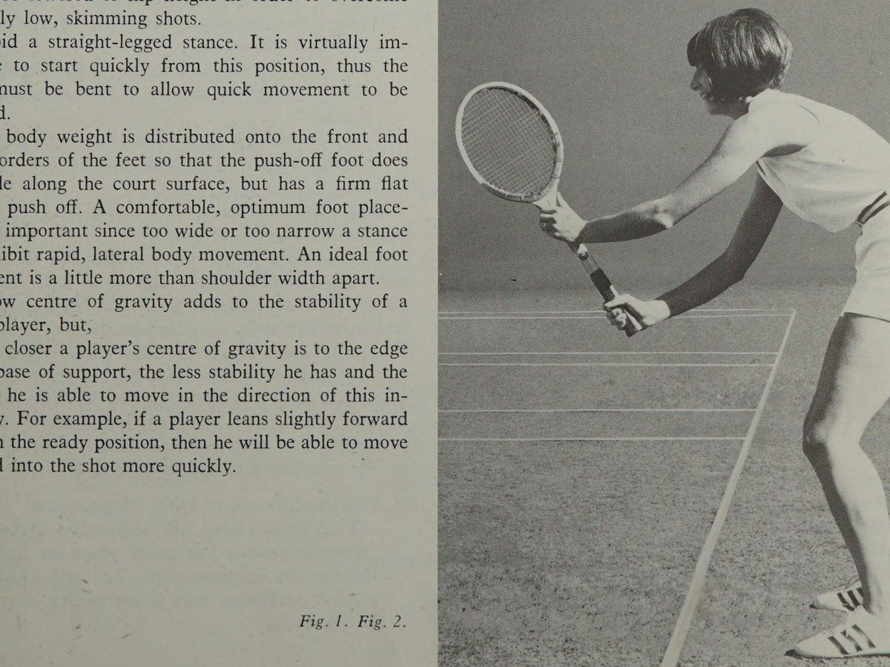
CÁC NGUYÊN TẮC LIÊN QUAN ĐẾN BÓNG SẮP TỚI Xoay được áp dụng cho quả bóng tennis khi lực vợt tác động lệch tâm; nếu lực đánh tác dụng vào tâm quả bóng, quả bóng sẽ bay trong không khí mà không quay. Vậy làm thế nào người chơi có thể truyền độ xoáy cho quả bóng?
(a) Anh ta có thể đánh bóng theo đường đi lên hoặc xuống và mặt vợt phẳng. Đường vợt đi lên sẽ tạo ra xoáy lên, đặc trưng là bóng di chuyển theo hướng ngược chiều kim đồng hồ, khi nhìn từ phía bên trái của bóng (xem Hình 4a). Đường vợt đi xuống sẽ tạo ra xoáy xuống, đặc trưng là bóng di chuyển theo chiều kim đồng hồ khi nhìn từ phía bên trái của bóng (xem Hình 4b).
(b) Anh ta có thể đánh qua mặt phẳng ngang với mặt vợt mở hoặc đóng. Trong tình huống này, mặt vợt mở sẽ tạo ra xoáy xuống (xem Hình 4c) và mặt vợt đóng sẽ tạo ra xoáy lên (xem Hình 4d). Độ xoáy có tác dụng gì đối với đường đi của quả bóng tennis trong không khí? Một quả bóng tennis đang quay tròn trong không khí chịu tác dụng của hai luồng không khí. (xem hình 5).
(a) Quả bóng có xu hướng kéo theo một chút vật trợ giúp. Lớp không khí ranh giới này xung quanh quả bóng di chuyển cùng hướng với quả bóng đang quay.
(b) Lực do lực cản không khí tạo ra có tác dụng cản trở chuyển động về phía trước của quả bóng. Xét hai lực này: Ở phía của quả bóng, nơi lực cản của không khí đối với chuyển động về phía trước đối nghịch với lực cản của không khí chuyển động xung quanh quả bóng, hai dòng không khí tác dụng ngược chiều nhau, do đó gây ra một vùng áp suất cao hình thành,
Hình 5. Một quả bóng được đánh với xoáy xuống di chuyển trong không khí. Hướng đánh——_____» DÒNG KHÔNG KHÍ A. vận tốc của không khí chuyển động ở phía đó giảm đi và quả bóng di chuyển về phía có áp suất nhỏ nhất. Do đó nó sẽ bay theo đường bay cong chứ không phải đường thẳng. Với Topspin. Áp suất cao tích tụ lên phía trên quả bóng và làm giảm áp suất bên dưới quả bóng, khiến quả bóng rơi nhanh hơn bình thường. Với Quay ngược. Áp suất cao được tạo ra dưới quả bóng và áp suất thấp ở phía trên quả bóng. Bóng có xu hướng ở trên không lâu hơn hoặc thậm chí bay lên. Với xoáy ngang. Nếu người chơi thuận tay phải thực hiện cú giao bóng (serve) (đầu vợt di chuyển từ trái sang phải qua mặt sau của quả bóng) thì quả bóng sẽ di chuyển ngược chiều kim đồng hồ quanh một trục thẳng đứng. Một vùng áp suất cao được hình thành ở phía bên phải của quả bóng, vùng áp suất thấp ở bên trái. Do đó, quả bóng đổi hướng về bên trái. Sử dụng những cách giải thích tương tự, một cú giao bóng (serve) xoắn ngược hoặc một cú giao bóng (serve) cắt lát của người thuận tay trái sẽ lệch bóng sang bên phải. Tại sao phải lo lắng về Spin? Điều quan trọng là huấn luyện viên phải dạy người chơi nhận biết kiểu xoáy được truyền vào bóng và chuyển động tiếp theo của bóng. Ví dụ: bạn có thường xuyên thấy các tay vợt trẻ chiếm một vị trí thuận lợi trên lưới, sau đó là một cú đâm thảm hại vào một cú sút xoáy xuống mạnh không? Cầu thủ có cơ hội chiến đấu nếu nhận thấy bóng sẽ rơi mạnh. Anh ta có thể cố gắng đưa tay về phía quả bóng khi nó vẫn còn ở trên cao, hoặc cúi xuống thấp và mở mặt vợt một chút để đánh một cú vô lê có kiểm soát.
Hình 4a. Tạo ra topspin cho quả bóng.
Hình 4b. Tạo ra xoáy ngược cho bóng.
Hình 4c. Tạo ra xoáy ngược cho bóng.
Hình ¢d. Tạo ra topspin cho quả bóng.
Các dòng không khí A,B di chuyển cùng chiều dẫn đến hình thành ÁP SUẤT THẤP. DÒNG KHÔNG KHÍ B Hướng của lực cản x\ >< \ << ĐƯỜNG CUỐI CÙNG chúng ta CỦA BÓNG < Các dòng không khí A, B gặp nhau tạo thành ÁP SUẤT CAO. Lớp không khí bề mặt, di chuyển theo hướng ‘xoay’ MỘT BÓNG ĐÁNH VỚI VÒNG QUAY NGƯỢC QUA KHÔNG KHÍ.
Sau khi trình bày thông tin về vòng xoáy, huấn luyện viên nên đặt ra một số câu hỏi để nhóm có thể giải quyết. Ví dụ:
(a) Có an toàn hơn khi đánh những cú đánh trên mặt đất với xoáy lên hoặc xoáy xuống khi chơi với gió đuôi mạnh?
(b) Một cú vung vợt về sau cao với mặt vợt mở thường cho thấy xoáy lên? Quay ngược? Nên dạy cả cách thực hiện và cách đọc độ xoáy. Huấn luyện viên nên giải thích về mặt khí động học các khái niệm về độ xoáy để nâng cao hiểu biết của người chơi. Những cân nhắc bổ sung về độ xoáy của bóng (a) Một luồng gió mạnh làm tăng sức cản không khí đối với đường bay của quả bóng tennis và do đó làm tăng hiệu ứng xoáy lên quả bóng.
(b) Hiệu ứng xoáy lên một quả bóng chuyển động nhanh (ví dụ như quả giao bóng đầu tiên) được nhận thấy muộn trong đường bay vì vận tốc về phía trước của quả bóng cao so với lực xoáy.
(c) Hiệu ứng của độ xoáy đối với một quả bóng chuyển động chậm hơn (như trong một cú lốp bóng xoáy lên) được thấy sớm hơn trong đường bay của nó vì vận tốc về phía trước nhỏ hơn so với lực xoáy.
(d) Độ xoáy có tác dụng rõ rệt trong việc làm cong đường bay của quả bóng tennis vì trọng lượng nhẹ của nó khiến nó phản ứng với áp suất không khí.
(c) Lực cản không khí tác dụng lên quả bóng tennis giảm khi độ mòn của vỏ quả bóng tăng lên. Vì lý do này, quả bóng mới có lực cản không khí lớn hơn quả bóng cũ. Quả bóng bị mòn sẽ di chuyển nhanh hơn và do lực cản không khí giảm nên những nỗ lực tạo ra độ xoáy không được đền đáp. Điều gì xảy ra khi một quả bóng tennis chạm sân? Góc bật lại. Khi một quả bóng tennis tiếp cận sân từ phía trên, quả bóng sẽ bật trở lại theo đường tiếp cận chính xác. Điều này phù hợp với định luật thứ ba của Newton: 'Đối với mọi hành động đều có phản ứng ngang bằng và ngược chiều'. Toàn bộ phần đáy của quả bóng tennis bị đè xuống khi tiếp đất, phản lực của mặt sân lên quả bóng theo hướng hoàn toàn ngược lại và do đó quả bóng bật lại theo đường tiếp cận. Tuy nhiên, khi bóng tiếp cận theo một góc so với sân, phần bóng tiếp xúc với mặt đất sẽ bị lõm xuống nhiều hơn so với mặt trước. Do đó, sự phục hồi sẽ tiến về phía trước và đi lên. Chỉ với độ lệch nhỏ và xét một quả bóng không quay, góc tiếp cận bằng góc bật lại. Ba yếu tố ảnh hưởng đến lực bật lại và giúp tạo ra sự sai lệch về góc bật lại:
(a) Độ co giãn của quả bóng tennis. Điều này được đánh giá qua khả năng quả bóng có thể trở lại hình dạng ban đầu sau khi bị ép dẹt bởi lực tác động. Nếu quả bóng mềm và không trở lại hình dạng ban đầu ngay lập tức, một phần lực sẽ bị hấp thụ và lực bật lại sẽ chậm hơn và thấp hơn. Những quả bóng tennis chắc chắn nảy từ sân nhanh hơn và cao hơn. Người chơi phải nhận ra một thực tế là những quả bóng mới được lấy vào giữa hiệp thứ hai sẽ cứng hơn và do đó “sống động” hơn những quả bóng cũ.
(b) Bề mặt sân. Nếu bề mặt bị “nhún”, lực bật lại bị ảnh hưởng tương tự như đối với các quả bóng mềm, không đàn hồi. Sân đất nện hấp thụ phần lớn lực tiếp cận nên lực bật lại sẽ chậm hơn nhiều. Mặt sân bê tông sẽ có tác dụng ngược lại và lực bật lại sẽ lớn hơn.
(c) Bóng xoáy. Tất cả các kiểu xoáy: xoáy lên, xoáy xuống, xoáy ngang và không xoáy đều có những tác động khác nhau đến độ nảy của bóng. Ảnh hưởng của xoáy khi tiếp đất (Xem Hình 6) Xoáy lên. Một quả bóng có xoáy lên sẽ đẩy lùi về phía sân và theo định luật thứ ba của Newton, phản lực bằng nhau và ngược chiều của mặt đất đối với quả bóng là về phía trước. Lực bổ sung này, cùng với động lượng về phía trước của quả bóng, khiến nó bật trở lại thấp hơn, nhanh hơn và xa hơn bình thường. Tuy nhiên, những cú đánh xoáy lên (topspin) mạnh, khi bóng tiếp cận sân với tốc độ khủng khiếp, sẽ bật lại cao hơn những cú đánh chậm hơn với ít hoặc không có xoáy lên. Điều này xảy ra do tốc độ bóng và độ xoáy lên quá cao làm tăng áp suất không khí lên phía trên quả bóng, khiến bóng rơi xuống nhanh chóng. Do đó, bóng tiếp cận sân gần với góc thẳng đứng hơn và kết quả là lực bật ra cũng sẽ thẳng đứng hơn. Quay ngược. Một quả bóng có xoáy xuống sẽ đẩy bóng về phía trước và theo luật thứ ba của Newtown, sân sẽ đẩy bóng về phía sau. Phản ứng này trái ngược với động lượng về phía trước của quả bóng, khiến nó bật lên cao hơn, chậm hơn và ngắn hơn bình thường. Không quay. Một quả bóng không có độ xoáy bật ra khỏi sân với độ xoáy lên nhẹ do ma sát của bề mặt sân khi tiếp đất, làm dừng phần dưới của thanh chắn, khiến phần trên của quả bóng di chuyển nhanh hơn. Như đã đề cập trước đó, góc bật lại bằng góc tiếp cận. Xoáy ngang. Một quả bóng di chuyển ngược chiều kim đồng hồ quanh một trục thẳng đứng, chẳng hạn như một cú giao bóng (serve) thuận tay phải tới phần sân thuận tay, sẽ bật trở lại về phía bên trái kéo người trả giao bóng (receiver) ra khỏi sân. Phía bên phải của quả bóng đẩy về phía trước so với mặt sân, để phản ứng lại lực bật lại tác dụng vào phía bên tay phải. Kết quả là quả bóng lệch về bên trái. : Vì những lý do tương tự, một quả bóng di chuyển theo chiều kim đồng hồ quanh một trục thẳng đứng, ví dụ như cú giao bóng (serve) của người thuận tay trái tới phần sân trái tay, sẽ bật về bên phải kéo người trả giao bóng (receiver) ra khỏi sân. Dạy các khái niệm cơ bản về đọc thông qua kỹ thuật giải quyết vấn đề. Ví dụ:
Hình 6. Ảnh hưởng của độ xoáy khi tiếp đất.
(a) Một tay vợt thuận tay phải truyền xoáy ngang; anh ta đánh một cú trái tay (backhand) dọc theo đường biên bằng cách vuốt bóng từ trái sang phải. Vòng quay này sẽ có tác dụng gì khi bật lại?
(b) Một cú lốp bóng xoáy lên chỉ đi qua đầu vợt đã căng của bạn. Bạn có đủ thời gian để hồi phục hay bạn phải gấp rút cố gắng lấy lại quả bóng? Các nguyên tắc về độ xoáy và lực bật lại khi chúng ảnh hưởng đến sự tiếp xúc của vợt sẽ được thảo luận sau. CÁC NGUYÊN TẮC ĐƯỢC XEM TRƯỚC KHI TÁC ĐỘNG* Sự đóng góp của các bộ phận cơ thể, tính liên tục của chuyển động Khi thực hiện cú công bóng thuận tay, lực được cung cấp bởi sự thay đổi trọng lượng cơ thể bao gồm việc bước vào cú đánh bằng chân trái, xoay hông, xoay thân và cuối cùng là uốn cong theo chiều ngang của cánh tay. Nếu những chuyển động góp phần này của cơ thể xảy ra theo đúng trình tự và đúng thời gian, vận tốc của vợt sẽ đại diện cho tổng vận tốc của các chuyển động góp phần. *Trừ khi được đề cập cụ thể, cuộc thảo luận sẽ xem xét người chơi thuận tay phải. *. wy for 4* Có một luồng năng lượng từ bàn chân hướng lên trên và chuyển động cuối cùng là chuyển động của dụng cụ đánh. Để có tốc độ vợt tối đa, mỗi bộ phận cơ thể phải bắt đầu hoạt động vào thời điểm bộ phận bên dưới đạt tốc độ tối đa và gia tốc tối thiểu. Nếu việc vung tay về phía trước diễn ra trước khi xoay hông thì cú thuận tay (forehand) chỉ được đánh bằng cánh tay và việc xoay người một chút đã góp phần vào cú đánh. Không nên có sự gián đoạn trong tính liên tục của phong trào. Nếu đầu vợt hoặc cơ thể dừng lại giữa chừng trong một chuyển động thì tốc độ vợt hoặc chuyển động của cơ thể đầu vợt hoặc cơ thể dừng lại giữa chừng trong một chuyển động thì tốc độ vợt hoặc chuyển động của cơ thể phải được bắt đầu lại lần thứ hai. Xem xét việc bảo toàn năng lượng và tốc độ vợt tại điểm tiếp xúc, điều này trở nên cực kỳ kém hiệu quả. Cũng sẽ có sự mất nhịp điệu và thời gian trong cú đánh. Tất cả những người yêu thích tennis sẽ ghi nhận những cú đánh mượt mà của nhà vô địch. Chuyển trọng lượng trong các cú đánh trên mặt đất (Nghĩa là, khi người chơi đẩy chân sau ra để dồn trọng lượng lên chân trước.)
(a) Tư thế nghiêng sang một bên và chuyển trọng lượng cơ thể về phía trước khi đánh đòn sẽ làm tăng độ dài của cả cú vung về phía sau và cú vung về phía trước. Vòng cung chuyển động tăng lên này cho phép tăng tốc độ vợt lớn hơn và cũng giúp làm phẳng cung của cú xoay theo hướng đánh dự định.
(b) Một bước tiến về phía lưới cho phép các phần cơ thể xoay tối đa và do đó làm tăng lực của cú đánh .
(c) Điều quan trọng là phải uốn cong chân gần lưới nhất để tạo điều kiện cho vòng đánh dài hơn. Điều này cũng cho phép có một lập trường ổn định hơn.
(d) Khi tăng kích thước của bệ đỡ, người chơi nên phóng to nó theo hướng đánh mong muốn.
(e) Nói chung, thế đứng của người chơi càng rộng thì độ ổn định càng cao. Tuy nhiên, có chiều rộng tối ưu; thế đứng quá rộng sẽ cản trở khả năng hồi phục sau khi hoàn thành cú đánh và có thể góp phần gây mất ổn định sang một bên.
(f) Thế đứng đánh của người chơi càng hẹp thì khoảng cách chuyển trọng lượng càng ít mà không mất thăng bằng. Do đó, lực truyền động sẽ ít hơn do khoảng cách để phát triển tốc độ vợt sẽ giảm đi. Việc sử dụng đúng các điểm trên sẽ góp phần tạo ra cú đánh mạnh hơn với điều kiện tay cầm được chặt tại điểm va chạm. Mặc dù việc cầm vợt được nới lỏng giữa các cú đánh là điều tự nhiên và hiển nhiên, nhưng nếu nó vẫn lỏng lẻo tại điểm tiếp xúc với bóng, thì phần lớn lực được phát triển thông qua các chuyển động tuần tự, tiến bộ, bắt đầu từ bàn chân, tích tụ qua thân, vai và bây giờ truyền vào vợt, sẽ bị mất và cú đánh sẽ không được kiểm soát. Sự uốn cong cổ tay (tay trước) hoặc duỗi cổ tay (trái tay) sẽ tăng thêm vận tốc bóng nhưng mất khả năng kiểm soát. Để có những cú đánh tiếp đất nhất quán và có kiểm soát, cần phải siết chặt cổ tay. Làm phẳng cung của một cú swing Làm phẳng cung của một cú swing (xem Hình 7 và 8) giúp người chơi đánh thẳng về phía trước dễ dàng hơn vì điểm tiếp xúc cần thiết được kéo dài. Vợt có thể đi theo một vòng cung phẳng trước khi tiếp xúc càng lâu thì động lượng của vợt theo hướng mong muốn càng lớn. Như đã lưu ý trong Hình 8, vòng cung được làm phẳng bằng cách sử dụng chuyển động xoay cơ thể, chuyển trọng lượng từ: bàn chân sau sang bàn chân trước, vung ngược hoàn toàn và theo sau, và theo sau, và bằng cách uốn cong đầu gối trước. Chuyển trọng lượng về phía trước không được gặp lực cản từ chân phía trước. Nếu đầu gối phía trước uốn cong khi trọng lượng chuyển về phía trước, động lượng của cơ thể và vợt tiếp tục mà không có lực cản. Mức độ uốn cong đầu gối được xác định bởi độ cao của bóng nảy. Một quả bóng có độ nảy thấp rộng về phía trái tay sẽ cần uốn cong đầu gối nhiều hơn so với một quả bóng có độ nảy cao gần cơ thể. Xem xét cẩn thận Hình 9 sẽ cho thấy rằng giống như trong các cú giao bóng (serve) trên mặt đất, cú giao bóng (serve) có một vòng cung dẹt được tạo ra bởi sự dịch chuyển trọng lượng về phía trước và chuyển động xoay cơ thể. Mặt phẳng của cung này thẳng đứng chứ không phải nằm ngang. Các tín hiệu như “đánh xuyên qua quả bóng”, “mang bóng trên dây” giúp đạt được ý tưởng làm phẳng vòng cung. Đòn bẩy càng dài (khi va chạm) tốc độ vợt càng lớn. Để đạt được đòn đánh dài hơn, tất cả các cú đánh nền, giao bóng và đập bóng đều được thực hiện bằng một cú vung từ vai. -Tại điểm tiếp xúc trong lần giao bóng đầu tiên bằng phẳng, cánh tay đánh được duỗi thẳng hoàn toàn. Các cú đánh ở độ dài toàn bộ cánh tay sẽ mạnh hơn đơn giản là do sự khác biệt về độ dài của đòn bẩy. (Đòn bẩy được đề cập đến bao gồm cánh tay mở rộng và vợt được cầm, chúng cùng nhau cung cấp chiều dài đòn bẩy ở người trưởng thành khoảng 120 đến 150 cm [bốn đến năm feet].) Sử dụng khớp vai làm điểm tựa và di chuyển cánh tay đánh qua một góc nhất định, có thể nhận thấy trong Hình 10 rằng đầu vợt bao phủ khoảng cách gần gấp sáu lần so với khớp khuỷu tay trong một khoảng thời gian không đổi. Điều này cho thấy đầu vợt phải di chuyển nhanh hơn khớp khuỷu tay. Vì lý do này, người mới bắt đầu nên được khuyến khích tránh xa bóng, sao cho điểm tiếp xúc nằm ở độ dài sải tay, đảm bảo tốc độ vợt tối đa. Độ dài của đòn bẩy có thể phải thay đổi để phù hợp với sức khỏe của người chơi tennis. Người chơi yếu có thể phải “nghẹt thở” tay cầm để rút ngắn đòn bẩy nhằm duy trì tốc độ vợt cần thiết hoặc để đảm bảo rằng mình sẽ thắng được đà của bóng. Một cú vung vợt về phía sau hình tròn Một cú vung vợt về phía sau theo hình tròn sẽ làm tăng thêm thời gian và khoảng cách có sẵn để tạo ra tốc độ đầu vợt. Nó cũng giúp đạt được nhịp điệu nhất định trong cú đánh. Tuy nhiên, đối với người mới bắt đầu, sẽ có những khó khăn về thời gian và kiểm soát. Nên thực hiện động tác xoay lưng thẳng đơn giản. Về mặt cơ học, động tác vung vợt sau thẳng, đơn giản về cơ bản là hợp lý hơn ở chỗ nó đáp ứng hiệu quả hơn yêu cầu của tất cả các chuyển động vung vợt sau trong trò chơi đánh bóng, rằng động tác vung vợt sau phải theo hướng ngược lại với hướng đánh mong muốn. Động tác backswing theo hình tròn có thể gây rắc rối trên các sân có tốc độ nhanh, nơi vợt phải được di chuyển cực kỳ nhanh trong cú đánh. Khi động tác backswing không thẳng sẽ có thêm nguồn gây ra lỗi trong cú đánh. Có thể thực hiện động tác backswing tròn trên sân cứng khi độ nảy được đảm bảo hơn và người chơi có nhiều thời gian. Chủ yếu nhờ bề mặt nhanh và chiến thuật lao lưới, top. môn tennis đẳng cấp được chơi với tốc độ cao đến mức hầu hết người chơi đều áp dụng cách đánh lùi ngắn hơn. Điều này đặc biệt đúng đối với các cú trả giao bóng và các cú đánh tiếp cận.
* S %, tiếp xúc tác động tại điểm F< Sẽ đảm bảo’. 'thẳng thắn. đánh
A FLAT se lattening” các điểm B- Vận tốc chuyển tiếp tối đa và các điểm tiếp xúc bóng Xét rằng vận tốc chuyển tiếp tối đa của đầu vợt xảy ra khi vợt vuông góc với hướng đánh dự định, điều quan trọng là khi đánh các cú đánh trên mặt đất, bóng phải tiếp xúc trong mặt phẳng giữa dọc (giả sử đường giữa hai vai vuông góc với lưới). Lực lớn hơn sẽ được tạo ra nếu tác động xảy ra ở đây. Các cú đánh quá xa về phía trước hoặc quá xa cơ thể sẽ bị không hiệu quả về mặt tạo lực. Lưu ý trong Hình 11 và 12, các cú đánh trái tay được tiếp xúc hơi ở phía trước mặt phẳng giữa vì tay phải, do cơ thể của con người gần lưới hơn so với tay trái. Mặt khác, các cú thuận tay (forehand) được tiếp xúc muộn hơn một chút vì cánh tay phải nằm xa lưới hơn so với tay trái. sau đó, nên được tiếp xúc trước khi chuyền bất kỳ bộ phận nào của cơ thể, nếu không, các chuyển động bù trừ của cổ tay sẽ phải được thực hiện; những điều này sẽ làm giảm khả năng kiểm soát. Đối với cú đánh trái tay, điểm tiếp xúc bóng phải hơi ở phía trước bàn chân phải và ở bên trái cơ thể. Đối với tay thuận, điểm tiếp xúc bóng thường ngang bằng với bàn chân trái. dẫn người chơi đánh bóng đến các vị trí khác nhau trên sân, không phải bằng cách búng cổ tay hoặc cắt ngang bóng, mà bằng cách thay đổi vị trí cơ thể và điểm tiếp xúc của bóng. Đối với người mới bắt đầu, các cú đánh cắt lát không được kiểm soát đủ để nhất quán. .Các kỹ thuật sau đây cần được tính đến khi đánh bóng tới các khu vực khác nhau của sân. sân đấu:
(a) Các cú đánh dọc biên đòi hỏi một thế đứng khép kín (cực kỳ sang một bên) để cánh tay vung tự nhiên dọc theo đường biên. Bóng được tiếp xúc muộn hơn bình thường một chút. (Xem Hình 13 và 14.)
(b) Các cú đánh chéo sân yêu cầu tư thế cởi mở hơn (xoay mặt vào lưới nhiều hơn) để cánh tay vung tự nhiên xuyên qua sân. Bóng được tiếp xúc sớm hơn bình thường một chút. (Xem Hình 15 và 16.) Tuy nhiên, những người chơi hàng đầu thường bỏ qua các nguyên tắc 1a này bằng cách cuộn cổ tay hoặc cử động cơ thể không tự nhiên nhằm đánh lừa đối phương. Một ví dụ về điều này là một bước đánh cực kỳ khép kín, sau đó là một cú đánh trái tay lăn qua sân, điểm chiến thuật là cies Pighds Fis 10.
nếu điểm tiếp xúc đến muộn và một cú búng cổ tay được kết hợp với cú lăn chéo sân. Ngay khi những người mới bắt đầu có thể tập hợp được hai hoặc ba cú đánh liên tiếp, họ nên được dạy các cơ chế cơ bản để vuốt bóng đến các phần khác nhau của sân. Những người chơi nâng cao nên được khuyến khích thử nghiệm những cú đánh lừa. Sẽ nói nhiều hơn về chủ đề này trong chương sau bàn về chiến thuật đánh đơn và đánh đôi.
Hình 11. Điểm tiếp xúc bóng; cho tối đa- vận tốc về phía trước trong cú thuận tay (forehand), góc vuông tạo thành dọc theo nhưng hơi hướng về phía trước cơ thể.
Hình 12. Điểm tiếp xúc bóng cho cực đại vận tốc về phía trước trong cú đánh trái tay.
Hình 13. Thuận tay dọc biên, đóng tư thế có điểm tiếp xúc muộn.
Hình 14. Cú trái tay dọc theo đường biên, khép lại thế đứng với điểm tiếp xúc muộn.
Hình 15. Thuận tay ngang sân, mở thế đứng với một điểm tiếp xúc cary. Kết hợp chuyển động về phía trước với chuyển động góc Do sự truyền trọng lượng cơ thể, tất cả các cú đánh tennis đều kết hợp bộ phận chuyển tiếp về phía trước với bộ phận được tạo ra bởi cú xoay đầu vợt. Cả hai lực lượng này được tích hợp để có được một kết quả hiệu quả. Lực chuyển tiếp ngay trước lực góc hoặc cả hai xảy ra đồng thời. Ví dụ, cú giao bóng (serve) tennis bao gồm hai lực về phía trước: (Xem Hình 17,) (a) Trọng lượng cơ thể chuyển nhẹ từ chân sau sang chân trước. Cơ thể chuyển từ tư thế thẳng đứng sang tư thế hơi nghiêng về phía trước.
(b) Sau khi thực hiện giai đoạn nghiêng về phía trước, hai chân duỗi mạnh (đặc biệt là chân trước) để đẩy cơ thể lên trên và về phía trước. Điều này giúp bắt đầu đà chuyển tiếp của cơ thể và cũng giúp đạt được độ cao để đảm bảo điểm tiếp xúc cao. Khi cơ thể được đẩy lên trên và về phía trước thì việc vung cánh tay diễn ra. Vợt gần như được ném vào quả bóng. Lực này làm tăng thêm động lượng về phía trước của cơ thể. Kết quả ròng đảm bảo rằng cơ thể hầu như được kéo và đẩy vào sân một cách trơn tru. có
Hình 16. Trái tay ngang sân, mở thế đứng với điểm tiếp xúc sớm. không dừng lại trong chuyển động về phía lưới. Nếu tại điểm tiếp xúc, cơ thể thẳng đứng và ít hoặc không gập đầu gối, người chơi phải tạo Đà về phía trước lần thứ hai. Điều này làm cho phong trào rất kém hiệu quả. Việc nghiêng người về phía trước và duỗi đầu gối là rất quan trọng, vì càng ở phía trước điểm tựa của anh ta là trọng tâm của người chơi thì anh ta càng có thể xoay về phía trước và tiến tới lưới nhanh hơn. Uốn cong đầu gối tối ưu. (Xem Hình 18 và 19.) Khi xem xét lực hướng lên tối đa của cơ thể để đạt được độ cao khi giao bóng, việc sử dụng hai yếu tố sau phải được giải quyết:
(a) Góc cong của đầu gối càng nhỏ thì càng khó duỗi thẳng đầu gối trước lực cản.
(b) Khoảng cách có thể để duỗi thẳng đầu gối càng lớn thì khoảng cách để tăng tốc càng lớn. Tồn tại một điểm uốn cong đầu gối tối ưu để tạo điều kiện cho lực cơ thể hướng lên tối đa. Trong Hình 18, có một khoảng cách lớn hơn để — tăng tốc nhưng việc duỗi thẳng đầu gối sẽ khó khăn hơn. Pere
Cú xoay vợt _ z" y chuyển động góc ee jee: Hướng ¥ Khoảng cách tác dụng lực là ey \ lực
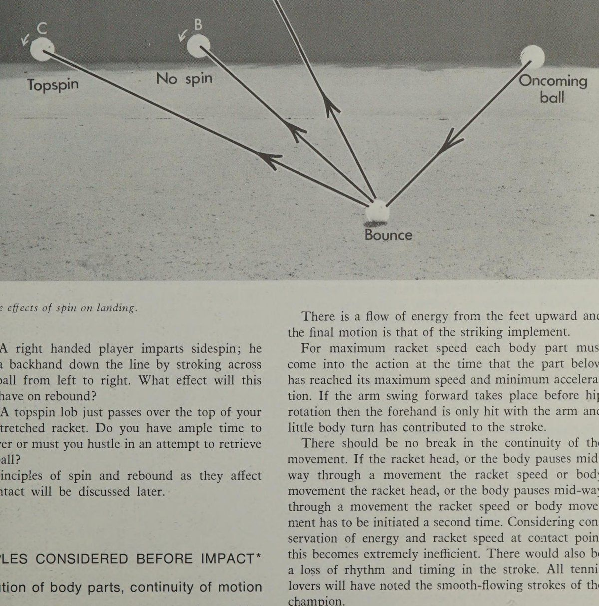
Hình 17. Kết hợp chuyển động tiến với chuyển động góc.
Hình 18. Cúi đầu gối tối ưu (dịch vụ)
Lợn a \ lực Nt $------Khoảng cách Trong Hình 19 không có nhiều khoảng cách để "xem lực tăng tốc nhưng gần như không cần nhiều nỗ lực cần thiết để duỗi thẳng đầu gối. Điểm uốn cong đầu gối tối ưu trên thực tế có thể nằm giữa Hình 18 và 19. Huấn luyện viên và tay vợt có thể giải quyết vấn đề thông qua thử nghiệm và thành công. Vấn đề sẽ là vấn đề của một cá nhân liên quan đến sự thay đổi trọng lượng cơ thể, chiều dài chân và sức mạnh của chân. Tăng cường nỗ lực của cơ bắp Lực của cú đánh có thể tăng lên nếu tốc độ co cơ tăng lên. Tuy nhiên, điều này không được vượt quá điểm mà ở đó việc kiểm soát cú đánh bị mất. Ngoại trừ những cú giao bóng (serve) đầu tiên, và có thể cả những cú đập bóng, rất ít trường hợp xảy ra khi người chơi phải đánh một cú đánh với lực 'tối đa' có thể.
Hình 19. Cúi đầu gối tối ưu (dịch vụ )
Hình 20. Cách cầm vợt thuận tay phía Đông—
Hình 21. Cách cầm vợt thuận tay phía đông—
Hình 22. Cách cầm vợt thuận tay phía Đông— nhìn từ trên xuống. NGUYÊN TẮC KHI TÁC ĐỘNG Định luật thứ ba của Newton Như đã đề cập trước đó, do định luật tác dụng thứ ba và phản lực ngược lại của Newton, vợt phải chắc chắn khi va chạm nếu muốn tác dụng lực tối đa lên bóng. Tay cầm lỏng lẻo có nghĩa là phần lớn lực về phía trước có thể bị mất do vợt bị đẩy lùi. Vì vậy, siết chặt tay cầm khi va chạm là có lợi. Cổ tay chặt là điều quan trọng trong tất cả ngoại trừ bốn cú đánh — Cú giao bóng, Cú đánh trên cao, Cú thả hoặc Cú đánh và những cú đánh được đánh ở điểm tiếp xúc ở phía sau cơ thể. Phần lớn lực về phía trước cũng bị mất khi dây quá lỏng và một phần lực bị tiêu tán khi bóng chạm vào vợt. Đây là một lợi thế cho những người mới bắt đầu chơi vì bóng ở trên dây lâu hơn mang lại khả năng kiểm soát tốt hơn.
Hình 23. Cách cầm vợt trái tay phía đông—
Hình 24. Cách cầm vợt trái tay phía Đông—
Hình 25. Cách cầm vợt trái tay phía đông— nhìn từ trên xuống. Động lượng của vợt Nói chung, người ta áp dụng rằng vợt càng nặng thì động lượng về phía trước càng lớn. Tuy nhiên, vì động lượng là tích của khối lượng và vận tốc, nếu vợt quá nặng đến mức không thể kiểm soát được thì tốc độ vợt về phía trước sẽ bị mất và động lượng tạo ra sẽ giảm. Vì vậy, trọng lượng vợt lý tưởng là trọng lượng vợt nặng nhất có thể và có tính đến khả năng cơ động. Tay cầm Các cách cầm sau đây được khuyên dùng nhưng không có nghĩa là từ cuối cùng. Vì lợi ích về mặt giải phẫu, hầu hết bàn tay phải ở phía sau tay cầm để đạt được sự tiếp xúc chắc chắn hơn và lực đòn bẩy lớn hơn. . Cú thuận tay (xem Hình 20, 21 và 22) là kiểu ‘bắt tay’ hay kiểu cầm vợt kiểu đông. Cú trái tay (xem Hình 23, 24 và 25) là kiểu cầm ‘ngón cái phía sau’ hay kiểu cầm vợt phía đông. Cách cầm kiểu lục địa hoặc kiểu cầm 'búa' (xem Hình 26 và 27) đối với các cú đánh trên mặt đất rất khó kiểm soát đối với người mới bắt đầu vì hầu hết bàn tay đều ở phía trên tay cầm. Điều này đòi hỏi sức mạnh cổ tay rất lớn mà người mới bắt đầu cảm thấy khó tập trung. Người chơi phải có cổ tay khỏe trước khi sử dụng cách cầm vợt lục địa cho các cú đánh trên mặt đất. Tay nắm lục địa không có lợi thế cơ học. Ưu điểm duy nhất của nó là: _(a) chơi trên bề mặt mà bóng ở mức thấp vì tay ở trên cán vợt; (b) không phải thay tay cầm. Trên sân cứng, độ nảy của bóng sẽ cao hơn và việc cầm bóng kiểu lục địa sẽ khó khăn. Về mặt giải phẫu, không thể giữ tay trên mặt vợt một cách hiệu quả khi tiếp xúc với bóng cao hơn thắt lưng. Để giúp khắc phục điều này, người chơi sẽ phải sử dụng lát cắt. Trong các cú vô lê, người chơi có thể thay đổi cách cầm như đối với các cú đánh trên mặt đất hoặc chơi lục địa cho cả thuận tay và trái tay. Nếu cổ tay đủ khỏe, kiểu cầm vợt kiểu lục địa sẽ là lựa chọn lý tưởng cho những pha trao đổi vô lê nhanh thường diễn ra trong các trận đánh đôi tốt. Khi thời gian cho phép, nên sử dụng cách nắm phía đông. Kiểu cầm vợt lục địa là tốt nhất để giao bóng và đập bóng vì nó cho phép sử dụng tối đa khả năng uốn cong cổ tay (xem
Hình 28). Với một chút sửa đổi, dịch vụ lục địa tay cầm phó có thể được sử dụng để giao bóng cắt, phẳng hoặc xoắn. Tay cầm dịch vụ phía đông cản trở việc sử dụng chốt cổ tay (xem Hình 29). Những người mới bắt đầu nên được khuyến khích sử dụng cách cầm vợt kiểu lục địa càng nhanh càng tốt. Bóng xoáy khi tiếp xúc Phân tích các tình huống sau đây giúp người chơi xác định chắc chắn tác động của bóng xoáy khi tiếp xúc. Do đó, việc điều chỉnh mặt vợt và xoay vợt có thể được thực hiện sớm để khắc phục ảnh hưởng của độ xoáy. Quan sát:
(a) Một quả bóng được đánh không có độ xoáy tiếp cận mặt vợt 'ở mép' (xem Hình 30).
(b) Một quả bóng được đánh với xoáy lên tiếp cận mặt vợt ‘ở mép’ (xem Hình 31).
(c) Một quả bóng được đánh với xoáy xuống tiếp cận mặt vợt ‘trên mép’ (xem Hình 32). Hiệu ứng xoáy trong những trường hợp này trông khá mạnh mẽ. Tuy nhiên, đối với các mục đích thực tế, hiệu ứng sẽ được sửa đổi do tốc độ vợt. Khi hai lực tác dụng lên quả bóng tennis, lực nào có tác dụng lớn nhất sẽ quyết định đường đi cuối cùng của quả bóng. (Xem Hình 33.) Thông thường, cú vung vợt có ảnh hưởng lớn hơn đến hướng. Vợt nặng hơn quả bóng và tạo ra động lượng lớn hơn quả bóng tennis đang lao tới. Khi đó, tốc độ vợt tuyệt đối có thể bù đắp cho nguyên tắc góc tiếp cận bằng góc bật lại. Nó cũng sẽ vô hiệu hóa hiệu ứng xoáy của quả bóng đang tới.
Hướng đánh ngang và dọc Hướng dọc—Vì trọng lực bắt đầu kéo bóng xuống ngay sau khi tiếp xúc, nên những người mới bắt đầu thường có vóc dáng khá thấp và thiếu sức mạnh, cần đánh bóng lên một chút để cú đánh của họ đi qua lưới. Quỹ đạo 45 độ sẽ đạt được khoảng cách theo phương ngang lớn nhất. Người mới bắt đầu phải ghi nhớ điều này khi vuốt sâu đến vạch cuối sân. (Xem Hình 34.) Xem xét sự tiếp xúc của bóng ở các giai đoạn nảy khác nhau, (lưu ý các Hình 35, 36 và 37) vợt được giữ “ở mép” và di chuyển theo chiều ngang. Rõ ràng là phải thực hiện các điều chỉnh mặt vợt hoặc xoay để đánh bóng qua lưới một cách hiệu quả.
(a) Liên hệ trước đỉnh. Bóng được đánh khi đang trên cao phải được đánh bằng một cú cắt hoặc một cú đánh ngang với mặt vợt khép kín.
(b) Tiếp xúc khi bóng rơi xuống. Một quả bóng được đánh
-sau đỉnh điểm phải được đánh bằng xoáy lên, .hoặc một cú đánh ngang với mặt vợt mở. Hướng bên—Hướng bên bị ảnh hưởng bởi điểm tiếp xúc trong vòng cung xoay. (Xem Hình 7.)
(a) Nếu bóng được đánh sớm, cú đánh sẽ đi ngang sân.
(b) Nếu bóng được đánh muộn, cú đánh sẽ đi xuống vạch. Tình huống (a) hoặc (b) cực đoan sẽ khiến bóng đi ra ngoài sân. Nếu đầu vợt trượt cổ tay thì bóng sẽ bật ra khỏi người chơi. Vì lý do này, các cú đánh lùi bằng cổ tay phải được thực hiện sớm. Nếu đầu vợt đi trước cổ tay khi tiếp xúc thì bóng sẽ bật lại phía trước người chơi. Tốc độ bóng tối đa Để đạt được tốc độ bóng tối đa, quả bóng phải được tiếp xúc thẳng hàng với trọng tâm của nó. Một cú đánh lệch tâm sẽ tạo ra độ xoáy và do đó làm mất vận tốc bóng về phía trước. Vì lý do này, cú xoay vợt phải phù hợp với mục tiêu đã định và không được vượt qua đường bay của quả bóng đang tới. Như đã đề cập trước đó, đường cong của vợt càng phẳng thì phạm vi tiếp xúc của bóng càng lớn để đảm bảo kết quả mong muốn.
Hình 26. Tay cầm dịch vụ lục địa—
Hình 27. Tay nắm dịch vụ lục địa—
Hình 28. Tay cầm dịch vụ lục địa— xem lại. Quả sung! 29. Tay cầm dịch vụ phía Đông— nhìn từ phía trước. ~
Hình 30. Một quả bóng được đánh không xoáy
*s thấy SES, Vòng quay đỉnh cao. tiếp cận một mặt vợt 'trên mép'. ei Bar ee foie chống lại Say
Hình 31. Một quả bóng được đánh bằng xoáy lên os Z ; eta “> vợt ‘tiếp cận mặt vợt ‘trên mép’.
Chiều cao theo chiều dọc Điểm tiếp xúc Kiểm soát và đánh lừa bóng Đánh một quả bóng tennis không phải lúc nào cũng đòi hỏi phải tạo ra lực tối đa. Kiểm soát bóng và đánh lừa cũng là những yếu tố quan trọng trong trò chơi. Người chơi đánh những cú đánh có kiểm soát chắc chắn sẽ có lợi thế hơn người 'basher' hoặc 'dinker'. Đôi khi, với mục đích đánh lừa, người chơi có thể thực hiện các chuyển động của một cú đánh mạnh chỉ để co các cơ đối phương và thực hiện một cú đánh rơi hoặc bắn chìm. Uốn cổ tay Có thể đạt được lực bổ sung bằng cách uốn cong cổ tay ngay trước khi va chạm. Ví dụ, trong giao bóng tennis, một lực lớn hơn được tác dụng lên bóng bằng cách uốn cong cổ tay. Tuy nhiên, ở những cú đánh trên mặt đất, kỹ thuật này dẫn đến sự thiếu kiểm soát. Động lượng tại điểm tiếp xúc Khi xét động lượng của vợt và bóng tại điểm tiếp xúc, động lượng của vợt lớn hơn động lượng của quả bóng. Sau khi tiếp xúc, động lượng của bóng tăng thêm động lượng của vợt. Vì lý do này, một người chơi yếu hơn có thể bắt kịp tốc độ đánh của mình từ một đối thủ đánh mạnh. Việc buộc người chơi yếu hơn phải tạo ra tốc độ của riêng mình sẽ khiến anh ta không muốn đánh. Theo dõi Theo dõi có thể được coi là sự tiếp tục của lực vợt để tăng thời gian tác dụng của nó vào bóng. Vì mục đích huấn luyện, việc nhấn mạnh việc tiếp tục vung vợt về phía trước sau khi tiếp xúc sẽ giúp đảm bảo thời gian tiếp xúc vợt/bóng lâu hơn. Tuy nhiên, rõ ràng là sau khi tiếp xúc, không có tác động nào của cơ thể hoặc vợt có thể ảnh hưởng đến đường bay của bóng.
Hình 34. Đường đi của quả bóng tennis được chiếu ở các góc 30°, 45° và 60°. Vel.= hằng số Sân Cấp Khoảng cách theo chiều ngang
Hình 32. Một quả bóng được đánh có xoáy xuống tiếp cận mặt vợt 'ở rìa'.
Hình 33. Ảnh hưởng của tốc độ vợt đến sửa đổi độ xoáy của bóng. Lực quay ngược lại
Hình 35. Tiếp xúc bóng ‘trên mặt trỗi dậy' với mặt vợt 'trên rìa'. Lực bật lại của bóng Một hướng của « ? ; vợt sd
Hình 36. Tiếp xúc với bóng ở phía trên của độ nảy với mặt vợt 'ở rìa'. = ;
Hình 37. Tiếp xúc với bóng sau cú đánh đạt đỉnh với mặt vợt 'trên mép'.
(a) Xem xét định nghĩa này của việc theo dõi Điểm va chạm và tầm quan trọng của thời gian áp dụng lực (\ có thể thấy trong các công thức: V = at. (V = vận tốc bóng cuối cùng, a = gia tốc vợt không đổi và ¢ = thời gian có sẵn để áp dụng lực). Thời gian tác dụng lực càng lớn thì tốc độ bóng sau khi tiếp xúc càng lớn. Nói cách khác, vận tốc bóng cuối cùng tỷ lệ thuận với thời gian tác dụng lực.
(b) Theo dõi cung cấp thời gian và khoảng cách để tốc độ vợt giảm tốc, cho phép đầu vợt di chuyển nhanh nhất tại thời điểm va chạm. Để đạt được tốc độ bóng tối đa, điểm tiếp xúc phải ở giữa cung có tốc độ đầu vợt cao nhất. (Xem Hình 38). Ghi chú trong
Hình 38 khoảng cách giữa các điểm đen càng lớn chấm khi đầu vợt di chuyển càng nhanh. Có thể thấy điểm tác động ở Hình 38 nằm ở giữa cung có tốc độ đầu vợt cao nhất. Từ những thông tin như vậy, việc tìm ra những khiếm khuyết trong cú vung giao bóng của người chơi có thể được ghi nhận. Ví dụ: nếu có rất ít hoặc không có sự tiếp xúc nào sau khi tiếp xúc, thì điểm va chạm nằm ở phía trên tâm của vòng cung có tốc độ vợt cao nhất và sự tiếp xúc được thực hiện khi vợt đang giảm tốc. Mặt khác, cú backswing quá ngắn có nghĩa là tốc độ đầu vợt vẫn tăng tại điểm tiếp xúc.
(c) Một vật thường chuyển động bằng cách truyền động lượng từ một bộ phận sang toàn bộ vật thể. Ví dụ: trong giao bóng tennis, duỗi chân và vung vợt về phía trước trong khi theo sau
Hình 38. Dịch vụ đầu tiên bằng phẳng. Một khung hình xuyên suốt, khiến cơ thể chuyển động trôi chảy và nhanh chóng theo từng giây theo đầu vợt. về phía lưới. Theo dõi (dịch vụ):
(d) Khi đánh một quả bóng tennis ở tốc độ tối đa, như trong cú giao bóng (serve) đầu tiên bằng phẳng, động lượng về phía trước của cơ thể được kiểm tra bằng cách vung chân phải về phía trước. Chân phải ban đầu đóng vai trò như một giá đỡ, sau đó duỗi mạnh để đẩy tay vợt về phía lưới. Khi thực hiện cú đánh trên mặt đất, chân sau được giữ tiếp xúc với mặt đất để người chơi có thể đẩy nó ra và chuyển nhanh sang cú đánh tiếp theo. Ngồi bằng một chân là một tư thế cực kỳ không ổn định, do đó nếu phải nhấn mạnh rằng chân gần phải tiếp xúc với mặt đất. 2,
Phương Pháp Luận Huấn Luyện, Quản Lý Lớp Học & Kỷ Luật
2. Phương pháp huấn luyện, kiểm soát lớp học và kỷ luật PHƯƠNG PHÁP HUẤN LUYỆN Trách nhiệm của huấn luyện viên tennis đối với lớp học của mình (a) ‘Huấn luyện viên’ là chìa khóa cho một chương trình tennis thành công. Chương trình tốt nhất trên thế giới, trên giấy tờ, không nhất thiết mang lại sự huấn luyện thành công. Mối quan hệ huấn luyện viên/học sinh là một mối quan hệ quan trọng. Huấn luyện viên có thể giao tiếp với lớp học của mình không? Liệu anh ta có thể kiểm soát được chúng không? Anh ấy có sắc sảo, năng động và truyền cảm hứng không? Một huấn luyện viên phải chấp nhận trách nhiệm xây dựng các mục tiêu cho khóa học của mình. Mục tiêu thường được xác định là những đặc điểm hoặc đặc điểm mà người tham gia mong đợi sẽ có sau khi họ hoàn thành khóa học. Sau khi được xây dựng, huấn luyện viên phải nhận ra rằng những mục tiêu này sẽ không chỉ đơn giản là nhảy ra khỏi tờ giấy và dán lên trán nhóm của mình. Huấn luyện viên cần rất nhiều sự tương tác xã hội, công việc và suy nghĩ. Anh ta có quyền thực hiện hoặc phá vỡ một chương trình thông qua sự lãnh đạo của mình. Một huấn luyện viên có cơ sở vật chất ít ỏi nhưng nhạy bén và nhiệt tình có thể làm việc theo một chương trình thẳng thắn và làm tốt hơn một huấn luyện viên có một chương trình nâng cao với cơ sở vật chất tuyệt vời nhưng NÓ PHỤ THUỘC HOÀN TOÀN VÀO CÁCH CHƯƠNG TRÌNH ĐƯỢC THỰC HIỆN. Hãy xem một số ví dụ về cách thực hiện thay thế của các huấn luyện viên khác nhau:
(1) Huấn luyện viên có thể cảnh cáo một đấu thủ đang chen vào hàng chờ, nhấn mạnh tầm quan trọng của việc thay phiên nhau. Huấn luyện viên khác có thể bỏ qua hành động này. Huấn luyện viên nào đã làm nhiều hơn về mặt đạo đức và xã hội để giáo dục các tay vợt của mình? Hành động nào có nhiều khả năng ngăn cản biện pháp kỷ luật sau này?
(ii) Một huấn luyện viên có thể chỉ quan tâm đến những tay vợt giỏi hơn của mình. Một huấn luyện viên khác có thể nỗ lực hết sức để giúp đỡ và tìm hiểu tất cả các tay vợt của mình.
(iii) Một huấn luyện viên có thể đến đúng giờ và dành 10 phút để chuẩn bị bài. Một huấn luyện viên khác có thể đến sớm mười phút để chuẩn bị bài giảng và sau đó bắt đầu đúng giờ. ; Kiểm soát lớp học, sự nhiệt tình, kiến thức về các nguyên tắc cơ sinh học, kiến thức về nguyên tắc giảng dạy và các kỹ năng tiến bộ trong giảng dạy, và sự hài hước đều là những đặc tính của một huấn luyện viên giỏi. Do đó, sẽ không hợp lý khi cho rằng người có thành tích xuất sắc sẽ tự động trở thành một huấn luyện viên giỏi. Các thuộc tính khác quan trọng hơn để xem xét. :
(b) Trước khi thực hiện một chương trình, một huấn luyện viên giỏi phải thiết lập một khuôn khổ hướng dẫn cho việc hướng dẫn của mình. .Khung này nên bao gồm:
(1) Danh sách mục tiêu của người chơi.
(ii) Danh sách tài liệu được đề cập.
(iii) Danh sách các phương pháp và kỹ thuật cần thiết để giúp đạt được mục tiêu của người chơi.
(iv) Hệ thống đánh giá. Điều cực kỳ quan trọng là phải có một số loại phản hồi về việc liệu mục tiêu của người chơi có được đáp ứng và thỏa mãn hay không. Một số phương pháp đánh giá phải được đưa ra để kiểm tra tiến độ đạt được các mục tiêu. Đánh giá là một quá trình quan trọng và phức tạp. Một số phương pháp đánh giá khả năng chơi bao gồm: Tự đánh giá. Ví dụ, trong các bài tập nảy bóng, hãy cho phép người chơi ghi lại kết quả của mình trong một số tuần. Điều này cho anh ta cơ hội cạnh tranh với chính mình để tiến bộ. Nó cũng sẽ làm giảm xu hướng cộng điểm của cậu ấy vì cậu ấy không cạnh tranh với các bạn cùng lớp. (Bài tập nảy bóng xem Chương 3, trang 38.) Đánh giá nhóm. Điều này có thể được thực hiện trong các hoạt động nhóm như chạy Mạch đơn giản. (Xem Chương 4, trang 59.) Các nhóm có đạt được nhiều bản hit liên tiếp hơn trước không? Đánh giá đối tác. Ví dụ, sử dụng bài tập vô-lê hợp tác theo cặp, kiểm tra xem số lần thực hiện cú chuyền liên tiếp có tăng lên hay không. (Xem Chương 4, trang 72.) Đánh giá chủ quan. Việc đánh giá này bao gồm sự phán đoán và đánh giá cá nhân của huấn luyện viên dựa trên bằng chứng từ sự quan sát và kinh nghiệm của chính mình. Kiểm tra tennis. Việc đánh giá có thể được thực hiện bằng cách sử dụng các bài kiểm tra kỹ năng tennis được công nhận hoặc thi đấu theo Giải đấu Vòng tròn. Tuy nhiên, việc giải thích kết quả đánh giá cũng có thể phức tạp. Giả sử các bài kiểm tra được nghĩ ra cho thấy người chơi chưa đạt được mục tiêu của khóa học. Điều này có nghĩa là huấn luyện viên đã thất bại? Có lẽ, mặc dù có những khả năng khác cần xem xét. Các bài kiểm tra có thể không hợp lệ. Các mục tiêu ban đầu có thể quá cao hoặc anh ta có thể đang tiến bộ tốt nhưng chưa đạt được mục tiêu vào thời điểm này. Cầu thủ có thể không phản ứng với động lực đánh giá và thể hiện dưới mức tiêu chuẩn bình thường của mình. Dù lý do hay kết quả là gì, huấn luyện viên có liên quan phải cố gắng khắc phục tình hình. Một huấn luyện viên giỏi không đứng yên.
(c) Một trong những trách nhiệm khác của huấn luyện viên đối với lớp của mình là xem xét cẩn thận các phương pháp giảng dạy của mình. Các phương pháp phải linh hoạt vì chúng sẽ liên tục phụ thuộc vào nhiều yếu tố khác nhau. Ví dụ:
(i) Các mục tiêu cụ thể của học sinh đạt được đối với từng nhóm riêng biệt từ quy mô, độ tuổi và khả năng của lớp học cũng như các nhu cầu và sở thích cụ thể của từng nhóm.
(ii) Ảnh hưởng của môi trường như: số lượng sân, loại hình và bề mặt sân; các thiết bị hỗ trợ giảng dạy bổ sung bao gồm bảng sau, bãi cỏ liền kề và máy đánh bóng; và một loạt cơ sở vật chất và thiết bị sẵn có hoặc ngẫu hứng. Tính linh hoạt của phương pháp cũng liên quan đến thái độ của huấn luyện viên đối với tài liệu mới. Anh ta phải sẵn sàng phân tích một cách có phê phán những ý tưởng mới và loại bỏ chúng nếu thấy không phù hợp, hoặc chấp nhận chúng nếu có giá trị. Mỗi huấn luyện viên phải phát triển triết lý huấn luyện của riêng mình.
(d) Một huấn luyện viên không nên hài lòng khi chỉ truyền đạt kiến thức và kỹ năng tennis cụ thể của mình cho một lớp học. Anh ta nên cố gắng khuyến khích người chơi khao khát có thêm kiến thức và hiểu rõ hơn về trò chơi - anh ta nên phát triển những tay vợt có thể vượt qua anh ta. Điều này có thể được thực hiện thông qua các cuộc thảo luận kích thích, kích thích tư duy.
(e) Huấn luyện viên phải nhận ra tiềm năng của các thiết bị hỗ trợ giảng dạy và lĩnh vực giảng dạy của mình và sử dụng chúng để đạt được lợi ích tốt nhất. Các khu vực cỏ, hàng rào, tường, ghế và ghế dài liền kề đều có thể được đưa vào bài học. Ví dụ, ghế có thể được sử dụng cho:
(1) Mục tiêu trên sân.
(ii) Chướng ngại vật khi chạy tiếp sức ngoằn ngoèo.
(iii) Các bài tập rèn luyện thể chất bằng cách bước lên xuống. Huấn luyện viên có thể sử dụng bất kỳ thiết bị nào mà anh ấy có trong tay nhằm mục đích kết hợp sự thú vị và đa dạng vào các bài học. Để đảm bảo rằng việc sử dụng đối tượng cụ thể có mục đích xứng đáng và an toàn, trí tưởng tượng là giới hạn duy nhất.
(f) Huấn luyện viên phải đảm bảo rằng các tay vợt của mình có nền tảng kiến thức chung về tennis bằng cách bao quát các lĩnh vực như: lịch sử tennis, nghi thức trên sân, rèn luyện thể lực, chiến thuật và tinh thần thể thao.
(g) Huấn luyện viên phải đến lớp sớm để kiểm tra lại khu vực giảng dạy và trang thiết bị. Khi đó anh ấy vẫn còn thời gian nếu cần thay đổi hoặc điều chỉnh. Không khó để một bài học được lên kế hoạch tốt lại trở thành một mớ hỗn độn chỉ vì đến muộn.
(i) Cổng sân tennis có thể bị khóa cần có chìa khóa của người quản lý.
(ii) Người quản lý tốt bụng có thể đã tập hợp lại những thiết bị không được chuẩn bị kỹ lưỡng vào sáng sớm.
(iii) Bóng tennis có thể được cất giữ trong nhà câu lạc bộ bằng chìa khóa duy nhất của người trông coi sân. Với thời gian từ mười đến mười lăm phút, những khó khăn này có thể dễ dàng vượt qua.
(h) Cố gắng dạy quá nhiều tài liệu trong một bài học là một sai lầm phổ biến khi lập kế hoạch chương trình. Phải có đủ thời gian để thực hành kỹ năng. Nếu một huấn luyện viên thấy mình còn mười phút để hoàn thành bài tập trong ba mươi phút, anh ta không nên cố gắng hoàn thành bài học của mình chỉ để theo kịp lịch học của mình. Bài học theo lịch tiếp theo có thể được điều chỉnh để bao gồm các tài liệu chồng chéo. Điều này cho phép sự linh hoạt vì mỗi lớp có thể phản hồi hơi khác một chút. Việc kìm hãm một khoảnh khắc ngẫu hứng chỉ vì mục đích lập kế hoạch luôn là điều xấu hổ. Mặt khác, huấn luyện viên cũng phải đảm bảo rằng mình có đủ tài liệu để trình bày nhằm sử dụng toàn bộ thời gian trên lớp một cách mang tính xây dựng. Tốt hơn là nên chuẩn bị nhiều hơn thời gian cho phép để không bị mắc kẹt trong năm phút cuối cùng. Bài học không được phép đi lang thang không mục đích và trôi theo nó. Chất lượng trong huấn luyện không được hy sinh vì số lượng.
(1) Huấn luyện viên phải đảm bảo rằng độ phức tạp và khối lượng tài liệu của mình phù hợp với trình độ của nhóm. Ví dụ: một bài học về chiến thuật đánh đôi cơ bản cho nhóm mới bắt đầu sẽ không bao gồm việc thảo luận về đội hình song song và đội hình cắt kéo.
(j) Huấn luyện viên cũng có trách nhiệm đảm bảo rằng các tay vợt của mình biết về bất kỳ nội quy hoặc quy định nào của lớp. Ví dụ:
(1) Chính sách liên quan đến việc mất bóng.
(ii) Chính sách liên quan đến trang phục thi đấu tennis.
(iii) Chính sách liên quan đến hành vi.
(iv) Các khu vực được chỉ định ngoài phạm vi trong nhà câu lạc bộ. Bạn nên chuẩn bị sẵn một số lượng bóng nhất định để bắt đầu bài học vì việc theo dõi chúng theo cách này trở nên dễ dàng hơn. Giảng dạy các khái niệm mà huấn luyện viên tennis phải cân nhắc trước khi thực hiện chương trình của mình (a) Động lực là chìa khóa của mọi hoạt động học tập. Người chơi phải rất muốn học và muốn luyện tập tennis để tiến bộ thành công trong trò chơi. Khi đó, công việc quan trọng đối với huấn luyện viên là động viên thành công các tay vợt của mình đến mức độ này. ~ Kết hợp tinh thần thể thao, sự nhiệt tình, đa dạng và
- sự quan tâm đến chương trình sẽ giúp ích. Các phương pháp khác nhau để duy trì sự quan tâm bao gồm việc sử dụng các kỹ năng tự kiểm tra của đối tác và các cuộc thi đồng đội, sự đa dạng trong các bài tập khởi động và ôn tập. Luôn có thể đạt được sự đa dạng thông qua việc sử dụng thông minh các hoạt động, cơ sở vật chất và thiết bị. Các thiết bị tạo động lực khác nhau sẽ cần thiết cho những người chơi khác nhau. Điều gì khiến một người chơi bật lên có thể hoặc có thể
Hình 39. Số người tham gia tối đa (tám đội gồm hai người chơi mỗi đội).
Hình 40. Sự tham gia tối thiểu (hai đội, mỗi đội tám người). không làm gì cho người khác. Một lời khen ngợi hoặc khuyến khích đơn giản có thể giúp ích cho một người khi người khác cần có bằng chứng cụ thể về sự tiến bộ nhờ kỹ năng tự kiểm tra. Trong mỗi kỹ thuật tạo động lực, người chơi cũng sẽ có mức độ hưng phấn khác nhau. Một tay vợt có động lực quá mức có thể trở nên căng thẳng và thất vọng. Một tay vợt thiếu động lực thường có thể thể hiện dưới mức tốt nhất của mình. Một huấn luyện viên phải hiểu rõ các tay vợt của mình để có thể động viên họ phát huy hết tiềm năng thi đấu của mình một cách thành công.
(b) Việc sử dụng tối đa thời gian và cơ sở vật chất là một khái niệm quan trọng trong huấn luyện tennis. Lưu ý trong Hình 39 và 40 rằng đối với nội dung tiếp sức nảy bóng, tám đội gồm hai người đảm bảo có nhiều người tham gia hơn hai đội gồm tám người. Nên tránh việc xếp hàng chờ đợi lâu khiến nhiều người không hoạt động. _ Tuy nhiên, nếu việc xếp hàng là không thể tránh khỏi, những người chơi đang chờ có thể thực hiện một hoạt động mang tính xây dựng trong thời gian này. Ví dụ, trước khi đến lượt, họ có thể được yêu cầu thực hiện một bài tập, hoạt động giữ thăng bằng hoặc bài tập nảy bóng. Các kỹ thuật bổ sung để giúp đảm bảo sự tham gia nhiều hơn của người chơi được liệt kê bên dưới. Tất cả các bài tập sau đây đều giả định rằng huấn luyện viên đang làm việc mà không có nhiều thiết bị hỗ trợ giảng dạy như máy ném bóng hoặc lưới dội ngược. Những cuộc tập trận này chỉ yêu cầu trang bị tối thiểu.
Hình 41. Huấn luyện viên, tay vợt A, đưa bóng bằng một quả bóng ném ngầm cho hai hàng người chơi (Đội 1 và Đội 2). Tay trái của huấn luyện viên ném bóng cho tay vợt phía trước của Đội 1. Vài giây sau, cánh tay phải của huấn luyện viên ném bóng cho tay vợt phía trước của Đội 2. Trong bài tập này, huấn luyện viên có thể đưa ra đánh giá mang tính xây dựng về hai tay vợt cùng một lúc. Sau khi các đấu thủ đã hoàn thành cú đánh của mình và ghi nhận nhận xét của huấn luyện viên, họ có thể thực hiện động tác luyện tập bằng mắt hoặc đánh vào bảng sau trước khi đi về cuối hàng.
Hình 42. Huấn luyện viên, tay vợt A, đưa bóng bằng một quả bóng ném bằng tay cho người chơi c. Người chơi c đánh cú công bóng thuận tay, trong khi người chơi B và D giả vờ đánh thuận tay. Bằng cách này, cả ba người chơi đều thực hiện đúng kỹ thuật cùng một lúc. Huấn luyện viên phải dành đủ thời gian để các tay vợt vào tư thế sẵn sàng trước khi đánh vô-lê cho tay vợt tiếp theo. Hai kỹ thuật được liệt kê có thể được điều chỉnh để giao bóng cho các cú thuận tay (forehand), trái tay hoặc cú vô lê từ một cú đánh cố định hoặc một cú đánh khi đang chạy. Ví dụ: trong:
Hình 43. Người chơi B, c và D xếp hàng dọc theo phần mở rộng tưởng tượng của đường dịch vụ trung tâm, cách đều nhau để chúng có nhiều không gian để xoay chuyển. Khi có tín hiệu trực quan từ huấn luyện viên (người chơi A), ba người chơi chạy về phía đường biên được chỉ định. Huấn luyện viên đưa bóng bằng cách ném tay cho tay vợt đầu tiên trong hàng đưa bóng qua lưới. Hai tay vợt còn lại giả vờ đánh bóng qua lưới. Người đánh sẽ di chuyển về cuối hàng sau khi ba đấu thủ đã nhanh chóng trở lại vị trí xuất phát.
(c) Huấn luyện viên tennis cần nhận thức được khái niệm quan trọng về 'việc sử dụng cơ sở vật chất đa dạng'. Điều quan trọng là xây dựng một khu vực giảng dạy mới cũng như trong việc thích nghi và ứng biến trong một khu vực đã có sẵn. Mỗi phần của khu vực có thể được sử dụng cho một số hoạt động theo khái niệm này. Các công cụ hỗ trợ giảng dạy quá cụ thể sẽ cản trở việc sử dụng đa dạng. Lấy một bức tường gạch làm ví dụ. Nó có nhiều công dụng hơn là chỉ dùng để chắn gió:
(i) Nó có thể được sử dụng như một đối tác tập hợp, với điều kiện phải thực hiện một số biện pháp phòng ngừa. Dành cho người mới bắt đầu có
Hình 41. Sự tham gia tối đa của người chơi.
Hình 42. Sự tham gia tối đa của người chơi.
Hình 43. Sự tham gia tối đa của người chơi.
có nhiều thời gian để thực hiện một cú đánh nền chính xác, họ nên được khuyến khích đứng cách tường đủ xa để có thể vuốt ve sau lần bật lại thứ hai. Bằng cách đứng sát tường và vuốt bóng sau lần nảy đầu tiên, hầu hết những người mới bắt đầu sẽ đánh bóng vội vàng và hậu quả là đánh bóng muộn. Điều này có thể gây ra nhiều lỗi kỹ thuật như đánh bằng chân sau và sử dụng động tác búng cổ tay. Thời gian thêm nhờ chờ đợi cú nảy thứ hai sẽ đảm bảo cú đánh được 'rãnh' chính xác. Khi cú đánh đã thành thạo, người chơi có thể tiến tới đánh bóng sau một lần nảy.
(ii) Mục tiêu được vẽ trên tường cao hơn chiều cao lưới một chút có thể được sử dụng trong một số tiến bộ kỹ thuật giao bóng có giá trị. Bằng cách ném bóng vào các mục tiêu này bằng động tác ném cao, người chơi có thể: đạt được cảm giác về hành động ném cần thiết để giao bóng hiệu quả; đảm bảo kiểm soát bằng cách nhắm vào một mục tiêu cụ thể; nhận được sự trả lại bóng nhanh chóng do sự bật lại nhanh chóng. Mục tiêu cũng có thể được sử dụng để mang lại sự thú vị và độ chính xác trong các cú đánh nền.
(iii) Bức tường có thể được sử dụng để loại bỏ hiện tượng vung vợt lùi hoặc kéo dài của người chơi khi thực hiện cú vô lê. Bằng cách đặt người chơi quay lưng sát vào tường, sau đó buộc anh ta thực hiện cú vô-lê, anh ta sẽ buộc phải thực hiện động tác vung vợt sau đúng cách, vì việc vung vợt ra sau kéo dài sẽ dẫn đến việc vợt của anh ta chạm vào tường.
(d) Huấn luyện viên phải nhận thức được tầm quan trọng của sự tiến bộ khi dạy tennis, và nên biết một số bước tiến bộ cho các cú đánh khác nhau. Mỗi cú đánh tennis có thể được thực hiện như một động tác cơ bản được đơn giản hóa. Từ cú đánh cơ bản, người chơi sẽ tiến bộ cho đến khi đạt được cú đánh tennis hoàn chỉnh như được thực hiện trong một tình huống thi đấu. Khi huấn luyện một tay vợt cụ thể, khả năng của anh ta phải được phân loại chính xác và ở mức độ phù hợp trong thang tiến bộ được giao cho anh ta. Sự thất vọng thường sẽ cản trở sự tiến bộ của người chơi nếu các bài tập cụ thể quá dễ hoặc quá khó. Sau đây là một số tiến bộ có thể có khi dạy thuận tay, trái tay, giao bóng và đánh vô-lê. Tuy nhiên, đối với bất kỳ bài tập kỹ năng nào, kiểu thảo luận giải quyết vấn đề và các điểm huấn luyện thích hợp kèm theo phần trình diễn sẽ được kết hợp tốt nhất trước khi người chơi tham gia vào buổi diễn tập. Những cú thuận tay (forehand) và trái tay. (Chỉ sử dụng cú đánh trái tay trong ví dụ. Tiến trình tương tự áp dụng cho cả hai cú đánh.)
(i) Bài tập bóng (xem Hình 44, 45, 46 và 47) là một cách hiệu quả để cho phép mỗi người trong nhóm quan sát và thực hành các giai đoạn quan trọng của cú đánh cơ bản. Tốt nhất, các tay vợt trong lớp được tổ chức theo đội một cách có hệ thống để huấn luyện viên có thể dễ dàng xác định bất kỳ tay vợt nào có sự khác biệt so với các hình thức di chuyển mong muốn. Huấn luyện viên hướng dẫn các tay vợt bằng lời nói qua bốn giai đoạn của một nền tảng. Xem: Vị trí sẵn sàng (Hình 44), Xoay người (Hình 45), Bước (Hình 46), Đánh (Hình 47).
(ii) Một giai đoạn tiếp theo bao gồm việc thực sự đánh bóng. (Xem Hình 48 và 49.) Tuy nhiên, quả bóng sẽ được người chơi đang đánh ném lên để đảm bảo nó rơi đúng vị trí. Ngoài ra, người chơi đã ở tư thế chuẩn bị.
(iii) Sau đó, một đấu thủ ném bóng cho chính mình và đánh bóng qua lưới để đồng đội bắt. (Xem Hình 50.) Người chơi A đánh bóng sao cho nó tiếp đất trước mặt người chơi B. Điều này sẽ nhấn mạnh một cú đánh có kiểm soát. Người chơi B bắt ba hoặc bốn quả bóng rồi đánh bóng lại cho người chơi A để thu thập chúng. Điều quan trọng cần lưu ý là cánh tay đưa bóng nằm phía trên vợt để loại bỏ việc vung vợt ra sau quá cao và hậu quả là một cú cắt bóng. (Xem Hình 49.) Một vấn đề phức tạp khác có thể xảy ra là độ nảy thấp của bóng khi nảy lên gây ra một cú đánh vội vàng, được chỉnh sửa lại. Bóng phải được ném lên không trung và không được thả rơi để có đủ độ cao bật lại.
(iv) Đánh bóng đang tới từ tư thế chuẩn bị là một bước tiến xa hơn. (Xem Hình 51.) Người chơi B, với cú ném thuận tay, đánh bóng về phía trước người đánh, người chơi c. Cầu thủ c đánh bóng qua lưới. Người chơi B phải đưa bóng với độ cao và độ chính xác vừa đủ để người đánh c có thể dễ dàng chuyển trọng lượng cơ thể và đánh bóng. Người đánh phải cố gắng đánh bóng để bóng tiếp đất dưới chân người chơi A. Sau sáu lần đánh, các vị trí phải được luân chuyển để có cơ hội đánh như nhau.
(v) Tiến tới đánh bóng đang tới từ vị trí sẵn sàng. (Xem Hình 52.) Đây là bài tập giống như bài trước, ngoại trừ việc người đánh phải xoay người trước khi đánh bóng.
(vi) Chạy để đánh quả bóng đang tới là một bước tiến triển hơn nữa của bài tập trên. (Xem Hình 53.) Trong trường hợp này, người chơi B, người đưa bóng, ném bóng ra xa người chơi c buộc phải chạy trước khi vuốt bóng.
(vii) Tiến trình đạt tới đỉnh cao tiến gần hơn đến việc thực hành các cú đánh thực tế cần thiết trong một trận đấu. Một số trong số này bao gồm việc đánh những quả bóng có tốc độ khác nhau đến các phần khác nhau của sân, tập trung từ trái tay sang trái tay và tình huống đấu đơn buộc đối thủ phải đánh càng nhiều trái tay càng tốt. oa
Hình 44. Tiến trình trái tay,
‘vị trí sẵn sàng’.
Hình 45. Tiến trình trái tay,
‘xoay thân’. Con lợn. 46. Tiến trình trái tay, ‘bước’.
Hình 47. Tiến trình trái tay, ‘đánh’.
g. 48. Đánh trái tay vào hàng rào. ví dụ: 49. Thế chuẩn bị, trái tay.
Hình 50. Đánh một cú trái tay (backhand) qua lưới
Hình 51. Đánh bóng đang tới mạng cho đối tác. (từ tư thế chuẩn bị).
Hình 52. Đánh bóng đang tới
Hình 53. Chạy để đánh người đang tới (từ vị trí sẵn sàng). quả bóng.
Hình 56. ‘Vươn tới’ đạt mức tối đa chiều cao (dịch vụ). Fis 57 Serves (Dịch vụ phẳng thông thường) (1) Sử dụng một cây vợt cũ và cú ném cao tay để giúp đạt được động tác ném cần thiết trong một cú giao bóng (serve) hiệu quả.
(ii) Ném bóng vào hàng rào bằng động tác ném cao tay. (Xem Hình 54.)
(iii) Việc đẩy bóng phải rất chính xác để một cú giao bóng (serve) thành công liên tục. Lưu ý rằng để cú đẩy bóng chính xác, bóng phải tiếp đất cách chân trước 35 cm và cách chân trước 35 cm (mười bốn inch). Nếu vợt được đặt trên mặt đất ở vị trí này, nó sẽ tạo ra thách thức về độ chính xác để bóng tiếp đất ổn định trên mặt vợt. (Xem Hình 55.)
(iv) Điều quan trọng là phải nhấn mạnh chuyển động vươn tới của cú vung về phía trước để đạt được độ cao tối đa tại điểm tiếp xúc. (Xem (v) Thực hiện một nửa cú giao bóng (serve) vào hàng rào.
(vi) Thực hiện một nửa cú giao bóng (serve) qua lưới. (Xem hình.
57.) Lưu ý rằng trong nửa cú vung, thế chuẩn bị được thực hiện với vợt đã ở vị trí 'cào ngược'. , (vii) Đối với động tác giao bóng đầy đủ, bài tập bóng, theo sát huấn luyện viên trong toàn bộ động tác là phù hợp. (Xem Hình 58.) Người chơi A: tư thế sẵn sàng... Người chơi B: hạ xuống bằng cả hai tay... Người chơi C: giơ lên bằng cả hai tay ... . Người chơi D: giật vợt sao cho vợt rơi ra sau lưng 24. Người chơi E: ném vợt vào bóng.
(viii) Các tiến trình từ đây bao gồm việc nhắm tới các phần khác nhau của sân giao bóng, nhắm vào mục tiêu và tình huống trận đấu.

Quả sung. 59-63. Sự tiến triển của cú vô lê thuận tay. Cú vô lê thuận tay (i) Tiến trình thực hiện cú vô lê thuận tay có thể bắt đầu với các đối tác. Một người ném bóng bằng tay để đồng đội bắt. (Xem Hình 59.) Người bắt bóng nên cố gắng bắt bóng sớm, với các ngón tay duỗi thẳng lên trời. Điều này sẽ giúp đạt được hành động 'chặn' cần thiết để thực hiện cú vô lê hiệu quả.
(ii) Vẫn theo cặp, người đánh bây giờ cầm vợt vào cổ họng vào tư thế đánh. Anh ta chỉ cần siết chặt tay cầm ở cổ vợt tại điểm va chạm để bóng tiếp đất dưới chân anh ta. (Xem Hình 60.)
(iii) Lặp lại tiến trình hai ngoại trừ việc vợt được giữ bằng cách cầm thích hợp. (Xem (iv) Tiến trình ba có thể còn được nâng cao hơn nữa bằng cách kết hợp một hành động đấm nhẹ.
(v) Tiếp tục theo cặp, một người thực hiện cú ném bằng tay cho đồng đội đang ở tư thế sẵn sàng. (Xem Hình 62.) Điều này buộc người đánh phải nhấc vợt của mình vào vị trí đánh trước khi tiếp xúc với bóng. (Lưu ý Hình 63.)
(vi) Tiến trình từ bài tập này, đến khi người đánh bóng đánh vô-lê qua lưới.
(vii) Tiếp theo là cú vô-lê hợp tác, thuận tay- thuận tay- qua lưới.
(vili) Cuối cùng, sử dụng tình huống trò chơi đơn, kết hợp cú vô lê thường xuyên nhất có thể.
(e) Nói chung, phương pháp giảng dạy toàn bộ một phần là tốt nhất vì nó thừa nhận những khác biệt của từng cá nhân. Nó giúp những người có thành tích tốt tránh khỏi sự tiến bộ cực nhọc qua các giai đoạn giảng dạy khác nhau. Nó cũng cho phép người chơi tự khắc phục điểm yếu của mình. Huấn luyện viên thực hiện một cú đánh (ví dụ như cú giao bóng (serve)) và sau đó cho phép các đấu thủ cố gắng giao bóng. Huấn luyện viên quan sát cẩn thận để chia các tay vợt thành các nhóm tùy theo điểm yếu cụ thể của họ. Những tay vợt giao bóng đúng thời điểm và kỹ thuật tốt có thể tập luyện cùng nhau trên một sân. Các tay vợt không thể đẩy bóng vào khu vực đánh bóng có thể thực hành đẩy bóng ở sân khác. Người chơi đẩy vợt vào bóng, thay vì ném, có thể thực hành động tác vung vợt một nửa trên sân khác. Dần dần tất cả các nhóm cuối cùng sẽ tiến tới thử thực hiện lại hành động giao bóng hoàn chỉnh. Bằng cách chia lớp thành các nhóm có năng lực đồng nhất, huấn luyện viên sẽ thấy công việc của mình dễ dàng hơn khi sửa lỗi cho các tay vợt.
(f) Huấn luyện viên phải tính đến sự khác biệt của mỗi cá nhân, biết rõ về các tay vợt của mình, những điều họ thích, không thích, cấu tạo tâm lý, điểm mạnh và điểm yếu. Anh ta phải hành động phù hợp khi giao dịch với từng cá nhân người chơi.
(g) Huấn luyện viên phải sử dụng đồ dùng dạy học một cách thông minh. Việc tiếp xúc đơn thuần với các thiết bị dạy học sẽ không đảm bảo việc học. Đồ dùng dạy học không chỉ đơn thuần là giải trí mà còn phải thể hiện được ý tưởng và xứng đáng với nỗ lực đạt được chúng. Các kỹ thuật giảng dạy cụ thể mà huấn luyện viên tennis phải cân nhắc khi thực hiện chương trình của mình trước khi học sinh luyện tập (a) Mỗi lớp nên trải nghiệm việc định hướng về cú đánh sẽ học bằng cách sử dụng phần trình diễn. Bằng cách này, người chơi thấy được những gì được mong đợi ở họ. Một huấn luyện viên giỏi thể hiện hơn là dạy bằng lời nói. Một bức tranh đáng giá ngàn lời nói. Màn trình diễn phải tốt vì học sinh sẽ làm theo các động tác của huấn luyện viên. Bạn nên sử dụng 'trình diễn của người chơi' (nhớ cảm ơn người chơi khi hoàn thành). Điều này sẽ có xu hướng thúc đẩy người chơi hướng tới thành tích tốt hơn vì hầu hết người chơi sẽ cố gắng được chọn là người có thành tích tốt.
(b) Một huấn luyện viên tennis giỏi dạy một cách tích cực, không tiêu cực. Ví dụ, anh ta sẽ chứng minh và nhấn mạnh phương pháp thực hiện cú đánh đúng chứ không phải phương pháp sai. Người chơi có thể nhớ màn biểu diễn nhưng lại quên mất liệu anh ta có được khuyến nghị thực hiện nó theo cách đã được biểu diễn hay không.
(c) Nếu cả lớp đang làm việc khá gần nhau và cần nhấn mạnh một điểm đơn giản, huấn luyện viên chỉ cần thu hút sự chú ý của cả lớp để thể hiện. Tuy nhiên, nếu cần một lời giải thích phức tạp hơn, huấn luyện viên có thể đưa các tay vợt đứng thành nửa vòng tròn gần mình. Nếu huấn luyện viên có một màn biểu diễn phức tạp cần thực hiện với sự tham gia của một số tay vợt, thì huấn luyện viên nên yêu cầu các tay vợt tham gia biểu diễn ở vị trí sẵn sàng biểu diễn trước khi thu hút được sự chú ý của cả lớp. Nếu cuộc biểu tình kéo dài, cả lớp nên ngồi xuống.
(d) Một huấn luyện viên giỏi thay đổi giọng điệu của mình, nâng cao giọng nói để nhấn mạnh những điểm quan trọng.
(e) Khi sử dụng phương pháp giải quyết vấn đề để dạy kỹ năng tennis, huấn luyện viên phải tránh hỏi ngay câu trả lời của người chơi giơ tay. Nhóm phải có nhiều thời gian để “suy nghĩ thấu đáo” một câu hỏi.
(f) Việc tay vợt đặt một câu hỏi mà anh ta muốn tìm câu trả lời quan trọng hơn nhiều so với việc anh ta chỉ trả lời câu hỏi của huấn luyện viên. Một huấn luyện viên giỏi khuyến khích người chơi có óc phân tích.
(g) Huấn luyện viên chỉ nên thảo luận những điểm cơ bản liên quan đến cú đánh và sau đó cho nhóm làm việc, gọi các đấu thủ lại với nhau sau đó để bổ sung thông tin và sửa các lỗi cơ học thô thiển trong động tác. Việc buộc cả lớp phải đứng và lắng nghe trong 45 phút trong khi đưa ra một mô tả rất phức tạp về cú giao bóng (serve) tennis là điều không nên. Sự tham gia tối đa của người chơi liên quan đến sự chú ý và khả năng tiếp thu các sự kiện sẽ bị ảnh hưởng. Cho lớp học làm việc.
(h) Người chơi phải nhận thức được tầm quan trọng và mục đích của một cuộc diễn tập để có thể hưởng lợi từ nó. Ví dụ, hầu hết các bài tập dành cho người mới bắt đầu nên nhấn mạnh đến độ chính xác nhưng không ảnh hưởng đến tốc độ. Một lỗi phổ biến của người mới bắt đầu là nghĩ rằng bóng càng bị đánh mạnh thì cú đánh càng tốt. Do đó, các cú đánh được thực hiện với rất ít sự kiểm soát. Những người mới bắt đầu nên được khuyến khích ‘giảm tốc độ’ cú đánh của họ. Các phương pháp để đảm bảo điều này có thể bao gồm, @ đếm số lần truy cập liên tiếp tối đa trên mỗi cặp; hoặc @ đánh vào mục tiêu để giúp đạt được sự kiểm soát cần thiết.
(i) Một huấn luyện viên giỏi khuyến khích các tay vợt của mình luyện tập và thi đấu chăm chỉ, nhưng đồng thời nhấn mạnh thái độ lễ độ, tinh thần thể thao và sự công bằng. Anh ấy nên khuyến khích các tay vợt của mình trở thành những kẻ thua cuộc tốt và những người chiến thắng duyên dáng.
(j) Việc phân nhóm người chơi để luyện tập là rất quan trọng. Mỗi người chơi nên được xếp vào một nhóm mà anh ta có thể đạt được nhiều tiến bộ nhất. Trong hầu hết các trường hợp, người chơi nên được nhóm theo khả năng và cấp độ của . thành tích chứ không phải là kích cỡ hay tuổi tác. Sau khi học sinh thực hành (a) Một huấn luyện viên giỏi nên biết những thiếu sót trong cú đánh của một tay vợt piayer và không cần phải đoán. Anh ta phải biết các nguyên tắc vật lý cơ bản của việc thực hiện cú đánh hiệu quả và sau đó quan sát cú đánh từ phía trước, phía sau và bên cạnh để đánh giá đầy đủ.
Thay vì chỉ dựa vào số lần hiển thị khi xem tổng số cú đánh, huấn luyện viên giàu kinh nghiệm sẽ tuân theo một khuôn mẫu khi phân tích một cú đánh. Ví dụ: xem theo trình tự:
(1) toàn bộ cú đánh với thân và vợt trong tầm nhìn, (ii) việc chuyển trọng lượng, (iii) điểm va chạm, (iv) phần tiếp theo, (v) chỉ đường đi của đầu vợt, (vi) toàn bộ nét vẽ. Sau khi phân tích kỹ các tay vợt của mình, anh ấy có thể chỉ đạo các kiểu di chuyển mới. Anh ta nên dừng lớp để chỉ ra những lỗi lớn.
(6) Chữa lỗi nhóm là một kỹ thuật dạy học có giá trị. Một huấn luyện viên giỏi di chuyển giữa lớp để khuyến khích và sửa lỗi. Anh ta phải tránh sửa từng tay vợt một rồi để đó. Bạn nên yêu cầu người chơi ghi nhớ phần sửa lỗi và nêu điểm này khi cả lớp họp nhóm lần sau. Với tư cách là một nhóm, huấn luyện viên thảo luận về tất cả các sửa chữa được thực hiện đối với từng tay vợt. Bằng cách này, tất cả 20 người chơi sẽ nghe thấy 10 điểm sửa thay vì 10 người chơi không nghe thấy một và mười điểm.
(c) Huấn luyện đối tác là một kỹ thuật giảng dạy hữu ích, đặc biệt nếu lớp học có quy mô lớn. Để được hưởng lợi tối đa, người chơi phải đủ tuổi cả về tuổi tác và kinh nghiệm. Huấn luyện viên nên nhấn mạnh rằng trừ khi một tay vợt chắc chắn rằng lời khuyên của mình sẽ giúp ích cho đồng đội của mình, anh ta không nên nói gì cả.
(d) Sau khi trình diễn cú đánh, huấn luyện viên nên dành đủ thời gian để thực hành có giám sát. Người chơi phải được trao cơ hội ngay lập tức để cải thiện.
(e) Một huấn luyện viên giỏi để lại thời gian để ôn tập. Buổi ôn tập tốt nhất được tổ chức vào cuối bài học. Người chơi nên được khuyến khích ghi chép trong các buổi ôn tập. KIỂM SOÁT LỚP, KỸ THUẬT DẠY CỤ THỂ GIÚP ĐẠT ĐƯỢC KIỂM SOÁT LỚP TỐT Là một Huấn luyện viên Một huấn luyện viên giỏi:
(a) Trông bộ phận bằng cách mặc quần áo tennis sạch sẽ, gọn gàng.
(b) Có phong thái tự tin, đảm bảo rằng người chơi nhận ra rằng anh ta biết mình đang nói về điều gì.
(c) Làm cho giọng nói của anh ấy trở nên thú vị khi nghe — bằng cách thay đổi cao độ và quãng giọng.
(d) Cố gắng tỏ ra nhanh nhẹn, hài hước và kích thích.
(e) Thân thiện nhưng cương quyết ngay từ đầu.
(f) Nhất quán trong phương pháp kiểm soát nhóm. Trước giờ học (a) Một huấn luyện viên giỏi sắp xếp cơ sở giảng dạy sớm để học viên không phải chờ đợi trước khi lớp học bắt đầu. Việc chuẩn bị sớm cũng giúp huấn luyện viên có cơ hội kiểm tra thiết bị.
(b) Huấn luyện viên nên thiết lập lịch trình dạy học cho các tay vợt luyện tập ngay khi họ đến sân. Theo hiệu lệnh của huấn luyện viên, các học viên tập trung lại để bắt đầu bài học. Bài học sẽ kết thúc bằng việc ôn lại, các tay vợt ngồi ở một khu vực nhất định. Người chơi nên được khuyến khích ghi chép trong các buổi ôn tập.
(c) Một huấn luyện viên giỏi là người có sự chuẩn bị kỹ lưỡng, tìm kiếm những điểm rắc rối có thể gây nhầm lẫn trong bài học và tìm cách loại bỏ chúng. Ví dụ: Phải tránh xếp hàng chờ đợi lâu vì người chơi sẽ trở nên bồn chồn vì thiếu sự tham gia. Phải tránh tiếp xúc gần gũi. Ví dụ: ba mươi người chơi tiến về phía trước để thu thập bóng tennis từ một trong năm hộp nhỏ được đặt ở một bên sân sẽ ít gây nhầm lẫn hơn so với ba mươi người chơi thu thập bóng từ một hộp lớn. Một giải pháp khác là yêu cầu huấn luyện viên lấy một số quả bóng và lăn chúng cho nhóm. Khi chuẩn bị thiết bị cho một hoạt động mới, huấn luyện viên phải đảm bảo rằng các tay vợt đang làm việc. Việc buộc các tay vợt phải ngừng tập và xem huấn luyện viên sắp xếp trang bị sẽ khiến các tay vợt bồn chồn và lãng phí thời gian. Đó là một cách thực hành tốt để tách biệt những kẻ gây rắc rối đã biết hoặc có thể xảy ra. Cùng nhau họ có thể hỗn loạn. Bị tách ra, họ có thể có động lực để làm việc cùng nhóm.
(d) Một huấn luyện viên giỏi phải cố gắng tạo ra sự quan tâm và nhiệt tình của tay vợt. Các tay vợt nên chạy đến các buổi tập, hỏi nhau những câu hỏi như, ‘Tự hỏi hôm nay chúng ta sẽ làm gì?’ thay vì đi lang thang trong tiếng rên rỉ muộn màng, ‘Đoán xem chúng ta sẽ chạy quanh nhà câu lạc bộ rồi lại chạy lên chạy xuống sân’. Trong giờ học (a) Cần tránh những điểm chết của việc thụ động, bài học phải được tổ chức sao cho trôi chảy. Nếu huấn luyện viên quên một phần nào đó trong bài thuyết trình của mình, ông ấy phải giao cho các tay vợt điều gì đó mang tính xây dựng để làm trong khi dành thời gian để nhớ lại những phần đã quên.
(b) Bất cứ khi nào có thể, một huấn luyện viên giỏi luôn giữ cả lớp trong tầm nhìn của mình. Ngoài việc là một kỹ thuật phát hiện những lỗi lớn trong thi đấu, mỗi tay vợt sẽ có cảm giác như huấn luyện viên đang theo dõi mình. Đôi khi, huấn luyện viên có thể khen ngợi hoặc nhận xét về màn trình diễn của một tay vợt làm việc trong một nhóm không phải là nhóm thân thiết nhất với anh ta. Điều này sẽ giúp đạt được bầu không khí lớp học mà ‘huấn luyện viên nhìn thấy tất cả’.
(c) Sau khi ra lệnh, huấn luyện viên phải đảm bảo rằng các yêu cầu của mình trên thực tế được thực hiện. Anh ta phải tuân theo mệnh lệnh của mình bằng mắt. Anh ta không được cho rằng
Hình 64. Định vị lớp không chính xác.
Hình 65. Định vị đúng lớp.
người chơi sẽ tự động thực hiện mệnh lệnh của mình.
(d) Khi trình diễn, huấn luyện viên phải đảm bảo tất cả học viên trong lớp đều ở gần và quan sát. Nếu có ý định nói chuyện một lúc, nên mời các tay vợt ngồi xuống là điều khôn ngoan. Huấn luyện viên không nên bắt đầu nói chuyện với lớp của mình cho đến khi tất cả các tay vợt 'ở bên ông ấy', cả về tinh thần và thể chất. Những cân nhắc về vị trí lớp học trong các cuộc trình diễn hoặc thảo luận này sẽ giúp đảm bảo sự chú ý của nhóm. Định vị lớp không chính xác (Xem Hình 64.) Lớp dàn trải quá xa. Lưu ý rằng người chơi D và E đang nói chuyện ở cuối hàng. Cả lớp buộc phải ngồi nhìn ra nắng, lưu ý người chơi B và C đang che mắt. Huấn luyện viên sẽ dễ dàng mua một cặp kính râm và đối mặt với ánh nắng hơn là cung cấp 16 cặp kính râm cho cả lớp. Huấn luyện viên cũng nên cố gắng định vị bản thân để có thể nói chuyện với gió. Điều này sẽ giữ lại giọng nói của anh ấy và giúp đảm bảo cả lớp có thể nghe thấy. Lớp học không nên ngồi trên cỏ ướt hoặc làm việc dưới mưa. Vị trí lớp đúng (Xem Hình 65.) Các đấu thủ ở gần và ngồi thành nửa vòng tròn xung quanh huấn luyện viên. Người chơi đang ngồi quay lưng về phía mặt trời. Huấn luyện viên đang nói chuyện với gió và có toàn bộ lớp học trong tầm nhìn của mình.
(e) Huấn luyện viên có thể tạo thêm hứng thú cho các bài tập thông qua việc sử dụng @ cạnh tranh cá nhân hoặc nhóm, @ việc sử dụng nhiều hình thức luyện tập, @ nhiều loại dụng cụ hỗ trợ giảng dạy đầy màu sắc.
(f) Huấn luyện viên phải đảm bảo rằng các tay vợt được bố trí đủ khoảng cách để tập luyện. Nếu các nhóm làm việc quá gần nhau, ngoài khó khăn rõ ràng trong việc kiểm soát lớp học, các chuyển động cơ thể và vung vợt của người chơi sẽ bị hạn chế.
(g) Huấn luyện viên nên khen ngợi những người lao động giỏi hơn là tố cáo những người gây rối với hy vọng rằng những người sau này có động lực hợp tác. Nếu huấn luyện viên đưa ra lời khen bất ngờ cho người gây rắc rối, anh ta có thể tạo ra sự thay đổi dễ chịu trong thái độ của người chơi. Sau giờ học (a) Kết thúc lớp học một cách có tổ chức, ví dụ, tất cả người chơi ngồi xuống và lặng lẽ thảo luận về bài học. Huấn luyện viên phải tránh hét lên 'tuần này thế là xong' và biến mất vào hội quán khi lớp học vẫn đang diễn ra. Đây là một hình thức kiểm soát tinh tế đảm bảo sự chú ý của người chơi, cho phép đưa ra các thông điệp và mang đến thêm một cơ hội để ghi nhận thành tích và động viên. Nó cũng có thể giúp tóm tắt những gì huấn luyện viên đã cố gắng đạt được trong bài học cụ thể đó, mang lại cho người chơi cảm giác mới mẻ rằng họ đang hướng tới ở đâu đó và không chỉ xuất hiện để tham gia một số hoạt động có tổ chức.
(b) Khi kết thúc lớp học, hãy chỉ định công việc cho những người chơi có trách nhiệm, ví dụ như dọn dẹp thiết bị. Làm cho công việc trở nên quan trọng để người chơi cảm thấy vinh dự khi được ở lại và giúp đỡ. Thỉnh thoảng giao công việc này cho người gây rắc rối và ghi lại kết quả. KỶ LUẬT Ý tưởng để ngăn chặn vi phạm kỷ luật (a) Phòng ngừa là cách chữa trị tốt nhất cho những hành vi vi phạm kỷ luật. Một huấn luyện viên giỏi phải biết nguyên nhân của những hành vi sai trái và làm việc chăm chỉ để ngăn chặn chúng xảy ra. (Lưu ý các kỹ thuật giảng dạy được liệt kê trong Phương pháp huấn luyện và kiểm soát lớp học.) Việc huấn luyện viên sử dụng nhục hình khi xử lý các hành vi vi phạm kỷ luật sẽ ít ảnh hưởng đến việc thay đổi kiểu hành vi hoặc khả năng học hỏi của tay vợt đó. Dùng hình phạt nghiêm khắc là sự thừa nhận thất bại của huấn luyện viên, ngoại trừ một số rất ít trường hợp cá biệt.
(b) Sự nhàm chán của người chơi là nguyên nhân phổ biến nhất dẫn đến hành vi sai trái. Người chơi phải luôn hứng thú trong các buổi học thông qua sự đa dạng về tài liệu và phương pháp huấn luyện. Trong một bầu không khí sôi nổi và cần cù, sẽ có rất ít vấn đề về hành vi.
(c) Huấn luyện viên không thể đảm bảo rằng mọi hoạt động đều thú vị một cách hấp dẫn. Do đó, người chơi phải được khuyến khích hành xử thông qua khái niệm tự chịu trách nhiệm. Trên thực tế, hầu hết các huấn luyện viên đều đạt được bầu không khí của tầng lớp lao động theo một trong hai cách: gieo rắc nỗi sợ hãi về hình phạt bằng cách áp dụng kỷ luật mạnh mẽ, hoặc khơi dậy cảm giác tự chịu trách nhiệm và sự tôn trọng của tay vợt đối với huấn luyện viên. Kỷ luật tự giác của một tay vợt là kỷ luật duy nhất có giá trị lâu dài.
(d) Huấn luyện viên phải làm gương tốt cho các tay vợt của mình thông qua: đúng giờ, ăn mặc, hiệu quả, vui vẻ và công bằng.
(e) Sự chân thành phải là điểm mấu chốt của mối quan hệ huấn luyện viên tay vợt tốt. Một cảm giác hài hước là quan trọng.
(f) Huấn luyện viên phải phát triển giọng nói giảng dạy dễ chịu và hiệu quả, không có bất kỳ phong cách cư xử nào. Có thể là một ý kiến hay nếu nhờ ai đó lắng nghe một trong những bài học của bạn. Thật dễ dàng để áp dụng một cách vô thức việc sử dụng các cụm từ và từ nhất định.
(g) Như đã đề cập trước đó, việc đúng giờ của huấn luyện viên là rất quan trọng, không chỉ để làm gương mà còn vì kinh nghiệm cho thấy nhiều hành vi vi phạm kỷ luật xảy ra trong khi các tay vợt đang chờ lớp học bắt đầu. Nếu bầu không khí hỗn loạn diễn ra trong lớp do huấn luyện viên đến muộn, có thể học sinh đó sẽ không bao giờ thực sự lấy lại được quyền kiểm soát lớp học của mình. Một huấn luyện viên giỏi sẽ thiết lập giai điệu của bài học sớm. Nói với giọng uy quyền nghiêm khắc, hoặc khiển trách ngay lần vi phạm đầu tiên sẽ giúp đảm bảo bầu không khí giai cấp cần cù. Một khi bầu không khí này đã được thiết lập, huấn luyện viên có thể thư giãn với thái độ 'tự do giai cấp được kiểm soát', nơi các tay vợt có thể làm việc không bị ngăn cản trong một số giới hạn kỷ luật nhất định.
(h) Huấn luyện viên phải có sự chuẩn bị kỹ càng. Thiếu sự chuẩn bị hiệu quả là một thất bại lớn trong huấn luyện. Một giai điệu lớp học tốt sẽ tự động xuất phát từ việc nắm vững tài liệu tennis và sự tuân thủ của huấn luyện viên đối với phương pháp giảng dạy cơ bản.
(1) Kiểm soát lớp tốt, kết hợp với bài học không có điểm chết do không hoạt động, giúp duy trì tính kỷ luật.
(j) Một mối quan hệ cá nhân hơn sẽ phát triển giữa huấn luyện viên và các tay vợt của mình nếu huấn luyện viên biết tên các tay vợt của mình càng nhanh càng tốt.
(k) Điều quan trọng là phải thừa nhận giá trị của lời khen như một động lực, chỉ sử dụng nó khi xứng đáng và tránh lạm dụng. A Coach’s Possible Disciplinary Actions (a) Huấn luyện viên phải tránh sử dụng sự mỉa mai như một hình thức trừng phạt, vì điều này sẽ khơi dậy sự bất bình. Người chơi không được chế nhạo trước bạn bè của mình.
(b) Huấn luyện viên phải tránh những lời đe dọa mà anh ta biết là không thể thực hiện được. Ví dụ như dọa dùng móng chân trói người gây rối.
(c) Huấn luyện viên không được áp dụng hình phạt khi đang tức giận.
(d) Một huấn luyện viên giỏi phải có khả năng phân biệt giữa những hành vi phạm tội cần trừng phạt và những hành vi phạm tội không cần trừng phạt. Nói cách khác, hãy học cách phân biệt giữa tiếng ồn ở nơi làm việc (khi nào nên nhìn đi chỗ khác và coi thường hành vi) và tiếng ồn gây rối, mất kiểm soát.
(e) Huấn luyện viên nên hạn chế sử dụng hình phạt tập thể đối với hành vi sai trái của từng người chơi. Điều này có thể xúc phạm đến ý thức công lý của người chơi khác. Những yếu tố huấn luyện viên phải lưu ý khi kỷ luật tay vợt (a) Để khắc phục những vấn đề nhỏ về hành vi, do tinh thần phấn chấn hoặc sự thiếu suy nghĩ tạm thời của một tay vợt đối với người khác, huấn luyện viên có thể:
(i) Khiển trách người chơi có liên quan trước lớp, đảm bảo truyền đạt ấn tượng rằng mặc dù đó không phải là một hành vi sai trái nghiêm trọng, nhưng hành vi đó đáng lẽ không được bỏ qua. Một kỹ thuật hữu ích làm cho người chơi vi phạm thấy rõ rằng vì hành động của anh ta mà cả lớp đã bị giữ lại. Bằng cách này, người chơi có cảm giác như thể mình đang làm cả lớp thất vọng. Những cụm từ như ‘Tại sao chúng tôi phải luôn đợi bạn, John?’ hoặc ‘Vẫn đang đợi một hoặc hai người chơi không xem!’ rất hữu ích.
(ii) Khiển trách người chơi có liên quan bằng cách giao cho anh ta một nhiệm vụ bổ sung để thực hiện. Nhiệm vụ này không được quá khó khăn hoặc quá tầm thường. Ví dụ: yêu cầu người chơi chạy bốn lần quanh sân tennis, trong hoặc sau giờ học. Huấn luyện viên cần lưu ý rằng phương pháp này không thu hút sự chú ý của những người tìm kiếm hoặc những tay vợt không muốn tham gia vào lớp học.
(iii) Khiển trách tay vợt liên quan bằng cách đuổi anh ta vào hội quán. Kỹ thuật này sẽ chỉ thành công nếu người chơi háo hức tham gia lớp học. Nếu người chơi không muốn tham gia lớp học, kỹ thuật này sẽ rơi vào tay anh ta. Biện pháp kỷ luật này nên được sử dụng một cách tiết kiệm vì việc thiếu sự tham gia thường sẽ dẫn đến sự bất bình đối với huấn luyện viên và tennis.
(iv) Áp dụng hình phạt về thể xác, nhưng phải tránh điều này.
(b) Để sửa chữa những lỗi nghiêm trọng, huấn luyện viên có thể:
(1) Cuộc nói chuyện riêng tư, thân mật, cá nhân với người chơi sau giờ học. Huấn luyện viên có thể bày tỏ sự thất vọng cá nhân khi thấy tay vợt tụt xuống dưới mức tiêu chuẩn của nhóm. Việc sử dụng các cụm từ như “John, anh có thể là một trong những người chơi giỏi nhất trong nhóm này nếu anh làm việc chăm chỉ”; hoặc “Anh đã tiến bộ đáng kể trong những tuần qua…” có thể hữu ích.
(ii) Nói chuyện nghiêm túc, riêng tư sau giờ học; sử dụng các cụm từ như 'Nếu bạn muốn ở lại nhóm này, bạn sẽ phải...'.
(iii) Cầu thủ được chuyển lên cấp trên; ‘Hãy xuống và nói với Giám đốc Trại lý do tại sao bạn được yêu cầu rời khỏi lớp học’. Nên tránh kỹ thuật này vì nó là kỹ thuật 'đi qua' và chỉ mang tính tạm thời. Vấn đề kỷ luật chỉ có thể được giải quyết bởi huấn luyện viên có liên quan.
(iv) Cuộc phỏng vấn riêng với cha mẹ của tay vợt.
Các Hoạt Động & Bài Tập Thực Hành Dành Cho Người Mới Bắt Đầu
3. Hoạt động dành cho người mới bắt đầu Các hoạt động được đề xuất trong chương này là ví dụ về tài liệu có thể được kết hợp có giá trị vào một chương trình dành cho trẻ mới bắt đầu chơi tennis. Các hoạt động này có thể được sử dụng để đi trước và/hoặc bổ sung cho phần đánh tennis của bài học tennis. Việc giảng dạy các hoạt động này phải được thực hiện với kiến thức về các nguyên tắc giảng dạy và đề xuất được nêu trong Chương 2. Không có giới hạn về loại hoạt động có thể được sử dụng trong chương trình tennis dành cho người mới bắt đầu, miễn là huấn luyện viên tin tưởng một cách chân thành rằng tài liệu này sẽ mang lại lợi ích cho người chơi. BÀI TẬP TAY MẮT, TỰ TIN Những hoạt động này có thể được sử dụng để giúp phát triển các thuộc tính như: @ phối hợp tay-mắt; @ sức mạnh cổ tay; @ xem bóng; @ tự tin ‘cảm giác’ kiểm soát bóng. Vợt tennis là một dụng cụ mới dành cho người mới bắt đầu chơi tennis. Người mới bắt đầu không thể mong đợi duy trì được sự phục hồi ổn định trên lưới. Họ cần có được sự tự tin nhất định và cảm giác thích thú với món đồ nước ngoài trong tay. Họ cũng phải có được cảm giác bóng ở khoảng cách lớn hơn chiều dài cánh tay. Họ phải học cách điều khiển vợt nhanh chóng và hiệu quả. Một huấn luyện viên bơi lội sẽ không mơ tới việc ném một vận động viên bơi lội mới bắt đầu xuống vực sâu nhất của hồ bơi. Đối với một vận động viên bơi lội trẻ tuổi, việc tiếp xúc ban đầu sẽ liên quan đến việc dạy các kỹ năng tự tin như: @ đi bộ trong vùng nước sâu ngang thắt lưng với cánh tay giúp đẩy trẻ qua nước. Điều này giúp anh ấy có được ‘cảm giác’ về phương tiện mới; @ bị ướt mặt và cuối cùng phải chịu phí chìm @ nhấc chân lên khỏi đáy hồ và cố gắng nổi lên. j Tương tự như vậy, những người mới bắt đầu chơi tennis nên được _ tiếp xúc với nhiều hoạt động ‘tự tin’ khác nhau. Một Số Gợi Ý Khi Thực Hiện Bài Tập Tự Tin Tay Mắt (a) Các hoạt động phải vừa thú vị vừa mang tính thử thách. :
(b) Một loạt các hoạt động là quan trọng. Một huấn luyện viên giỏi nên lưu ý những dấu hiệu buồn chán của tay vợt và ngay lập tức thay đổi tính chất của hoạt động.
(c) Yếu tố cạnh tranh có thể được đưa vào các hoạt động. Ví dụ: 'Bạn có thể thực hiện bao nhiêu lần bật lại trong ba mươi giây?', 'Đi thôi!'. Sự tự động viên và tự đánh giá là những yếu tố tích cực trong loại hình cạnh tranh này.
(d) Những hoạt động này có thể được kết hợp trong 5 đến 10 phút đầu tiên của buổi học tennis mới bắt đầu, nhằm mục đích khởi động và ôn tập.
(c) Huấn luyện viên sẽ dạy một cách cầm vợt cụ thể và ngay lập tức yêu cầu người chơi sử dụng cách cầm vợt đó để thực hiện bài tập tự tin về tay và mắt. Bài tập phục vụ mục đích thiết lập nội dung mới trong tâm trí người học. Nó giúp anh ta thực hành ngay lập tức cách cầm vợt mới và giúp anh ta có được ‘cảm giác’ về cách cầm vợt. Tuy nhiên, điều quan trọng là phải hiểu rằng hầu hết các bài tập nảy bóng đều được thực hiện tốt nhất với một kiểu cầm vợt cụ thể. Nói cách khác, huấn luyện viên phải chọn một bài tập rèn luyện sự tự tin có thể thực hành thoải mái với cách cầm vợt cụ thể mà ông ấy đang dạy.
(f) Nghiên cứu về các thử nghiệm nảy bóng đã chỉ ra rằng chúng là một phương tiện hợp lệ để đạt được các nhóm đồng nhất. (Nói cách khác, người chơi càng giỏi thì anh ta sẽ thực hiện càng nhiều lần nảy trong một thời gian nhất định.) Đây là kiến thức có giá trị cho huấn luyện viên, người cần một phương tiện nhanh chóng để chia nhóm lớn của mình thành các nhóm nhỏ hơn gồm các cá nhân có khả năng tương tự.
(g) Huấn luyện viên phải nhận ra tầm quan trọng của việc chuyển từ một hoạt động đơn giản sang một hoạt động phức tạp hơn. Anh ta cũng phải nhận ra rằng có thể có sự tiến bộ trong một hoạt động cụ thể. Ví dụ: một hoạt động có thể được thực hiện: @ khi đang đứng; @ trong khi giữ thăng bằng trên một chân; @ trong khi đi bộ, chạy bộ và cuối cùng là chạy. Ví dụ về bài tập tay-mắt, sự tự tin
1. Mặt vợt lăn. (Xem Hình 66.) Khi thực hiện hoạt động này, người chơi có thể chuyển từ đứng (người chơi A), sang giữ thăng bằng, bằng một chân (người chơi B), đến chạy bộ trong khu vực được chỉ định (người chơi C). Vợt được cầm với mặt vợt mở hoàn toàn (người chơi c). Một quả bóng được đặt trên dây rồi lăn quanh khung đầu vợt.
Hình 66. Mặt vợt cuộn.
2. Độ nảy mặt vợt đơn giản. (Xem Hình 67.) Lưu ý rằng hoạt động này cũng có thể được thực hiện khi đứng (người chơi A), giữ thăng bằng trên một chân (người chơi B) hoặc chạy bộ trong khu vực được chỉ định (người chơi Cc). Bóng chỉ được đánh xuống sân bằng cách sử dụng mặt vợt mở. (Lưu ý người chơi c.)
3. Đánh mặt vợt đơn giản. (Xem Hình 68.) Lưu ý rằng hoạt động này cũng có thể được thực hiện khi đứng (người chơi A), giữ thăng bằng trên một chân (người chơi B) hoặc chạy bộ trong khu vực được chỉ định (người chơi C). Quả bóng chỉ đơn giản được bật lên không trung bằng cách sử dụng mặt vợt mở. (Lưu ý người chơi A.)
4. Bóng nảy. (Xem Hình 69.) Hoạt động này chỉ có thể được thực hiện dưới ánh sáng mặt trời. Người chơi quay lưng về phía mặt trời và thực hiện một cú đánh mặt vợt đơn giản, đưa bóng lên bóng một chân và ngược xuống bóng chân kia. (Lưu ý người chơi A.) Vào một ngày nhiều mây, người chơi có thể đi theo người dẫn đầu và cố gắng bước đi và tung bóng dọc theo đường biên của sân.
5. Độ nảy xung quanh cơ thể. (Xem Hình 70.) Người chơi đứng yên với hai chân dang rộng và chân thẳng. Người chơi sử dụng động tác nảy mặt vợt đơn giản để đưa bóng đi quanh cơ thể họ. Khi bóng đã nảy đến vị trí phía sau người chơi, anh ta nhanh chóng quay người theo hướng ngược lại để duy trì độ nảy của bóng và hoàn thành mạch. (Lưu ý người chơi A, B, ic) Một tiến triển thú vị của hoạt động này là người chơi sẽ tung bóng theo hình số tám xung quanh chân mình.
6. Trả lại mặt thay thế. (Xem Hình 71.) Lưu ý rằng hoạt động này cũng có thể được thực hiện trước khi đứng (người chơi A), giữ thăng bằng trên một chân (người chơi B) hoặc chạy bộ trong khu vực được chỉ định (người chơi c). Bóng chỉ được đánh xuống sân với mặt vợt mở. Trong khi bóng đang di chuyển về phía sân, người chơi sẽ xoay cổ tay của mình để mặt vợt kia gặp bóng đang nảy lại. Anh ta tiếp tục đánh bóng lên sân bằng cách sử dụng các mặt thay thế của mặt vợt. (Lưu ý rằng người chơi c sẽ xoay cổ tay theo hướng mũi tên cho lần đánh tiếp theo.)
7. Đánh vào mặt khác. (Xem Hình 72.) Hoạt động này có thể được thực hiện trong khi đứng (người chơi A), giữ thăng bằng trên một chân (người chơi B) hoặc chạy bộ trong khu vực được chỉ định (người chơi c). Quả bóng chỉ đơn giản là được đánh lên không trung bằng cách sử dụng các mặt thay thế của mặt vợt. (Lưu ý rằng người chơi c sẽ xoay vợt theo hướng mũi tên cho cú đánh tiếp theo.)
8. Độ nảy của mép vợt. (Xem Hình 73.) Lưu ý rằng hoạt động này cũng có thể được thực hiện khi đứng (người chơi A), giữ thăng bằng trên một chân (người chơi B) hoặc chạy bộ trong khu vực được chỉ định (người chơi Cc). Bóng được đánh xuống sân bằng mép dưới của vợt.
9. Độ nảy của tay cầm vợt. (Xem Hình 74.) Lưu ý điều đó. hoạt động này cũng có thể được thực hiện khi đứng (người chơi A), giữ thăng bằng trên một chân (người chơi B) hoặc chạy bộ trong khu vực được chỉ định (người chơi C). Vợt bị giữ ở cổ họng. Bóng được đánh xuống sân bằng cán vợt.
10. Đánh luân phiên, dây, tay cầm. (Xem Hình 75.) Người chơi luân phiên đánh bóng lên không, sử dụng dây vợt, sau đó là cán vợt. (Lưu ý người chơi A vừa đánh bóng bằng dây vợt và người chơi B bằng cán vợt.)
11. Đánh và nảy ở mép vợt. (Xem Hình 76.) Người chơi luân phiên đánh bóng lên không bằng mép trên của vợt (lưu ý người chơi c) và đánh bóng xuống sân bằng mép dưới của vợt. Bóng phải rơi xuống sân sau khi đánh bóng lên trời. (Lưu ý! Người chơi A đang bắt đầu cuộc tập trận.)
12. Đánh vào tay cầm vợt. (Xem Hình 77.) Hoạt động này cũng có thể được thực hiện khi đứng (người chơi A), giữ thăng bằng trên một chân (người chơi B) hoặc chạy bộ trong khu vực được chỉ định (người chơi c). Vợt 1s được giữ ở cổ họng. Quả bóng chỉ đơn giản là được đánh lên không trung bằng cách cầm vợt. (Lưu ý ~ tay vợt c vừa tiếp xúc với bóng.)
13. Vợt nảy ‘mông’. (Xem Hình 78.) Người chơi cầm vợt bằng tay cầm sao cho ‘mông’ vợt hướng lên trên (lưu ý người chơi A và B). Bóng được đánh vào không trung bằng mông vợt. (Lưu ý! — Người chơi C đã đánh sai quả bóng của mình và sẽ bắt nó để bắt đầu lại hoạt động.)
Ses oueaatntoal
Hình 67. Độ nảy mặt vợt đơn giản.
Hình 68. Đánh mặt vợt đơn giản.
Hình 69. Bóng nảy.
Hình 71. Độ nảy mặt thay thế.
Hình 72. Đánh vào mặt thay thế.
Hình 73. Độ nảy của mép vợt.
Hình 74. Độ nảy của tay cầm vợt.
Hình 75. Đánh xen kẽ, dây,
Hình 76. Cạnh vợt chạm và nảy.
Hình 77. Cú đánh vào tay cầm vợt.
Rie 78. Vợt nảy ‘mông’.
Hình 79. Thi đấu lăn bóng.
KIỂM SOÁT CƠ THỂ VÀ NHẬN THỨC SÂU SÂU Những hoạt động này có thể được sử dụng để giúp phát triển các thuộc tính như: @ khả năng kiểm soát các chuyển động của cơ thể mà không cần đến sự xác nhận bằng thị giác hoặc ý thức; @ khả năng phán đoán tốc độ và hướng tiếp cận của quả bóng tennis; @ phối hợp tay-mắt; @ sức mạnh cổ tay. Sau đây là ví dụ về các bài tập kiểm soát cơ thể và nhận thức độ sâu
1. Thi đấu lăn bóng. (Xem Hình 79.) Người chơi đặt vợt của họ dọc theo giữa sân với đầu vợt hướng về phía đường biên. Sau đó, những người chơi sẽ bắt cặp (lưu ý người chơi A và B) và thi đấu xem ai có thể lăn quả bóng tennis đến gần mông vợt hơn. Đường giới hạn cho cuộc thi là đường biên đơn. Người chơi A có bóng lăn dọc theo đường 1, đánh bại người chơi B có bóng lăn dọc theo đường 2.
2. Theo cặp, ném chính xác. (Xem Hình 80.) Người chơi bắt cặp và đối mặt với nhau khi đứng bên lề đánh đơn đối diện. Một cây vợt được đặt trên sân cách xa cả hai người chơi. (Lưu ý người chơi A và B.) Sau đó, người chơi thi đấu xem ai có thể ném tay thuận chính xác nhất để bóng tiếp đất trên dây vợt. Chỉ sử dụng một quả bóng, người chơi luân phiên ném và bắt. Sự đa dạng có thể được kết hợp vào hoạt động này bằng cách quy định người chơi ném và bắt bằng tay trái hoặc tay phải. Người chơi cũng có thể thêm sự đa dạng bằng cách ném bóng dưới chân, trong khi đối mặt hoặc quay lưng về phía đối tác của họ.
3. Theo cặp, ném cao tay để đảm bảo độ chính xác. (Xem Hình 81.) Hoạt động này tương tự như hoạt động trước, ngoại trừ việc bóng phải được ném bằng tay. (Lưu ý người chơi A và B.)
4. Ném và bắt cá nhân (1). (Xem hình.
82.) Quả bóng được ném lên không trung (lưu ý tay vợt A), sao cho quả bóng rơi xuống trước mặt tay vợt. Với thời điểm thích hợp, người chơi vươn chân từ phía sau để bắt bóng. (Lưu ý người chơi B.)
5. Ném và bắt cá nhân (2). (Xem hình.
83.) Bóng được ném lên không trung (lưu ý tay vợt A) sao cho bóng rơi xuống phía sau tay vợt. Với thời điểm thích hợp, người chơi đặt hai tay ra sau lưng để cố gắng bắt bóng. Lưu ý rằng người chơi A đã không bắt được cú ném của mình.
6. Ném và bắt cá nhân (3). (Xem hình.
84.) Bóng được ném lên không trung (lưu ý tay vợt B), sao cho bóng rơi xuống trước mặt tay vợt. Người chơi cố gắng bắt và kiểm soát bóng trên mặt vợt. (Lưu ý người chơi A.)
7. Ném và bắt cá nhân (4). (Xem hình.
85.) Người chơi cầm bóng sau lưng. Bóng được ném lên không trung từ vị trí này (lưu ý tay vợt B) để bóng có thể được bắt trước mặt tay vợt. (Lưu ý người chơi A.)
8. Theo cặp, ném và bắt (1). (Xem Hình 86.) Người chơi bắt cặp (lưu ý người chơi A và B; c và D) và ném bóng cho nhau. Các biến thể có thể bao gồm:
(a) ném và bắt bằng một trong hai tay; (b) bắt bóng càng gần mặt đất càng tốt; (c) bắt bóng càng sớm càng tốt;
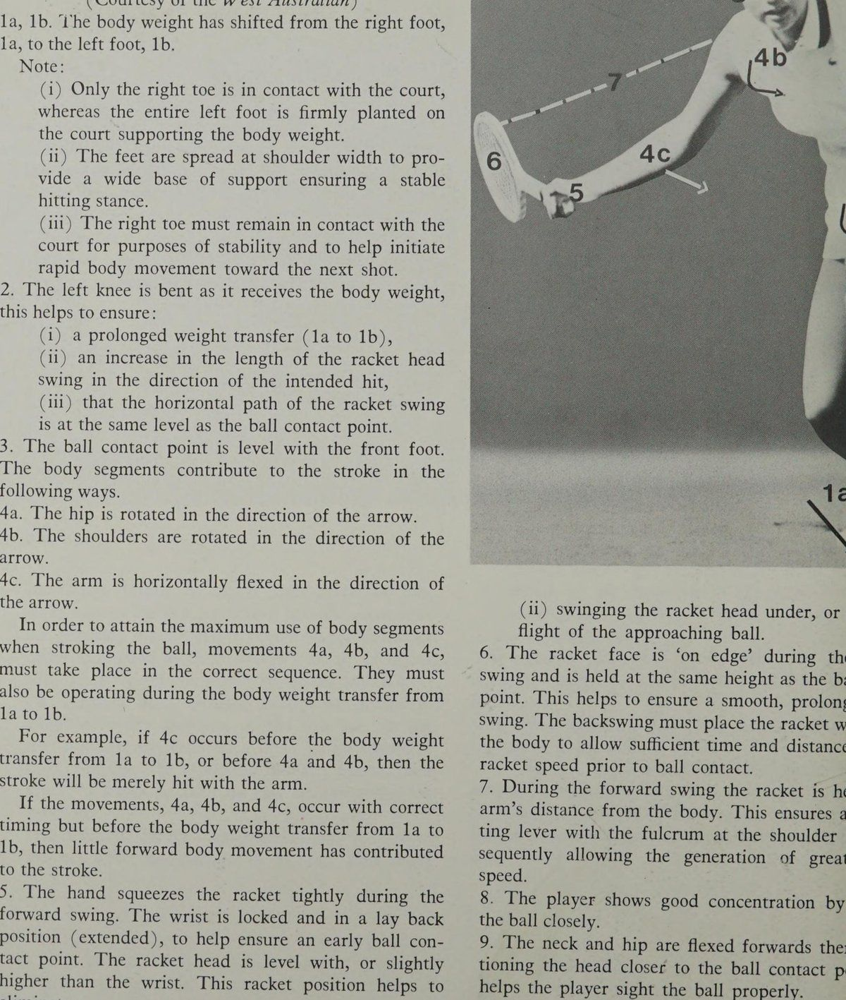
(d) bắt bóng sau lưng. _ :
9. Theo cặp, ném và bắt (2). (Xem Hình 87.) Như trên, ngoại trừ việc người chơi thực hiện các kỹ năng trong khi giữ thăng bằng trên một chân. }
10. Theo cặp, ném và bắt (3). (Xem hình 88.) Đối với câu 8, ngoại trừ việc một đấu thủ giữ bóng sau lưng rồi ném qua đầu để đồng đội bắt. (Lưu ý người chơi A và B.)
Hình 80. Đôi, ném chính xác.
Hình 81. Theo cặp, ném quá tay cho
Hình 82. Ném cá nhân và
Hình 83. Ném cá nhân và
Hình 84. Ném cá nhân và
Hình 85. Ném cá nhân và
Hình 86. Theo cặp, ném và bắt
Hình 87. Theo cặp, ném và bắt
CÁC HOẠT ĐỘNG THỂ DỤC DÀNH CHO NGƯỜI MỚI MỚI BẮT ĐẦU Bất kỳ hoạt động thể dục đặc biệt nào được đưa vào chương trình dành cho người mới bắt đầu chơi tennis đều phải thực tế. Một số loại hoạt động chạy nước rút ngắn liên quan đến việc thay đổi hướng trong khi chạy ở tốc độ tối đa sẽ là lý tưởng. Người chơi phải đặt mình dưới áp lực đáng kể trong các hoạt động thể dục trước khi tim và phổi được kích thích để phát triển chức năng hiệu quả hơn. Trò chơi gắn thẻ là sự lựa chọn lý tưởng để giúp đáp ứng những nhu cầu này. Sau đây sẽ là một số ví dụ về trò chơi gắn thẻ, nhưng trước tiên, có một số điểm cần xem xét để đảm bảo sự thành công của tất cả các trò chơi gắn thẻ. _Việc thực hiện trò chơi gắn thẻ (a) Huấn luyện viên phải thu hút được sự chú ý của cả lớp và đảm bảo rằng tất cả các tay vợt ở đủ gần để nghe và hiểu hướng dẫn trò chơi.
(b) Huấn luyện viên phải giải thích ranh giới khu vực thi đấu.
(c) Huấn luyện viên phải giải thích tính chất của trận đấu và chọn (các) tay vợt sẽ đóng vai trò đuổi bắt.
(d) Người chơi phải được khuyến khích giơ tay đặt câu hỏi nếu hướng dẫn trò chơi không rõ ràng.
-(e) Huấn luyện viên phải nhấn mạnh rằng 'còi' sẽ dừng trận đấu. :
(f) Sau khi bắt đầu trận đấu, huấn luyện viên phải theo dõi chặt chẽ để đảm bảo các tay vợt tuân thủ luật thi đấu, đồng thời theo dõi các dấu hiệu buồn chán của tay vợt.
(g) Một số trò chơi gắn thẻ có thể yêu cầu hai hoặc ba người đuổi, những trò chơi khác có thể yêu cầu thay đổi người đuổi thường xuyên. Điều này phụ thuộc hoàn toàn vào quy mô của nhóm tham gia và tính chất của trò chơi.
(h) Sẽ là khôn ngoan nếu huấn luyện viên thỉnh thoảng tham gia vào trận đấu vì điều này sẽ giúp thúc đẩy mối quan hệ giữa tay vợt/huấn luyện viên thuận lợi. ~ tôi Theo đuổi sự nhanh nhẹn. (Xem Hình 89 và 90.) Để bắt đầu trận đấu, lưu ý ở Hình 89 huấn luyện viên chọn ba tay vợt. si B, peo C, đóng vai trò đuổi bắt. Huấn luyện viên có ; một
Hình 88. Theo cặp, ném và bắt (3). đã chọn những tay vợt này vì họ có thể dễ dàng được phân biệt nhờ váy có màu sắc. Phần còn lại của lớp (D) tự sắp xếp ngẫu nhiên trong phạm vi nửa sân tennis. Theo một tín hiệu nhất định, ba người đuổi bắt cố gắng chạm vào càng nhiều người chơi càng tốt. (Lưu ý trong Hình 90.) Khi người chơi bị kẻ đuổi bắt bắt, người chơi phải đứng bất động và dang chân (người chơi D). Cách duy nhất để người chơi này có thể được tự do tham gia lại trò chơi là để người chơi khác bò qua chân của họ. (Lưu ý người chơi E.) Số lượng người đuổi bắt phải sao cho trò chơi được phép tiếp tục trong một khoảng thời gian đáng kể trước khi tất cả người chơi bị bắt. Cần có sự công nhận phù hợp cho những người chơi không được gắn thẻ trong trò chơi.
2. Chuột và Thỏ. (Xem Hình 91 và 92.) Những người chơi tham gia được chia thành hai đội có số lượng bằng nhau. Hai đội xếp hàng ở hai bên của đường giao bóng trung tâm như được ghi trong Hình 91. Một đội được đặt tên là 'chuột', đội còn lại là 'thỏ'. Huấn luyện viên đứng ở vị trí trung tâm trước các đội. Sau khi các tay vợt đã sẵn sàng bắt đầu, huấn luyện viên sẽ rút bài ‘rrrrrrrats’ hoặc ‘rrrrrrrrrabbits’. (Bằng cách rút bài, người chơi không chắc chắn đội nào trong hai đội sẽ được gọi.) Nếu huấn luyện viên gọi 'chuột', 'chuột' sẽ chạy về phía con hẻm gần họ nhất (khu vực 1) và đặt cả hai chân vào con hẻm trước khi bị một trong các 'thỏ' gắn thẻ. Nếu gọi 'thỏ' (lưu ý Hình 92), thì 'thỏ' chạy đến đặt chân vào ngõ (khu vực 2), trước khi bị 'chuột' theo dõi. Lưu ý rằng mũi tên 'chuột' trong Hình 92 đang trên đà bắt được 'thỏ'. Đội được huấn luyện viên gọi sẽ trở thành đội chạy và đội kia tự động trở thành đội đuổi. Khi người chơi đã chạy về phía một trong hai con hẻm, họ nên được khuyến khích quay lại vị trí xuất phát càng nhanh càng tốt. Điểm của đội, bao gồm việc đếm số lần 'bắt' thành công, có thể được tính nếu huấn luyện viên gọi 'chuột' và 'thỏ' với số lần bằng nhau. Huấn luyện viên nên thu hút sự chú ý đến một tay vợt không bị bắt trong trận đấu.
3. Thẻ bệnh viện. (Xem Hình 93.) Một người chơi được chọn với tư cách là người đuổi theo và được yêu cầu giữ gáy bằng tay trái (lưu ý người chơi B). Theo tín hiệu của huấn luyện viên, anh ta cố gắng chạm vào càng nhiều tay vợt khác càng tốt. Sau khi được người đuổi theo gắn thẻ, người chơi phải giữ phần cơ thể được gắn thẻ và giúp đuổi theo những người chơi còn lại. (Lưu ý người chơi A và Cc đang giúp đuổi theo.) Huấn luyện viên nên thu hút sự chú ý đến người chơi cuối cùng bị bắt.
4. Đuổi theo cặp. (Xem Hình 94 và 95.) Huấn luyện viên chọn hai đấu thủ nắm tay nhau và đóng vai người đuổi.
Hình 89. Nhanh nhẹn rượt đuổi, bắt đầu.
Hình 93. Thẻ bệnh viện, đang được thực hiện.
Hình 94. Cặp đuổi bắt, bắt đầu.
Hình 95. Cặp đuổi bắt, đang diễn ra.
(Xem Hình 94 người chơi A và B.) Cặp này có hai tay rảnh để chạm vào những người chơi khác. Tay của người đuổi phải được liên kết tại thời điểm chạm vào người chơi khác để 'thẻ' hợp pháp. Ngay sau khi một người chơi bị bắt, anh ta liên kết tay với cặp bắt anh ta để tạo thành bộ ba (lưu ý Hình 95 người chơi A, B và C). Sau khi bốn người chơi được nối thành một hàng, họ sẽ chia thành hai cặp. Nói cách khác, không nên có nhiều hơn ba người chơi trong một hàng. Huấn luyện viên nên thu hút sự chú ý đến tay vợt cuối cùng bị bắt.
Hình 90. Cuộc rượt đuổi nhanh nhẹn, đang diễn ra.
Hình 91. Chuột và thỏ, bắt đầu.
Hình 92. Chuột và thỏ, đang được thực hiện.
CÁC KHÓA HỌC TIẾP THEO Chướng ngại vật Có một số điểm quan trọng cần cân nhắc trước khi tổ chức các khóa học tiếp sức vượt chướng ngại vật cho người mới bắt đầu chơi tennis:
(a) Các đội phải có quy mô nhỏ nhất có thể để tuân thủ nguyên tắc tham gia tối đa.
(b) Nếu số lượng người chơi tham gia không cho phép số lượng người chơi trong mỗi đội là chẵn thì có thể phải tổ chức hai cuộc thi. Ví dụ, ba đội gồm ba người chơi thi đấu với nhau, trong khi ba đội gồm hai người chơi cũng thi đấu. Một phương án thay thế là trưởng nhóm “hai người” biểu diễn hai lần (lần đầu và lần cuối).
(c) Các đội phải có khả năng ngang nhau trong khả năng có thể.
(d) Huấn luyện viên phải thu hút được sự chú ý của cả lớp và đảm bảo rằng các đấu thủ ở gần trước khi đưa ra hướng dẫn tiếp sức.
Hình 96. Một cuộc chạy tiếp sức vượt chướng ngại vật điển hình (Lưu ý: Người chơi bắt đầu luyện tập bằng vợt và bóng). | Ae tức là a eee ae NGƯỜI CHƠI x x x ĐỘI A c xấu = vạch xuất phát \ SPRINT ‘ tức là Cory yy NHÂN ĐÔI eu CHÂN aa vòng NHẢY. Ca ey BALANCE WALK: 'ĐƠN GIẢN' BÓNG NẢY một ene; { Dây hạn chế ZIG-ZAG CHẠY———____ ip Xô BÓNG NÉ VÀO VÀO Xô — Dây hạn chế —______ NĂM BÓNG CHỐNG TƯỜNG _ (e) Người chơi phải được khuyến khích giơ tay đặt câu hỏi nếu hướng dẫn tiếp sức không rõ ràng.
(f) Quy tắc xuất phát và về đích phải được nêu rõ; ví dụ: @ Rơle bắt đầu bằng tiếng 'còi'. @ Người chơi thứ hai trong hàng phải đợi đội trưởng của mình quay lại vạch xuất phát trước khi được phép bắt đầu chạy. @ Đội chiến thắng không nhất thiết phải là đội về đích trước mà là đội về đích trước và xếp hàng một cách yên tĩnh, có tổ chức. Huấn luyện viên nên chỉ định vị trí ‘kết thúc’, chẳng hạn như tất cả đều ngồi xuống để dễ xác định người chiến thắng.
(g) Việc sử dụng các thiết bị nhỏ là một phương tiện hữu ích để đạt được sự hứng thú và đa dạng trong các hoạt động tiếp sức.
(h) Nếu một đội cụ thể giành chiến thắng trong cuộc tiếp sức với tỷ số cách biệt đáng kể thì huấn luyện viên phải tổ chức lại các đội.
(1) Để tránh lãng phí thời gian học bình thường cho việc xây dựng sân chạy tiếp sức, có thể sử dụng diện tích cỏ tiếp giáp với sân. Nếu huấn luyện viên phải xây dựng khóa học trong giờ học thì các thiết bị cần thiết phải có sẵn và được bố trí trong khi lớp học đang diễn ra.
(j) Các hoạt động được chọn cho cuộc chạy tiếp sức phải mang lại lợi ích thể chất rõ ràng nào đó và có mối liên hệ nào đó với loại chuyển động cần thiết khi chơi tennis.
(k) Huấn luyện viên phải nhớ chúc mừng các đội chiến thắng.
(1) Huấn luyện viên phải nhớ chỉ định các tay vợt giúp lắp ráp lại thiết bị sau buổi học. Ví dụ về một khóa học tiếp sức vượt chướng ngại vật. (Xem Hình 96.) Như có thể quan sát, đường đi của người chơi đầu tiên trong đội A được vạch qua chướng ngại vật. Mỗi thành viên trong đội sở hữu một cây vợt và một quả bóng. Khi nghe tiếng còi, người chơi thực hiện các hoạt động sau:
(1) Chạy nước rút đến vòng gần nhất.
(ii) Thực hiện nhảy hai chân từ vòng này sang vòng khác.
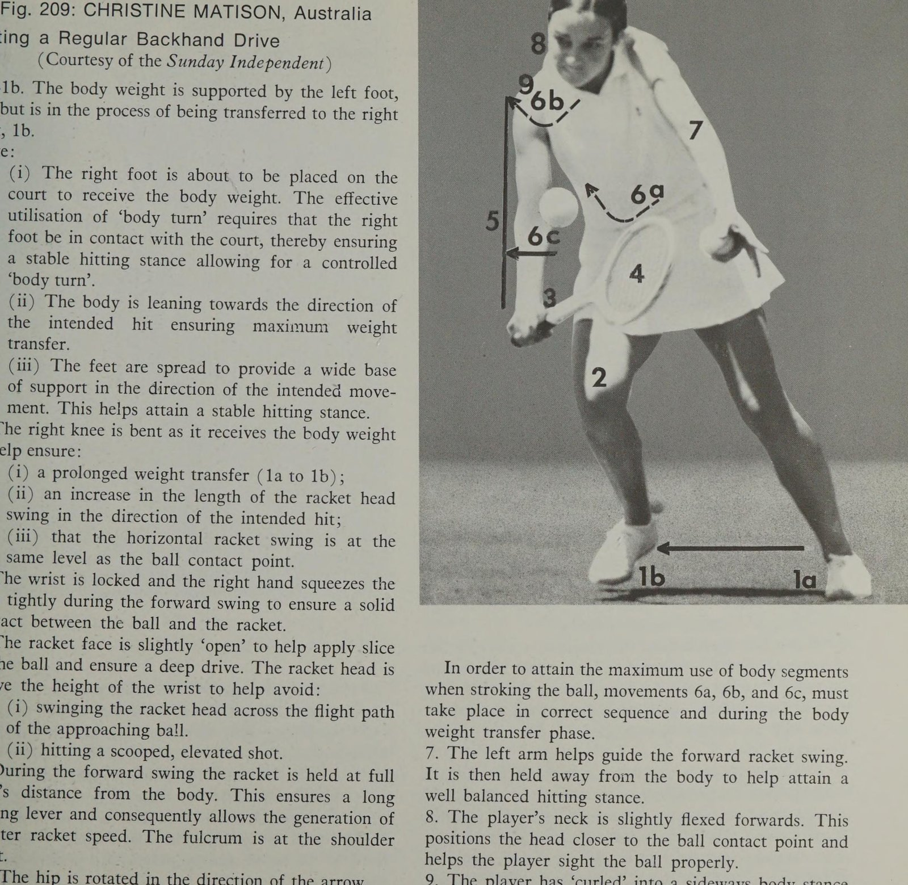
(iii) Thực hiện bước đi thăng bằng trên băng ghế. Đồng thời anh ta phải tung bóng trên sân dọc theo băng ghế dự bị.
(iv) Vẫn cầm vợt và bóng, chạy theo hình zíc zắc xung quanh điểm đánh dấu.
(v) Ném bóng vào xô từ phía sau vạch hạn chế. Nếu ném trượt xô, anh ta phải thu hồi bóng và quay lại phía sau vạch cản để thử lại.
(vi) Lấy bóng từ xô, đứng sau vạch hạn chế tiếp theo và đánh 5 cú vô lê liên tiếp vào tường. Sau khi hoàn thành sáu hoạt động, người chơi chạy nước rút trở lại vạch xuất phát, tay vẫn cầm vợt và bóng. Ngay sau khi anh ấy vượt qua vạch xuất phát, thành viên tiếp theo trong đội của anh ấy có thể bắt đầu.
HOẠT ĐỘNG Z Dây kiềm chế Lăn một quả bóng tennis để dừng lại trong chu vi của vòng. (TỔNG NỖ LỰC CỦA ĐỘI NGŨ ) HOẠT ĐỘNG TABLOID Tổ chức và điều hành (a) Trước khi họp lớp, huấn luyện viên phải chọn ra một số đội, bảo đảm:
-@ vì lý do tham gia tối đa, mỗi đội không có quá bốn người chơi; ® trong chừng mực có thể các đội đều có khả năng ngang nhau.
(b) Trước khi họp lớp, huấn luyện viên chọn một số kỹ năng tennis có liên quan đến trận đấu. (Kỹ năng tự tin, nhận thức sâu sắc các hoạt động và đánh tennis.) Lưu ý: Số lượng hoạt động được huấn luyện viên lựa chọn phải tương ứng với số lượng đội. Trong ví dụ được mô tả trong chương này, sáu đội và sáu hoạt động đã được chọn.
(c) Huấn luyện viên phải đến lớp sớm và chuẩn bị các thiết bị cũng như khu vực cần thiết để thực hiện sáu hoạt động.
(d) Tại mỗi khu vực hoạt động, huấn luyện viên để lại một tấm bảng nhỏ mô tả và phương pháp tính điểm cho hoạt động cụ thể đó. (Xem Hình 97.)
(e) Các hoạt động nên được sắp xếp hợp lý và ‘được đánh số theo chiều kim đồng hồ. Điều này sẽ giúp hạn chế sự nhầm lẫn nếu các nhóm chuyển từ hoạt động này sang hoạt động tiếp theo.
(f) Sáu hoạt động sau đây nằm trong giới báo lá cải. (Lưu ý Hình 98.)
1. Ném bóng vào xô. (Xem Hình 99.) Lưu ý rằng người chơi A đang ném bóng tennis về phía xô. Cô ấy sẽ lấy lại cú ném của mình và A Hàng rào Hoạt động 2 Hoạt động 1 Hoạt động 3 a : Hoạt động nhóm 6 Xoay = t Hoạt động 4 =—_—__> nó Hoạt động 5 — > Mũi tên chỉ hướng của hoạt động TABLOID HOẠT ĐỘNG MẠCH
Hình 98. Mạch hoạt động báo lá cải.
Hình 97. Hoạt động báo lá cải, nhắc nhở bảng. đánh vô-lê cho người chơi thứ hai trong hàng. Những nỗ lực thành công của người chơi được tính bằng điểm của cả đội. A = bảng nhắc nhở. (Xem Hình 97.) B = điểm đánh dấu giữ lại. C = thẻ điểm của đội. (Xem Hình 100.)
2. Độ nảy của mép vợt. (Xem Hình 101.) Mỗi người chơi có một quả bóng và đánh nó xuống sân bằng mép dưới của vợt. (Lưu ý người chơi A.) Mỗi người chơi ghi lại số lần đánh liên tiếp tối đa của mình. Điểm trung bình của đội về số lần đánh liên tiếp nhiều nhất sẽ được ghi lại. A = bảng nhắc nhở. (Xem Hình 97.)
3. Đánh cú công bóng thuận tay vào vòng. (Xem Hình 102.) Người chơi tung bóng cho chính mình và đánh thuận tay vào một cái vòng treo trên hàng rào. Mỗi người chơi được sử dụng một quả bóng, do đó người chơi phải tự lấy lại cú đánh của mình. Những nỗ lực thành công của người chơi được tính trung bình cho điểm của đội. A = bảng nhắc nhở. (Xem Hình 97:) B = điểm đánh dấu giữ lại. C = thẻ điểm của đội. (Xem Hình 100.)
4. Đánh thuận tay. (Xem Hình 103.) Các đấu thủ tập trung từ thuận tay đến thuận tay (từ vạch cuối sân) và đếm số lần công bóng liên tiếp tối đa. Trong Hình 103, người chơi A buộc phải thực hiện một cú đánh từ đường giao cầu. Số lượng trung bình của các cú công bóng thuận tay liên tiếp được tính thành điểm của đội. A = bảng nhắc nhở. (Xem Hình 97.) C = thẻ điểm của đội. (Xem Hình 100.)
5. Đánh mặt vợt luân phiên. (Xem Hình 104.) Mỗi người chơi có một quả bóng. Họ đánh nó lên không trung bằng cách sử dụng
Hình 99. Ném bóng vào xô (Hoạt động số 1). các mặt xen kẽ của mặt vợt. Lưu ý rằng người chơi c đang trong quá trình thay đổi mặt vợt của mình. Mỗi người chơi sẽ ghi lại số lần đánh liên tiếp tối đa của mình. Điểm trung bình của đội về số lần đánh liên tiếp nhiều nhất sẽ được ghi lại. A = bảng nhắc nhở. (Xem Hình 97.)
6. Lăn một quả bóng vào vòng. (Xem Hình 105.) Lưu ý rằng người chơi A đang lăn một quả bóng tennis về phía vòng. Anh ta sẽ lấy bóng của mình và chuyền cho người chơi thứ hai trong hàng. Những nỗ lực thành công của người chơi sẽ mang lại điểm số cho toàn đội. Bóng phải dừng lại trong vòng để ghi điểm. A = bảng nhắc nhở. (Xem Hình 97.) B = điểm đánh dấu. C = thẻ điểm của đội. (Xem Hình 100.)
(g) Khi huấn luyện viên đã gọi tên các tay vợt ở các đội khác nhau, ví dụ A, B, C, D, E, F; anh ta chọn một trưởng nhóm và phát cho anh ta một thẻ điểm. Thẻ điểm được trình bày như ghi chú trong Hình 100. Thẻ điểm có một cây bút chì được buộc chặt bằng một sợi dây. Điều này đảm bảo rằng điểm số của đội có thể được nhập một cách hiệu quả.
(h) Huấn luyện viên phải nhấn mạnh trước khi chỉ định mỗi tay vợt vào một đội, rằng các tay vợt phải lắng nghe cẩn thận và ghi nhớ đội mà họ đã được phân công.
(i) Huấn luyện viên hướng dẫn người chơi từ khu vực hoạt động này sang khu vực hoạt động khác, trình diễn và giải thích các yêu cầu hoạt động cụ thể cũng như hệ thống tính điểm. Anh men- HOẠT ĐỘNG THẺ ĐIỂM A TEAM
Hình 100. Thẻ điểm của đội.
lưu ý rằng nếu người chơi quên hoạt động hoặc phương pháp tính điểm, họ có thể tham khảo bảng nhắc nhở gần đó.
(j) Khi đã giải thích được mạch hoạt động, huấn luyện viên nên cung cấp cho người chơi những thông tin sau:
(i) Một đội có hai phút cho mỗi hoạt động.
(ii) Tín hiệu bằng lời ‘Đi!’ sẽ bắt đầu khoảng thời gian hai phút. Tiếng còi sẽ báo hiệu sự ngừng hoạt động.
- (iii) Phải có thời gian để đội trưởng ghi kết quả và các đội chuyển sang hoạt động tiếp theo.
(iv) Các hoạt động được đánh số theo chiều kim đồng hồ, giúp dễ nhớ mạch hơn. Các đội chuyển từ hoạt động này sang hoạt động tiếp theo theo thứ tự số.
(v) Đội A bắt đầu ở hoạt động 1, đội B bắt đầu ở hoạt động 2, v.v.
(vi) Nếu người chơi có câu hỏi thì nên giơ tay a c ¥ của mình. | | < Lưu ý: Huấn luyện viên phải quan sát chặt chẽ các đội — trong suốt thời gian hoạt động để đảm bảo rằng các quy định không bị áp đặt quá mức. ;
Hình 101. Độ nảy của mép vợt (Hoạt động số 2).
Hình 102. Đánh cú công bóng thuận tay vào một cái vòng (Hoạt động số 3). ae
Hình 103. Cú đánh thuận tay (Hoạt động số 4). ~ ~
Hình 104.-Đánh mặt vợt thay thế “ (Hoạt động số 5).
Hình 105. Lăn tiền bảo lãnh vào vòng (Hoạt động số 6).
Hình 106. Đánh giá hoạt động báo lá cải.
KẾT QUẢ CUỐI CÙNG CỦA ĐỘI a2 Đánh giá Bảng kết quả được lập vào cuối giờ học để ghi nhận các đội chiến thắng. Một phương pháp phân tích kết quả hiệu quả là các đội trưởng nhập kết quả của đội mình vào một ‘bảng đen chính’ lớn (như minh họa trong Hình 106). Lưu ý rằng kết quả của các đội không thể được cộng và so sánh một cách đơn giản do có sự khác biệt lớn trong phương pháp tính điểm. Mỗi hoạt động phải được đánh giá độc lập. Giá trị của việc lồng ghép hoạt động báo lá cải” vào chương trình (a) Chúng cho phép người chơi tham gia tối đa.
(b) Yếu tố cạnh tranh làm tăng thêm sự thích thú và hứng thú cho bài học. Si ; j (c) Chúng cho phép xem xét các kỹ năng.
(d) Có thể thực hiện nhiều hoạt động đa dạng trong một khoảng thời gian ngắn. Tôi một, (e) Cá nhân người chơi có thể tự đánh giá mức độ kỹ năng đạt được. Mate Lưu ý: Mạch báo lá cải được mô tả trong chương này đã hoàn thành trong mười bảy phút của một cuộc thi thực tế.
Huấn Luyện Thể Lực & Thể Chất Nâng Cao Cho Vận Động Viên Tennis
4. Huấn luyện thể chất nâng cao cho các yếu tố tennis MỘT Huấn luyện viên PHẢI XEM XÉT TRƯỚC KHI XÂY DỰNG CHƯƠNG TRÌNH BÀO TẠO THỂ CHẤT CHO Một huấn luyện viên giỏi có một số yếu tố cần xem xét về tình trạng thể chất của các tay vợt của mình. Một người nào đó quảng cáo cho công chúng về tư cách là một huấn luyện viên tennis và mong đợi doanh thu từ các dịch vụ chuyên nghiệp được cung cấp, đang lừa dối công chúng nếu anh ta không có gì hơn ngoài kiến thức về các kỹ năng tennis cơ bản để cung cấp. Anh ta cũng phải có khái niệm về tổng nhu cầu của một vận động viên tennis trong một trận đấu về cả kỹ năng và thể lực. Sau đó, anh ta phải thực hiện các buổi tập luyện của mình cụ thể và thực tế nhất có thể bằng cách liên hệ chúng trực tiếp với nhu cầu thể chất của một vận động viên tennis. Huấn luyện viên nào đang làm nhiều hơn để chuẩn bị thể chất cho các tay vợt của mình cho môn tennis: @ một người chỉ đơn giản cho nhóm của mình chạy quanh sân cho đến khi mệt; hoặc @ người tận tâm tìm cách liên hệ các kỹ năng và thể lực với tình huống trận đấu và đảm bảo một buổi tập luyện thực tế? Nhiều người cho rằng chạy bộ đóng vai trò quan trọng trong việc rèn luyện thể lực của người chơi tennis. Theo khái niệm này xa hơn, người ta thường cho rằng chạy hai dặm là có thể chấp nhận được, ba dặm thậm chí còn tốt hơn và bốn dặm thì tuyệt vời. Những người này không nhận ra rằng thể lực là cụ thể và liên quan chặt chẽ đến chức năng, và vì lý do này việc tập luyện cũng phải cụ thể. Khi nào một vận động viên tennis phải chạy ba dặm liên tục trong tình huống thi đấu? Sẽ không cụ thể hơn nếu chạy hàng chục lần chạy nước rút ngắn sáu mét, xen kẽ với những thay đổi hướng đột ngột và một vài bước nhảy vọt? Chạy đường dài liên tục chắc chắn sẽ giúp điều hòa hệ thống tim mạch nhưng huấn luyện viên tennis Gocd phải cố gắng cụ thể hơn khi chuẩn bị cho các tay vợt của mình. Lần đầu tiên tôi nhận ra tầm quan trọng của tính đặc hiệu trong việc điều hòa thể lực và mối quan hệ chặt chẽ của nó với chức năng khi đến thăm người anh họ 'Rùa' của tôi. Tôi đã không gặp anh ấy gần năm năm và nhớ lại anh ấy là một người khá gầy khi tôi sải bước về phía cửa trước nhà anh ấy. Khi anh ấy xuất hiện ở ngưỡng cửa, tôi nhớ mình đã nghĩ rằng anh ấy trông gầy hơn bao giờ hết. Tôi bắt tay anh ấy và cảm thấy một cơn đau khủng khiếp chạy dọc cẳng tay mình. Có cảm giác như thể tôi đã tự mình đặt tay vào một sai lầm. “Anh có gì ở đó vậy,” tôi hỏi, nghĩ rằng anh ta đang giấu một thiết bị điện lạ mắt nào đó. “Không có gì,” anh ấy trả lời, khi tôi bắt đầu lục túi anh ấy để tìm pin và tìm kiếm kỹ càng các đầu mối. Làm sao một kẻ gầy gò như ‘Rùa’ lại có thể suýt khiến tôi phải nhập viện? Tôi nhìn kỹ vào bàn tay phải của anh ấy và nhận thấy rằng anh ấy là người có cơ lưng đầu tiên lớn nhất mà tôi từng thấy. (Cơ giữa ngón cái và ngón trỏ, khi nhìn từ mu bàn tay.) Sau năm phút chen lấn và cười không kiểm soát, tôi được biết rằng ‘Rùa’ đã hoàn thành bằng thiết kế công nghiệp và đã đẩy bút chì mười giờ một ngày trong năm năm qua để kiếm sống. Các cơ nội tại của bàn tay phải của anh ấy cực kỳ phát triển, đặc biệt là cơ liên cốt lưng đầu tiên. Anh ấy trở nên đặc biệt tự hào về cơ bắp này. Khi bạn bè yêu cầu anh uốn cong các cơ để thể hiện sức mạnh, thay vì gồng bắp tay như hầu hết mọi người vẫn làm, "Rùa" sẽ giơ tay lên, siết chặt ngón cái và ngón trỏ vào nhau và hướng lên trên sẽ làm bật khớp xương lưng đầu tiên nổi tiếng này. Nó to gần bằng quả trứng gà! Việc rèn luyện thể chất cho tennis không nên được tổ chức cụ thể theo nhu cầu của người chơi tennis sao? trở nên mệt mỏi. Việc thi đấu các kỹ năng tennis và sự căng thẳng về thể chất ngày càng đan xen trong một trận đấu. Nếu một tay vợt buộc phải tập luyện dưới áp lực cực độ, mồ hôi chảy ròng ròng trong mắt, cơ bắp run rẩy và vẫn được cho là sẽ thi đấu tốt, thì anh ta sẽ trải qua những giây phút kết thúc của một trận đấu lớn. kỹ năng thi đấu trong khi cũng đang trải qua quá trình rèn luyện thể chất nâng cao? Không nên rèn luyện thể lực càng thực tế càng tốt với tình huống trận đấu? Bằng cách này, nó sẽ đạt được giá trị cụ thể. Tất nhiên, có một số tình huống mà việc rèn luyện thể lực nâng cao kết hợp với thực hành các kỹ năng như được mô tả nên tránh bao gồm: @ Những tay vợt đang thích nghi với sự thay đổi trên bề mặt sân.
luyện tập cú đánh sau thời gian nghỉ thi đấu theo mùa. @ Những người mới bắt đầu vẫn đang phát triển các cú đánh và có trình độ kỹ năng thấp. Việc luyện tập kỹ năng nên diễn ra trước bất kỳ buổi tập luyện thể lực nào. Cần phải có một mức độ nhất định về thể chất nói chung trước khi có thể lập chương trình tập luyện thể chất cụ thể cho một vận động viên tennis. Người ta thường kể câu chuyện về một nghệ sĩ violin trong buổi hòa nhạc có sức bền đặc biệt ở cơ cánh tay. Anh ấy có khả năng chơi hàng giờ liền. Tuy nhiên, nếu cơ chân của anh ấy không đủ sức để đưa anh ấy lên các bậc thang và lên sân khấu, anh ấy sẽ không biểu diễn vào đêm đó. Huấn luyện viên có thể phải đề nghị người chơi thực hiện các bài tập không liên quan trực tiếp đến việc chơi tennis. Ví dụ, một tay vợt có cơ tay và cơ vai yếu có thể cần phải thực hiện một chương trình tập tạ để giúp phần thân trên khỏe mạnh hơn. Bằng cách này, tải trọng bài tập có thể được đặt lên cánh tay và cơ vai của người chơi lớn hơn so với việc chỉ tập luyện tennis. Thông thường, một huấn luyện viên sẽ khoe khoang về số lượng hơn là về hình thức rèn luyện thể chất mà anh ta quản lý. Những bình luận như “Sáng nay chúng tôi đã có buổi tập thể dục kéo dài ba giờ” luôn khiến người ta đặt câu hỏi “Đúng nhưng các tay vợt đã làm gì?” Buổi đào tạo có đáng giá không?’. Người ta cho rằng việc so sánh trong tâm trí một người là giá trị của ba giờ tập thể dục không liên quan với một giờ hoạt động thể chất có liên quan cụ thể. Điều quan trọng là thỉnh thoảng phải chạy một quãng đường dài trước khi luyện tập tennis. Về mặt sinh lý, người chơi sẽ bắt đầu set thứ năm của mình, trong khi trên thực tế, anh ta đã vào vị trí giao bóng trong game đầu tiên. Anh ấy học cách chơi dưới áp lực ngày càng mệt mỏi. Hai trong số các nhà giáo dục thể chất hàng đầu của Úc đã đưa ra những nhận xét sau đây về việc rèn luyện thể lực nâng cao: Việc tách thể lực khỏi chức năng là giả tạo và mặc dù một khía cạnh có thể được nhấn mạnh hơn khía cạnh kia ở những thời điểm khác nhau trong một chương trình tập luyện, việc rèn luyện thể lực và rèn luyện kỹ năng phải được đan xen trong quá trình chuẩn bị tổng thể của các tay vợt. (Roy E. Sandstrom, Đại học Melbourne.) ...một kiểu huấn luyện áp lực [là cần thiết] trong đó người chơi được yêu cầu thực hiện kỹ năng rất nhanh và chính xác trong thời gian ngắn với nỗ lực cực kỳ cao. Người chơi trải nghiệm những gì liên quan đến việc cố gắng duy trì trình độ kỹ năng của mình trong bối cảnh ngày càng mệt mỏi. (Brian Nettleton, Đại học Melbourne.) Đối với những người chơi ở trình độ cao, để việc tập luyện trở nên cụ thể và thực tế, việc rèn luyện thể lực và rèn luyện kỹ năng phải được kết hợp. TRƯỚC KHI XÂY DỰNG CHƯƠNG TRÌNH BÀO TẠO THỂ CHẤT LIÊN QUAN CHO TENNIS, ACOACH NÊN HỎI MÌNH MỘT SỐ CÂU HỎI Ví dụ (a) Yêu cầu của người chơi tennis trong tình huống thi đấu là gì? Người chơi tennis được mong đợi điều gì cả về kỹ năng và thể chất?
(b) Các nhóm cơ chính được sử dụng trong quá trình thi đấu của người chơi là gì?
(c) Cần có những bài tập cụ thể nào để tăng cường sức mạnh cho những cơ bắp cần thiết này?
(d) Các nguyên tắc cơ sinh học cơ bản áp dụng cho tennis là gì và làm thế nào để nhấn mạnh kiến thức về các nguyên tắc này trong một chương trình rèn luyện thể lực?
(e) Những thành phần cụ thể nào của thể lực cần được phát triển để đáp ứng nhu cầu của người chơi tennis? Sau đây chỉ là một số thành phần cơ bản của khái niệm tổng thể về thể lực cần được xem xét. Tất cả những điều này đều cần thiết cho người chơi tennis. Những nhu cầu này bao gồm: Nhanh nhẹn. Sự nhanh nhẹn được định nghĩa là khả năng thay đổi hướng hoặc vị trí cơ thể một cách nhanh chóng. Điều này có bắt buộc trong tennis không và nếu có thì hướng nào phải được thay đổi thường xuyên nhất? Tính di động. Tính di động được định nghĩa là khả năng di chuyển khớp trong toàn bộ phạm vi chuyển động của nó. Người chơi tennis có cần khả năng vận động không, và nếu có thì phải phát triển các khớp nào? Tốc độ. Tốc độ có thể được định nghĩa là khả năng di chuyển nhanh chóng của người chơi. Người chơi tennis có yêu cầu tốc độ không và nếu có thì khoảng cách là bao nhiêu? Sức bền cơ bắp. Sức bền cơ bắp được định nghĩa là khả năng duy trì chuyển động với nỗ lực cơ bắp dưới mức tối đa. Đây có phải là loại thể lực cần thiết của người chơi tennis? Nó vậy thì cơ bắp nào phải phát triển nó? Làm thế nào một huấn luyện viên có thể tìm được câu trả lời cho những câu hỏi này? Nếu muốn, anh ta sẽ sử dụng nhiều phương pháp và thiết bị sẵn có như giấy và bút chì, đồng hồ bấm giờ, máy ảnh tĩnh, máy quay phim, máy chiếu và máy ghi âm. Ngoài ra, anh ta phải có đầu óc ham học hỏi và phân tích. Có nhiều phương pháp có sẵn để phân tích. Các phương pháp đã được phân loại ở đây thành bốn lĩnh vực chính. . BỐN LĨNH VỰC 7O NGHIÊN CỨU KHI PHÂN TÍCH THỂ CHẤT — YÊU CẦU CỦA NGƯỜI CHƠI TENNIS
1. Phân tích giải phẫu Bằng cách tự phân tích và quan sát chuyển động cơ thể của chính mình hoặc từ việc phân tích một đoạn phim chuyển động chậm về các cú đánh tennis, huấn luyện viên sẽ có thể xác định được các cơ chính được sử dụng trong các cú đánh. Một số ví dụ sau: (Lưu ý.—tuy nhiên, phạm vi của cuốn sách này không cho phép phân tích chi tiết về cơ. Việc trình bày toàn diện hơn về lĩnh vực này sẽ tạo thành nền tảng cho cuốn sách tiếp theo.).
(a) Giao bóng và đập bóng từ trên cao đều liên quan đến việc cột sống uốn cong về phía trước. Các cơ bụng được phát huy mạnh mẽ với động tác này. Do đó, cơ bụng phải được tăng cường. Bài tập nào giúp tăng cường chúng? Một bài tập có lợi là thực hiện động tác gập chân hoặc gập bụng với đầu gối hơi cong. Tầm quan trọng của việc gập đầu gối là loại bỏ việc sử dụng các cơ gấp hông trong chuyển động. Điều này giúp cô lập chuyển động đến bụng.
(b) Cú công bóng thuận tay liên quan đến việc uốn cong theo chiều ngang của cánh tay ở khớp vai. Cơ ngực chính hay cơ ‘ngực trước’ co bóp mạnh mẽ trong quá trình chuyển động này. Vì vậy, cơ ngực phải khỏe. Bài tập sau đây giúp tăng cường sức mạnh cho chúng: thực hiện động tác chống đẩy, với cánh tay rộng hơn chiều rộng vai. Hai cánh tay phải rộng hơn chiều rộng của vai để loại bỏ càng nhiều càng tốt việc sử dụng cơ tam đầu hoặc các cơ ở phía sau cánh tay. Thay vì liệt kê các cơ được sử dụng trong các cú đánh tennis khác nhau, điều quan trọng hơn là xác định xem cơ nào đóng góp nhiều nhất cho chuyển động. Ngoài ra, cơ nào đang co lại tại thời điểm tiếp xúc với quả bóng. Lấy ví dụ, một cú đánh nền trái tay. Khoảng sáu cơ chính của lưng trên và cánh tay có liên quan. Mỗi cơ được sử dụng ở những mức độ khác nhau và phát huy tác dụng vào những thời điểm khác nhau trong quá trình thực hiện cú đánh. Nghiên cứu điện cơ giúp trả lời một số câu hỏi này. Một đầu dò điện giúp tìm ra ‘điểm vận động’ của cơ. Đây là điểm mà dây thần kinh đi vào cơ. Những điểm này tương đối nhất quán từ người này sang người khác, do đó ‘biểu đồ điểm vận động’ đã được soạn thảo và sẵn có. Lấy cú trái tay (backhand) một lần nữa làm ví dụ. Các điện cực được đặt trên các điểm vận động của cánh tay và cơ vai được sử dụng trong cú đánh trái tay. Sau đó, người chơi thực hiện cú đánh trái tay bằng cách đánh một quả bóng lơ lửng. Một điện thế tích tụ khi cơ co lại. Các điện cực truyền điện thế này tới một biểu đồ để có thể đọc được cơ nào đang co và mạnh đến mức nào. Nó cũng sẽ cho thấy cơ nào đang co lại khi va chạm. Đối với thiết bị đo điện cơ, xem Hình 107. Sau khi thực hiện phân tích chuyển động và cơ bắp, có thể khuyến nghị các bài tập có lợi. Tất nhiên, điều quan trọng cần nhớ là một 'người đàn ông cơ bắp' không nhất thiết phải là một tay vợt giỏi. Tính thời gian, sự phối hợp, thực hiện các nguyên tắc thể chất cơ bản và khả năng đọc lối chơi, tất cả đều giúp tạo nên thành công của U_V. Máy ghi âm vận động viên tennis. Tuy nhiên, cần có một mức độ sức mạnh và sức bền nhất định, đặc biệt là ở “các cơ tennis cụ thể”.
2. Phân tích cơ sinh học (Xem Chương I.)
3. Quan sát và kinh nghiệm Những kinh nghiệm và quan sát của một huấn luyện viên tận tâm cũng đóng vai trò là một hình thức phân tích hữu ích. Huấn luyện viên nên cởi mở với những ý tưởng và khái niệm mới. Anh ấy nên:
(a) Nói chuyện với những tuyển thủ hàng đầu và huấn luyện viên khác để tìm hiểu càng nhiều càng tốt về trò chơi.
(b) Hãy tự mình thi đấu, nếu có thể, để trải nghiệm một tình huống khó khăn trong trận đấu.
(c) Quay phim tình huống trận đấu để phân tích các kiểu chuyển động phổ biến nhất mà một người chơi tennis phải thực hiện.
(d) Đọc càng nhiều càng tốt cả về lĩnh vực tennis cụ thể và các lĩnh vực liên quan đến giáo dục thể chất.
4. Phân tích thống kê Lĩnh vực này bao gồm các phương pháp tích lũy dữ liệu thống kê để giúp xác định nhu cầu thể chất và kỹ năng đối với người chơi tennis. Phần này được trình bày với nhận thức rằng số lượng dữ liệu thu thập được phải được phân tích trước khi đưa ra kết luận tích cực hơn.
(a) Phân tích cú đánh chung. (Xem Hình 108.) Một người chơi thực hiện bao nhiêu cú giao bóng (serve) trong suốt trận đấu, so với số lần chạm đất? Có bao nhiêu so với vô-lê? Trận đấu của hai cô gái trẻ được ghi lại trong Hình 108, chỉ ra rằng khoảng một nửa số cú đánh được thực hiện là những cú đánh nền. Các quả giao bóng đứng thứ hai và cuối cùng là các cú vô lê. Liệu kết quả có giống nhau nếu phân tích một trận đấu đơn nam đẳng cấp nhất? Những dữ liệu như thế này có thể hữu ích trong việc giúp xác định loại hình thể chất hoặc sự chuẩn bị kỹ năng cần thiết cho những người chơi khác nhau ở các cấp độ khác nhau. y Bản ghi âm
NGƯỜI CHIẾN THẮNG TRONG TRẬN ĐẤU 6-0 6-1 TRONG TRẬN 6-) 6-2 TRẬN ĐẤU PHÁP GIAO ĐẦU TIÊN PHẢI GIAO PHÁP THỨ HAI
27. BÓNG CHUYỀN TRÁI THUẬN TAY i) BÓNG CHUYỂN BACK HAND SMASH DROPSHOT VOLLEY (OB PHỤC VỤ BÓNG CHUYỆN ĐẤT ĐẤT TỔNG SỐ ĐÁNH GIÁ
Hình 108. Kết quả phân tích cú đánh tổng quát.
TRÒ CHƠI DỊCH VỤ LIÊN TỤC TỔNG PHÁP PHỤC VỤ ĐẦU TIÊN ĐÁNH XUỐNG GIỮA THỨ HAI) hoặc PHỤC VỤ TH thường
Hình 109. Phục vụ kết quả phân tích.
Những thông tin như thế này tuy cơ bản nhưng khá có giá trị. Tuy nhiên, thông tin cụ thể hơn sẽ có lợi hơn. Ví dụ: Hầu hết các cú đánh được đánh ở đâu? Họ vào hay ra? Câu trả lời cho những câu hỏi này có thể giúp tìm ra điểm yếu của người chơi và giúp huấn luyện viên chỉ đạo các phương pháp thực hành phù hợp hơn.
(b) Phục vụ phân tích. (Xem Hình 109.) Trong phân tích này, cả cú giao bóng (serve) thứ nhất và thứ hai đều được ghi là cú đánh 'xuống giữa sân' hoặc 'chéo sân'. Kết quả của quả giao bóng cũng được ghi là 'tốt', 'vào lưới' hoặc 'ra ngoài'. Điều thú vị cần lưu ý là cô gái trẻ đã phân tích, đánh được gần 80% số lần giao bóng đầu tiên và chỉ đánh được hai lỗi kép. Khi so sánh số lần giao bóng với số lỗi được ghi lại, người ta nhận thấy điểm yếu chính nằm ở những cú giao bóng (serve) đầu tiên được đánh qua sân. Đặc biệt hơn, lỗi là giao bóng đưa bóng ra ngoài sân. Một khi thực tế này. được công nhận, huấn luyện viên có thể phân tích sâu hơn để xác định liệu có bị loại không? các cú giao bóng (serve) là ở phần sân thuận tay hoặc trái tay, và hy vọng tìm ra sự điều chỉnh về thế đứng, cách ném bóng, điểm tiếp xúc hoặc một số điểm yếu cụ thể khác. Tận dụng những dữ liệu thống kê như thế này, các huấn luyện viên sẽ có thể tự tin tiến hành các bài tập cụ thể để giúp khắc phục điểm yếu của các tay vợt. Một tay vợt có thể phản ứng dễ dàng hơn trước những điểm yếu của mình được thống kê hơn là đánh giá chủ quan của huấn luyện viên. Việc sử dụng máy ghi âm. Nếu số liệu thống kê do huấn luyện viên phân tích quá khó để ghi lại thì việc ghi lại dữ liệu cần thiết sẽ rất có giá trị. Phương pháp này cho phép huấn luyện viên có thời gian theo dõi toàn bộ trận đấu và nhập dữ liệu của mình trong bầu không khí bình tĩnh hơn ở nhà.
(c) Phân tích đồ họa. (Xem Hình 110, 111 và 112.) Phân tích kiểu này giúp ước tính mức độ và loại nỗ lực thể chất cần thiết khi chơi một trận đấu tennis. Xét những tay vợt nam đẳng cấp hàng đầu, một tay vợt sẽ chạy được bao xa trong một trận đấu trung bình? Đã bao nhiêu lần anh buộc phải đổi hướng? Anh ta có thể căng ra bao nhiêu lần trong mỗi hiệp để thực hiện một cú đánh? Trung bình, anh ta dự kiến sẽ chạy nước rút bao xa? Câu trả lời cho những câu hỏi này và những câu hỏi thích hợp khác có thể giúp hình thành một chương trình thể dục nâng cao. Phân tích đồ họa này liên quan đến việc vẽ biểu đồ chuyển động của người chơi trong suốt trận đấu, lưu ý khi anh ta chạy, đi, nhảy, xoay người hoặc duỗi người. Đường viền của nửa sân tennis được in trên một tờ giấy dùng để ghi lại chuyển động của người chơi cho từng điểm. Xem hình. 110 và 111. Lưu ý trong Hình 110, đấu thủ giao bóng ở điểm 1, sau cú giao bóng (serve) thứ hai về phía lưới để tung cú vô lê trái tay qua sân ở điểm 2. Sau đó, anh ta đổi hướng để định vị mình ở góc trả bóng tốt nhất ở điểm 3. Đối phương thực hiện cú đánh trái tay chéo sân, buộc đấu thủ phải chạy nước rút và sau đó căng ra để thực hiện cú vô lê ở điểm 4. Điểm kết thúc với việc đấu thủ vô lê vào lưới. Anh ta bước trở lại để lấy bóng vào tư thế ở điểm 5 để bắt đầu cú giao bóng (serve) tiếp theo. Lưu ý trong Hình 111, điểm thứ hai bắt đầu với việc đấu thủ giao bóng ở điểm 1. Anh ta thực hiện cú giao bóng (serve) đầu tiên về phía lưới. Đối phương lốp bóng trả giao bóng buộc người chơi phải xoay nhanh ở điểm 2, để thu lại bóng sâu ở góc thuận tay ở điểm 3.
Quả sung. 110-112. Phân tích đồ họa. ĐIỂM TRÒ CHƠI 9: -0 PHÍM: CHẠY ĐI BỘ NHẢY LƯỢT ĐIỂM TRÒ CHƠI 0-15 ĐIỂM TRÒ CHƠI - — —-- KÍCH THƯỚC SÂN TENNIS. a= + => => = = a pe 4 tt a 401m — (4-5 yd) (4 5yd) 40m (6yd) L LE ————— 8-23 m —an toàn! ee (1-5yd) (Syd) (1-5yd)
-}--—_————————__ 10 87 + (12yd) Sau khi đuổi theo cú lốp bóng, đấu thủ quay trở lại vị trí trung tâm trên đường cuối sân, sau đó lao về phía trước để thực hiện cú đánh tiếp cận sâu vào góc trái tay của đối phương ở điểm 4. Sau đó, anh ta lao về phía trước đến điểm 5 để vào thế đứng ở giữa góc trả bóng tốt nhất. Đối phương tung cú sút vào lưới, tính điểm. Người chơi được ghi lại quay trở lại vạch cuối sân đến điểm 6 để bắt đầu điểm thứ ba. Có thể vẽ sơ đồ chuyển động của người chơi một cách hiệu quả theo hai điểm trên một tờ giấy. Khi tóm tắt dữ liệu, một trang trong suốt có hình sân tennis và các kích thước của nó được phác thảo, được đặt chồng lên mỗi bảng dữ liệu. Xem Hình 112. Điều này làm cho việc lập bảng dữ liệu dễ dàng và chính xác hơn một chút. Kết quả phân tích đồ họa liên quan đến một trận đấu đơn nam đỉnh cao được ghi trong Hình 113. Bảng này khá dễ hiểu với hàng số đầu tiên thuộc về tay vợt thua set đầu tiên, 6 — 5, và hàng số thứ hai thuộc về tay vợt thắng set thứ hai, 6 — 3. Thật thú vị khi lưu ý rằng hai bộ số liệu so sánh với nhau chặt chẽ đến mức nào. Ví dụ: khoảng cách trung bình chạy tại một thời điểm của một tay vợt là 4,6 mét (5,0 thước Anh), đối với người còn lại là 4,8 mét (5,25 thước Anh). Tổng quãng đường đi bộ của mỗi tay vợt là rất gần nhau với 963 mét (1052 thước Anh) cho một người, 809 mét (885 thước Anh) cho người còn lại. Số lần thay đổi hướng được ưu tiên nhiều hơn cho cả hai người chơi đối với những thay đổi được thực hiện về phía lưới. Những thông tin như thế này có thể được sử dụng để giúp xây dựng một chương trình rèn luyện thể chất nâng cao cho người chơi tennis. Bởi
TỔNG MÉT CHẠY TRUNG BÌNH MÉT CHẠY TỔNG MÉT ĐI BỘ TRUNG BÌNH MẶT ĐI NET GIỮA CÁC ĐIỂM số lần thay đổi hướng ---—y trong khi chạy PHƯỜNG NGANG
Hình 113. Kết quả phân tích đồ họa.
đánh đánh Ở CƯỢC ĐẦY ĐỦ NHẢY TRÊN 6-5 BỘ THUA 6-3 BỘ CHIẾN THẮNG SỐ NGƯỜI THẮNG CỦA NGƯỜI CHƠI SỐ SAI LẦM CỦA ĐỐI THỦ SỐ Giao bóng tốt Aces }— LỖI NHÂN ĐÔI + BÊN THUẬN TAY HH OHH OLIN) BACKHANDS BACKHANDS Hod aL | ĐẬP ĐẬP BÓNG CHUYỆN THUẬN TAY | BACKHAND VOLLEY He BACKHANDO-VOLLEY BACKHAND VOLLEY Los Los he DROPSHOT DROPSHOT VOLLEY LOB VOLLEY LOB OROP VOLLEY OROP VOLLEY HALF VOLLEY HALF VOLLEY TỔNG NGƯỜI CHIẾN THẮNG TỔNG SAI LẦM TỔNG ĐIỂM THẮNG
Hình 114. Điểm liệt kê lưới giành được bởi một người chơi. Có ba điểm cân nhắc mà huấn luyện viên phải lưu ý khi sử dụng số liệu thống kê, chẳng hạn như phân tích đồ họa. Đầu tiên, phải nhận ra rằng dữ liệu dành riêng cho một nhóm người chơi cụ thể được phân tích và những khái quát hóa cho các nhóm khác là không hợp lệ. Thứ hai, nhiều bộ dữ liệu phải được lập bảng để đưa ra kết luận hợp lệ. Thứ ba, phân tích đồ họa cho biết người chơi đang làm gì nhưng không cho biết người chơi nên làm gì. Tuy nhiên, ngay cả với những hạn chế này, huấn luyện viên càng biết nhiều về tình hình trận đấu của từng tay vợt thì chương trình kỹ năng/điều hòa sẽ càng tốt hơn. Thông tin này cũng hữu ích như một hướng dẫn khi xây dựng chương trình rèn luyện thể chất thực tế. Trừ khi huấn luyện viên sử dụng các phương pháp thống kê, ông ấy chỉ đoán được mức độ điểm yếu và yêu cầu về thể chất của tay vợt. Sau đây là ví dụ về nhiều loại lưới thống kê bổ sung.
(d) Lưới mẫu. Xem Hình 114 để biết lưới liệt kê tất cả số điểm mà người chơi giành được. Một lưới như thế này trả lời các câu hỏi như: @ Cú đánh nào mang lại nhiều điểm nhất cho người chơi? @ Điểm mạnh của người chơi là gì? @ Người chơi có giành được nhiều điểm hơn nhờ những chiến thắng của chính mình hay do lỗi của đối thủ không? @ Cú đánh nào khiến đối thủ mất nhiều điểm nhất? @ Cần ghi nhớ điểm yếu của đối thủ. Một lưới thậm chí còn phức tạp hơn có thể xảy ra nếu huấn luyện viên sử dụng máy ghi âm trong khi quan sát trận đấu. Điều này cho phép người ta có được thông tin chi tiết hơn về từng nét bằng cách sử dụng các cột bổ sung. Ví dụ: trong 'người chiến thắng của người chơi', cột số lần đập vỡ có thể được phân loại thêm thành:
(i) Từ trên không gần lưới, ngang sân hoặc cuối đường biên.
(ii) Từ trên không gần đường chéo sân (cross-court), ngang sân hoặc cuối đường biên.
(iii) Từ một cú nảy gần lưới, qua lưới hoặc dọc biên.
(iv) Từ một cú nảy gần đường chéo sân (cross-court), qua lưới hoặc dọc đường biên.
(e) Phân tích điểm bị mất và cú đánh yếu. (Xem hình.
115.) Lưới này giúp xác định những cú đánh hoặc chiến lược cụ thể nào đang khiến người chơi thất vọng. Lưới này đặc biệt hữu ích khi khớp với lưới trước đó liệt kê số điểm mà người chơi giành được. Ví dụ: nếu người chơi đã đánh được 4 cú vô lê trái tay (lưu ý
Hình 114), nhưng mắc 8 lỗi vô lê trái tay (lưu ý Hình 115), điều này có thể yêu cầu huấn luyện viên xem xét kỹ hơn cú vô lê trái tay của tay vợt. Một lần nữa, một lưới phức tạp hơn có thể thực hiện được nếu huấn luyện viên sử dụng máy ghi âm và chia nhỏ từng cột cú đánh. Ví dụ: trong các lỗi trái tay, cột có thể được chia thành: Lỗi trái tay (i) Từ quả giao bóng đầu tiên; lưới, ra ngoài, dài hoặc rộng.
(ii) Từ quả giao bóng thứ hai; lưới, ra ngoài, dài hoặc rộng.
(iii) Cố gắng thực hiện một cú sút dọc biên; lưới, ra ngoài, dài hoặc rộng.
ĐIỂM MẤT CÚT & ĐIỂM YẾU LÝ DO CHUNG GÂY LỖI. DỊCH VỤ Giao bóng giây ngắn TRÊN TAY tại Nhiều cú đánh vội vã do chuẩn bị nhiều BACKHANS Quá nhiều lát cắt bóng ĐẬP Cả hai đều đánh vào ne! Nhìn xuống sân quá sớmBÓNG CHUYỆN TRỰC TIẾP Điểm tiếp xúc bóng TRÁI Chủ yếu là bị ép do cú đánh tốt LOB Sáu cú đánh quá Ba cú đánh quá ngắn THẢ BẮN Ba vào lưới Một quá sâu vào sân BÓNG CHUYỀN NỬA BÓNG CHUYỆN XẤU BẢY LƯỚI DÂY TỔNG ĐIỂM MẤT KHÁC NHỮNG ĐIỂM YẾU KHÁC ĐỌC CHƠI Mệt mỏi vì thiếu thể lực ĐỌC CHƠI
Hình 115. Mất điểm và cú đánh yếu kết quả phân tích.
(iv) Cố gắng thực hiện cú sút chéo sân; lưới, ra ngoài, dài hoặc rộng.
(v) Cú chạm đất tập trung xuống đường; lưới, ra ngoài, dài hoặc rộng.
(vi) Động tác chạm đất qua sân; lưới, ra ngoài, dài hoặc rộng. Huấn luyện viên cũng có thể giữ một cột đặc biệt để ghi lại những lỗi của tay vợt ở những điểm quan trọng hoặc ở những giai đoạn quan trọng trong trận đấu. Vào những thời điểm này, hơn những thời điểm khác, người chơi phải bắn đúng cú vào đúng thời điểm. Ví dụ: không nên khuyến khích những cú thả bóng tinh tế hoặc những cú vô lê có góc đẹp trong những trường hợp này.
(f) Một lưới về cách các điểm được kết luận. (Xem Hình 116 về một trận đấu đôi.) Lưới có tính chất này giúp trả lời các câu hỏi như: @ Hầu hết các điểm được quyết định trong trận đấu đôi ở đâu? @ Họ có ở trên mạng không? @ Hầu hết người chiến thắng đều trúng ở đâu? @ Họ có phải là người ở vạch cuối sân không? @ Hầu hết các điểm đều kết thúc bằng lỗi hoặc là người chiến thắng? Sử dụng thông tin thu được từ bốn lĩnh vực nghiên cứu:
(a) Giải phẫu; (b) Cơ sinh học; (c) Quan sát; và (d) Thống kê; Bây giờ huấn luyện viên có khả năng xây dựng một chương trình đào tạo kỹ năng thể chất nâng cao phù hợp cho tennis. Cần có những cân nhắc nhất định liên quan đến việc lựa chọn và thực hiện các cuộc diễn tập này. Ví dụ: một buổi huấn luyện thông thường kéo dài hai giờ có thể bao gồm một giờ tập luyện thể lực/kỹ năng và một giờ luyện tập trận đấu: LỖI CÚT NGƯỜI CHIẾN THẮNG NGƯỜI CHIẾN THẮNG TẠI NET ĐẬP TRÊN NET ai DỊCH VỤ TRẢ LẠI DỊCH VỤ CƠ BẢN PHỤC VỤ TỔNG ĐIỂM ĐIỂM QUYẾT ĐỊNH TẠI ĐIỂM NET ĐƯỢC QUYẾT ĐỊNH TẠI ĐIỂM CƠ BẢN
Hình 116. Lưới về cách các điểm đã được kết luận. Các cuộc tập trận trước mùa giải sẽ bao gồm số lần đánh tối đa và rèn luyện sức bền chung vất vả. Phần lớn công việc tăng cường sức mạnh như tập tạ nên được thực hiện trong thời gian trái mùa và giảm dần trong lịch trình trước mùa giải. Các bài tập theo mùa nên cụ thể hơn và bao gồm cả chạy nước rút ngắn. Ví dụ: một buổi tập đôi sẽ chủ yếu bao gồm các bài tập vô-lê và đập bóng. Huấn luyện viên có thể thực hiện sáu hoặc bảy bài tập mỗi buổi, lựa chọn chúng phù hợp với yêu cầu của người chơi. Khi thực hiện các buổi đào tạo thể lực/kỹ năng, huấn luyện viên phải tính đến phương pháp huấn luyện được thảo luận trong Chương 2. Các bài tập và hoạt động sau đây được khuyến nghị vừa cụ thể vừa thực tế để sử dụng trong một chương trình như vậy. THỂ CHẤT/KỸ NĂNG CỤ THỂ, BÀI TẬP DÀNH CHO NGƯỜI CHƠI TENNIS NÂNG CAO Chạy mạch sức bền chung (a) Chạy mạch đơn giản. (Xem Hình 117.) Cuộc chạy sức bền/chạy nước rút này bắt đầu với một nửa số người chơi tham gia xếp hàng sau điểm đánh dấu ở giữa trên đường cuối sân ở một đầu của sân. Dòng người chơi khác
-up ở vị trí tương tự ở đầu bên kia của sân. Người chơi A bắt đầu bài tập bằng cách nảy bóng và đánh một cú công về phía người chơi B. Sau khi hoàn thành cú đánh tay vợt A chạy nước rút quanh sân theo chiều kim đồng hồ cho đến cột lưới, sau đó chạy bộ về phía sau đường biên của tay vợt B để chờ đến lượt đánh. Ngay sau khi người chơi A vừa vuốt bóng và lao đi, người đứng sau người chơi A tiến về phía trước để nhận cú đánh của người chơi B. Sau khi người chơi B trả lại cú đánh của người chơi a, anh ta chạy nước rút theo chiều kim đồng hồ cho đến cột lưới, sau đó chạy về phía sau đường của người chơi a. Bằng cách này, một mạch đánh, chạy nước rút, chạy bộ được thiết lập. Các cú đánh phải được thực hiện có kiểm soát để bóng được giữ trong cuộc, vì điểm nhấn chính là rèn luyện thể lực để không đánh được những cú đánh thắng. Để tạo sự hứng thú, hỗ trợ việc kiểm soát bóng, đo lường khối lượng công việc đã thực hiện và đánh giá sự tiến bộ của đội, số cú đánh liên tiếp không mắc lỗi có thể được giữ lại. Hai hoặc thậm chí ba đội có số lượng bằng nhau (mỗi đội sử dụng sân riêng của mình) có thể đấu với nhau. Với sáu tay vợt đại học tiên tiến trên một sân, số điểm trên một trăm cú đánh liên tiếp có thể được coi là một điểm tốt. Cân nhắc về khoan (1) Người chơi trong vòng đấu phải mang theo bóng dự phòng bên mình để đảm bảo độ trễ tối thiểu sau khi phạm lỗi. Người chơi ở phía trước hàng dài nhất luôn bắt đầu chơi, nếu không một hàng có thể thiếu người chơi.
(ii) Các đấu thủ đang chờ đánh bóng phải tránh xa đấu thủ đang đánh bóng.
(iii) Người chơi phải duy trì khả năng kiểm soát bóng trong mỗi cú đánh.
(b) Chạy vòng một chân. (Xem Hình 118.) Đây là một bài chạy sức bền/chạy nước rút tương tự như chạy vòng đơn giản, ngoại trừ việc người chơi nhảy bằng một chân, thay vì chạy nhanh về cột lưới sau khi đánh bóng. Điều này bổ sung thêm một lượng sức mạnh chân và sức mạnh chân nhất định vào mạch.
(c) Chạy mạch zig-sag. (Xem Hình 119.) Chạy sức bền/chạy nước rút này cũng tương tự như chạy vòng đơn giản ngoại trừ việc người chơi chạy zig-zag xung quanh tám điểm đánh dấu được đặt ở hai bên sân. (Lưu ý khu vực 1 và 2.) Điều này bổ sung thêm tính năng chạy nhanh nhẹn cho đường đua giúp người chơi thay đổi hướng đột ngột trong khi chạy quanh từng điểm đánh dấu ở tốc độ tối đa.
(d) Giao bóng và chạy vòng. (Xem Hình 120.) Cuộc tập trận này bắt đầu với hai đội đấu thủ ở vị trí phía sau vạch giao bóng. Cầu thủ phía trước của một đội (người chơi C) đã vào tư thế sẵn sàng giao bóng sang phần sân thuận tay. Cầu thủ phía trước của đội kia (tay vợt D) đã giao bóng sang phần sân trái tay và đang tiến gần vào lưới theo luật góc. Huấn luyện viên đứng ở phía đối diện của lưới, đánh tay vợt D hai cú vô lê liên tiếp. Người chơi D, có tính đến việc chia đôi và cú vô lê tiếp cận 45 độ, trả lại những cú đánh này. Sau đó, anh ta chạy bộ ngược chiều kim đồng hồ quanh sân để cuối cùng chiếm một vị trí ở cuối hàng người chơi giao bóng ở phần sân thuận tay. Ngay sau khi tay vợt D hoàn thành cú vô lê của mình, tay vợt c (là tay vợt đứng đầu trong đội giao bóng ở phần sân thuận tay) giao bóng và tiến tới lưới để thực hiện hai cú vô lê của mình. Theo cách này, một mạch được thiết lập:
(i) Một đấu thủ giao bóng về phía sân thuận tay, (ii) vào lưới để tung hai cú vô lê, (iii) chạy theo chiều kim đồng hồ quanh sân, để chiếm vị trí ở đầu bên kia của hàng đấu thủ giao bóng sang sân trái tay, (iv) giao bóng về phía sân trái tay, (v) tiến vào lưới để tung hai cú vô lê, (vi) chạy ngược chiều kim đồng hồ quanh sân, (vii) tiếp tục. Lưu ý: Người chơi A đang quay lại giao bóng ở phần sân trái tay. Người chơi E đang quay lại giao bóng ở phần sân thuận tay. Cân nhắc về khoan (i) Người chơi nhận bóng để giao bóng từ một chiếc xô đặt ở rãnh giữa của đường cuối sân. (Xem Nhãn 1, Hình 120.)
(ii) Huấn luyện viên, tay vợt B, phải di chuyển sang trái để đánh hai quả bóng đến người giao bóng tới (người chơi D) để thực hiện hướng của cú vô lê. Vì lý do tương tự, huấn luyện viên phải di chuyển sang bên phải khi đánh hai quả bóng cho người chơi c.
(iii) Huấn luyện viên có nguồn cung cấp bóng tennis riêng —lưu ý đến xe đẩy.
(iv) Chỉ nên có độ trễ vài giây giữa các người giao bóng.
(v) Khi trận đấu diễn ra, người chơi buộc phải tiếp cận lưới dưới áp lực ngày càng mệt mỏi. Đây là một tình huống trò chơi thực tế.
(vi) Nếu một tay vợt giao bóng hai lỗi, anh ta vẫn nên thực hiện cú vô lê và hoàn thành một vòng.
(e) Chạy mạch trong hẻm. (Xem Hình 121.) Cuộc chạy sức bền này bắt đầu với việc các đấu thủ giãn ra và đứng dọc theo ranh giới của sân đánh đơn—cụ thể là hai đường biên đơn và hai đường cuối sân. Người chơi di chuyển với tốc độ tối đa theo chiều kim đồng hồ, chạy dọc theo đường cuối sân với tốc độ tối đa và nhảy qua các con hẻm như được ghi trong Hình 121. Người chơi nhảy từ đường biên đơn sang đường biên đôi và làm như vậy dọc theo chiều dài của con hẻm. Chân trái tiếp đất trên đường biên đôi (lưu ý vị trí b, tay vợt B), trong khi chân phải tiếp đất trên đường biên đơn. (Lưu ý vị trí a, người chơi A.) Mạch sức bền này bổ sung thêm một lượng sức mạnh nhất định của chân © và sức mạnh của chân. Cân nhắc về khoan (i) Sự gia tăng số lượng vòng đua mà một tay vợt phải thực hiện trước khi kiệt sức là một dấu hiệu rõ ràng về sự cải thiện về tình trạng thể chất khi người chơi nỗ lực tối đa khi chạy nước rút ‘ đúng rồi ---.” ONE LEG HOP CIRCUIT RUN feg ee và nhảy từ đường biên này sang đường biên khác.
(ii) Có thể mất thời gian cần thiết để mỗi người chơi hoàn thành hai vòng. Thời gian nhanh nhất của một người chơi có thể được ghi nhận làm kỷ lục cho người chơi cụ thể đó. Bất kỳ sự giảm thời gian nào cũng sẽ cho thấy tình trạng thể chất của tay vợt được cải thiện. (Đặc biệt là khả năng nhảy và sự nhanh nhẹn.)
(iii) Sẽ có được sự đánh giá chính xác hơn về thể lực của một tay vợt bằng cách tính thời gian trong một số khoảng thời gian liên tiếp trong mỗi hai vòng hoàn chỉnh. Nghỉ hai mươi giây giữa các nỗ lực. Một người chơi có thể liên tục duy trì thời gian nhanh trong một số lần chạy liên tiếp sẽ có thể chất tốt hơn cho loại hoạt động này so với một người chơi có thời gian tăng nhanh trong một số lần chạy liên tiếp. Bài tập vô-lê đồng đội (a) Bài tập đánh vô-lê tiếp cận. (Xem Hình 122.) Huấn luyện viên đứng ở vị trí trung tâm phía sau vạch giao bóng trên một nửa sân. Một rổ bóng tennis được đặt bên hông trái của anh ấy. (Điều này giúp huấn luyện viên thuận tiện trong việc lấy bóng tennis để sử dụng trong buổi tập một cách hiệu quả.) Các đấu thủ tham gia xếp hàng sau đường biên ở đầu bên kia của sân. Theo hiệu lệnh của huấn luyện viên, tay vợt đầu tiên tiếp cận lưới. Huấn luyện viên đánh bốn quả bóng liên tiếp vào tay vợt đang đến buộc tay vợt này phải vô lê trong khi áp sát vào lưới. Cú vô lê đầu tiên được đánh gần đường cuối sân trong khi (lưu ý vị trí 1), cú vô lê thứ tư và cú vô lê cuối cùng được đánh đi cho cú ghi điểm trực tiếp từ vị trí gần lưới. Khi hoàn thành cú vô lê, một tay vợt chạy nước rút quanh cột lưới, thu thập bốn quả bóng và đưa chúng trở lại rổ. Sau đó anh ta chạy nhanh về đầu bên kia của sân để chiếm vị trí ở cuối hàng chờ. Trong thời gian này, người chơi thứ hai bắt đầu cuộc tập trận. Cân nhắc về khoan (1) Người chơi phải lưu ý đến lực cầm vợt bổ sung và cú xoay nhẹ cần thiết khi thực hiện cú vô lê từ đường cuối sân.
(ii) Người chơi phải ‘chia tay’? và duy trì tư thế cơ thể thăng bằng trước khi thực hiện cú vô lê.
(iii) Người chơi phải chạy nước rút chăm chỉ để thu thập bóng giữa các buổi biểu diễn để đảm bảo hoạt động thể chất tối đa trong quá trình tập luyện và bổ sung bóng vào rổ.
(iv) Huấn luyện viên nên thay đổi loại và cường độ các cú vô lê tùy theo khả năng của từng tay vợt.
(b) Bài tập vô-lê. (Xem Hình 123.) Những người chơi tham gia vào tư thế sẵn sàng cảnh giác và đứng ngẫu nhiên phía sau người đứng đầu nhóm, người chơi A. Người chơi A thực hiện các động tác đánh một cú vô lê sau đó nhanh chóng trở lại vị trí sẵn sàng. Người chơi phải làm theo chuyển động của người lãnh đạo của họ càng nhanh càng tốt - biến nó thành một bài tập phản xạ tuyệt vời. Cân nhắc về khoan (i) Người đánh vô-lê giỏi nhất phải là trưởng nhóm.
(ii) Tất cả người chơi, đặc biệt là người đứng đầu nhóm, phải được khuyến khích thực hiện cú vô lê đúng kỹ thuật.
(iii) Trưởng nhóm nên kết hợp Cat of speed trong chuỗi các cú vô lê.
(iv) Trưởng nhóm nên thay đổi kiểu vô-lê bao gồm các cú vô lê cao, thấp và căng từ thuận tay hoặc trái tay.
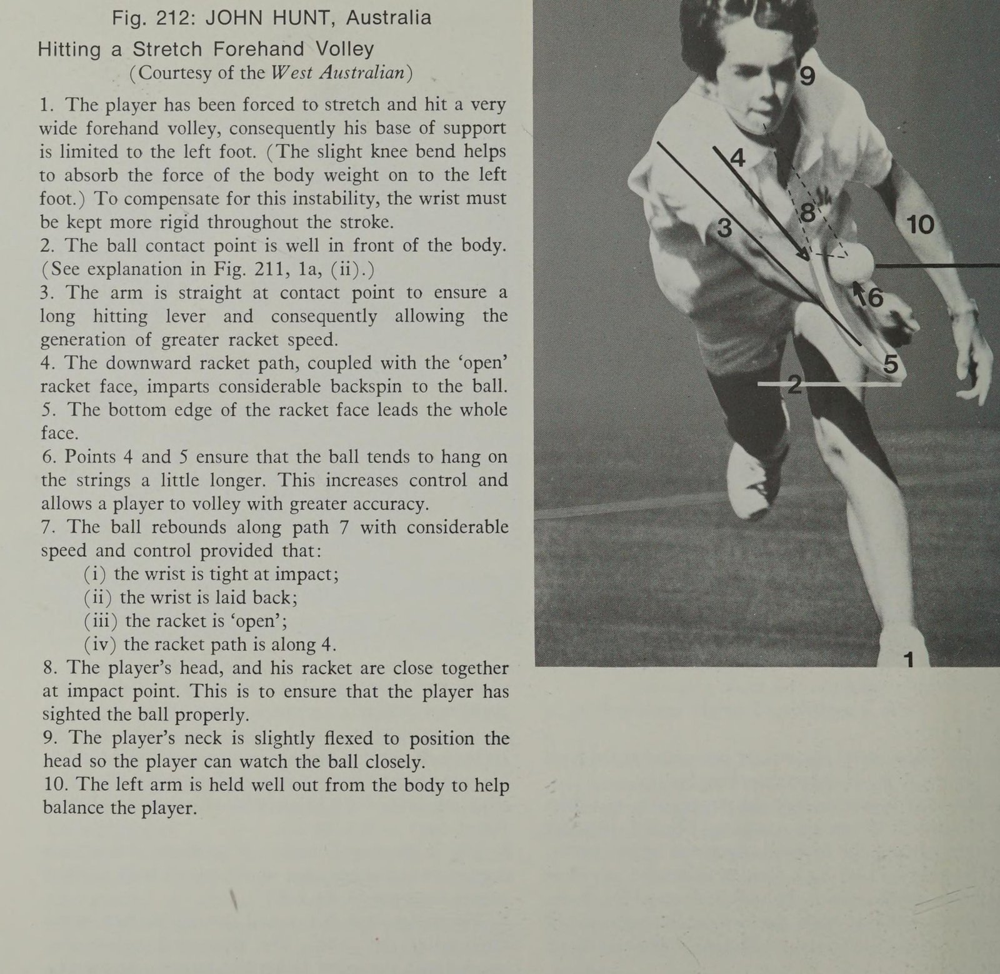
(c) Thi đấu vòng tròn tiếp cận vô-lê (hai đội). (Xem Hình 124.) Bài tập chạy nước rút/vô-lê này bắt đầu với một nửa số tay vợt tham gia xếp hàng sau điểm đánh dấu ở giữa trên đường cuối sân ở một đầu sân. Những người chơi khác xếp hàng ở vị trí tương tự _ ở đầu đối diện của sân. Huấn luyện viên đứng gần
— BÓNG CHUYỀN. 5 HADOW ‘DR I te vào lưới ở bên trái sân. Một rổ bóng được đặt bên hông trái của anh ấy. Buổi tập bắt đầu với việc huấn luyện viên đánh bóng cho tay vợt c thực hiện cú vô lê ở đường cuối sân. Người chơi Cc đứng đầu hàng ở cuối sân. Đối thủ của người chơi c, người chơi B, đứng đầu hàng ở đường biên đối diện. Ngay lập tức vợt của huấn luyện viên tiếp xúc với bóng khi đánh bóng vào tay vợt c, cả hai tay vợt c và B đều có thể vượt qua đường cuối sân để tiếp cận lưới. Khi lượt vô-lê tiếp theo kết thúc, các đấu thủ tham gia chạy nước rút quanh các cột lưới (theo chiều kim đồng hồ) để chiếm vị trí ở cuối hàng chờ ở đầu đối diện của sân. Ghi chú trong
Hình 124 rằng người chơi A và D đã hoàn thành lượt đánh của mình và đang chạy nhanh về phía vạch cuối sân đối diện. Ghi chú trong
Hình 125 rằng tay vợt B và c đang đánh vô-lê điểm ra ngoài. Người chơi A và D đang chờ đến lượt của mình và người chơi E đang chạy nhanh về phía hàng chờ. Khoan cân nhắc. (Cũng lưu ý những cân nhắc về bài tập được đề cập trong Bài tập tiếp cận vô-lê.) \ (1) Các tay vợt không được vượt qua đường chéo sân (cross-court) cho đến khi huấn luyện viên chạm bóng. (Huấn luyện viên luôn đánh bóng sang đầu đối diện của sân.)
(ii) Mỗi đấu thủ thực hiện cú vô lê đầu tiên phải hợp tác, sau đó người chiến thắng mới có thể thực hiện cú đánh đó.
(iii) Để bài tập có tính cạnh tranh, các tay vợt nên chạy về cuối đội ban đầu của mình, thay vì chạy vòng qua lưới sang đội đối diện. Một điểm được trao cho đội chiến thắng trong cuộc tập hợp vô-lê. Điểm 20 là thắng một ván. Ngay sau khi một đội đạt được mười điểm, các tay vợt đổi đầu để đội kia có thể hưởng lợi từ cú vô lê đầu tiên.
(d) Đội phối hợp diễn tập đánh vô-lê. (Xem Hình 126.) Lưu ý trong Hình 126 một người chơi (người chơi D) đứng ở vị trí trung tâm của đường giao cầu. Những người chơi khác, (A, B và C) đứng một mét (chỉ hơn một yard) trong- Hình 124. Hình 125.
' HỢP TÁC “TEAM -VOLLEY DRILL’ tee Pigsl26. Figs 1 Z2/. Figs Zeer Zo). Bên đường giao bóng ở phần sân đối diện. Cầu thủ D bắt đầu bài tập bằng cách đánh bóng dọc theo đường 1, tới tay vợt c, người sẽ trả bóng cho anh ta. Sau đó, tay vợt D sẽ đánh vô-lê dọc theo đường 2, đến tay vợt B và cuối cùng dọc theo đường 3, đến tay vợt A. Mạch này sau đó được lặp lại không ngừng. Một bài tập tuyệt vời để giúp đạt được khả năng kiểm soát và vị trí sân khi thực hiện cú vô lê. Người chơi xoay một vị trí theo chiều kim đồng hồ sau 25 cú đánh liên tiếp của nhóm.
(i) Huấn luyện viên nên nhấn mạnh các nguyên tắc thể chất cần có để đánh vô-lê đến các phần khác nhau của sân.
(ii) Cú vô lê phải được kiểm soát và đánh trực tiếp vào người chơi.
(iii) Sau khi đã quen với cách tập, cú vô lê có thể được đánh mạnh hơn.
(iv) Bài tập có thể được sửa đổi để thực hành một nửa cú vô lê. Bài tập chạy nước rút (a) Chạy vô lê theo hướng zig-zag. (Xem Hình 127.) Bài tập này bắt đầu với việc các đấu thủ xếp hàng sau điểm đánh dấu ở giữa trên đường cuối sân ở một đầu của sân. (Vị trí của người chơi D.) Tám điểm đánh dấu được đặt cách đều nhau dọc theo hai đường biên đơn. (Lưu ý ba điểm đánh dấu được khoanh tròn.) Theo hiệu lệnh của huấn luyện viên, đấu thủ đầu tiên chạy nước rút đến điểm đánh dấu gần nhất ở đường biên đơn thuận tay (lưu ý người chơi B). Sau khi thực hiện các chuyển động của cú vô lê thuận tay, anh ta chạy nhanh qua sân để 'đánh' cú vô lê trái tay ở điểm đánh dấu đầu tiên trên đường biên đơn trái tay, (lưu ý người chơi c). Anh ta tiếp tục chạy zig-zag theo kiểu này cho đến khi tìm được đường vào lưới (lưu ý người chơi A). Sau khi hoàn thành vòng chơi, người chơi chạy xuống ngõ thuận tay, (theo mũi tên chấm) rồi chạy đến cuối hàng chờ. ZIG-ZAG. TIẾP CẬN CHẠY BÓNG CHUYỂN Bất kỳ số lượng người chơi nào cũng có thể tham gia vào vòng đua với điều kiện họ phải giãn cách và có đủ thời gian để thực hiện cú vô lê. Cân nhắc về khoan (i) Để đạt được lợi ích tối đa từ việc tập luyện, các tay vợt phải dành thời gian để ‘đánh’ một cú vô lê kỹ thuật trước khi chạy nhanh qua sân.
(ii) Người chơi phải đánh vô-lê càng gần điểm đánh dấu càng tốt và chạy hết tốc lực trên sân.
(iii) Để đảm bảo các tay vợt giữ khoảng cách hợp lý, huấn luyện viên có thể dừng bài tập khi cần thiết để thay thế các tay vợt. Có lẽ những người chơi nhanh nhất có thể bắt đầu trước.
(b) Đường cơ sở bên. (Xem Hình 128.) Huấn luyện viên Tlie đứng ở vị trí trung tâm phía sau vạch giao bóng. Một rổ bóng tennis được đặt bên hông trái của anh ấy. Người chơi thực hiện bài tập đứng ở điểm đánh dấu trung tâm trên vạch cuối sân ở đầu bên kia. Huấn luyện viên đánh bóng sâu vào các góc sân buộc tay vợt phải chạy rộng để thực hiện các cú sút dọc biên hoặc ngang sân. Tốc độ và hướng đánh của huấn luyện viên có thể thay đổi để giữ cho người chơi tỉnh táo và tập trung. Ví dụ trong Hình 128. Quả bóng đầu tiên được đánh dọc theo đường 1 đến phía thuận tay, quả bóng thứ hai - dọc theo đường 2 đến phía trái tay, và quả bóng thứ ba - dọc theo đường 3, đến phía trái tay một lần nữa, khiến người chơi bắt nhầm chân. Cân nhắc về khoan (i) Khi làm việc với một piayer tại một thời điểm, huấn luyện viên phải đảm bảo các tay vợt khác bận rộn một cách có tính xây dựng, dù là chơi trên sân phụ” hay tập thể dục.
(ii) Trong quá trình tập luyện này, người chơi phải được khuyến khích hồi phục nhanh chóng từ đường biên để trở về vị trí trung tâm. : | (iii) Một sửa đổi hữu ích trong bài tập là bố trí các tay vợt ở hai bên huấn luyện viên, người thực hiện cú vô-lê của tay vợt. Người chơi chỉ lái những quả bóng được huấn luyện viên đánh. một (c) Chạy nước rút tuyến dịch vụ cơ bản. (Xem Hình 129.) Bài tập này tương tự như bài chạy vạch cuối sân bên. Cầu thủ đứng ở giữa đường cuối sân, huấn luyện viên đứng ở vạch giao bóng ở phía đối diện của lưới. Huấn luyện viên đánh một cú đánh sâu về phía thuận tay của đấu thủ (dọc theo đường 1). Khi hoàn thành cú phát bóng của mình, người chơi chạy nước rút theo hướng mũi tên để chạm vợt của mình trên đường giao bóng tại điểm Z. Ngay khi người chơi chạm đường giao bóng, huấn luyện viên sẽ đánh một cú đánh khác sâu vào phía trái tay của người chơi (dọc theo đường 2). Khi hoàn thành cú đánh này, người chơi lại chạy nước rút để chạm vào vạch giao bóng. Cân nhắc về khoan (i) Đấu thủ không được đánh vô-lê mà phải cố gắng lùi lại để thực hiện cú đánh nền sâu. Điều này sẽ buộc người chơi phải vào vị trí nhanh chóng và đánh dưới áp lực.
(ii) Những người chơi khác đang chờ đến lượt của mình phải có thái độ tích cực.
(iii) Hai tay vợt có thể được bố trí ở hai bên huấn luyện viên để thực hiện cú vô-lê của vận động viên chạy nước rút.
(d) Chạy nước rút mạng lưới dịch vụ. (Xem Hình 130.) Huấn luyện viên : SPRINT SVN SSSWSee đứng ở vị trí trung tâm phía sau vạch giao bóng. Một rổ bóng tennis được đặt bên hông trái của anh ấy. Người chơi thực hiện bài tập đứng ở vị trí tương tự ở phía bên kia của lưới. Huấn luyện viên thực hiện một cú lốp bóng ngắn, theo đường số 1. Đấu thủ thực hiện cú lốp bóng ngắn và chạy nhanh theo hướng mũi tên để vợt chạm lưới tại điểm Z. Huấn luyện viên ngay lập tức tung ra một cú lốp bóng ngắn khác, tới điểm Z, buộc đấu thủ phải lùi nhanh để đập bóng. Người chơi phải luôn chạm vào lưới giữa các lần đập bóng. Cân nhắc về khoan (i) Những người chơi khác đang chờ đến lượt của mình phải có mặt trên tinh thần xây dựng.
(ii) Người chơi phải được khuyến khích chuẩn bị cho những cú đập bóng càng nhanh càng tốt và cố gắng đánh thật mạnh.
(iii) Huấn luyện viên phải tính thời gian cho cú lốp bóng của mình để đảm bảo tay vợt ở trạng thái căng thẳng tối đa trong quá trình tập luyện. Các cú lốp bóng có thể bị đánh trúng khi người chơi chạm vào lưới.
(e) Bài tập chạy nước rút trong bóng tối. (Xem Hình 131 và 132.) Cái này
Hình 130. Hình 131.
LINE BASE- LINE DỊCH VỤ bài tập bắt đầu với việc các tay vợt đối mặt với lưới ở tư thế sẵn sàng cảnh giác, cách đều nhau và đứng dọc theo đường giao bóng ở giữa và phần mở rộng tưởng tượng của nó. Huấn luyện viên gọi thuận tay ngắn hoặc dài hoặc trái tay ngắn hoặc dài, kích thích các đấu thủ thực hiện các chuyển động của cú đánh đã thông báo. Nếu huấn luyện viên gọi “thuận tay ngắn” hoặc “trái tay ngắn” thì các đấu thủ sẽ thực hiện cú đánh cụ thể đó tại nơi họ đang đứng. (Xem Hình 131.) Nếu huấn luyện viên hô ‘thuận tay dài’ hoặc ‘trái tay dài’, các đấu thủ chạy để thực hiện cú đánh bằng cả hai chân trong ngõ của phía cụ thể đã được thông báo. Ví dụ, lưu ý cú đánh trái tay dài về ngõ bên trái trong Hình 132. Sau khi vuốt bóng trong ngõ, người chơi nên được khuyến khích quay trở lại vạch giao bóng trung tâm càng nhanh càng tốt. Cân nhắc về khoan (1) Người chơi phải cố gắng thực hiện các cú đánh đúng kỹ thuật.
(11) Huấn luyện viên thỉnh thoảng nên gọi cú đánh 'dài' tiếp theo trong khi các tay vợt đang hồi phục sau cú đánh 'dài' cuối cùng. Bằng cách này, huấn luyện viên có thể khiến các tay vợt của mình mắc sai chân và khiến bài tập đòi hỏi nhiều thể lực.
(iii) Người thuận tay trái có thể hoạt động ở phía đối diện của lưới, điều này sẽ giảm bớt sự nhầm lẫn bằng cách đảm bảo rằng tất cả các tay vợt đều chạy theo cùng một hướng.
(iv) Nếu người chơi trở nên căng thẳng rõ rệt, huấn luyện viên có thể cho phép người chơi nghỉ ngơi bằng cách thực hiện một số cú đánh ‘ngắn’ liên tiếp.
(f) Cú lốp vô-lê nước rút. (Xem Hình 133.) Huấn luyện viên đứng ở vị trí trung tâm phía sau vạch giao bóng. Một rổ bóng tennis được đặt bên hông trái của anh ấy. Người chơi thực hiện bài tập đứng ở vị trí tương tự ở phía bên kia của lưới. Huấn luyện viên bắt đầu bài tập bằng cách đánh bóng dọc theo đường 1, buộc tay vợt phải thực hiện cú vô lê. Sau đó, huấn luyện viên tung một cú lốp bóng cao dọc theo đường số 2, buộc người chơi phải lùi về vạch cuối sân để thực hiện một cú đánh nền. Ngay sau khi tay vợt lấy được bóng, anh ta lại chạy nhanh về phía lưới để thực hiện cú vô lê, đưa cho anh ta theo đường 3. Sau đó, huấn luyện viên thực hiện một cú lốp bóng cao khác dọc theo đường 4 buộc tay vợt phải rút lui. Cân nhắc về khoan (i) Những người chơi khác đang chờ đến lượt của mình phải có thái độ tích cực.
(ii) Huấn luyện viên phải đảm bảo rằng tay vợt buộc phải thực hiện cú vô lê gần lưới để huấn luyện viên có đủ thời gian lốp bóng về phía đường cuối sân.
(iii) Huấn luyện viên có thể thay đổi cường độ tập luyện này tùy theo khả năng của các tay vợt. Máy khoan áp lực (a) Cú vô lê căng. (Xem Hình 134.) Huấn luyện viên và tay vợt A đứng ở vị trí trung tâm dọc theo đường giao bóng. Một rổ bóng được đặt bên hông trái của huấn luyện viên. Đấu thủ thực hiện bài tập sẽ vào vị trí sẵn sàng, cảnh giác ở phần sân đối diện, gần lưới trên đường giao bóng giữa sân. Huấn luyện viên đánh bóng rộng tới thuận tay của đấu thủ theo đường 1. Cầu thủ B căng người để tung cú vô lê thuận tay rộng, sau đó lại lùi về vị trí trung tâm. Ngay sau khi tay vợt hồi phục, huấn luyện viên đánh quả bóng thứ hai rộng về phía trái tay của tay vợt (theo đường 2), tạo ra một cú vô lê căng khác. Sau đó, huấn luyện viên có thể đá nhầm chân tay vợt bằng cách đánh quả bóng thứ ba dọc theo đường 3. Bằng cách đưa bóng theo cách này, huấn luyện viên có thể khiến tay vợt phải đoán và liên tục căng bóng để thực hiện cú vô lê. Cân nhắc về khoan (i) Huấn luyện viên phải đảm bảo rằng các tay vợt khác đang làm việc có tính xây dựng.
(ii) Cầu thủ phải được khuyến khích nhanh chóng trở lại vị trí trung tâm.
(iii) Huấn luyện viên nên thay đổi cường độ tập luyện tùy theo khả năng của tay vợt.
(b) Cú vô lê nhanh. (Xem Hình 135.) Huấn luyện viên đứng ở vị trí trung tâm trên vạch giao bóng. Một rổ bóng được đặt trước mặt anh. Đấu thủ thực hiện bài tập sẽ vào vị trí sẵn sàng, cảnh giác ở phần sân đối diện, gần lưới trên đường giao bóng giữa sân. Huấn luyện viên lấy càng nhiều quả bóng mà anh ấy có thể thoải mái cầm bằng tay trái, đánh từng quả một và càng nhanh càng tốt đối với tay vợt cố gắng thực hiện cú vô lê. Huấn luyện viên bổ sung nguồn cung cấp bóng trong tay bất cứ lúc nào thuận tiện. Bằng cách này, người chơi buộc phải đánh bốn đến năm cú vô lê liên tiếp liên tiếp. Lưu ý trong hình 135. Cầu thủ B có bóng số 1 nhưng bóng số 2, 3 và 4 đang hướng về phía anh ta. Đây là một bài tập phản xạ tuyệt vời. Cân nhắc về khoan (1) Huấn luyện viên phải đảm bảo rằng các tay vợt khác đang làm việc có tính xây dựng.
(ii) Huấn luyện viên có thể thay đổi cường độ tập luyện bằng cách thay đổi khoảng cách của mình với lưới.
(iii) Huấn luyện viên có thể thay đổi tốc độ đánh của mình để giữ cho người chơi cảnh giác.
(iv) Huấn luyện viên có thể thay đổi vị trí các cú đánh của mình bằng cách luân phiên các cú đánh cao và thấp.
(c) Cú vô lê bọc vợt. (Xem Hình 136.) Người chơi A và B đã ở vị trí của mình ở hai bên lưới, cách đường giao bóng một mét. Lưu ý các mũi tên chỉ vào vỏ vợt. Từ vị trí này, người chơi sẽ hợp tác thực hiện cú vô-lê với vỏ vợt được đặt trên vợt của họ. Mũi khoan này khuyến khích khả năng cơ động nhanh chóng của đầu vợt vì lực cản không khí được tăng lên khi có vỏ bọc. Mất độ đàn hồi đạt được từ dây xảy ra khi bật nắp. Điều này, cộng với trọng lượng tăng thêm của vỏ, đòi hỏi người chơi phải tạo thêm 'cú đấm' cho cú vô lê của mình và làm cho bài tập này trở thành một hoạt động tăng cường sức mạnh cổ tay tốt.
j EER LY ; một NBRESSURES-DRIEL?” oo Poca mie RAPED VOLLEY cho eho UEee
Hình 132. Hình 133.
Hình 134. Hình 135.
i: pistibitriteitiisese Petrie ts
MÁY KHOAN ÁP LỰC: ~ TRẢ LẠI DỊCH VỤ Những cân nhắc về bài tập (1) Người chơi phải được khuyến khích thực hiện những cú vô lê đúng kỹ thuật.
(ii) Huấn luyện viên không được ép tay vợt đánh vô-lê quá lâu trong lần thử đầu tiên vì có thể gây căng cơ ở bàn tay hoặc cẳng tay.
(d) Đập và vô lê. (Xem Hình 137.) Huấn luyện viên đứng ở điểm đánh dấu trung tâm trên đường cuối sân ở một bên của sân. Một rổ bóng được đặt bên hông trái của anh ấy. Người chơi A và B được xếp ở vị trí cạnh nhau trên đường giao bóng theo đội hình đôi. Người chơi c được đặt ở vị trí trung tâm trên đường giao bóng ở phía đối diện của lưới. Huấn luyện viên tung một cú lốp bóng ngắn cho tay vợt c, người này đập bóng xuống tay vợt A hoặc tay vợt B. Trong bài tập này, tay vợt A và B phải chịu áp lực rất lớn để thực hiện cú vô lê hoặc nửa vô lê sau những cú đập bóng từ tay vợt Cc. Đây là một bài tập phản xạ tuyệt vời. Cân nhắc về khoan (1) Huấn luyện viên có thể lốp bóng sâu hơn nếu tay vợt c có một cú đập bóng hủy diệt.
(11) Người chơi c có thể luân phiên giữa việc buộc người chơi A và B đánh quả vô lê hoặc nửa quả vô lê.
(ii) Huấn luyện viên có thể buộc tay vợt đập bóng từ trên không hoặc sau khi bóng đã đạt đến đỉnh sau khi nảy.
(iv) Người chơi C ban đầu phải luân phiên đập cho người chơi A và B, sau đó đập ngẫu nhiên. Trong cả hai trường hợp, lượt truy cập phải trực tiếp đến những người chơi đang chờ.
(e) Hoàn trả dịch vụ. (Xem Hình 138.) Huấn luyện viên, tay vợt A, đứng ở vị trí trung tâm phía sau vạch giao bóng. Người chơi B, thực hiện bài tập, sẽ ở thế đứng để trả giao bóng từ phần sân thuận tay. Huấn luyện viên thực hiện các cú giao bóng (serve) thông thường từ đường giao bóng buộc tay vợt B phải trả bóng nhanh hơn và góc cạnh hơn nhiều so với bình thường. Cân nhắc về khoan (1) Huấn luyện viên không được đánh quả giao bóng để nó — nảy cao quá đầu người, vì đây sẽ là một quả giao bóng không thực tế để trả lại. = (11) Ban đầu, huấn luyện viên có thể chỉ định bên mà anh ấy đang giao bóng, cuối cùng tiến tới giao bóng ngẫu nhiên.
(f) Một chọi hai. (Xem Hình 139.) Huấn luyện viên, đấu thủ A, — đứng ở vị trí trung tâm phía sau vạch giao bóng trên một nửa sân. Một rổ bóng tennis được đặt bên hông trái của anh ấy. Người chơi B đứng ở vị trí cách huấn luyện viên hai mét (hai và một phần tư thước Anh), - nằm trên đường giao bóng ở giữa. Người chơi D và ¢ đứng cạnh nhau ba mét (ba và một phần tư thước Anh), trên đường cuối sân ở phần bên kia của sân. Huấn luyện viên bắt đầu bài tập bằng cách đánh bóng dọc theo đường 1, tới phía trái tay của đấu thủ p. Khi tay vợt D đánh bóng dọc theo đường Z, tay vợt B (người ở vị trí gần lưới) cố gắng chặn bóng.
Hình 137. Hình 138. Hình 13%.
cú sút. Sau đó, huấn luyện viên đánh bóng theo đường 2, tới thuận tay của tay vợt c. Khi tay vợt c đánh bóng dọc theo đường X, tay vợt B cố gắng chặn cú đánh. Cầu thủ B luôn bận rộn cố gắng chặn các cú sút từ đường chuyền xuống. Cân nhắc về khoan (i) Cầu thủ B không được quay lại nhìn hướng đánh của huấn luyện viên.
(ii) Ban đầu, huấn luyện viên có thể đánh bóng luân phiên cho người chơi c và D, do đó có đủ thời gian để người chơi B chặn cú đánh của họ.
(iii) Sau đó, huấn luyện viên có thể tiến tới đánh bóng ngẫu nhiên đến c và D, buộc người chơi B phải phản ứng theo hướng đánh của huấn luyện viên.
(iv) Huấn luyện viên thỉnh thoảng có thể tăng tốc độ đánh của mình để gây thêm áp lực cho tay vợt B.
(v) Bài tập có thể được sửa đổi để cho phép người chơi Cc và D đánh qua sân.
(vi) Bài tập có thể được sửa đổi một cách hiệu quả để cho phép các tay vợt c và D tự định vị trên vạch giao bóng và thực hiện cú vô lê của huấn luyện viên.
(g) Hai chọi một. (Xem Hình 140.) Huấn luyện viên, tay vợt A, đứng ở vị trí trung tâm dọc theo đường giao bóng ở giữa. Một rổ bóng tennis được đặt bên hông trái của anh ấy. Người chơi B và Cc đứng cách xa hai bên huấn luyện viên một mét rưỡi (năm feet) và cách lưới một mét (ba mét rưỡi). Người chơi D đặt mình ở điểm đánh dấu trung tâm trên đường cuối sân ở đầu bên kia của sân. Huấn luyện viên bắt đầu bài tập bằng cách đánh bóng cho tay vợt D, người này trả bóng lại để bắt đầu lượt tập. Huấn luyện viên cùng với các tay vợt B và C đóng vai trò như một 'bức tường gạch' bằng cách chặn bóng đến các vị trí khác nhau trên sân buộc tay vợt D phải tranh giành. Từ Hình 140, huấn luyện viên bắt đầu thực tập ở lượt đánh thứ 1, tay vợt p trả bóng qua sân cho _ tay vợt C ở lượt đánh
2. Người chơi c đánh vô-lê xuống vạch ở cú đánh thứ 3. Người chơi D chạy nhanh qua để thực hiện cú đánh trái tay ở cú đánh thứ 4, v.v. cho đến khi lượt đánh kết thúc. Cân nhắc về khoan (1) Các tay vợt trên lưới aA, B và c có thể thực hiện nhiều cú vô lê thả và vô lê góc hơn khi thực hiện bài tập cho các tay vợt nâng cao.
(ii) Người chơi p nên được khuyến khích thực hiện nhiều cú đánh khác nhau để cố gắng vượt qua người chơi trên lưới.
(iii) Cầu thủ D phải chạy hết tốc lực trong tất cả các cú đánh, ngay cả khi buộc phải đánh bóng sau lần nảy thứ hai.
(iv) Ba tay vợt lưới A, B và Cc không được đánh người thắng sạch mà phải cố gắng giữ cho tay vợt D căng ra để cố gắng trả bóng. Cuộc tập trận chạy theo mẫu (a) Chạy mẫu chung. (Xem Hình 141.) Huấn luyện viên, tay vợt B, đứng ở vị trí trung tâm dọc theo đường giao bóng. Một rổ bóng tennis được đặt bên hông trái của anh ấy. Các tay vợt tham gia tập luyện xếp hàng sau đường cuối sân ở phía đối diện của lưới. (Vị trí của người chơi c.) Huấn luyện viên lần lượt đánh bốn quả bóng cho mỗi người chơi. Khi thực hiện bốn cú đánh, người chơi sẽ thực hiện theo một kiểu chơi. Huấn luyện viên đánh bóng đầu tiên đến vị trí số 1, buộc đấu thủ phải đánh cú thuận tay (forehand) tiếp cận. Sau đó, người chơi lao về phía trước để thực hiện cú đánh trái tay ở vị trí 2, cú vô lê thuận tay ở vị trí 3, (lưu ý người chơi D) và cuối cùng là cú đập bóng ở vị trí 4. Khi hoàn thành mẫu chạy, người chơi chạy nước rút quanh cột lưới (xem mũi tên) để thu thập một số quả bóng và đưa chúng trở lại rổ. (Lưu ý tay vợt A.) Sau đó, tay vợt chạy nước rút quanh cột lưới (lưu ý mũi tên) đến cuối hàng chờ. Cân nhắc về khoan (i) Huấn luyện viên phải thay đổi mức độ nghiêm trọng của bốn cú sút, tùy thuộc vào khả năng của tay vợt.
(ii) Nếu hàng chờ quá dài, các hoạt động bổ sung có thể được đưa vào quá trình chạy mẫu.
(iii) Bóng tennis phải được trả lại rổ để đảm bảo tính liên tục của bài tập.
Hình 140. Hình 141.
= CHẠY MẪU CHUNG ~ (b) Mạch đập bóng và đánh vô-lê. (Xem Hình 142.) Huấn luyện viên đứng ở vị trí trung tâm, nằm giữa đường cuối sân và đường giao bóng. Một rổ bóng tennis được đặt bên hông trái của anh ấy. Hai đội tay vợt xếp hàng sau vạch giao bóng ở phía đối diện của lưới. Người chơi a và B xếp hàng đầu tiên vào đội tương ứng của họ. Huấn luyện viên lấy 4 quả bóng tennis từ rổ và đánh theo cách sau: Một cú lốp bóng theo đường 1 để người chơi A đập. Một cú lốp bóng dọc theo đường 1 để người chơi B đập bóng. Một cú đánh dọc theo đường 2 cho tay vợt A thực hiện cú vô lê. Một cú đánh dọc theo đường 2 cho tay vợt B thực hiện cú vô lê. Huấn luyện viên nhanh chóng nhặt thêm hai quả bóng tennis từ rổ lên. Sau đó, anh ta đánh một quả bóng dọc theo đường 3 để tay vợt A thực hiện cú vô lê và một quả bóng dọc theo đường 3 để tay vợt B thực hiện cú vô lê. Lưu ý rằng trong Hình 142, tay vợt A đang thực hiện cú vô lê thứ hai và tay vợt B đang chuẩn bị thực hiện cú vô lê thứ hai. Huấn luyện viên chỉ cần nhớ đánh: lốp bóng, lốp bóng, lái, lái; lái xe, lái xe. Mỗi tay vợt đánh một cú đập bóng, sau đó tiến vào lưới để tung ra hai cú vô lê. Sau khi đánh cú vô lê thứ hai (cú đánh thứ ba), các đấu thủ chạy nhanh quanh cột lưới (xem mũi tên) để nhặt ba quả bóng rồi quay trở lại cuối hàng chờ của đội kia. Cân nhắc kỹ lưỡng (i) Sau khi thực hiện hai cú lốp bóng, huấn luyện viên phải tạm dừng để các đấu thủ có thời gian đập bóng trước khi thực hiện hai cú lốp tiếp theo.
(11) Ngay sau khi các đấu thủ thực hiện cú đánh thứ ba và chạy nhanh về phía cột lưới, các đấu thủ ở hàng tiếp theo phải nhanh chóng tiến về phía trước.
(iii) Các tay vợt phải luân phiên đổi đội sau mỗi vòng đấu để thực hành đập bóng và đánh vô-lê từ hai bên sân.
(iv) Người chơi có thể được khuyến khích đập bóng và tung cú vô lê về phía mục tiêu trên sân. Máy khoan kết hợp (a) Chạy mẫu kết hợp—chạy mạch. (Xem hình.
143.) Bài tập này được thực hiện theo cách tương tự như Chạy Mẫu Chung. Ngoài ra, bài tập chạy vòng quanh thể dục cũng được kết hợp vào bài tập. Các hoạt động trong vòng thể dục phải được lựa chọn vì chúng góp phần phát triển các nhu cầu thể chất cụ thể của một vận động viên tennis. Sau khi một người chơi hoàn thành đường chạy mẫu của mình ở khu vực số 1, anh ta chạy nước rút để thu thập ba quả bóng tennis và đưa chúng trở lại rổ. Lưu ý người chơi A ở khu vực 2. Ở khu vực 3, anh ta chạy nước rút về đầu vòng tập thể dục. Vòng tập thể dục bao gồm các hoạt động sau: Hoạt động số 1. Lưu ý người chơi B thực hiện số lần chống đẩy trên chăn đã ấn định. Hoạt động số 2. Lưu ý người chơi c thực hiện số lần uốn cổ tay đã đặt. Hoạt động số 3. Lưu ý người chơi D chạy theo mạch nhanh nhẹn theo hình zig-zig. Hoạt động số 4. Lưu ý phần E. Người chơi nhặt quả bóng thuốc nặng 10 pound bằng cả hai tay, đặt quả bóng ra sau đầu và ném vào hàng rào từ khoảng cách hai mét (hai phần tư thước Anh). Hoạt động này được lặp lại một số lần nhất định. Hoạt động số 5. Lưu ý người chơi F thực hiện động tác nhảy hai chân qua một số hộp bìa cứng nhất định. Khi hoàn thành hoạt động số 5, người chơi sẽ quay lại cuối hàng chờ để chạy mẫu. Cân nhắc về khoan
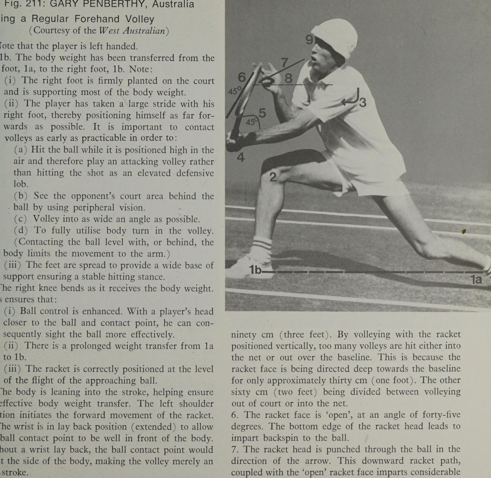
(1) Nếu hàng chờ quá dài, huấn luyện viên có thể thêm một hoạt động khác vào lộ trình tập thể dục hoặc tăng số lần lặp lại cho các hoạt động hiện có.
(ii) Bóng phải được trả lại rổ ở một số giai đoạn của bài tập để duy trì tính liên tục của bài tập.
(iii) Huấn luyện viên nên duy trì mạch tương tự trong một số tuần với ý tưởng sử dụng nguyên tắc quá tải lũy tiến. Anh ta có thể tăng khối lượng công việc theo một trong hai cách. Anh ta có thể duy trì số lần lặp lại như nhau cho mỗi hoạt động nhưng tăng số vòng mà người chơi phải thực hiện. Ví dụ: người chơi thực hiện càng nhiều mạch càng tốt trong lần luyện tập đầu tiên. Trong các buổi thực hành tiếp theo, họ cố gắng thực hiện số lượng mạch lớn hơn. Một khả năng khác gây ra tình trạng quá tải là đặt tổng số mạch thành một số xác định. Khối lượng công việc tăng lên sau đó xuất hiện dưới dạng số lần lặp lại tăng dần trong mỗi hoạt động.
(iv) Để đa dạng và chuẩn bị thể chất đầy đủ hơn, thỉnh thoảng nên đưa ra các kiểu chạy mới và các hoạt động rèn luyện thể chất mới. Huấn luyện viên phải chân thành tin rằng tài liệu mới sẽ mang lại lợi ích cho quá trình chuẩn bị của các tay vợt.
(v) Huấn luyện viên phải dành thời gian để thể hiện các kỹ thuật chính xác để thực hiện các hoạt động trong vòng đua.
(b) Diễn tập tập hợp cạnh tranh. (Xem Hình 144.) Bài tập này cần có một sân tennis đầy đủ và hai người chơi. Sân được chia thành bốn góc phần tư, bốn phần được đánh số như trong Hình 144. Mỗi góc phần tư được giới hạn bởi đường biên đơn, lưới, đường giao bóng giữa sân và phần mở rộng tưởng tượng của nó cũng như đường cuối sân. Người chơi xếp hàng sau đường cuối sân ở phía đối diện của lưới. trong
Hình 144, người chơi A đứng sau góc phần tư 1 và người chơi
B đứng sau góc phần tư 4. Một trong hai người chơi có thể bắt đầu bài tập bằng cách nảy một quả bóng và vuốt nó vào góc phần tư của đối phương. Người chơi phải ở lại vạch cuối và cố gắng giành chiến thắng trong cuộc biểu tình. Bóng rơi vào lưới hoặc ngoài hai góc phần tư được sử dụng trong bài tập là - lỗi. Người chơi đạt được mười điểm đầu tiên là người chiến thắng. Lưu ý rằng những người chơi trong Hình 144 đang đánh trái tay này sang trái tay khác. Nếu họ chơi ở góc phần tư thứ 2 và thứ 3 thì họ sẽ đánh thuận tay đến thuận tay. Quy tắc (i) Lỗi xảy ra ở lần đánh đầu tiên.
(ii) Một cú đánh lái hạ cánh ngắn của đường giao bóng có thể bị trúng đích khi một tay vợt thực hiện cú đánh tiếp cận. Sau đó, người chơi có thể chiếm một vị trí thuận lợi trên lưới.
(iii) Không được phép lốp bóng, do đó người chơi ở vị trí trên lưới có lợi thế về số lượng rõ ràng. Điều này sẽ khuyến khích người chơi đánh những cú drive sâu.
(iv) Nếu tổng điểm bằng nhau ở chín điểm, người chơi phải thắng với cách biệt hai điểm. ; Khoan cân nhắc : Sa tức là an (i) Bằng cách thay đổi các góc phần tư được sử dụng trong bài tập, ; Người chơi Keen S sẽ đánh thuận tay và trái tay cả dọc biên và ngang sân. Các quy tắc khuyến khích các cú đánh sâu có kiểm soát để một cuộc tập trận kiểu này sẽ tốt hơn nhiều so với việc chỉ tập trung vào trung tâm sân.
(ii) Các cú vô-lê được thực hiện dưới áp lực rất lớn vì một đấu thủ chỉ có nửa sân để vượt qua đối thủ. Điều quan trọng cần nhớ là không được phép lốp bóng.
(iii) Điều quan trọng cần lưu ý là việc thi đấu bị hạn chế ở sân đánh đơn khiến cho cuộc diễn tập trở nên thực tế.
(iv) Nếu người chơi liên tục thua từ góc phần tư 1 tức là mẫu ru
-~ (trái tay trên toàn sân), thì hoặc tất cả các đối thủ của anh ta đều có những cú đánh nền trái tay xuất sắc, hoặc v.v. anh ta có điểm yếu ở trái tay. Điều này sẽ không đáng để huấn luyện viên xem xét.
(v) Đây là một bài tập tuyệt vời để tìm ra điểm yếu trong trò chơi của người chơi. Huấn luyện viên có thể lấy Thống kê về cách xác định điểm. Cầu thủ có đánh phần lớn các cú đánh thuận tay chéo sân của mình vào lưới không? Có phải người chơi đánh tất cả các lỗi trái tay của mình quá rộng? Cầu thủ có đánh phần lớn các cú đánh trái tay chéo sân của anh ta với tốc độ ngắn, cho phép đối thủ của anh ta tiếp cận lưới không? Một huấn luyện viên giỏi sẽ phân tích và giúp các tay vợt của mình khắc phục điểm yếu.
(vi) Người chơi nên được khuyến khích tăng cường sức mạnh ; những cú đột phá của họ và thực hiện bài tập từ góc phần tư yếu nhất của họ. ‘VỢ CẠNH TRANH Soe LLY
Hình 142. Hình 143. Hình 144.
(a) Tám một tòa tập hợp. (Xem Hình 145.) Bài tập này rất hữu ích nếu số lượng người chơi luyện tập vượt quá diện tích sân sẵn có. Hai cặp đấu thủ tập hợp ở bên lề, mỗi cặp sử dụng nửa sân. Bốn người chơi này có một đối tác đang đợi phía sau họ. Nếu một trong những đấu thủ đang tập hợp mắc lỗi thì đồng đội của anh ta sẽ đổi chỗ cho anh ta và tiếp tục luyện tập. Bằng cách này, người chơi được khuyến khích thực hiện các cú đánh tiếp đất có kiểm soát nhằm cố gắng ở trên sân lâu hơn. Trong Hình 145, người chơi A và C đang tập hợp lại, người chơi E là đồng đội của C. Người chơi D và B đang tập hợp lại, người chơi F là đồng đội của người chơi D và G là đồng đội của A. Cân nhắc về khoan (1) Huấn luyện viên phải cố gắng ghép các tay vợt có khả năng ngang nhau nếu không tay vợt giỏi hơn sẽ chiếm ưu thế trong cuộc tập trận. (Cặp đối lập cũng phải có khả năng tương đương.)
(11) Những cú đánh chéo sân có thể được thay thế bằng những cú đánh dọc biên. Trên thực tế, bài tập này có thể được sửa đổi để thực hành các cú vô lê, lốp bóng, giao bóng hoặc bất kỳ cú đánh nào khác.
(b) Bóng chuyền hợp tác—theo cặp. (Xem Hình 146.) Bốn người chơi đứng ở phía sau của bốn sân giao bóng hướng về phía lưới. Nói cách khác, nó giống như thể cả bốn đấu thủ trong một trận đấu đôi đều ở gần lưới. Mỗi người chơi sở hữu hai hoặc ba quả bóng tennis. Các tay vợt đứng đối diện nhau theo đường chéo, hợp tác tung cú vô lê, cố gắng tung ra càng nhiều cú vô lê liên tiếp càng tốt. Để tăng tính thử thách, hai cặp đôi có thể thi đấu với nhau. Lưu ý trong Hình 146 rằng người chơi A và D, B và © đang hợp tác đánh vô-lê. Để phát triển tính linh hoạt khi đánh vô-lê, người chơi cuối cùng có thể: @ Thay đổi cách đánh xuống đường biên cho nhau. @ Đổi chỗ, A với B, C với D, và lặp lại các bài tập vô-lê phối hợp trên sân và đường biên. Khi hoàn thành các bài tập này, mỗi đấu thủ sẽ thực hiện cú vô lê xuyên sân và dọc biên, từ cả hai phía sân. Cân nhắc về khoan (1) Trong một trong các bài tập được đề cập, người chơi có thể đánh thuận tay sang thuận tay hoặc đánh trái tay sang trái tay.
(i1) Người chơi có thể được khuyến khích hợp tác thực hiện cú vô lê thấp qua lưới.
(iii) Tất cả các bài tập được đề cập, có thể được sửa đổi để thực hành cú vô lê một nửa bằng cách khuyến khích người chơi thả các cú đánh ngắn.
(c) Bài tập vô-lê cạnh tranh. (Xem Hình 147.) Huấn luyện viên đứng ở vị trí trung tâm dọc theo đường giao bóng. Một rổ bóng được đặt bên hông trái của anh ấy. Bốn đấu thủ đứng ở vị trí đầu mỗi điểm, ở phía sau của bốn ô giao bóng, đứng trên vạch giao bóng và quay mặt vào lưới. (Bài tập này giả định rằng hai đội đánh đôi đã đạt được vị trí lưới thuận lợi và đang cố gắng vượt qua nhau.)
(1) Tất cả bốn đấu thủ phải đặt cả hai chân trên vạch giao bóng khi bắt đầu mỗi điểm.
(11) Huấn luyện viên luân phiên đánh bóng cho hai đấu thủ ở phần sân đối diện. Quả bóng đầu tiên cho người chơi c, quả bóng thứ hai cho người chơi D, v.v.
(ii1) Ngay sau khi huấn luyện viên đánh bóng cho tay vợt c, các đấu thủ có thể di chuyển đến bất kỳ vị trí nào trên sân trước. Cầu thủ C trả lại cú sút của huấn luyện viên và các tay vợt tiếp tục tập trung cho đến khi điểm được quyết định.
(iv) Đội đầu tiên đạt được 20 điểm sẽ thắng trò chơi. Ngay khi một đội đạt được mười điểm, người chơi đổi đầu. Điều này được thực hiện để tránh một đội có lợi thế đánh quả vô lê đầu tiên trong toàn bộ trận đấu.
(v) Người chơi không được phép thực hiện cú lốp bóng. Cân nhắc về khoan (1) Huấn luyện viên phải buộc tay vợt nhận bóng đầu tiên thực hiện cú vô lê thấp. Lợi thế của việc đánh quả bóng đầu tiên bằng cú vô lê cao sẽ là quá lớn.
(11) Các đấu thủ phải được khuyến khích đánh bóng thấp qua lưới hoặc nghiêng sang hai bên sân. Những cú đánh từ trên cao phải được đánh cho người chiến thắng, ở phần mở sân, dưới chân của người chơi gần nhất hoặc vào hông phải của người chơi thuận tay phải.
(i111) Trận đấu có thể được sửa đổi để cho phép các tay vợt thực hiện cú vô-lê bằng cách huấn luyện viên định vị mình ở ngoài khu vực sân.
(d) Bài tập đánh vô-lê cố định. (Xem Hình 148.) Huấn luyện viên, tay vợt c, đứng gần lưới ở phía thuận tay của sân. Một rổ bóng được đặt gần hông trái của anh. Đối tác của huấn luyện viên, tay vợt D, đứng ở vị trí tương tự ở phía trái tay của sân. Đối thủ của họ, người chơi A và B, đứng cạnh nhau trên đường cuối sân ở đầu bên kia. Bài tập bắt đầu với việc huấn luyện viên đánh bóng cho tay vợt B. Cầu thủ B đánh bóng dọc theo đường chéo sân (cross-court), dọc theo đường 2. Cầu thủ D thực hiện cú vô lê cố gắng đánh vô-lê. Người chơi B và D hoàn thành lượt đánh ở nửa sân của họ. Người chơi B không được phép lốp bóng. Ngay sau khi - huấn luyện viên đánh bóng cho tay vợt B, huấn luyện viên sẽ đánh bóng cho tay vợt A và thực hiện động tác tương tự với tay vợt A ở nửa sân bên kia. Cả hai cuộc biểu tình thường kết thúc gần như cùng một lúc. Cân nhắc về khoan (1) Một sửa đổi của bài tập này cho phép người chơi A và B lốp bóng, Giỏ có thể được đặt gần lưới trên đường giao bóng ở giữa. Huấn luyện viên và tay vợt D đều có thể lấy bóng từ rổ một cách thuận tiện. Họ cầm ba hoặc bốn quả bóng trong tay trái và đánh một quả bóng xuống vạch ‘
ĐÁNH MỘT TÒA RALLY đối thủ tương ứng. Cầu thủ A và B thực hiện cú lốp bóng dọc biên buộc huấn luyện viên và tay vợt pD phải đập bóng. Giữ nguyên phần sân tương ứng của mình, hai cặp đấu tranh tính điểm như thể đó là một trận đấu.
(ii) Trong cả hai bài tập, cú đánh đầu tiên phải có tính chất hợp tác.
(iii) Người chơi thay đổi mục đích và vai trò sau một khoảng thời gian nhất định.
(e) Tiếp cận bài tập vô-lê. (Xem Hình 149.) Bài tập này tương tự như bài tập trước ngoại trừ việc ban đầu huấn luyện viên đánh một quả bóng ngắn để rơi xuống vạch giao bóng. Điều này buộc người chơi A và B phải đánh một đòn tiếp cận.
(f) Bài tập đánh vô-lê ngang. (Xem Hình 150.) Bài tập này tương tự như bài tập trước ngoại trừ huấn luyện viên và tay vợt D, cũng như các tay vợt a và B, đứng cạnh nhau ở vị trí sân trung tâm. Huấn luyện viên buộc các tay vợt A và B phải chạy rộng về phía đường biên để thực hiện cú đánh đầu tiên. Huấn luyện viên và tay vợt p cũng buộc phải chạy về phía đường biên trong nỗ lực chặn các cú đánh của các tay vợt A và B và bắt đầu cuộc biểu tình giữa sân. Cân nhắc về khoan (i) Các tay vợt không được di chuyển cho đến khi huấn luyện viên đã tiếp xúc được với bóng để bắt đầu bài tập.
Hình 145. Hình 146.
(ii) Người chơi thay đổi mục đích và vai trò sau một khoảng thời gian nhất định.
(g) Đôi hoàn thành bài tập điểm (1). (Xem hình.
151.) Hai cặp đôi đứng ở vị trí gần lưới, như thể đang cố gắng vượt qua nhau để giành lợi thế về lưới. Huấn luyện viên, người chơi B, có hai hoặc ba quả bóng trong tay trái và một rổ bóng tennis ngay sát khu vực sân bên phải. Huấn luyện viên bắt đầu điểm bằng cách lốp bóng ở điểm 1, qua tay vợt D, buộc tay vợt D phải chạy sâu vào góc trái tay. Đối tác C của người chơi D, cũng rút lui về phía đường cuối sân. Người chơi A và B di chuyển theo hướng mũi tên để có góc trả bóng tốt nhất vì người chơi D sẽ thực hiện cú đánh từ sâu ở góc trái tay. Cuộc biểu tình tiếp tục cho đến khi hoàn thành điểm. Cân nhắc về khoan (i) Khi hoàn thành điểm, người chơi phải nhanh chóng trở về vị trí ban đầu.
(ii) Cầu thủ p, với sự giúp đỡ của huấn luyện viên, có thể thử nghiệm để xác định phương pháp tốt nhất để giành lại lợi thế lưới hoặc giành được điểm.
(iii) Người chơi nên luân phiên các vị trí trên sân bằng cách di chuyển một vị trí theo chiều kim đồng hồ sau mỗi sáu điểm.
Hình 147. Hình 148.
TIẾP CẬN ~~ NHÂN ĐÔI BÊN HOÀN THÀNH KHOAN ĐIỂM (1). vâng. độ phân giải 2%
Hình 149. Hình 150. Hình 151.
Hình 152. Hình 153. Hình 154.
(h) Đôi hoàn thành bài tập điểm (2). (Xem hình.
152.) Các cặp đôi tự định vị mình ở đường cuối sân. Huấn luyện viên, tay vợt B, có hai hoặc ba quả bóng trong tay trái. Một rổ bóng tennis được đặt ở mép sân. Huấn luyện viên bắt đầu điểm bằng cách đánh bóng từ điểm 1 đến tay vợt p. Ngay khi tay vợt D đánh bóng xuống giữa sân theo đường số 2, các đấu thủ được phép tiếp cận lưới. Cuộc biểu tình tiếp tục cho đến khi hoàn thành điểm. Cân nhắc về khoan (i) Cầu thủ phải đặt cả hai chân trên đường cuối sân cho đến khi tay vợt D tiếp xúc với bóng.
(ii) Khi hoàn thành điểm người chơi phải nhanh chóng trở về vị trí xuất phát.
(iii) Người chơi nên luân phiên các vị trí trên sân bằng cách di chuyển một vị trí theo chiều kim đồng hồ sau mỗi sáu điểm.
(i) Đôi hoàn thành bài tập điểm (3). (Xem hình.
153.) Một cặp đôi tự định vị mình ở vị trí lưới thuận lợi. Cặp còn lại nằm ở vạch cuối sân. Huấn luyện viên, tay vợt B, có hai hoặc ba quả bóng trong tay trái. Một rổ bóng được đặt ở phía sau sân. Huấn luyện viên bắt đầu điểm. Bằng cách đánh một cú lốp bóng ở điểm 1 cho tay vợt D. Bóng được đập dọc theo đường 2 cho tay vợt A. Cuộc đánh bóng tiếp tục cho đến khi hoàn thành điểm. Cân nhắc về khoan (i) Cú đập của người chơi p phải sao cho người chơi A có thể trả lại.
(ii) Cầu thủ A, với sự giúp đỡ của huấn luyện viên, có thể thử nghiệm để xác định phương pháp tốt nhất để giành lại lợi thế lưới hoặc giành điểm.
(iii) Khi hoàn thành điểm, người chơi phải nhanh chóng trở về vị trí xuất phát.
(iv) Người chơi nên luân phiên các vị trí trên sân bằng cách di chuyển một vị trí theo chiều kim đồng hồ sau mỗi sáu điểm.
(j) Đánh đôi hoàn thành bài tập điểm (4). (Xem hình.
154.) Hai cặp đôi đứng ở vị trí gần lưới, như thể đang cố gắng vượt qua nhau để giành lợi thế về lưới. Huấn luyện viên, người chơi B, có hai hoặc ba quả bóng trong tay trái và một rổ bóng tennis ở ngay bên phải sân. Huấn luyện viên bắt đầu bài tập bằng cách thực hiện một cú lốp bóng ở điểm 1, qua người chơi D. Người chơi D giả vờ mất thăng bằng buộc người chơi c phải chạy nước rút phía sau để lấy lại quả lốp bóng. Người chơi D di chuyển theo hướng mũi tên để che khu vực sân do người chơi c để lại. Cuộc biểu tình tiếp tục cho đến khi hoàn thành điểm. Cân nhắc về khoan
- (i) Khi hoàn thành điểm, người chơi phải nhanh chóng trở về vị trí xuất phát.
(ii) Cầu thủ c, với sự giúp đỡ của huấn luyện viên, có thể thử nghiệm để xác định phương pháp tốt nhất để giành lại lợi thế lưới hoặc giành được điểm.
(iii) Người chơi nên luân phiên các vị trí trên sân bằng cách di chuyển một vị trí theo chiều kim đồng hồ sau mỗi sáu điểm. Máy khoan khác (a) Chạy bộ giữa các điểm. Trò chơi luyện tập cũng có thể trở thành bài tập rèn luyện sức bền bằng cách tăng cường nỗ lực thể chất cần thiết. Trận đấu quy định mỗi tay vợt phải chạy bộ khi lấy bóng và khi về vị trí sẵn sàng. Cân nhắc về khoan (1) Đây là bài tập chịu áp lực tốt. Cả hai người chơi có thể bắt đầu dần dần bằng cách chạy bộ theo cách này chỉ trong bốn ván đã chọn trong mỗi hiệp.
(ii) Cuối cùng, người chơi có thể chuyển sang chạy bộ giữa các điểm cho mỗi trận đấu.
(iii) Các sửa đổi hữu ích bao gồm việc người chơi nhảy bằng một chân hoặc sử dụng bước nhảy hai chân khi lấy bóng.
(b) Chơi với tạ ở mắt cá chân. Một phương pháp khác để tăng cường nỗ lực thể chất cần thiết khi chơi trò chơi là buộc vật nặng nhẹ quanh mắt cá chân của người chơi. Cân nhắc về khoan (i) Nếu tạ quá nặng, người chơi có thể bị căng cơ ở chân.
(ii) Thời gian thi đấu với tạ mắt cá chân phải tăng dần.
(c) Bài tập phản xạ vô-lê. (Xem Hình 155.) Người chơi thực hiện bài tập, đặt mình ở vị trí cách góc được tạo bởi hai bức tường khoảng bốn mét (bốn thước rưỡi). Anh tung cú vô lê liên tục vào góc cua, nhanh chóng điều chỉnh theo hướng bóng nảy. Cân nhắc về khoan (i) Các bức tường tạo thành góc có thể được làm bằng bất kỳ vật liệu nào miễn là nó đủ mịn và cứng để có được độ bật cần thiết.
(ii) Người chơi có thể tăng cường độ của bài tập bằng cách đặt mình ở gần góc hơn hoặc bằng cách đánh mạnh hơn.
(d) Cú vô lê mục tiêu. (Xem Hình 156.) Người chơi thực hiện bài tập này tự mình định vị cách tường khoảng bốn mét (bốn thước rưỡi). Bức tường có một số vòng tròn được đánh số trên đó. Các vòng tròn được đánh số ngẫu nhiên từ một đến bốn. Tất cả các vòng tròn cũng được đặt ngẫu nhiên và cách mặt đất ít nhất một mét (bốn mươi inch). Người chơi bắt đầu bằng cách thực hiện cú vô lê ở vòng tròn số 1, cho đến khi mười quả vô lê chạm vào khu vực đó. Sau đó, anh ta di chuyển dọc theo bức tường, vẫn tiếp tục thực hiện cú vô lê, cho đến khi đến vòng tròn số 2 và cố gắng đánh mười quả vô lê trong khu vực đó. Người chơi tiếp tục theo cách này cho đến khi che hết bốn vòng tròn. Đây là một bài tập kiểm soát bóng tuyệt vời. Cân nhắc về khoan (i) Các vòng tròn phải được định vị ngẫu nhiên để người chơi quen với việc đánh vô-lê ở các độ cao khác nhau.
(ii) Cung cấp một đường giữ lại được vẽ trên sân, huấn luyện viên có thể tính thời gian cho các buổi tập trong một khoảng thời gian
Hình 155. Hình 156.
tuần để đánh giá hiệu suất của người chơi. Một cú vô lê chạm vạch sẽ được tính là thành công. Nhưng cần lưu ý những điểm sau: | Cuộc tập trận được bắt đầu theo cách tương tự mỗi lần. Một người chơi được chỉ định làm công việc đánh giá tất cả các bài tập, đếm to tất cả các cú vô lê thành công và cho người chơi biết khi nào nên chuyển sang vòng tròn tiếp theo. Một cú vô lê chạm vạch được tính là thành công. Các quả bóng và đồng hồ bấm giờ giống nhau nên được sử dụng trong tất cả các cuộc tập trận. Trong chừng mực có thể, hãy đảm bảo rằng động lực bên ngoài, chẳng hạn như khán giả và điều kiện thời tiết, được giữ không đổi. Cú vô lê thứ mười vào vòng tròn thứ tư được dùng làm tín hiệu dừng đồng hồ.
(e) Diễn tập dịch vụ tự đánh giá. (Xem Hình 157.) (Được sáng chế bởi ông Desmond Oon, huấn luyện viên tennis quốc gia, Singapore.) Người chơi thực hiện bài tập đứng ở vị trí bên phải điểm đánh dấu giữa trên đường cuối sân, sẵn sàng giao bóng tới phần sân thuận tay. Một giỏ. quả bóng tennis được đặt ở giữa đường giao bóng ở cùng một phía của lưới. Giỏ được đặt ở vị trí này để người giao bóng (server) được khuyến khích thực hiện cú giao bóng (serve) của mình về phía lưới. Anh ta sẽ cần thu thập hai quả bóng cho lần giao bóng tiếp theo của mình. Quy tắc (i) Đấu thủ giao bóng ở hai bên luân phiên như trong một trận đấu, sử dụng giao bóng thứ nhất và thứ hai thông thường. ~ .
DỊCH VỤ TỰ ĐÁNH GIÁ KHAI THÁC MỘT TRÒ CHƠI ƯU ĐÃI TRÒ CHƠI THẮNG (ii) Cả hai cú giao bóng (serve) đều phải tốt để người chơi ghi được điểm. Áp dụng phương pháp tính điểm thông thường.
(iii) Nếu lỗi giao bóng thứ nhất hoặc thứ hai thì đấu thủ sẽ mất điểm.
(iv) Nếu quả giao bóng đầu tiên bị lỗi (đấu thủ đã mất điểm) thì đấu thủ vẫn phải thực hiện quả giao bóng thứ hai tốt.
(v) Người chơi giao bóng trong mọi ván đấu, ghi lại số điểm cho đến khi thực hiện được lợi thế sáu ván đấu. Cân nhắc về khoan (i) Người chơi phải thực hiện cú giao bóng (serve) đầu tiên mạnh mẽ để làm cho bài tập trở nên thực tế nhất có thể.
(ii) Đối thủ có thể được sử dụng để trả giao bóng khiến cho bài tập trở nên thực tế hơn.
(111) Người chơi thay đổi kết thúc sau mỗi trận đấu.
(iv) Hầu hết người chơi sẽ mất bộ tưởng tượng này khi lần đầu chơi bài tập này. Một biểu đồ có thể được lưu giữ để đánh giá màn trình diễn của người chơi. Trong khoảng thời gian vài tuần, nếu bài tập được luyện tập chăm chỉ, người chơi có thể bắt đầu thắng các hiệp. Hãy lưu ý biểu đồ bài tập giao bóng tự đánh giá, Hình 158. Lần đầu tiên thực hiện bài tập, người chơi đã thua 6–1. Ở lần thử thứ mười một, người chơi đã có thể thắng sáu ván. Tuy nhiên, cần lưu ý nếu tay vợt thua 8–6 hoặc thắng set. Không thể cho rằng người chơi càng thắng nhiều trận thì hiệu suất của anh ta càng tốt. Thất bại với tỷ số 9–7 không phải là thành tích đáng khen ngợi bằng chiến thắng 6–4.
Chiến Thuật Thi Đấu Đơn Nâng Cao
5. Chiến thuật đánh đơn GIỚI THIỆU Có rất nhiều yếu tố khác nhau ảnh hưởng đến chiến thuật đánh đơn mà người chơi phải liên tục tập trung, phân tích và dự đoán để đi trước đối thủ hai bước. Suy nghĩ về trận đấu là cách duy nhất để đảm bảo rằng chiến thuật của người chơi là chính xác cho từng giai đoạn trong trận đấu. Một số yếu tố có thể ảnh hưởng đến quyết định của người chơi về chiến thuật đánh đơn như sau:
(a) Phong cách chơi của riêng bạn, có tính đến điểm mạnh và điểm yếu.
(b) Phong cách chơi của đối thủ, có tính đến điểm mạnh và điểm yếu.
(c) Tình trạng thể chất của bạn.
(d) Tình trạng thể chất của đối thủ.
(e) Sân và điều kiện khí hậu.
(f) Năng lực tinh thần khác nhau của các tay vợt. Do có số lượng lớn các biến số liên quan khi xây dựng chiến thuật đánh đơn nên mọi quy tắc cứng nhắc và nhanh chóng đều không thể thực hiện được. Tính linh hoạt là chìa khóa. Tuy nhiên, có một số điểm cơ bản về chiến thuật đánh đơn cần được nghiên cứu. Những ý tưởng và đề xuất sau đây được liệt kê dưới tiêu đề chiến thuật linh hoạt, có thể được phân tích và sử dụng để phù hợp với các tình huống trận đấu phù hợp hoặc khả năng chơi khác nhau. Các ý tưởng được trình bày dựa trên trò chơi tennis 'trận đấu lớn' giao bóng và vô-lê hiện đại, đồng thời giúp cung cấp các thành phần mà người chơi có thể lựa chọn để tạo nên một trò chơi chiến thắng. CHIẾN THUẬT KHÁC Kiểm soát bóng (a) Trận tennis thua và không thắng! Nhiều điểm giành được nhờ lỗi hơn là giành được vị trí. Nghiên cứu thống kê đã ước tính rằng 75% số điểm kết thúc do lỗi, và trong số này, 75% lỗi là do bóng chạm lưới.
(b) Người chơi phải học khi nào nên tấn công hoặc khi nào nên phòng thủ. Tennis phòng thủ không nhất thiết là tennis yếu, tuy nhiên khía cạnh phòng thủ của trò chơi thường bị bỏ qua. Phải có sự cân bằng giữa phòng thủ và tấn công. Kẻ lười biếng hiếm khi chiến thắng; người đẩy hiếm khi thắng. Người thường thắng là người chơi có khả năng kiểm soát bóng tốt và đánh tổng lực khoảng 75% đến 80%, chờ đợi một pha sơ hở hoặc một quả bóng ngắn để tung ra hết sức. Hãy cho mình một mức độ sai sót.
(c) Chơi từng điểm một. Một tay vợt tập trung cao độ như thế này rất khó bị đánh bại.
(d) Một số điểm quan trọng hơn những điểm khác và một số điểm trong số này, và lý do về tầm quan trọng của chúng được trình bày dưới đây. Người chơi nên học cách nhận ra những điểm quan trọng này và tập trung hoàn toàn vào chúng để cố gắng giành chiến thắng từng điểm khi nó xảy ra.
(i) Điểm đầu tiên của mỗi ván đấu đều có lợi thế về mặt tâm lý là ‘bắt kịp đối thủ’.
(11) Ngay khi một người chơi đạt 40, điểm tiếp theo là rất quan trọng. Nó có nghĩa là cả một trò chơi.
(iu) Nếu giao bóng và bạn bị dẫn 0—30 hoặc 15— 30, điểm tiếp theo là quan trọng. Nó có thể có nghĩa là một sự gián đoạn dịch vụ.
(iv) Sau set đầu tiên giao tranh chặt chẽ, một tay vợt thường bỏ bài ở set thứ hai. Đừng để nó là bạn. Hãy tập trung cao độ trong vài game đầu tiên của set thứ hai.
(v) Nếu bạn thắng set đầu tiên một cách dễ dàng, hãy buộc bản thân tiếp tục chơi thứ tennis chăm chỉ, khó khăn. Tránh rơi vào trạng thái tự mãn. Đánh những cú đánh sâu
2. Tennis, giống như hầu hết các môn thể thao cạnh tranh, có mục tiêu là điều khiển đối thủ để bạn có sơ hở hoặc điểm yếu để tấn công. Đánh những cú đánh sâu là một phương pháp quan trọng để buộc đối thủ của bạn phải đánh một cú đánh ngắn hoặc cao từ chân sau của anh ta, giúp bạn tận dụng được cú trả bóng yếu của anh ta. Để thực hiện một cú đánh sâu, các cú đánh của người chơi phải đi qua lưới từ 60 đến 90 cm (hai đến ba feet) và được vuốt mạnh về phía đường cuối sân. Đối với những người mới bắt đầu thiếu lực trong cú đánh, khoảng cách có thể là một vấn đề, trong trường hợp đó, mặt vợt hơi mở © và quỹ đạo 45 độ sẽ tạo điều kiện cho khoảng cách thích hợp. Những cú đánh sâu giữ đối thủ của bạn ở gần đường cuối sân với rất ít cơ hội lao vào lưới. Một đường bóng cao sâu cũng sẽ giúp bạn có nhiều thời gian hơn để hồi phục nếu bị đối phương cản phá. .
3. Không bao giờ thay đổi lối chơi khi chiến thắng. Luôn thay đổi một ván thua. Có những trường hợp ngoại lệ tuy nhiên. Ví dụ: nếu bạn chỉ thua một set trong một lần nghỉ giao bóng, do đối thủ của bạn có một vài người thắng tốt, thì việc thay đổi phong cách chơi tự nhiên của bạn là hầu như không đáng. Nếu bạn thua set đầu tiên với tỷ số 6–1, thì bạn nên đánh giá lại cách tiếp cận trận đấu của mình để tránh thua set thứ hai một cách dễ dàng. Ví dụ: thua 6–1 có thể là do đối thủ của bạn trả giao bóng xuất sắc. Giả sử anh ta liên tục thực hiện những cú trả bóng ngắn và góc cạnh, buộc bạn phải tung những cú trả bóng thấp này vào lưới hoặc hàng rào. Rõ ràng nếu trận đấu tiếp tục theo hướng này thì thời điểm tắm sẽ không còn xa nữa. Bạn có thể làm gì để quay lại trò chơi? Một giải pháp khả thi là thỉnh thoảng ở lại vạch cuối sân sau khi giao bóng và tiếp cận lưới khi đối thủ trả giao bóng. Chiến thuật này có thể buộc đối thủ của bạn phải trả đòn mạnh hơn và có thể dẫn đến sai sót. Cũng có thể thử nó, bạn không có gì để mất!
4. Phát triển một trò chơi để bạn cảm thấy thoải mái, cả trên lưới và ở đường cuối sân. Tính linh hoạt này rất quan trọng để phục vụ cho các đối thủ khác nhau và các bề mặt sân khác nhau. Vì lý do này, người chơi phải nhận thức được tầm quan trọng của việc luyện tập tất cả các cú đánh tennis và mọi tình huống trong trận đấu.
5. Hãy nhắm bắn. Đừng hài lòng chỉ để đánh bóng trở lại cuộc chơi. Tận dụng điểm yếu của đối thủ hoặc đánh vào các lỗ hổng của sân. Di chuyển đối thủ của bạn xung quanh sân, làm cho trận đấu trở nên khó khăn nhất có thể đối với anh ta. Người chiến thắng trong các trận đấu tennis là người đánh bóng vào đúng nơi, đúng thời điểm thường xuyên nhất.
6. Tránh nhắm vào các đường khi cú đánh cách nửa mét hoặc hơn (vài feet) bên trong sân sẽ mang lại điểm cho bạn. Điều này đặc biệt đúng khi bạn để đối thủ ở ngoài khu vực sân và chỉ cần đánh bóng qua lưới để giành điểm.
7. Không bao giờ bỏ cuộc khi ở phía sau, hay thư giãn khi ở phía trước. Vận may có thể thay đổi nhanh chóng nếu một người chơi trở nên quá tự tin và bất cẩn trong khi đối thủ của anh ta vẫn tiếp tục cố gắng. Mong đợi để giành chiến thắng, và không bao giờ bỏ cuộc.
8. Một người đánh lớn thích chơi theo nhịp độ. Tránh chơi vào tay anh ta—đánh nhiều cú đánh có nhịp độ chậm sẽ buộc anh ta phải tạo ra tốc độ của riêng mình.
9. Đừng bao giờ đánh giá thấp đối phương. Chơi như thể mọi người đều có cơ hội đánh bại bạn—bất kể bạn chơi với ai. Một tay vợt vẫn có thể tự tin và có thái độ này.
10. Hãy để mắt đến quả bóng và tập trung, đặc biệt nếu thời gian của bạn không đúng và bạn chơi không tốt...
11. Nếu bạn gặp khó khăn trong việc tập trung, một kỹ thuật hữu ích là nói thầm, 'Đánh' - khi đối thủ của bạn đánh bóng, 'Nảy lên' - khi bóng chạm đất, 'Đánh' - khi vợt của bạn chạm bóng.
12. Hãy coi chừng người chơi cố tình xuất phát- chọc tức bạn và phá hủy sự tập trung của bạn. Hãy phớt lờ những tay vợt này càng nhiều càng tốt và tập trung vào trận tennis phía trước. Thường thì một nhận xét thông minh có thể thay đổi diễn biến của toàn bộ trận đấu. Một câu nói điển hình như ‘Tôi phải nói cho bạn biết điều gì đó về cú giao bóng (serve) của bạn khi chúng ta kết thúc trận đấu’, được biết là có thể khiến một tay vợt vốn đã lo lắng hoàn toàn suy sụp.
13. Đừng dành toàn bộ thời gian trong trận đấu để cố gắng sửa một cú đánh. Tập trung vào chiến thuật trận đấu và giành chiến thắng. Giữa các giải đấu hoặc trong thời gian nghỉ giải đấu là thời điểm lý tưởng để luyện tập các cú đánh của bạn.
14. Có hai cách chơi một trận tennis:
(a) Tập trung vào sức mạnh của chính bạn, chẳng hạn như những cú vô lê, bằng cách kiểm soát lưới ở mọi cơ hội.
(b) Tập trung vào điểm yếu của đối thủ, ví dụ như đánh phần lớn cú đánh của bạn vào cú trái tay (backhand) của anh ta. Một tay vợt giỏi sẽ đảm bảo rằng cả hai yếu tố này đều có tác dụng với anh ta bằng cách kiểm soát lưới, đập bóng và tung cú vô lê về phía trái tay của đối phương. Bằng cách này, anh ta có thể tận dụng sức mạnh của mình để khai thác điểm yếu của đối thủ.
15. Nếu bị đánh nặng:
(a) Buộc bản thân chậm lại bằng cách hít thở sâu có kiểm soát và đi bộ chậm để thu thập bóng; (b) Tránh tỏ ra tức giận. hoặc thất vọng; đối thủ của bạn sẽ thích thú khi thấy bạn mất kiểm soát bản thân; mỉm cười hoặc tỏ vẻ mặt lạnh lùng sau khi mắc lỗi.
(c) Phân tích trò chơi của bạn khi bạn chạy chậm lại. NGHĨ! Bạn đang cố gắng đánh quá mạnh? Bạn đang vội vã bắn? Trên hết, hãy giữ bình tĩnh và phân tích tình hình.
16. Khi đối thủ đã bộc lộ điểm yếu trong trò chơi của bạn, chẳng hạn như cú đánh thuận tay, và đang trừng phạt nó một cách không thương tiếc, hãy tấn công vào lưới mọi cơ hội hoặc đưa đối thủ vào lưới. Bằng cách này, số cú thuận tay (forehand) bạn buộc phải đánh sẽ ở mức tối thiểu.
17. Đánh rơi là cú đánh rất nguy hiểm, do cần có lực chạm tốt, do đó hãy tránh đánh vào những điểm quan trọng. Dưới đây là một số gợi ý về thời điểm chúng có thể phù hợp:
(a) Khi chơi trên sân cỏ hoặc sân đất nện, độ cao bật bóng tương đối thấp.
(b) Khi đối thủ của bạn có thế đánh sâu và cú trả bóng của anh ta ngắn.
(c) Khi bạn dẫn trước hai điểm hoặc kém 40—O và không còn gì để mất.
18. Trong tennis đỉnh cao, cú vô lê thả bóng giành được nhiều điểm hơn cú đánh thả bóng trên mặt đất. Điều này đơn giản là vì trong trường hợp sau, quả bóng phải di chuyển xa hơn. Do đó, đối thủ của bạn sẽ có nhiều thời gian hơn để che mặt đất và tiếp cận bóng.
19. Hãy quan sát ánh mắt của đối thủ để có thể đưa ra- xem anh ta sẽ đánh bóng ở đâu. Thường thì người giao bóng (server) sẽ nhìn vào khu vực sân mà anh ta định giao bóng.
20. Không bao giờ để gót chân chạm đất khi bóng đang trong cuộc, hãy cảnh giác, trọng lượng cơ thể dồn lên đầu bóng của bàn chân, sẵn sàng di chuyển nhanh về mọi hướng. Ngoại lệ duy nhất là khi thực sự vuốt bóng.
21. Sau mỗi cú đánh, di chuyển thẳng vào vị trí cho cú đánh tiếp theo. Thật nguy hiểm khi đứng bằng chân để chiêm ngưỡng một đường lái xe được đặt tốt ở bên lề. Đối thủ của bạn có thể tranh giành bóng và có thể tung ra một cú đánh kém để giành chiến thắng. Tốt nhất là bạn nên giả định rằng tất cả các cú đánh của bạn sẽ trúng đích và do đó sẽ phục hồi nhanh chóng.
22. Người chơi phải tỉnh táo để nhận ra những tình huống hoặc điểm quan trọng về mặt tâm lý. Tình huống: sccre là 4—2, 40—0, cú giao bóng (serve) của bạn và đối thủ của bạn đưa một quả bóng dễ dàng đến gần lưới mà bạn có thể dễ dàng đánh đi để giành chiến thắng, nhưng bạn lại lười biếng ném nó vào lưới. 40—15. Hai pha trả bóng tốt của đối thủ, một lỗi kép, một lỗi vô lê của bạn và bạn thua trận với tỷ số 4–3. Cuối cùng bạn thua set 8–6. Điểm khiến bạn thua trong set không phải là 7–6 và điểm trận đấu, mà là cú đánh lười biếng ở 4–2, 40—O.
23. Đảm bảo rằng mức độ thể chất của bạn đáp ứng được yêu cầu về tiêu chuẩn của môn tennis mà bạn muốn chơi. Nếu khát vọng của một tay vợt trẻ đưa anh ta đến với một giải đấu thế giới thì chương trình rèn luyện thể chất khắc nghiệt kéo dài sáu tháng là điều kiện tiên quyết quan trọng. Mặt khác, một người chơi giao lưu vào chiều Chủ nhật ở độ tuổi trung niên sẽ không cần đến mức độ thể chất tương tự để có thể cạnh tranh thoải mái với bạn bè của mình. Tất cả những điều khác đều bình đẳng trong một trận đấu tennis, thể lực sẽ quyết định kết quả.
24. Bảo toàn năng lượng là một vấn đề quan trọng cần cân nhắc trong tennis cả trong một trận đấu và trong toàn bộ chương trình giải đấu. Ví dụ:
(a) Đi bộ, không chạy để thu thập bóng giữa các điểm.
(b) Hãy dành khoảng một phút có thể chấp nhận được giữa các trận đấu để tắm rửa và bình tĩnh lại.
(c) Đứng trong bóng râm nếu đối thủ của bạn đuổi theo lâu để thu bóng. Với điều kiện bạn phải tuân thủ các quy tắc cơ bản trên sân tennis, những kỹ thuật này sẽ không bị đình trệ.
25. Nếu, trong một trận đấu khó khăn, bạn trở nên cực kỳ mệt mỏi, hãy loại bỏ những pha giao bóng kéo dài bằng cách cố gắng tìm kiếm những người chiến thắng sạch sẽ hơn. Bạn có thể phải chấp nhận một vài rủi ro nữa. Một cách khác là đánh những cú đánh cao hơn, chậm hơn, giúp bạn có nhiều thời gian hơn để hồi phục giữa các cú đánh.
26. Học cách thư giãn thể chất giữa các điểm, trận đấu và hiệp đấu, mặc dù bạn không bao giờ có thể thư giãn về mặt tinh thần. Đi bộ chậm rãi để đổi đầu giữa các trò chơi; tránh nắm vợt quá chặt; để cánh tay của bạn thả lỏng ở hai bên .
27. Bạn không cần phải chơi hết mình trước một người chơi yếu hơn. Hãy chậm lại một chút, nhưng đừng chơi một trò chơi quá tự tin, kiêu ngạo. Vẫn tuân thủ các nguyên tắc cơ bản về tennis và chiến thuật đúng đắn. Khi luyện tập với một tay vợt yếu hơn, hãy đánh vào sức mạnh của anh ta để bạn tập luyện tốt hơn. Thực hành điểm yếu của riêng bạn. Làm cho trò chơi có mục đích. CHIẾN THUẬT KHI PHỤC VỤ (a) Thông thường, hãy giữ tư thế cách điểm đánh dấu trung tâm khoảng 90 cm (ba feet) để cho đối thủ biết bạn có quyền lựa chọn đánh quả giao bóng ở giữa hoặc rộng. (Xem Hình 159.) Từ tư thế giao bóng mà người chơi A đã áp dụng, anh ta có thể thực hiện một cú giao bóng (serve) lát đến vị trí 1; hoặc giao bóng trực tiếp cho người nhận B, ở vị trí 2.
(b) Một cú giao bóng (serve) gocd là sự kết hợp giữa tốc độ, vị trí và độ xoáy.
(c) Một cú giao bóng (serve) được đặt sâu sẽ giữ cho người nhận giao bóng ở thế phòng thủ.
2. Bảy mươi phần trăm tất cả các quả giao bóng đầu tiên phải được thực hiện, việc dựa quá nhiều vào các quả giao bóng thứ hai có những nhược điểm sau:
(a) Áp lực tăng thêm lên người giao bóng (server) — cú giao bóng (serve) thứ hai của anh ta phải tốt nếu không anh ta sẽ mất điểm.
(b) Người giao bóng sẽ mất năng lượng quý giá nếu anh ta liên tục bỏ lỡ quả giao bóng đầu tiên và do đó phải đánh thêm một quả giao bóng nữa.
(c) Người nhận giao bóng di chuyển đến gần lưới hơn khi tự mình chuẩn bị để trả giao bóng thứ hai và thường chậm hơn. Điều này làm cho nhiệm vụ của anh ấy dễ dàng hơn.
3. Quả giao bóng đầu tiên phải vào, vào những điểm quan trọng.
4. Tránh đánh quả giao bóng đầu tiên quá mạnh. Hãy nỗ lực khoảng 80% để đạt được 75% kết quả thay vì nỗ lực 100% để đạt được 40% kết quả. Nếu bỏ lỡ quá nhiều cú giao bóng (serve) đầu tiên, người chơi nên cố gắng tìm hiểu lý do tại sao, thay vì chỉ đánh mạnh hơn.
5. Những cú giao bóng (serve) cứng phẳng phải được đánh xuống chính giữa, nơi lưới thấp hơn 15 cm (sáu inch) so với đường biên. (Xem Hình 159, vị trí 3.)
6. Những cú giao bóng (serve) thứ hai phải có chiều sâu vì chúng thiếu tốc độ của những cú giao bóng (serve) đầu tiên. Nếu người chơi chọn thực hiện cú giao bóng (serve) thứ hai bằng phẳng, anh ta phải giảm tốc độ một chút.
7. Tránh rập khuôn cú giao bóng (serve) của bạn. (Xem Hình 160.) Thay đổi dịch vụ của bạn để khiến người nhận phải đoán. Ghi nhớ ba lựa chọn về hướng (rộng sang phải đến vị trí A, rộng sang trái đến vị trí C và xuống giữa đến vị trí B) và bốn lựa chọn về loại (phẳng, cắt lát, xoắn kiểu Mỹ và xoắn ngược).
8. Một cú giao bóng (serve) xoắn của Mỹ được đánh tốt nhất về phía bên trái của sân bên trái, vì sau khi tiếp xúc với mặt đất, bóng bật ra khỏi sân theo phương ngang, buộc người trả giao bóng (receiver) phải đi ra xa.
Hình 159. Hình 160.
Hình 161. Hình 162.
Một cú giao bóng (serve) cắt lát tốt nhất nên được đánh rộng tới phần sân thuận tay, vì sau khi tiếp xúc với mặt đất, bóng sẽ bật ra khỏi sân theo phương ngang, buộc người trả giao bóng (receiver) phải ra xa. 9. Hãy tập thiết lập điểm với cú giao bóng (serve) của bạn bằng cách đảm bảo một cú giao bóng (serve) sâu được kiểm soát tốt để đẩy đối thủ của bạn ra khỏi sân.
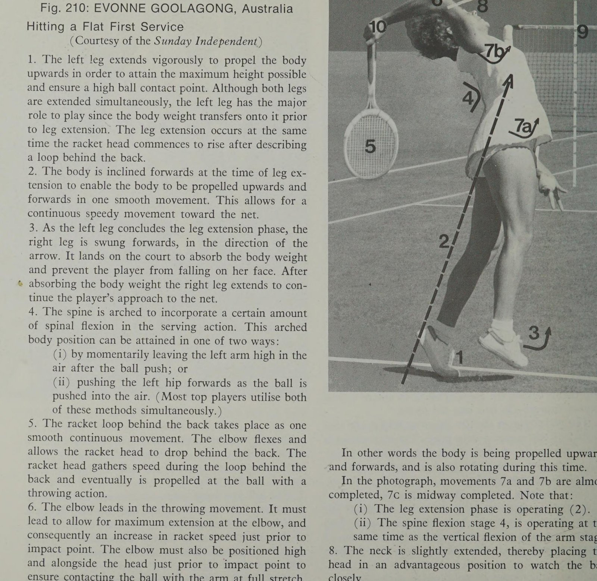
10. Hầu hết các cú giao bóng (serve) nên đánh vào điểm yếu của đối thủ trừ khi cố gắng đẩy đối thủ của bạn ra khỏi sân bằng một cú cắt về phía sân thuận tay hoặc một cú giao bóng (serve) về phía sân trái tay. Tuy nhiên, hãy để người nhận đoán bằng cách thỉnh thoảng đánh vào sức mạnh của anh ta hoặc trực tiếp vào anh ta.
11. Nếu một tay vợt giao bóng tốt, anh ta có thể đánh cú giao bóng (serve) của mình mạnh hơn một chút một cách an toàn. Nếu một tay vợt giao bóng tệ, anh ta nên làm chậm cú giao bóng (serve) của mình lại một chút và tạo thêm độ xoáy.
12. Khi bị đánh nặng, về mặt chiến thuật, bạn nên giao bóng mạnh hơn một chút để cố gắng quay trở lại trận đấu.
13. Nói chung, người mới bắt đầu nên di chuyển đến vị trí đường biên trung tâm sau khi giao bóng và chơi một ván cơ bản. Một khi họ đã thành thạo các nguyên tắc cơ bản của cách chơi trên lưới, người mới bắt đầu nên được khuyến khích thỉnh thoảng thực hiện một cú giao bóng (serve) tốt hoặc cú đánh nền về phía lưới. TRẢ LẠI DỊCH VỤ MỘT LẦN
1. Người chơi phải tập trung cao độ khi nhận giao bóng, phải vào tư thế sẵn sàng cảnh giác và sẵn sàng di chuyển nhanh chóng. Người nhận bóng phải đứng ở giữa góc giao bóng. (Xem hình.
- 18.) Lưu ý rằng quả giao bóng của đấu thủ B phải rơi vào vị trí nào đó trong phần giao bóng giữa hai đường X và Y. Người nhận giao bóng, đấu thủ A, phải đặt mình ở vị trí giữa góc tạo bởi các đường X và Y. Lưu ý ở
Hình 162. Nếu người chơi B tiến xa hơn về phía đánh đơn
4.VÒNG NGƯỢC ‘ BỘ NHẬN Ở GIỮA =~ A CỦA GÓC PHỤC VỤ
- ĐẦU THU Ở TRUNG VÀ GIỮA—p GÓC SFRVING “1 A $1 đường biên để giao bóng (lưu ý mũi tên), người chơi A phải chọn vị trí của mình ở giữa góc giao bóng bằng cách di chuyển đến gần đường biên của mình hơn (lưu ý mũi tên).
2. Người nhận bóng phải đưa bóng trở lại cuộc chơi bằng cách tạo cơ hội cho mình để giành điểm. Người nhận bóng phải tránh thực hiện cú trả bóng nổ tung trừ khi anh ta có một cú giao bóng (serve) ngắn dễ đánh.
(a) Trong đánh đơn, người nhận phải trả bóng một cách tiết kiệm. Khả năng cao là quả lốp bóng sẽ bị đập vỡ. Tuy nhiên, khi người giao bóng (server) liên tục đến quá gần lưới hoặc nhằm mục đích gây bất ngờ, người trả giao bóng (receiver) có thể thỉnh thoảng thực hiện một cú lốp bóng.
(b) Nên thực hiện các cú giao bóng (serve) đang lên và buộc người giao bóng (server) phải vô lê một chút trước khi anh ta muốn; Dù sao thì anh ấy cũng được kỳ vọng sẽ thắng trò chơi, vậy tại sao bạn không thử.
3. Người ta ước tính rằng 80% tất cả các cú giao bóng (serve) đều có khả năng được trả lại. Trong số này, 10% sẽ thuộc về người thắng cuộc. Trong số còn lại, một nửa có thể bị tấn công và một nửa có thể được người nhận chơi phòng thủ. Nói tóm lại, những cú giao bóng (serve) dễ dàng, người nhận phải đánh một cú trả bóng mạnh để gây thêm áp lực lên người giao bóng (server). Nếu khoảng 35% dịch vụ có thể bị tấn công thì người nhận phải tận dụng tối đa chúng.
4. Khi nhận được hầu hết các cú giao bóng (serve) đầu tiên, người nhận buộc phải sử dụng một cú đánh thẳng về phía sau vì có rất ít thời gian cho một cú vung hoàn toàn. Sự chuẩn bị sớm là quan trọng. Khi nhận giao bóng đại bác, hãy bằng lòng đánh bóng an toàn xuống giữa sân. Những cú giao bóng (serve) thứ hai ngắn, dễ dàng hơn đòi hỏi phải vung vợt ra sau lâu hơn khi được trả lại.
5. Đó là chiến thuật tốt nếu người trả giao bóng (receiver) di chuyển khoảng 90 cm (một yard) vào sân sau khi trả bóng tốt. Điều này sẽ giúp anh ta có một vị trí sân tốt hơn để thực hiện một cú vô-lê.
6. Nếu người giao bóng (server) thiếu nhiều quả giao bóng đầu tiên do quá căng thẳng, người nhận giao bóng nên di chuyển đến gần lưới hơn một chút và đánh trả quả giao bóng thứ hai một cách nhanh chóng, gây thêm áp lực cho người giao bóng (server).
7. Một kỹ thuật có giá trị khi chơi một tay vợt tấn công lưới giỏi là thực hiện cú trả giao bóng ngắn và rộng. Điều này sẽ buộc người giao bóng (server) thực hiện một cú vô lê khó hoặc một nửa cú vô lê thấp.
8. Thực hiện một cú trả giao bóng xoáy lên rất có giá trị, vì bóng sẽ chìm nhanh chóng khi nó đi qua lưới, buộc người giao bóng (server) đến phải thực hiện một cú vô lê trên cao. Khi đó người nhận sẽ có lợi thế trong cuộc biểu tình.
9. Nếu người giao bóng (server) không thực hiện cú giao bóng (serve) của anh ta vào lưới, hãy đánh cú giao bóng (serve) sâu để giữ anh ta ở vạch cuối sân— hoặc nếu anh ta có cú vô lê yếu, hãy đánh những cú thả bóng ngắn để buộc anh ta về phía lưới. (Xem Hình 163.) Khi cố gắng trả lại một dịch vụ được cắt lát nhiều, bạn nên sử dụng kỹ thuật sau. Đường đi của quả bóng sắp tới được thể hiện bằng đường đứt nét. Người nhận bóng, người chơi A, phải di chuyển dọc theo đường X để tiếp xúc với bóng trước khi bóng đi quá xa sân. Nếu người trả giao bóng (receiver) di chuyển dọc theo đường Y thì điểm tiếp xúc của bóng sẽ nằm quá xa sân, khiến người trả giao bóng (receiver) gặp khó khăn khi trả bóng. Người giao bóng, khi tiếp cận lưới, mở toàn bộ sân để thực hiện cú vô lê. Trong hầu hết các tình huống, nếu người nhận giao bóng dọc theo đường Y thì anh ta sẽ cần phải lốp bóng hoặc đánh một cú công bóng dọc đường.
10. Sau khi trả giao bóng, nếu người nhận giao bóng quyết định không tiếp cận lưới, người nhận giao bóng phải cân nhắc hai điều.
(i) Vị trí nghiêng của người nhận; anh ta nên di chuyển đến tâm của góc quay trở lại tốt nhất. (Xem hình.
164.) Người nhận (người chơi A) thực hiện cú trả bóng dọc theo đường gãy tới vị trí 1. Máy chủ B sẽ thực hiện cú vô lê đầu tiên của mình từ vị trí này. Góc trả bóng tốt nhất khi xem xét cú vô lê đầu tiên của người giao bóng (server) được biểu thị bằng hai đường đứt nét. Người nhận, để vào vị trí giữa góc này, phải đứng ở điểm đánh dấu trung tâm dọc theo vạch cuối sân (tức là di chuyển theo hướng Y).
(ii) Độ sâu sân của người trả giao bóng (receiver). Người nhận bóng phải đứng ở vị trí phía sau vạch cuối sân. Nếu người trả giao bóng (receiver) trôi vào sân sau, anh ta sẽ tiếp cận khu vực nằm cách đường giao bóng từ hai đến ba phần tư mét (ba thước Anh) đến khoảng một mét (1 thước Anh) ở phía trước nó, được gọi là 'Vùng đất không có người'. Ở khu vực này, các cú đánh của người giao bóng (server) sẽ buộc người nhận phải đánh những cú vô lê nửa khó và những cú vô lê thấp. Nếu người nhận di chuyển dọc theo con đường X, anh ta sẽ thấy mình đang ở 'No Man's Land'. Người nhận phải di chuyển dọc theo Y để định vị mình ở điểm đánh dấu trung tâm dọc theo vạch cuối sân. CUỘC BIỆT TÌNH SAU SAU
1. Để đạt được độ sâu tốt khi đánh bóng, bóng phải vượt qua cách lưới ít nhất 60 cm đến 90 cm (hai đến ba feet). Vì 3/4 tổng số điểm bị mất là số cú đánh được tính nên việc có biên độ sai số này là rất quan trọng. Điều này sẽ đảm bảo số lượng lỗi được ghi nhận ở mức tối thiểu và độ sâu tối đa trên ổ đĩa.
2. Điều khiển đối thủ của bạn xung quanh sân. Làm cho trò chơi trở nên khó chịu đối với anh ta nhất có thể. Thay đổi các cú đánh của bạn để khiến anh ấy phải đoán. Điều quan trọng là phải có một số phương pháp khi tập hợp từ vạch cuối sân. Phương pháp được sử dụng sẽ phụ thuộc vào điểm mạnh của bạn và điểm yếu của đối thủ. Ví dụ, giả sử rằng sự nhanh nhẹn của một người chơi bị nghi ngờ. (Xem Hình 165.) Người nhận bóng, người chơi A, nhận ra người giao bóng (server) không đến gần lưới, thực hiện cú đánh lùi sâu dọc theo đường 1, đến góc thuận tay. Cú đánh tiếp theo của người chơi A dọc theo đường 2, sâu đến góc trái tay. Đến giai đoạn này người chơi B là - DỊCH VỤ PHỤC HỒI CƠ BẢN CỦA NGƯỜI NHẬN ở mức tối đa. Cú đánh tiếp theo của người chơi a là một con chip ngắn dọc theo đường 3 về phía trái tay. Thông thường, hai cú đánh liên tiếp vào cùng một khu vực sân sẽ khiến đối thủ của bạn 'nhầm chân'.
3. Có rất nhiều lợi ích khi đánh một cú drive chéo sân (xem Hình 166).
(a) Một cú đánh chéo sân được thực hiện với tư thế mở _ nên không cần chuẩn bị cơ thể nhiều. (Lưu ý người chơi A.)
(b) Khoảng cách từ góc này đến góc kia dài hơn khoảng hai mét (sáu feet rưỡi) so với khoảng cách từ cùng một góc LE ILS I he Se, cme Se ee Stee The ecient Mere = Pig Gos higa lod. xuống dòng. Điều này cho phép người chơi đánh tự tin hơn một chút (dọc theo đường X).
(c) Nếu một tay vợt buộc phải lùi ra xa để đánh trả, việc đánh một cú đánh chéo sân sẽ giúp anh ta tiết kiệm được hai bước khi hồi phục cho cú đánh tiếp theo. (Điều này là do anh ta không thể bị đẩy rộng hơn biên đối diện.)
(d) Chiều cao của lưới ở giữa là 91 cm rưỡi (ba feet); ở bên lề là 107 cm (ba feet rưỡi).
Hình 165. Hình 166.
ƯU ĐIỂM CỦA LÁI XE CHÉO TÒA
Hình 167. Hình 168. Hình 169. Hình 170.
(e) Cú đánh chéo sân là một cú đánh tự nhiên.
(f) Có thể thực hiện được những góc lớn hơn với những cú đánh chéo sân.
4. Phải cẩn thận hơn khi đánh những cú đánh dọc biên vì:
(a) Lưới cao hơn ở đường biên.
(b) Người chơi sẽ khó vung đầu vợt theo hướng anh ta muốn bóng đi trừ khi anh ta ở tư thế nghiêng quá mức.
(c) Các cú đánh phải nhắm mục tiêu từ 30 đến 60 cm (một đến hai feet) bên trong đường biên. Sẽ có quá nhiều lỗi do cố gắng đánh trực tiếp vào vạch.
5. Người chơi phải tránh cố chấp đặt chân lên đường cuối sân và thực hiện các cú đánh từ thế đứng này. Rõ ràng, những cú trả sâu của đối phương sẽ buộc người chơi phải lùi lại nhanh để chuyển trọng lượng cơ thể về phía trước nhằm hỗ trợ thực hiện cú đánh.
6. Khi khai thác điểm yếu trái tay của đối thủ, chiến thuật tốt là buộc anh ta phải đánh.một cú thuận tay (forehand) rộng trước. Điều này sẽ ‘mở ra’ mặt trái tay của đối phương và giúp tấn công dễ dàng hơn.
7. Nếu đối thủ của bạn không thích chơi trên lưới, hãy buộc anh ta tiếp cận lưới bằng cách đánh các cú phát bóng sâu, sau đó là một cú đánh góc ngắn.
8. Nếu buộc phải tiếp cận lưới, đấu thủ phải cố gắng thực hiện tất cả các cú đánh ở phần sân trước với ý tưởng chạm bóng càng sớm càng tốt. Lưu ý trong Hình 167 rằng người chơi đã do dự, chờ bóng đến chỗ mình. Trong trường hợp này, điểm tiếp xúc bóng sẽ thấp và cách lưới xa. Người chơi sẽ phải khuỵu gối và mở mặt vợt để thực hiện cú vô lê phòng thủ thành công. Lưu ý trong Hình 168 rằng người chơi đã đưa tay về phía trước để tiếp xúc với bóng khi nó vẫn còn ở trên cao, tạo thời gian để thực hiện một cú vô lê tấn công. ĐIỂM LIÊN HỆ LÝ TƯỞNG CHO BÓNG CHUYỀN: CHIẾN THUẬT KHI TIẾP CẬN LƯỚI Sau Dịch Vụ
1. Một tay vợt phải tiếp cận lưới bất cứ khi nào có cơ hội. Vị trí trên lưới có cả lợi ích về tâm lý và thể chất.
2. Nếu giao bóng kém, có thể có lợi cho một đấu thủ thỉnh thoảng giả vờ lao vào lưới và đứng ở vạch cuối sân, tiếp cận lưới sau khi đối phương chạm được quả bóng dài ngắn đầu tiên. Chiến thuật này cũng sẽ ngăn cản người nhận thực hiện cú trả bóng thành công.
3. Một người chơi giỏi sẽ thay đổi các cú giao bóng (serve) của mình để khiến đối thủ phải đoán. Có hai cách cơ bản để làm điều này:
(a) Thay đổi kiểu giao bóng có nghĩa là sử dụng giao bóng phẳng, xoáy lên theo lát cắt hoặc xoắn kiểu Mỹ chẳng hạn.
(b) Thay đổi phương hướng hoặc vị trí của dịch vụ.
4. Người giao bóng tốt sẽ gây rối loạn cho đối thủ bằng cách tiếp cận lưới nhanh, buộc người giao bóng (server) phải đánh những cú đánh vội vàng và hậu quả là mắc nhiều lỗi.
5. Khi đến gần lưới sau khi giao bóng, đấu thủ phải đi theo đường nằm ở giữa góc trả giao bóng tốt nhất. Lưu ý trong Hình 169, các đường chấm chấm X và Y tạo thành góc mang lại dịch vụ tốt nhất. Xác suất để cú trả bóng của người chơi a nằm trong góc này lớn hơn xác suất cú trả bóng của người chơi a bị đánh ra ngoài góc. Đường chấm X chạy dọc theo đường biên đánh đơn và bất kỳ cú trả bóng nào được đánh rộng hơn đường này sẽ rơi ra ngoài sân. Đường chấm Y đi ngang qua sân và bất kỳ cú trả bóng nào được đánh rộng hơn đường này sẽ có ít cơ hội hạ cánh xuống sân vì hai lý do chính: ; (a) Lưới ở điểm cao nhất tại đường biên đơn. :
oa vào VỊ TRÍ MÁY CHỦ Ở GIỮA GÓC TRẢ LẠI TỐT NHẤT (b) Góc cần thiết để quay trở lại thành công bên ngoài đường Y là quá nhọn. Lưu ý trong Hình 170 rằng người giao bóng (server), người chơi B, được đặt ở vị trí bên ngoài góc mang lại giao bóng tốt nhất. Anh ta đang bảo vệ khu vực sân mà người trả giao bóng (receiver), người chơi A, sẽ gặp khó khăn khi đánh. Có một quy tắc đơn giản để đảm bảo rằng ‘luật các góc’ này được tính đến. Người giao bóng phải tuân theo đường bay tưởng tượng của quả bóng về phía lưới.
6. Người giao bóng phải dừng lại trong giây lát trong quá trình tiếp cận lưới. Việc tạm dừng phải diễn ra cùng lúc với lúc người nhận đánh cú trả bóng của mình. Điều này sẽ đảm bảo người giao bóng (server) được cân bằng tốt để thực hiện cú vô lê đầu tiên. Nó cũng sẽ cho phép người giao bóng (server) nhảy sang phía thuận tay hoặc phía trái tay để chặn cú trả bóng. Nếu người giao bóng không dừng đúng giờ, phát bắn duy nhất mà anh ta có thể đạt được là một phát bắn thẳng vào anh ta. Ngay cả khi đó, khả năng anh ấy sẽ đánh một cú vô lê tốt là rất nhỏ vì cú đánh của anh ấy phải được thực hiện khi anh ấy vẫn đang tiếp tục ? 2 < y VỊ TRÍ MÁY CHỦ SAI Khi chạy. Kỹ thuật được người giao bóng (server) sử dụng để tạm dừng trong giây lát và xác định hướng trả bóng được gọi là 'tách'. Lưu ý trong Hình 171 rằng người giao bóng (server) nhảy nhẹ bằng một chân để tiếp đất bằng hai chân nhằm vào vị trí 'tách' (xem Hình 72). Người chơi phải cố gắng chạy khoảng cách lớn nhất có thể về phía lưới trước khi buộc phải tách ra. Từ vạch cuối sân
1. Người chơi nên tận dụng tất cả các đường bóng ngắn đánh vào mình bằng cách đánh một cú đánh tiếp cận sâu, thường là vào điểm yếu của đối phương hoặc để khai thác sân. Người chơi không được thực hiện cú đánh tiếp cận khi nhận được cú đánh sâu từ đối phương. Khi tiếp cận lưới, người chơi phải tính đến:
(a) “Định luật về các góc”, (b) ‘Tách’.
Hình 171. ‘Tách’. Nhảy khỏi một chân để hạ cánh trên hai.
Ss-ty NHỮNG NHƯỢC ĐIỂM CỦA PHƯƠNG PHÁP 90° TRONG VIỆC CHE CHUYỂN ĐỊA ĐIỂM CHÉO (c) ‘Quy tắc vô-lê bốn mươi lăm độ’. Xem hình. 173 và 174. Lưu ý trong Hình 173 rằng người chơi A đã di chuyển song song với lưới, dọc theo đường Y, để che chắn cho cú đánh chéo sân của người chơi B. Tình huống này khiến tay vợt A có cú vô lê rất khó đánh trúng. Điểm tiếp xúc bóng thấp và xa lưới, buộc tay vợt A phải đánh một cú vô lê dọc theo đường X. Lưu ý trong Hình 174 rằng tay vợt A đã di chuyển về phía lưới một góc 45 độ, dọc theo đường X, để che chắn cho cú đánh chéo sân của tay vợt B. Tình huống này khiến tay vợt A có cú vô lê tương đối dễ trúng đích. Điểm tiếp xúc bóng cao và gần lưới, giúp tay vợt A thực hiện cú vô lê tấn công dọc theo đường Z.
2. Người chơi phải học cách thực hiện cú đánh tiếp cận và chạy về phía lưới bằng một chuyển động nhịp nhàng. Không được do dự khi tạm dừng khi bóng được tiếp xúc để xem liệu cú đánh tiếp cận có hạ cánh xuống sân hay không. Người chơi phải cho rằng cú đánh của mình sẽ chạm sân và nhanh chóng chạy vào vị trí cho cú đánh tiếp theo.
3. Ý tưởng của cú đánh tiếp cận là buộc đối phương phải đánh từ phía sau đường chéo sân (cross-court) của mình, giúp tay vợt tiếp cận có nhiều thời gian để đạt được vị trí đánh vô-lê tốt. Vì lý do này, một cú đánh tiếp cận có thể là một cú lốp bóng vừa phải, một cú cắt sâu hoặc một cú đánh xoáy lên (topspin) sâu. Độ sâu không bao giờ được hy sinh vì tốc độ, vì cú đánh tiếp cận phải an toàn. Đôi khi, nếu người chơi không thể đối phó với những cú đánh thấp thì một cú đánh tiếp cận ngắn, cắt lát, góc cạnh có thể là một chiến thuật hữu ích.
4. Sẽ khá có giá trị khi thực hiện một cú đánh tiếp cận ở giữa sân. Điều này đặc biệt áp dụng đối với những người chơi có xu hướng thực hiện các cú đánh chéo góc, vì khó đạt được góc khi đánh từ vị trí trung tâm dọc theo đường cuối sân.
5. Người chơi không được đánh một cú đánh tiếp cận với max- Hình 077. Lớn. 178. Hình 179;
ƯU ĐIỂM CỦA API 45° TRONG VIỆC KIẾM ĐƯỢC MỘT CO CHÉO mẹ lực lượng. Ý tưởng của việc thực hiện cú đánh tiếp cận là kiểm soát lưới và tung cú vô lê đầu tiên hoặc thứ hai để giành chiến thắng. Khi thực hiện một cú đánh tiếp cận, người chơi không được cố gắng giành điểm hoàn toàn.
6. Khi tiếp cận lưới, vị trí đánh vô-lê lý tưởng là nằm ở khoảng giữa lưới và đường giao bóng, ở giữa góc trả bóng tốt nhất. Người chơi phải tránh đặt mình ở vị trí quá gần lưới nếu không sẽ dễ bị lốp bóng. Việc tiến một bước để thực hiện cú vô lê sẽ dễ dàng hơn là đuổi theo một cú lốp bóng về vạch cuối sân. Nếu buộc phải tung cú vô lê từ độ cao dưới lưới, bóng phải đánh sâu vào điểm yếu của đối phương hoặc tới các sơ hở của sân. Có thể cú vô lê đầu tiên sẽ là một cú đánh tiếp cận khác, trong trường hợp đó, tay vợt nên di chuyển gần hơn về phía lưới để thực hiện cú vô lê thứ hai. Khi đánh vô-lê trên độ cao lưới, bóng phải được đánh sâu vào các góc hoặc theo góc nhọn (tùy thuộc vào khoảng cách của người chơi với lưới). Lưu ý trong Hình 175 rằng một tay vợt đánh vô-lê từ khoảng cách bốn mét (bốn thước rưỡi) tính từ lưới có góc X O Y để đánh bóng an toàn. Trong trường hợp này, đánh sâu sẽ an toàn hơn là đánh theo góc nhọn. Lưu ý trong Hình 176 rằng một tay vợt thực hiện cú vô lê từ khoảng cách hai mét (hai và một phần tư yard) từ
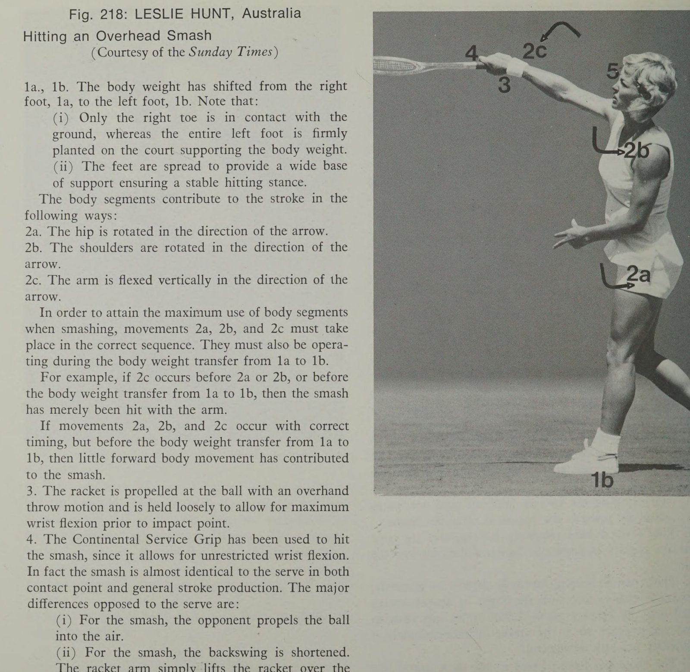
lưới có góc X lớn hơn! Ôi Y! để đánh bóng an toàn. Trong trường hợp này, người chơi có thể thực hiện một cú vô lê góc cạnh hoặc sâu.
7. Khi một đấu thủ đã vào tư thế cảnh giác trên lưới, anh ta phải tránh đoán xem cú đánh sẽ đến từ phía nào (trừ khi anh ta có những tín hiệu phù hợp để đưa ra phán đoán thông minh). Bởi vì trong hầu hết các trường hợp, với điều kiện người chơi đã đứng vững theo luật về các góc, người chơi có thể thực hiện được hầu hết các cú vô lê chạm đất trong sân. Nếu đối thủ có một cú đánh dễ dàng để đánh trúng, người chơi có thể phải tìm kiếm các tín hiệu và chọn phía thuận tay hoặc phía trái tay để chặn cú đánh. Biết được điểm mạnh của đối phương hoặc một chút giả tạo về cơ thể của một tay vợt có thể giúp chọn đúng phía để chặn cú đánh. CHIẾN THUẬT KHI ĐỐI THỦ HƯỚNG DẪN TRÊN MẠNG
1. Điều quan trọng là buộc đối thủ phải đánh một cú đánh thắng lợi. Tránh cho anh ta điểm trên đĩa bằng cách mắc một lỗi không cần thiết.
2. Hầu hết các cú vô-lê nên được thực hiện bằng cú xoáy ngang hoặc xoáy lên vì những cú đánh này sẽ giữ bóng ở mức thấp sau khi lưới đã được vượt qua. Đối thủ phải vượt qua ieee wane cuame hed Some ieeee Gazsm a Be de i bats Uae ELE, FOMy we ya ya GÓC CÓ THỂ CÓ BÓNG CHUYỆN KHI TỪ LƯỚI 2 MÉT — buộc phải thực hiện một cú đánh cao.
3. Người chơi phải thay đổi các cú đánh của mình để khiến đối thủ phải đoán bằng cách đánh các cú đánh, các cú đánh theo góc mềm và lốp bóng.
4. Chơi theo điểm yếu của đối thủ.
5. Những cú vô-lê phải dứt khoát, tránh cố gắng hướng cú đánh qua đối thủ. Nhiều cú đánh loft và lỗi sẽ xảy ra do những cú vô-lê nửa vời.
6. Cố gắng kiểm soát lưới bằng cách thực hiện một cú sút chéo góc mềm mại.
7. Thường thì một cú đánh thẳng vào đối thủ sẽ khiến đối phương bị bất ngờ và hy vọng sẽ mắc lỗi.
8. Cú lốp bóng là một cú đánh xuất sắc trong đánh đơn, đặc biệt khi được sử dụng trong các trường hợp sau:
(a) Xem Hình 177 khi đối phương ở quá gần lưới. Một cú lốp bóng tấn công thấp sẽ là lý tưởng, dù là đánh thẳng hoặc có xoáy lên.
(b) Xem Hình 178 khi một đấu thủ buộc phải đánh từ vị trí sân cực kỳ sâu. Một cú lốp bóng phòng thủ cao sẽ là lý tưởng, giúp tay vợt có nhiều thời gian hơn để hồi phục và đảm nhận một vị trí thuận lợi trên sân.
(c) Xem Hình 179 khi một đấu thủ buộc phải đánh từ một vị trí quá rộng so với sân. Một lần nữa, một cú lốp bóng phòng thủ cao sẽ cho phép một tay vợt có thời gian để trở lại vị trí ở sân trung tâm.
Một cú lốp bóng tấn công có thể được thực hiện hiệu quả trong các tình huống (b) và (c) nếu đối phương ở vị trí quá gần lưới. CÁC MẶT SÂN TAY KHÁC NHAU Chiến thuật tennis thay đổi đáng kể khi chơi trên nhiều bề mặt sân khác nhau vì bóng nảy lại ở tốc độ và độ cao khác nhau. Khi chơi trên mặt sân mềm, chẳng hạn như sân đất nện, phần lớn lực của bóng bị tiêu tán khi tiếp xúc. Lực bật lại yếu hơn nhiều nên lực bật lại chậm hơn. Mặt khác, sân coment vì kết cấu cứng nên bóng bật lại nhanh hơn nhiều. Bụi bẩn, nhựa đường, đất sét và lớp kiến là những bề mặt chậm. Cỏ, ván và xi măng là những bề mặt nhanh. Hầu hết người chơi thích sử dụng vợt có dây lỏng khi chơi trên sân chậm, vì điều này sẽ tăng cường khả năng kiểm soát. Một cây vợt có dây căng, tạo thêm lực sẽ là lý tưởng trên các sân nhanh. Đặc điểm cỏ (a) Các cú đánh thường bật lại nhanh chóng và giữ ở mức thấp so với mặt đất.
(b) Có sự khác biệt rất lớn giữa các sân cỏ, một số cứng, một số mềm hơn, một số khô hơn, một số ẩm ướt hơn và một số xanh hơn những sân khác. Do sự khác biệt lớn về kết cấu mặt sân, người chơi nhận thấy điều quan trọng là phải phân tích mặt sân cỏ trước trận đấu. Thích ứng cơ bản (a) Bởi vì độ nảy thấp, việc chuẩn bị cú đánh phải càng sớm càng tốt, các cú đánh được thực hiện với những cú vung vợt ra sau ngắn hơn.
(b) Người chơi phải di chuyển nhanh vào vị trí đánh.
(c) Một trò chơi giao bóng và vô lê mạnh mẽ rất phù hợp trên sân cỏ. Đặc tính xi măng (a) Bóng bật ra khỏi sân nhanh như trên cỏ. Tuy nhiên, không có hiện tượng trượt và độ nảy của bóng cao hơn đáng kể trên nền xi măng. Chuyển thể cơ bản (a) Một trò chơi giao bóng và vô lê mạnh mẽ rất phù hợp với xi măng. Rất khó để chơi một trò chơi cơ bản giành chiến thắng.
(b) Bóng nảy thực sự để có thể thực hiện các cú vô lê một nửa và các cú đánh tiếp cận một cách tự tin.
(c) Vì cả sân cỏ và sân xi măng đều yêu cầu phong cách thi đấu giống nhau nên việc thay đổi từ mặt sân này sang mặt sân khác không có vấn đề gì. Đặc điểm đất sét (a) Bóng bật ra khỏi sân chậm hơn và cao hơn nhiều trên sân đất nện khi so sánh với cỏ hoặc xi măng. Thích ứng cơ bản (a) Trò chơi giao bóng và vô lê mạnh sẽ không hiệu quả bằng trên sân đất nện vì rất khó để người chiến thắng đánh bóng đi.
(b) Một người chơi ở vị trí cơ bản ổn định có một lợi thế khác biệt vì phản ứng của sân chậm hơn sẽ khuyến khích các pha đánh bóng dài hơn.
(c) Các cú đánh phải chậm lại một chút vì có nhiều thời gian hơn để chuẩn bị. Thường có đủ thời gian cho một cú xoay ngược hoàn toàn theo vòng tròn.
(d) Độ sâu và độ chính xác quan trọng hơn tốc độ.
(e) Nhìn chung, trò chơi giao bóng và vô lê vẫn thắng trên sân đất nện, tuy nhiên, trận đấu phải chậm lại. Người chơi đánh với nỗ lực 75% trong tầm kiểm soát sẽ giành chiến thắng. ĐIỀU KIỆN KHÍ HẬU KHÁC NHAU Chơi trong gió
1. Vì bóng di chuyển không thể đoán trước trong điều kiện có gió nên cần phải có sự tập trung cao hơn.
2. Người chơi phải lưu ý sức mạnh và hướng gió trong thời gian khởi động. Thông tin thu được phải được sử dụng một cách khôn ngoan. Ví dụ, một cơn gió chéo sân sẽ cho phép một tay vợt đánh một cú lốp bóng rộng hơn đường biên đơn mà vẫn đưa bóng vào sân.
3. Do không chắc chắn về đường đi chính xác của quả bóng đang đến gần, việc chuẩn bị của người chơi trước khi tiếp xúc với bóng phải sớm. Động tác backswing phải ngắn, người chơi phải giữ cú đánh thực sự cho đến giây phút cuối cùng có thể.
4. Để đảm bảo hạn chế tối đa tác động của gió, bóng phải được tiếp xúc chắc chắn. Phải có một quá trình kéo dài với việc vung đầu vợt theo hướng đánh dự định.
5. Khi giao bóng trong điều kiện gió lớn lực đẩy bóng lên không trung phải thấp hơn bình thường một chút. Điều này nhằm đảm bảo rằng điểm tiếp xúc xảy ra trước khi gió có quá nhiều thời gian để di chuyển quả bóng xung quanh. Do lực đẩy bóng thấp hơn nên hiển nhiên cú giao bóng (serve) cũng sẽ ~ phải rút ngắn lại.
6. Khi đánh những cú đánh ngược gió, cú đánh phải được đánh chắc chắn để gió ít có cơ hội làm thay đổi đường đi của bóng. Các cú truyền động Topspin sẽ đảm bảo bóng luôn ở mức thấp khi nó đi qua lưới. Một cú đánh ngược chiều gió sẽ giữ bóng _ ở trên lưới.
7. Người chơi phải đánh các cú công bóng chủ yếu là xoáy lên khi chơi theo chiều gió để ngăn các cú đánh tiếp đất phía sau đường cuối sân.
8. Các cú lốp bóng phải được đánh rất thận trọng khi chơi theo chiều gió, vì bóng tự nhiên sẽ di chuyển xa hơn bình thường. Những cú ném vào gió có thể bị đánh cao hơn và mạnh hơn nhiều.
9. Việc kiểm soát lưới khi chơi thuận gió là cực kỳ thuận lợi vì các cú đánh của đối phương sẽ bị chậm lại. Chơi theo phong cách tấn công ngược gió khó hơn nhiều. Các cú đánh tiếp đất phải giữ thấp hoặc rộng, các cú lốp bóng phải cao và sâu. Vấn đề lớn nhất là các cú giao bóng (serve) và cú đánh tiếp cận sẽ nảy cao hơn một chút so với bình thường. Chơi dưới ánh mặt trời
1. Đánh một cú lốp bóng cao để mặt trời chiếu thẳng vào mắt đối phương là một chiến thuật khá có giá trị. Cách tốt nhất để vượt qua tình huống khó khăn như thế này là để bóng nảy lên và chuyển sang tư thế đánh được điều chỉnh sao cho mặt trời không chiếu vào mắt. Điều này có thể liên quan đến việc tiếp xúc bóng ở phía trước hoặc dọc theo cơ thể. Nó cũng có thể liên quan đến việc tiếp xúc bóng cao hơn hoặc thấp hơn bình thường một chút.
2. Bóng bay vào không khí khi giao bóng có thể gây khó chịu nếu ánh nắng chiếu vào mắt người chơi. Một số khả năng có thể giúp giảm bớt vấn đề này là:
(a) Để sửa đổi vị trí giao bóng của người chơi dọc theo đường cuối sân.
(b) Để thay đổi tư thế giao bóng của người chơi, mở hơn hoặc đóng hơn.
(c) Để thay đổi một chút đường đi của quả bóng bay lên không trung. CHIẾN THUẬT KHI KHỞI ĐỘNG VÀ ĐỌC TRÒ CHƠI
1. Một người chơi giỏi luôn nghiên cứu kết quả bốc thăm của giải đấu để xem mình có thể gặp ai trong mỗi vòng đấu. Đây không phải là tự phụ, chỉ là khôn ngoan. Khi người chơi đã có dấu hiệu về các đối thủ có thể có, mỗi trận đấu sẽ được thực hiện khi nó diễn ra.
2. Điều quan trọng là phải tìm hiểu càng nhiều càng tốt về các đối thủ trong tương lai. Sẽ không khôn ngoan lắm nếu dựa quá nhiều vào lời khuyên của các đối thủ cạnh tranh. Người chơi phải tự mình do thám bằng cách xem đối thủ trong tương lai của mình thi đấu.
3. Người chơi không bao giờ được bắt đầu trận đấu mà không có kế hoạch về cách đánh bại đối thủ.
4._Người chơi phải khởi động đúng cách bằng cách thực hành tất cả các cú đánh, kể cả các cú đánh tiếp cận. Thời gian khởi động càng gần với tình huống trận đấu thì càng tốt. Một tay vợt căng thẳng giống như một con robot, có vẻ rất cứng nhắc và bất động. Nếu cảm thấy căng thẳng, việc một tay vợt chạy quá mức là điều có giá trị. Một tay vợt có thể thư giãn nếu anh ta đuổi theo tất cả các cú đánh trong thời gian khởi động để nới lỏng các cơ đang căng cứng của mình. Một phương pháp khả thi khác để giảm bớt căng thẳng là đánh một số cú đánh với sức mạnh tối đa. Điều này có thể khiến người chơi đánh trơn tru. Trên hết, người chơi phải tránh cứng nhắc và bất động.
5. Mỗi người chơi đều có một điểm yếu nào đó, về kỹ thuật đánh, sự nhanh nhẹn trên sân hoặc chiến thuật thi đấu.
6. Buổi khởi động phải được coi như một khoảng thời gian thử nghiệm để tìm hiểu về lối chơi của đối thủ. Anh ấy có thực hiện được những cú đánh thấp không? Hay anh ta chỉ đơn giản là thả đầu vợt xuống để đưa bóng trở lại? Người chơi phải thăm dò để tìm ra điểm yếu có thể có trong trò chơi của đối thủ và sau đó sử dụng kiến thức này để làm lợi thế cho mình.
7. Người chơi phải tránh đánh liên tục theo cú đánh yếu hơn của đối thủ. Đối thủ có thể có một cú đánh tốt nếu anh ta buộc phải đánh nó nhiều lần. Chơi đến điểm yếu trên quan trọng.
8. Trong một số trường hợp, việc khai thác điểm yếu của đối thủ có thể không đáng. Nó có thể có lợi về mặt chiến thuật để người chơi khẳng định sức mạnh của mình. Ví dụ: một tay vợt có thể thích kiểm soát lưới để tận dụng những cú vô lê mạnh của mình hơn là kéo đối thủ vào lưới và khai thác những cú vô lê yếu hơn của mình.
9. Đọc các cú đánh của đối thủ cũng là một yếu tố quan trọng trong tennis như việc xác định điểm yếu của đối thủ. Làm thế nào người chơi có thể biết được vị trí cơ thể, cú vung vợt hoặc điểm tiếp xúc của đối phương nơi anh ta có khả năng đánh bóng? Người chơi phải quan sát xem đối thủ thực hiện những chuyển động cụ thể nào, sau đó ghi lại tốc độ và hướng đánh của mình. Nói cách khác, người chơi phải học cách đánh giá mối quan hệ giữa sự chuẩn bị của cơ thể, vợt và cú đánh đạt được.
10. Người chơi phải nắm bắt các dấu hiệu từ sự chuẩn bị của đối phương càng sớm càng tốt. Những tín hiệu sớm giúp người chơi quyết định tốc độ và độ xoáy của quả bóng đang tới sẽ giúp anh ta di chuyển nhanh chóng vào vị trí đánh. Những điểm sau đây là ví dụ về việc đọc trận đấu của đối thủ:
(a) Nếu người chơi sử dụng vợt lùi về sau rút ngắn khi đánh các cú đánh trên mặt đất, rõ ràng là phần lớn tốc độ trong các cú đánh của anh ta sẽ bắt nguồn từ cú đánh của đối thủ. Nếu bị buộc phải tạo ra tốc độ của riêng mình, người chơi này có thể gặp khó khăn trong việc quay trở lại các cú đánh sâu và chậm.
(b) Nếu người chơi có một cú backswing hình tròn dài khi thực hiện cú đánh trên mặt đất, anh ta có thể gặp khó khăn trong việc đánh trả những cú đánh ngắn, góc cạnh hoặc bóng đánh thẳng vào mình.
(c) Ngay khi đối thủ hạ thấp và mở mặt vợt trong quá trình vung vợt về phía sau, người chơi có thể đoán trước được một cú lốp bóng; đặc biệt nếu đối thủ đang đánh từ vị trí phòng thủ.
(d) Khi ở vị trí sẵn sàng giao bóng, nhiều người chơi có cái nhìn 'biết rõ' về khu vực sân mà họ định giao bóng. Một đối thủ cảnh giác sẽ sử dụng những tín hiệu này để giành lợi thế.
11. Vị trí và đường đi của đầu vợt sẽ cho biết độ xoáy và hướng của cú đánh:
(a) Một cú backswing dài phẳng có thể sẽ tạo ra một cú công bóng mạnh mẽ.
(b) Mặt vợt hơi khép lại di chuyển theo hướng hướng lên trên sẽ tạo ra xoáy lên cho bóng.
(c) Mặt vợt hơi mở di chuyển theo hướng đi xuống sẽ tạo ra vết cắt vào bóng.
(d) Mặt vợt di chuyển ngang qua mặt sau của quả bóng, từ trái sang phải hoặc ngược lại sẽ tạo ra xoáy ngang cho bóng.
(e) Đường tưởng tượng xuyên qua chân của tay vợt, hoặc quan trọng hơn là qua vai của anh ta, sẽ cho biết hướng sút có thể xảy ra của anh ta. Một thế đứng cởi mở sẽ cho phép người chơi đánh trên sân một cách hiệu quả. Thế đứng khép kín sẽ cho phép người chơi đánh dọc biên một cách hiệu quả.
12. Có rất nhiều cách lừa dối mà người chơi có thể sử dụng để giúp vượt qua khả năng đọc trận đấu của đối thủ. p pp y g (a) Vào tư thế cởi mở và đưa bóng dọc theo đường biên (tiếp xúc với bóng muộn hơn một chút).
(b) Vào tư thế đóng và vung bóng qua sân (tiếp xúc bóng sớm hơn).
(c) Tốc độ đầu vợt tăng lên ở giây cuối cùng để đánh quả giao bóng thứ hai mạnh hơn.
(d) Thực hiện các chuyển động để có một cú đánh mạnh mẽ, nhưng làm chậm tốc độ của đầu vợt ở thời điểm cuối cùng để thực hiện cú đánh rơi.
(e) Thực hiện các chuyển động để có một cú công bóng mạnh mẽ, nhưng mở mặt vợt để lốp bóng ngay trước khi va chạm.
(f) Thay đổi cách cầm giao bóng từ kiểu lục địa sang kiểu thuận tay kiểu đông, trong khi đầu vợt 'vòng' ra phía sau lưng, để cuối cùng đánh một cú giao bóng (serve) xoắn ngược.
Chiến Thuật Thi Đấu Đôi Nâng Cao
6. Chiến thuật đánh đôi BẢN CHẤT VÀ MỤC ĐÍCH CỦA ĐÔI NÂNG CAO Đánh đôi là một trận đấu nhanh hơn nhiều so với đánh đơn. Nó đòi hỏi phải phản xạ và suy nghĩ nhanh hơn vì cả bốn tay vợt thường thấy mình vượt trội hơn nhau khi ở gần lưới. Chơi trên lưới trở nên quan trọng trong đánh đôi. Người ta ước tính rằng 90% số cú đánh đôi đều trúng lưới. Máy chủ di chuyển vào lưới sau khi giao bóng. Người nhận theo sau sự trở lại của mình vào lưới. Vì không có nhiều sân để che cho mỗi người trong nội dung đánh đôi nên việc vào lưới tương đối dễ dàng. Việc giành chiến thắng từ đường cuối sân gần như là không thể. Với hai tay vợt đánh lưới có diện tích gần giống như sân đánh đơn, những cú vô-lê thành công từ vạch cuối sân ở nội dung đánh đôi sẽ được trao huy chương vàng. Khi đó, mục tiêu chính của đánh đôi là chiếm một vị trí gần lưới, buộc đối thủ của bạn phải đánh một quả bóng cao để bạn có thể đánh xuống. Một khi đã đưa bóng vào lưới, nhiều cú sút sẽ bị lãng phí. Hãy nhớ rằng, bạn ở đó để buộc đối thủ của mình phải đánh vào quả cầu cao trước khi tự mình sử dụng đến nó. Không bao giờ thực hiện cú vô lê ngang vai hoặc ngang hông nếu bạn có thể đánh bóng xuống chân đối thủ. Một cú vô lê được đánh theo phương ngang chỉ cần đầu vợt và cổ tay siết chặt theo đường bóng và bóng sẽ quay trở lại bạn, thường với tốc độ nhanh hơn. Một cú vô lê được đánh theo mặt phẳng hướng xuống dưới hoặc thẳng đứng hơn, nếu bị trả lại thì phải đi theo hướng đi lên. Cú trả bóng đi lên này của đối thủ sẽ làm tăng cơ hội 'đưa bóng đi' của bạn. Một số tay vợt áp dụng kỹ thuật vô lê thành công vào hông phải của đối phương. Sẽ cực kỳ khó xử đối với một người chơi khi đánh bóng đi theo hướng này vì nó đòi hỏi một cú đánh nửa chừng giữa cú đánh thuận tay và cú đánh trái tay. Đánh đôi chủ yếu là một trò chơi đòi hỏi sự khéo léo, không phải là những cú đánh mạnh hay giao bóng nổ. Bởi vì việc đánh vô-lê của đối thủ trở nên rất khó khăn nên sẽ khôn ngoan hơn nếu bạn hy sinh một chút sức lực để có được độ chính xác và giữ bóng ở mức thấp. Đánh càng mạnh càng tốt sẽ gây ra nhiều lỗi và giữ bóng cao qua lưới để đối thủ của bạn có cơ hội thực hiện cú vô lê chiến thắng. Đánh đôi là một trò chơi gồm những cú đánh có góc nhọn hoặc những lát cắt ngắn, chậm. Trong thực tế. Những người chơi đánh đôi giỏi thực hiện các cú đánh với cú vung vợt về sau ngắn hơn và thường đánh bóng theo chiều cao khi họ cố gắng lao vào lưới. Mỗi cú đánh phải được thực hiện với ý tưởng giành quyền kiểm soát lưới. Sẽ không khôn ngoan nếu cố gắng giành chiến thắng sạch sẽ trừ khi bạn có sơ hở. Việc di chuyển để khai thác hoặc đánh bóng lên cần có sự tiếp xúc đặc biệt và khả năng kiểm soát tuyệt vời. Lần đầu tiên tôi nhận ra rằng đánh đôi đòi hỏi sự khéo léo và kiểm soát hơn là sức mạnh vũ phu khi thi đấu một giải đấu đồng quê ở Victoria vào đầu những năm sáu mươi. Ở giai đoạn này trong sự nghiệp tennis của mình, tôi là một cậu bé mười sáu tuổi ngổ ngáo và bối cảnh diễn ra là vòng hai ở nội dung đôi nam mở rộng. Đối tác của tôi và tôi khá tình cờ nhìn thấy hai quý ông trung niên bước ra cột lưới nơi chúng tôi đang đứng. Tôi nhìn vào cây vợt của người cao hơn trong số hai đối thủ của chúng tôi. Nó không phải là mới – thực tế là dây đàn trông có vẻ lỏng lẻo. Tôi nghĩ tất cả những gì chúng tôi phải làm là đứng lên và chúng tôi đã có được trận đấu. Nó kéo dài ba mươi chín phút. Chúng tôi đã bị đánh bại với tỷ số 6-2, 6-3. Người đàn ông cao lớn với dây đàn lỏng lẻo là cựu danh thủ người Úc John Bromwich. Tôi đã rất ngạc nhiên trước sự nhất quán trong những pha trả bóng chéo góc và những cú lốp bóng chuẩn xác của anh ấy. Đó là một bài học tennis tuyệt vời trong trận đấu đôi. Một số cú đánh được sử dụng thường xuyên hơn trong đánh đôi so với những cú đánh khác, bao gồm: cú vô lê, cú vô lê một nửa, cú đập bóng và cú lốp bóng. Những người mới bắt đầu chơi phải được luyện tập kỹ càng những cú đánh này trước khi họ có thể chơi đánh đôi tốt. Người mới bắt đầu thường được dạy các cú đánh đơn và được kỳ vọng sẽ tự động chơi tốt các cú đánh đôi. Trò chơi đánh đôi cần được chú ý đặc biệt, có tính đến cả cú đánh và chiến thuật. Nhiều huấn luyện viên giữ quan điểm rằng một đội đánh đôi tốt bao gồm một tay vợt ổn định, kiên định, người tạo ra sơ hở và một đối tác tấn công tận dụng những cú trả bóng yếu và những cú đánh cao. Sẽ không có lợi nếu ghép cặp hai tay vợt ổn định, ổn định, có khả năng tạo sơ hở, cả hai đều có khả năng tấn công dã man khi cần thiết? Bản chất của những đôi tốt làm việc theo nhóm; khuyến khích, nói chuyện và làm việc với đối tác của bạn. Đừng tỏ ra ghê tởm nếu anh ta bỏ lỡ một vài cú đánh dễ dàng. Anh ấy đang cố gắng hết sức và không cố ý mắc lỗi. Làm việc theo nhóm bắt nguồn từ việc chơi cùng, một đối tác thường xuyên mà bạn thân thiết và cùng luyện tập. Thực hành làm việc nhóm cơ bản là quan trọng và những điểm sau đây có giá trị:
(a) Cả hai đấu thủ đều lên lưới khi tấn công hoặc ở đường cuối sân khi phòng thủ. Khi một ent người chơi ở gần lưới và đồng đội của anh ta ở cuối sân, một khoảng trống lớn dễ bị tổn thương mở ra giữa cặp đôi.
(b) Cả hai đấu thủ nên chạy lùi khi bóng được lốp bóng qua đầu.
(c) Nếu một tay vợt săn trộm trên lưới, đồng đội của anh ta phải vượt qua để bảo vệ khu vực mà kẻ săn trộm đã không phòng thủ. Ngay cả khi kẻ săn trộm có người trông nom thì đồng đội của anh ta cũng phải vượt qua vì luôn có khả năng đối phương có thể tranh giành bóng trở lại nửa sân mà kẻ săn trộm đã rời đi. Khi còn là học sinh, tôi đã được giới thiệu sơ bộ về cách chơi đôi, đến nỗi tinh thần đồng đội giờ đây là điều tối quan trọng trong triết lý đánh đôi của tôi. Khi mới mười ba tuổi, tôi đã thi đấu trong giải đấu đồng đội đôi đầu tiên ở Melbourne. Đối tác của tôi trong mùa giải đó lớn hơn tôi gấp đôi và là một tay vợt giàu kinh nghiệm. Nếu nói rằng tôi lo lắng cho trận mở màn sẽ là một cách đánh giá thấp. Nói ngắn gọn lại một câu chuyện dài, chỉ cần nói rằng tôi đã bỏ lỡ vô số cú đánh dễ dàng và hầu như không trả lại bất kỳ cú giao bóng (serve) nào. ‘Cho đến lúc đó, tôi lẽ ra đã có thể đá văng nó’, đối tác của tôi hét lên đầy thất vọng trong một trận đấu khi cú sút của tôi chạm vào lưới. Những tiếng la hét và trừng mắt của đối tác của tôi hoàn toàn không ảnh hưởng gì đến tình trạng bất ổn của tôi. Nghĩ lại tình huống đó, liệu trò chơi của tôi có được cải thiện không nếu đối tác của tôi nói "Hãy dành thời gian cho những quả bóng dễ cho đến khi ổn định'? Một yếu tố quan trọng nhất, nhưng hiếm khi được nhấn mạnh, là tìm hiểu cách chơi của đối tác. Biết điểm mạnh, điểm yếu của anh ấy và những gì anh ấy làm trong các tình huống khác nhau, để bạn có thể đoán trước các cú đánh của anh ấy và điều chỉnh cho phù hợp. Một cặp đôi giỏi suy nghĩ giống nhau và biết đối phương sẽ làm gì trong một tình huống nhất định. Điều này có thể được ví như 'đọc lối chơi' khi một người chơi suy nghĩ trước trong một pha giao bóng để dự đoán kết quả cuối cùng của nó và hành động phù hợp. Một đôi đánh đôi giỏi luôn có tinh thần dẫn trước đối thủ một vài gậy. Khả năng đọc được lối chơi xuất phát từ kiến thức về chiến thuật đánh đôi cơ bản, kinh nghiệm chơi và kiến thức về các nguyên tắc thể chất. bởi người giao bóng (server) đến đúng giờ và người thắng cú vô lê tiếp theo sẽ đưa đội nhận bóng dẫn trước 0-15. Liệu điều tương tự có xảy ra nếu đối tác của người trả giao bóng (receiver) đứng sát vạch giao bóng không? rộng hơn về phía đường biên. Vị trí rộng hơn này rất quan trọng vì người giao bóng (server) gặp ít khó khăn trong việc chặn một cú trả bóng chéo sân rộng và sắc nét. Người giao bóng trong Hình. (người chơi C) đã di chuyển gần hơn một chút đến rãnh giữa trên đường cuối sân để giao bóng cho người chơi thuận tay trái hơn (Người chơi B thuận tay trái.) Từ vị trí rộng hơn này, người giao bóng (server) cũng có thể đẩy người nhận giao bóng ra khỏi sân bằng một cú giao bóng (serve) về phía thuận tay hoặc một cú giao bóng (serve) về phía trái tay. Đối với người đánh bóng ở giữa, anh ta để trống một nửa sân để dễ dàng trả bóng. Càng về sau, người giao bóng (server) càng trả bóng chéo sân, cú đánh đầu tiên của anh ta sẽ càng rộng. Một số tay vợt thích giao bóng từ một vị trí gần giao điểm của đường biên sân đơn và đường cuối sân. Vị trí cực rộng này cho phép người nhận giao bóng có góc lớn hơn và cho phép bao phủ quả giao bóng tốt hơn. 180, vị trí 4.) Đối tác của người giao bóng (server) (Xem Hình 180, người chơi D.) Thế đứng cách lưới khoảng một mét rưỡi đến hai mét (năm đến bảy feet), ở giữa đường giao bóng trung tâm và đường biên đánh đơn. Anh ta nên chủ động bằng cách giả vờ và săn trộm nếu tình huống cho phép, hoặc để thực hiện một cú trả bóng yếu. Trong Hình 180, đối tác của người giao bóng (server) đã đặt mình ở vị trí gần trung tâm hơn một chút để dụ người nhận đánh. một cú trả bóng xuống vạch Nếu một đấu thủ có cú giao bóng (serve) yếu thì đối tác của anh ta nên đứng ở vạch cuối sân. Sau đó, cả hai đấu thủ nên tiếp cận lưới càng sớm càng tốt. Đối tác của người giao bóng (server) có ba lựa chọn về hướng.
(a) Di chuyển về phía vị trí 6, nếu giao bóng rộng, buộc người trả giao bóng (receiver) phải rời sân.
(b) Di chuyển về vị trí 5, nếu giao bóng ở giữa.
(c) Di chuyển đến vị trí 7 nếu người trả giao bóng (receiver) ném bóng. Vì những lý do này, đối tác của người giao bóng (server) phải là người chơi tỉnh táo nhất trên sân. Người nhận bóng (Xem Hình 180, người chơi B.) Thế đứng nằm trên đường giao bóng, ở giữa góc giao bóng. Vị trí chính xác của người nhận sẽ phụ thuộc vào bề mặt sân; trên cỏ nhanh, anh ấy sẽ đứng ở đường cuối sân; trên sân đất nện chậm, cách đường biên gần một thước hoặc hơn, vì bóng sẽ 'ngồi lên' trên sân đất nện chứ không phải
Hình 180. Các vị trí cơ bản của sân đấu— nhân đôi. 'bắn xuyên qua' càng nhanh càng tốt. Một yếu tố khác ảnh hưởng đến vị trí nhận giao bóng là kiểu giao bóng mà anh ta đang cố gắng trả lại. Ví dụ, một cú đá xoáy cao của Mỹ phải được bắt sớm sau khi bật lên, trước khi nó có thời gian ‘thoát ra’, kéo người nhận ra khỏi sân; một cú giao bóng (serve) cứng bằng phẳng sẽ đảm bảo bạn phải đứng lùi lại xa hơn một chút. Trong các nội dung đánh đôi hạng nhất, người trả giao bóng (receiver) có một lựa chọn về hướng và đó là quay trở lại lưới. (Xem Hình 180, vị trí 3.) Đối tác của Người nhận (Xem Hình 180, người chơi A.) Thế đứng là 30 cm (một foot) bên trong đường giao bóng, cách đều đường giao bóng giữa và đường biên đơn. Người chơi A có hai lựa chọn về hướng:
(a) Một động tác di chuyển về phía lưới nếu cú trả bóng tốt, cụ thể là sắc nét, ngắn và ngang sân. (Xem Hình 180, vị trí t.).
(b) Di chuyển về phía cuối sân nếu cú trả bóng yếu và tay vợt đối phương có cú đánh dễ dàng. (Xem Hình 180, vị trí 2.) Nếu buộc phải lùi ra khỏi lưới vì cú trả bóng yếu, đối tác của người trả giao bóng (receiver) sẽ nhanh chóng nhảy lùi lại cho đến khi anh ta thấy đối tác của người giao bóng (server) chuẩn bị trừng phạt bóng—sau đó anh ta dừng lại và sẵn sàng chặn bóng; nếu anh ta không dừng lại, anh ta không thể với tới những quả bóng đánh ở cự ly gần mình, vì động lượng của anh ta vẫn đang đẩy anh ta về phía sau. Trong tình huống này, cú đánh duy nhất anh ta có thể đánh trả thành công là một quả bóng đập thẳng vào anh ta – khả năng điều đó xảy ra rất mong manh. _ Nếu anh ta ở lại trên đường giao bóng, rất có thể anh ta sẽ không "đủ khỏe để tung một cú vô lê thẳng về phía anh ta, cũng như không thể chặn được một tia sét ở giữa sân. Bằng cách lùi lại cho đến khi tay vợt lưới đối phương tung cú vô lê, anh ta sẽ có thêm thời gian để thu hồi cú đánh, mặc dù một quả bóng rộng sẽ ngày càng tăng tốc ra khỏi tầm với của anh ta. Nếu cú trả bóng của người trả giao bóng (receiver) liên tục yếu, đồng đội của người trả giao bóng (receiver) sẽ chiếm một vị trí gần vạch cuối sân, và cả hai đấu thủ sẽ di chuyển vào phía trong chiến thuật trả giao bóng tốt hoặc ở cú đánh tiếp cận đầu tiên có thể thực hiện được khi giao bóng.
1. Đội giao bóng có lợi thế rõ ràng, một đấu thủ đã ở vị trí cách lưới chỉ dưới hai mét (sáu feet) và người giao bóng (server) sẽ tham gia cùng anh ta càng sớm càng tốt, để việc trả giao bóng có thể bị cắt nhanh chóng. Giao bóng là một lợi thế đến mức ở đẳng cấp cao nhất, việc đánh đôi để thua một game giao bóng gần như đồng nghĩa với việc kết thúc một hiệp đấu. Vì lý do này, người giao bóng (server) tốt nhất luôn giao bóng trước vì anh ta sẽ giao bóng nhiều lần hơn trong trận đấu. Điều tương tự cũng áp dụng cho ván giao bóng đầu tiên trong hiệp thứ hai và các hiệp tiếp theo—người giao bóng (server) tốt nhất sẽ giao bóng trước.
2. Cú giao bóng đầu tiên phải tốt, như vậy sẽ khiến người trả giao bóng (receiver) khó lấy lưới hơn. Nếu quả giao bóng đầu tiên bị lỗi, người nhận giao bóng sẽ di chuyển đến gần lưới hơn để thực hiện quả giao bóng thứ hai thường yếu hơn và thường đánh bại người giao bóng (server) để có được vị trí đánh vô-lê tốt. Ngoài ra, người giao bóng sẽ mất năng lượng quý giá do liên tục bỏ lỡ các lần giao bóng đầu tiên. Những cú giao bóng (serve) đầu tiên phải chậm lại một chút và nhắm sâu. Tám mươi phần trăm số lần giao bóng đầu tiên phải được thực hiện. Dựa vào quả giao bóng thứ hai là nguy hiểm.
3. Người chơi nên sử dụng kiểu giao bóng nào? Cú giao bóng đôi phải có nhiều xoáy lên hoặc 'cú giật' hơn so với cú giao bóng (serve) đơn, do đó giúp người giao bóng (server) có nhiều thời gian hơn để chạm lưới. Bảy mươi lăm phần trăm thời gian một đội đánh đôi hàng đầu sẽ đánh một cú twist kiểu Mỹ, đột phá. Một cú giao bóng (serve) rộng là lý tưởng vì nó buộc người nhận phải trả một quả bóng có độ nảy cao khó. Không nên sử dụng những cú giao bóng (serve) cứng phẳng quá thường xuyên; một dịch vụ phẳng sẽ thấy người giao bóng ở quá xa mạng khi trở về. Tuy nhiên, sẽ có giá trị nếu giao bóng phẳng không thường xuyên nhằm mục đích gây bất ngờ hoặc nếu đối thủ ‘kết thúc’ quá nhanh trong việc trả giao bóng.
4. Trong trận đấu chính, cú giao bóng (serve) phải nhằm vào phía trái tay của người nhận giao bóng, vì đây thường là cú đánh yếu hơn. Nếu một tay vợt có cú trả giao bóng mạnh từ cả cú đánh thuận tay và trái tay, những điều sau đây cần được tính đến. (Xem Hình 181.):
(a) Nếu tay vợt c giao bóng từ giữa sân tới điểm OX, anh ta sẽ ngăn cản người trả giao bóng (receiver) B đạt quá nhiều góc khi trả bóng chéo sân. Trong trường hợp này, đối tác của người giao bóng (server), người chơi D sẽ di chuyển đến điểm X để giúp đảm bảo góc quay trở lại tốt nhất.
(b) Một cú giao bóng (serve) rộng về phía thuận tay để chỉ OZ hoặc một cú giao bóng (serve) vào góc trái tay của phía trái tay, sẽ buộc đấu thủ phải rời khỏi sân. Điều này sẽ tạo cơ hội cho đối tác của người giao bóng (server) đánh chặn, vì cú đánh chéo sân ngày càng trở nên khó khăn hơn khi người trả giao bóng (receiver) buộc phải thực hiện cú trả bóng ở phạm vi rộng hơn. Kiểu giao bóng này cũng sẽ có ưu điểm làm chậm quá trình đưa bóng vào lưới của người nhận.
(c) Một cú giao bóng (serve) hướng vào người nhận tới điểm OY là có giá trị, đặc biệt nếu người nhận có cú xoay vòng tròn hoặc cực kỳ chậm.
(d) Người giao bóng có thể đạt được nhiều lát hơn và có thể buộc người giao bóng (server) B rời sân rộng hơn bằng cách giao bóng từ điểm Z (trên đường cuối sân). Khi người giao bóng (server) đánh dọc theo đường OZ, đối tác của người nhận, người chơi A, phải di chuyển đến vị trí Z để bao phủ khu vực sân rộng còn trống. Người nhận bóng B phải di chuyển về phía quả giao bóng ở góc 45 độ để gặp bóng trước khi anh ta buộc phải chạy quá xa khỏi sân. Hình 182 thể hiện rõ điều này. Khi người nhận B bị buộc phải rời khỏi sân, đối tác của người giao bóng (server), người chơi D, nên cảnh giác với cú đánh ở phía dưới dễ dàng hơn và di chuyển về phía con hẻm để định vị mình ở góc trả bóng tốt nhất. Người giao bóng, tay vợt C, cũng di chuyển đến gần giữa sân hơn một chút sau cú vô lê đầu tiên của mình, để chiếm vị trí ở góc trả bóng tốt nhất. Trong tình huống này, một đường chuyền chéo góc của người nhận B là cực kỳ khó khăn. Nếu thực hiện một cú trả bóng chéo sân, người giao bóng C sẽ di chuyển về phía lưới một góc 45 độ, về phía vị trí X để thực hiện cú vô lê. Nếu anh ta di chuyển song song với lưới, cú vô lê của anh ta sẽ ở xa lưới hơn và có nhiều khả năng thấp hơn nhiều, khiến nó trở thành một cú vô lê phòng thủ hơn. Cách tiếp cận 45 độ sẽ thấy bóng nằm gần lưới hơn và cao hơn nhiều trong không khí. Trong tình huống này khi người chơi B bị đẩy ra xa và cả hai đối thủ đều ở gần lưới, người chơi A buộc phải di chuyển đến vị trí trung tâm của sân như được chỉ ra bởi mũi tên trong Hình 182.
5. Người giao bóng phải thực hiện cú vô lê đầu tiên an toàn, sau đó tiến lại gần lưới để thực hiện cú vô lê thứ hai và hy vọng giành được cú vô lê. Hiếm khi việc đánh trúng cú ghi điểm trực tiếp ngay từ cú vô lê đầu tiên là an toàn. Những cú vô lê đầu tiên cực kỳ quan trọng. Người chơi nên tránh thực hiện những cú vô lê đầu tiên có góc cạnh hoặc bóng thả, trừ khi họ là những tay vợt cực kỳ điêu luyện hoặc ở vị trí gần lưới. Nếu người nhận vẫn ở trên đường cuối sân, cú vô lê đầu tiên của người giao bóng (server) phải sâu để giữ cho người nhận không tiếp cận lưới. (Xem Hình 183.) Nếu người trả giao bóng (receiver) tiến vào lưới sau khi trả bóng, quả vô lê đầu tiên của người giao bóng (server) phải được đặt ở chân của đấu thủ đối phương. (Xem Hình 184.) Nếu người giao bóng (server) buộc phải đánh một cú trả bóng thấp thì nó phải được đánh về phía chân của người trả giao bóng (receiver) đến, người chơi B, dọc theo đường Z. Nếu người giao bóng (server) có cú trả bóng cao, thì nó phải được đánh chắc chắn ở chân của đối thủ gần nhất, dọc theo đường X hoặc tới các lỗ sân dọc theo đường Y.
6. Đội giao bóng không cần phải thực hiện bất kỳ cú đánh nào trừ khi họ bị buộc phải lùi lại bởi một cú lốp bóng tốt.
7. (Lưu ý Hình 185.) Người giao bóng, người chơi A, phải nhớ chạy song song với ngõ, (dọc theo đường X) và không hướng về đường giao bóng ở giữa đến điểm Y, như trong đánh đơn. Người chơi đối tác của người giao bóng B, sẽ trả lại ở giữa. Lĩnh vực quan trọng nhất mà người giao bóng (server) quan tâm là việc trả lại trên toàn sân của người nhận. Anh ta không được để ngỏ điều đó.
8. Người giao bóng phải dừng việc tiếp cận lưới khi người trả giao bóng (receiver) chạm bóng, bằng cách ‘tách’. Nếu điều này không được thực hiện, cú vô lê đầu tiên sẽ bị trúng đích khi người giao bóng mất thăng bằng. Ngoài ra, bạn sẽ không thể đạt được những cú trả bóng rộng nếu động lượng của người giao bóng (server) vẫn đang di chuyển về phía trước vào thời điểm bóng cần được tiếp xúc. CHIẾN THUẬT KHI TRẢ PHỤC VỤ
1. Có lẽ cú đánh quan trọng nhất trong đánh đôi là cú giao bóng (serve) trả lại. Lý do đằng sau điều này, như đã đề cập trước đó, là việc tạm dừng dịch vụ thường có nghĩa là kết thúc. Việc hoàn trả dịch vụ rất quan trọng vì sau khi hoàn trả dịch vụ thành công, cả hai bên sẽ bắt đầu với các điều khoản bình đẳng.
2. Cách trả giao bóng an toàn nhất là giao bóng chéo sân, ngắn và nhọn, . tránh xa người ghi lưới để người giao bóng (server) đến buộc phải thực hiện một cú vô lê căng thẳng. Thỉnh thoảng đánh một
Hình 181. Ba dịch vụ có thể
Hình 182. Vị trí sân đấu theo đến góc lợi thế tốt nhất.
Hình 183. Cú vô lê đầu tiên nếu người nhận vẫn ở lại
Hình 184. Đánh bóng cao và thấp.
Hình 185. Tiếp cận lưới sau dịch vụ. một lamar thứ 11 sai lầm) bóng xuống con hẻm hoặc lốp bóng vào lưới, để ngăn anh ta săn trộm quá thường xuyên. Hầu hết các huấn luyện viên tennis đều đồng ý rằng những điều sau đây nên được ưu tiên trong việc hoàn trả giao bóng. (Lưu ý Hình 186.):
(a) Một cú trả bóng chéo sân ngắn theo góc dưới chân đấu thủ sắp tới (dọc theo đường 1).
(b) Một lốp bóng (dọc theo đường 2).
(c) Một cú đi ngang qua con hẻm (dọc theo đường 3). Cú sút vào ngõ thường quá mạo hiểm vì nó khiến cả sân bị bỏ ngỏ nếu tay vợt lưới đối phương bắt vô lê. Tuy nhiên, một cú đánh dọc biên sẽ hữu ích nếu đối tác của người giao bóng (server) có xu hướng tiến về giữa sân.
3. Việc trả giao bóng phải đa dạng để người giao bóng (server) không bị 'rãnh' khi thực hiện cú vô lê đầu tiên. Ba lợi thế chéo tòa có thể xảy ra là:
(a) Một cú đánh bóng chéo sân đỉnh cao, chơi ở tốc độ thấp, không có quá nhiều tốc độ.
(b) Một góc quay trở lại của chip sắc nét.
(c) Một ổ đĩa đầy đủ. Việc trả giao bóng không cần phải bị đánh quá mạnh, vì cú đánh hiếm khi giành được điểm hoàn toàn. Tránh làm quá nhiều việc với dịch vụ hoàn trả của bạn; chỉ cần đánh bóng trở lại sân và thực hiện từ đó.
4. Điều quan trọng là phải theo dõi một cú trả giao bóng tốt vào lưới ngay khi bạn nhận thấy cú trả giao bóng đã được đặt đúng vị trí dưới chân người giao bóng (server). Điều này áp dụng cho cả người nhận và đối tác của anh ta. Sẽ thật xấu hổ khi chứng kiến cú vô lê đầu tiên của người giao bóng (server) bị lãng phí do người nhận thiếu chủ động.
5. Người nhận bóng phải di chuyển về phía trước khi đánh. Nếu không thể trông cậy vào người trả giao bóng (receiver) để giữ cho cú trả bóng ở mức thấp, thì đồng đội của anh ta nên chơi từ vạch cuối sân cho đến khi một cú trả bóng tốt hoặc một cú đánh tiếp cận mở đường cho một cuộc tấn công vào lưới. Thời gian hoàn trả dịch vụ ngắn hạn không mang lại nhiều lợi ích; người giao bóng đến có thể dễ dàng thực hiện một cú vô lê xuyên qua đối tác của bạn.
Hình 186. Ba khả năng khi giao bóng trả lại. Đội nhận bóng phải cố gắng giành thế chủ động từ đối phương bằng cách cản phá những quả trả bóng thấp hoặc lốp bóng sâu. Lưu ý: Hầu hết các tay vợt hàng đầu đều có cú trả bóng chéo sân thấp khi ở trạng thái cân bằng, nếu mất thăng bằng họ thường lốp bóng. ; CHIẾN THUẬT KHI BỐN NGƯỜI CHƠI ĐẾN GẦN MỚI
1. Một quả bóng đánh vào giữa là một cú đánh đôi tốt vì những lý do sau. (Xem hình 187.)
(a) Đó là một cú đánh tương đối an toàn (không gần đường biên).
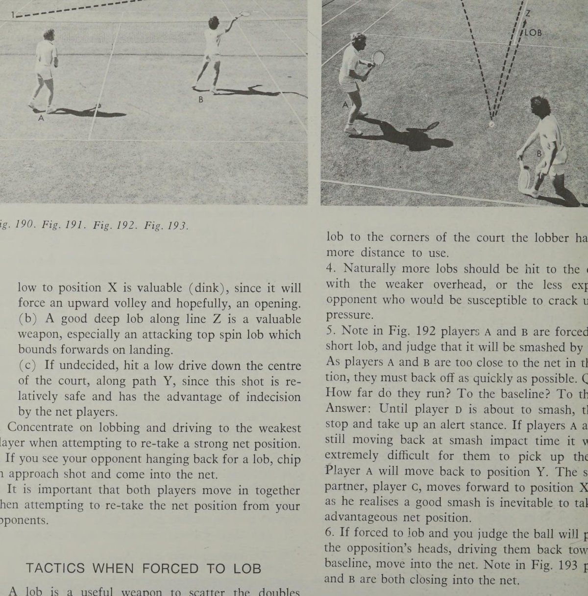
(b) Người nhận có lợi thế là do dự.
(c) Bóng đi qua phần thấp nhất của lưới.
2. Nếu bạn nhận được một quả bóng cao ở gần lưới (xem Hình 188), đừng bao giờ đánh bóng đến người chơi ở xa nhất về phía sau. (Anh ấy sẽ có nhiều thời gian hơn để quay trở lại thành công.) Sẽ có lợi hơn nếu:
(a) Đánh bóng 'xuống và xuyên qua' người chơi gần lưới nhất, dọc theo đường 2 tới tay vợt D, tốt nhất là đánh xuống về phía chân anh ta. Tránh đánh xuyên qua đối thủ của bạn ở độ cao ngang vai hoặc hông vì họ có thể may mắn đưa vợt vào cú đánh và đánh trả lại theo chiều ngang cho bạn. | (b) Đánh bóng vào các lỗ của sân dọc theo đường 1.
3. Nếu không có khoảng trống nào, hãy tung cú vô lê thẳng vào một tay vợt đang lưới, không vào hai bên của anh ta. Người chơi gần lưới nhất sẽ đánh quả trả bóng dễ dàng. Lưu ý trong Hình 184. Đánh nhẹ nhàng tất cả các quả bóng thấp (dưới mức lưới) vào chân của người chơi ở xa nhất. Đánh bóng cao tới chân đối thủ gần nhất. Cầu thủ c đánh những cú vô lê thấp đến vị trí - Z và những cú vô lê cao đến vị trí X và Y.
4. Nếu căng rộng và cố gắng đưa bóng qua tôi vào lưới, bằng mọi giá tránh đánh bóng đến gần nhất _
Hình 187. Ưu điểm của việc đánh một cú
‘ ‘ xuống giữa sân.
net man, anh ta sẽ làm rõ vấn đề. Đánh bóng cho tay vợt ở xa hơn hoặc lốp bóng vào lưới.
5. Áp sát nếu bạn đã đánh một cú đánh thấp tốt, tránh lùi gót; không bao giờ đánh hai cú vô lê từ cùng một vị trí.
6. Khi dồn lưới, hãy nhớ rằng lốp bóng hiếm khi dẫn đến chiến thắng sạch sẽ; hãy tìm mặt vợt mở rõ ràng và cú vung vợt hướng lên trên—điều này có nghĩa là một cú lốp bóng.
7. Một cú lốp bóng khá hữu ích trong việc đẩy lùi đối phương nếu họ đang lấn chiếm lưới. Một cú lốp bóng bất ngờ, đánh qua đầu đối thủ yếu hơn hoặc vào góc trái tay, sẽ giúp đội của bạn kiểm soát hoàn toàn lưới. Đừng đánh vô-lê một quả bóng mà bạn có thể đánh đi để giành chiến thắng. Người chơi nên thực hiện cú lốp bóng cao hoặc thấp hơn lưới. Bằng cách lốp bóng cao, bạn gần như đang buộc mình phải giành được điểm hai lần.
8. Cố gắng giữ bóng ở vị trí thấp dưới chân đối phương và chờ bóng lên cao rồi tung cú vô lê để tạo sơ hở. Hãy nhớ tính đến những điều sau:
(a) Quy luật về các góc (xem Hình 182 trong đó người chơi phải đặt mình ở góc có lợi nhất).
(b) Cú vô lê tiếp cận 45 độ (xem
Hình 189), trong đó người chơi A đã di chuyển về phía lưới ở góc 45 độ để tiếp xúc với bóng khi bóng vẫn còn ở trên cao. Bóng phải được đánh dọc theo đường 1, đến chân của người chơi c hoặc tới các lỗ của sân dọc theo đường 2.
(c) Phần thấp nhất của lưới nằm ở chính giữa.
9. Đánh vào người yếu nhất.
10. Một quả bóng được đánh giữa một cặp thường phải được thực hiện bởi đấu thủ thực hiện cú vô lê cuối cùng (vì anh ta đã 'bắt đầu' và tham gia vào cuộc đánh bóng), trừ khi có sự thỏa thuận chung khác đã được thực hiện. Ví dụ, có thể đã thống nhất rằng người chơi có khả năng thực hiện cú vô lê thuận tay sẽ thực hiện cú đánh.
Hình 188. Đánh những cú đánh dễ dàng vào chân đối thủ người chơi gần nhất hoặc đến sân khai mạc. CHIẾN THUẬT KHI BẠN CÓ LỆNH CỦA SNEG
1. Người chơi nên căn chỉnh mình ở giữa góc quay trở lại tốt nhất để đảm bảo phạm vi bao phủ sân hiệu quả. (Xem hình 182.)
2. Khi đối thủ ở cuối sân, hãy vô lê sâu để giữ chân họ ở đó, đừng đánh một cú vô lê ngắn để họ tấn công lưới; chơi để khai thác và đánh mạnh vào các góc trên quả bóng cao. (Lưu ý Hình 190.) Cầu thủ B có một cú sút dễ dàng và nên đánh vô-lê sâu đến lỗ 2 hoặc 3. Một khả năng khác là hướng cú vô lê đến vị trí 1.
3. Người đánh vô-lê mạnh hơn nên thực hiện tất cả các cú đánh vào giữa, trừ khi bạn có thỏa thuận khác với đồng đội của mình theo đó:
(a) tay vợt cuối cùng đánh bóng thực hiện cú vô lê thường thiếu quyết đoán ở giữa; (b) tay vợt có khả năng thuận tay sẽ đánh bóng.
4. Hiếm khi đánh một cú thả bóng là an toàn; một trong những đối thủ của bạn chắc chắn sẽ tiếp cận được bóng.
5. Chỉ rút lui về vạch cuối sân nếu thực sự cần thiết.
6. Tất cả các cú đập phải được thực hiện từ trên không trừ khi cú lốp bóng được đánh cao đến mức nó sẽ nảy ra phía trước vạch giao bóng.
7. Đó là một chiến lược có giá trị nếu để tay vợt có cú đập bóng tốt nhất chơi phần sân trái tay. Điều này sẽ giúp anh ta có thể đập vỡ tất cả các quả lốp bóng rơi vào giữa sân. CHIẾN THUẬT KHI ĐỐI THỦ CÓ LỆNH MẠNG
1. Luôn đánh bóng cho tay vợt ở gần đường cuối sân nhất; cú trả bóng này trong hầu hết các trường hợp sẽ không có lực đánh mạnh bằng khi so sánh với cú đánh của đồng đội ở gần lưới hơn. Ba lựa chọn thay thế sau đây có thể được nghiên cứu trong Hình 191.
(a) Đánh một cú sút góc chéo sân mềm và rộng và
Hình 189. Di chuyển về phía trước một góc 45° tới đấm đi một cú trả bóng cao.
Hình 190. Hình 191. Hình 192. Hình 193.
thấp đến vị trí X là có giá trị (dink), vì nó sẽ tạo ra một cú vô lê hướng lên trên và hy vọng sẽ có sơ hở.
(b) Một cú lốp bóng sâu tốt dọc theo đường Z là một vũ khí có giá trị, đặc biệt là một cú lốp bóng xoáy từ trên tấn công lao về phía trước khi tiếp đất.
(c) Nếu chưa quyết định, hãy đánh một cú đánh thấp xuống giữa sân, dọc theo đường Y, vì cú đánh này tương đối an toàn và có lợi thế là do người chơi trên lưới không quyết định.
2. Tập trung vào việc lốp bóng và lái xe về phía người chơi yếu nhất khi cố gắng chiếm lại vị trí lưới mạnh.
3. Nếu bạn thấy đối thủ của mình lùi lại sau một cú lốp bóng, hãy thực hiện một cú đánh tiếp cận và đi vào lưới.
4. Điều quan trọng là cả hai người chơi phải di chuyển cùng nhau khi cố gắng chiếm lại vị trí lưới từ đối thủ của bạn. CHIẾN THUẬT KHI BẮT BUỘC LOB
1. Một cú lốp bóng là vũ khí hữu ích để phân tán các cặp đôi ôm lưới quá chặt. Nó cũng có thể được sử dụng như một cú đánh phòng thủ, giúp một đội có thời gian để phục hồi ở vị trí có phạm vi bao phủ sân tốt, nếu bị buộc phải rời sân.
2. Một cú lốp bóng được sử dụng phổ biến hơn trong cách chơi thông thường, nhưng có thể được sử dụng khi trả giao bóng nếu:
(a) đối tác của người giao bóng có cú đập bóng yếu; (b) cú giao bóng (serve) quá mạnh, hoặc
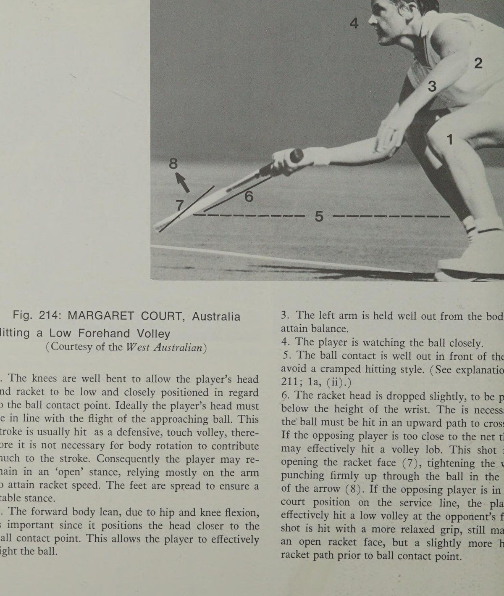
(c) nhằm gây bất ngờ và giữ cho người lưới không săn trộm quá thường xuyên.
3. Nên đánh lốp bóng xuống giữa sân với hy vọng khiến đối phương bối rối trong vài giây, hoặc về phía các góc sân, đặc biệt là góc trái tay. Bằng cách đánh một cú lốp bóng vào các góc của sân, người lốp bóng có khoảng cách xa hơn một chút để sử dụng.
4. Đương nhiên, đối thủ có phần trên cao hơn sẽ phải đánh nhiều cú lốp bóng hơn hoặc đối thủ ít kinh nghiệm hơn sẽ dễ bị bẻ gãy dưới áp lực.
5. Lưu ý trong Hình 192 người chơi A và B buộc phải đánh một cú lốp bóng ngắn và phán đoán rằng nó sẽ bị người chơi D đập vỡ. Vì người chơi A và B ở quá gần lưới trong tình huống này nên họ phải lùi lại càng nhanh càng tốt. Câu hỏi: Họ chạy được bao xa? Đến vạch cuối sân? Đến hàng rào? Trả lời: Đến khi người chơi D chuẩn bị đập thì họ dừng lại, vào thế cảnh giác. Nếu người chơi A và B vẫn di chuyển trở lại vào thời điểm va chạm với cú đập thì họ sẽ vô cùng khó khăn để bắt được cú đập. Người chơi A sẽ lùi về vị trí Y. Đồng đội của người đập bóng, người chơi C, tiến về vị trí X ngay khi anh ta nhận ra rằng một cú đập bóng tốt là điều tất yếu để chiếm một vị trí thuận lợi trên lưới.
6. Nếu buộc phải lốp bóng và bạn phán đoán, bóng sẽ vượt qua đầu đối phương, đẩy họ lùi về phía cuối sân, di chuyển vào lưới. Lưu ý trong hình 193 người chơi A và B đều đang tiến vào lưới, CHIẾN THUẬT KHI ĐỐI THỦ CÓ ~_ LOBBED
1. Nếu một cú lốp bóng đi qua đầu đối tác của bạn, cả hai bạn nên di chuyển về phía vạch cuối sân (xem Hình 193), - để duy trì đội hình song song quan trọng nhất. Trong mọi trường hợp, việc hỗ trợ đồng đội của bạn trong mọi trường hợp luôn là một chính sách tốt - trong trường hợp anh ấy đánh trượt hoặc đơn giản là không đủ nhanh để tiếp cận - quả bóng. Luôn đảm bảo rằng đối tác của bạn có khoảng trống - đủ để thực hiện một cú đánh. Tránh tập trung anh ấy quá nhiều.
2. Người chơi nên đuổi theo tất cả các quả lốp bóng bay qua đầu của họ _ rơi vào khu vực sân mà họ chịu trách nhiệm-_ 4 ible. Nếu một tay vợt không thể đạt được cú lốp bóng qua đầu, buộc đồng đội đuổi theo cú đánh của mình, cần phải tính đến những điều sau: (Xem Hình 194.) Cầu thủ D đã bị lốp bóng và không có cơ hội lấy lại bóng, anh ta nên gọi 'của bạn'; Đồng đội của anh ta, tay vợt c, sau đó sẽ giúp đỡ bằng cách đưa bóng xuống. Người chơi p phải băng qua khu vực sân mà người chơi c đã bỏ trống. Nếu không thì cả hai người chơi sẽ bao quát cùng một khu vực sân. Lý tưởng nhất là người chơi D đứng ở vị trí phía sau vạch giao bóng một chút. Từ vị trí trung tâm này, anh ta có thể áp sát vào lưới hoặc rút lui về phía cuối sân, tùy thuộc vào cú đánh của tay vợt c.
3. Khi buộc phải đuổi theo một cú lốp bóng về phía đường cuối sân, hãy lốp bóng cao về phía đường cuối sân của đối phương; điều này sẽ giúp họ tránh xa lưới và cho đối tác của bạn thời gian để chiếm một vị trí thuận lợi trên sân. Một cú đánh bóng rất rủi ro vì rất có thể đối thủ của bạn đã tiếp cận lưới. Nếu muốn lái xe, lái xe thấp ở giữa là tốt nhất.
4. Hầu hết người chơi thực hiện cú lốp bóng ngắn chạm vạch giao bóng, nhưng họ đánh cẩn thận hơn một chút khi đập bóng từ đường cuối sân. Một quyết định nhanh chóng sẽ được đưa ra khi bạn nhìn thấy một cú lốp bóng hướng về phía mình. Hầu hết các huấn luyện viên đều khuyên bạn nên thực hiện cú lốp bóng trên không nếu có thể, nếu không đối phương có thể giành quyền kiểm soát lưới. Tuy nhiên, những lựa chọn thay thế sau đây phải được xem xét cẩn thận. Người đập phá có nên:
(a) cố gắng thực hiện một cú đập khó từ trên không, hy vọng đưa bóng đi trước khi đối thủ kịp định vị? ~ (b) để bóng nảy lên và có nhiều thời gian để đánh một cú đập tốt mặc dù trong tình huống này Đối thủ sẽ có thời gian để định vị? Thông thường, tôi thích để một quả bóng lốp nảy lên nếu nó rơi xuống từ một độ cao lớn và chạm vào phần sân giao bóng. Nếu quả bóng được lốp bóng có quỹ đạo thấp và có khả năng tiếp đất ở đường cuối sân, tôi sẽ đánh nó từ trên không, nếu không đối thủ của bạn rất có thể sẽ chiếm thế tấn công nếu bạn rút lui về đường cuối sân.
5. Để xử lý các cú lốp bóng chắc chắn sẽ có hiệu quả gấp đôi, một cú đập bóng hiệu quả là điều quan trọng. Cú đập bóng là cú đánh mạnh mẽ nhất đối với cú lốp bóng.
6. Nếu bạn thấy đối tác của mình có thể thực hiện một cú lốp bóng tấn công, hãy áp sát vào lưới một chút, vì tay vợt đối phương có thể sẽ thực hiện một cú đánh phòng thủ yếu.
7. Đấu thủ trái tay (nếu thuận tay phải) phải đập tất cả các quả bóng được lốp bóng xuống giữa sân. CHIẾN THUẬT ĐÔI KHÁC BIỆT Chiến thuật cắt kéo Đây là một kỹ thuật trong đó người lưới săn trộm hoặc chặn quả trả giao bóng chéo sân, hoặc đối tác của người nhận chặn cú vô lê chéo sân đầu tiên của người giao bóng (server). Đây là một hoạt động tinh tế đòi hỏi sự hiểu biết và hợp tác đầy đủ của cả hai người chơi. Nó phải được luyện tập kỹ càng trước khi sử dụng trong tình huống thi đấu. (Xem Hình 195.) Người chơi A giao bóng cho cú đánh yếu nhất của người chơi D hoặc xuống đường giao bóng ở giữa. Ngay khi người chơi D bắt đầu vung bóng (không phải trước khi anh ta cam kết thực hiện cú đánh này), người chơi lưới B sẽ di chuyển theo hướng của đường Y để chặn quả trả giao bóng, đánh bóng vào chân người chơi c hoặc tới phần sân thi đấu. Máy chủ A giả vờ chạy tuyến đường thông thường lên lưới nhưng nhanh chóng cắt ngang đến vị trí X để che khu vực mà người chơi B đã bỏ trống. Cầu thủ đối tác của người trả giao bóng (receiver) c nhận ra việc đánh chặn là không thể tránh khỏi, lùi lại dọc theo đường 2 để tạo cho mình cơ hội tốt hơn để trả lại thành công cú vô lê của tay vợt B. Chiến thuật cắt kéo rất hữu ích trong:
(a) phá vỡ nhịp điệu của một đấu thủ khéo léo trong việc trả giao bóng; (b) tận dụng lợi thế dịch vụ yếu kém;
ĐÓNG FIST ; Ở LẠI (c) nói chung là gây bất ổn cho phe đối lập thông qua việc gây ra sự thiếu quyết đoán; (d) cung cấp chiến thuật mới nếu bạn bị đánh nặng. Một số điểm về kéo (a) Người chơi săn trộm không nên rời khỏi ngõ của mình quá sớm; anh ta phải đợi cho đến khi đối thủ thực hiện cú sút rồi di chuyển nhanh qua lưới.
(b) Người chơi săn trộm phải đưa bóng đi cho cú ghi điểm trực tiếp. Đối tác của kẻ săn trộm phải biết chuyện gì đang xảy ra để có thể chạy qua bao quát khu vực sân mà kẻ săn trộm để lại, nếu không cả hai người chơi sẽ ở một bên sân. Cho dù kẻ săn trộm có tung cú vô lê dễ dàng đến đâu thì đồng đội của anh ta cũng phải di chuyển vào khu vực mà kẻ săn trộm đã bỏ lại. Tín hiệu bằng lời nói hoặc tín hiệu bằng tay có thể được kẻ săn trộm gửi đến người giao bóng. (Xem Hình 196 và 197.) Những tín hiệu này khá công bằng, miễn là việc chơi không bị cản trở và không bị mất thời gian.
(c) Như đã đề cập trước đó, chiến thuật cắt kéo khá hữu ích. Hầu hết các cặp đánh đôi chỉ sử dụng phương pháp cắt kéo để chặn các cú đánh một cách tiết kiệm và chỉ trong trường hợp quả giao bóng đầu tiên tốt hoặc quả giao bóng trả lại xuất sắc.
(d) Các đồng đội nên vượt qua nhanh chóng khi sử dụng chiến thuật cắt kéo; người giao bóng phải thực hiện cách tiếp cận mạng bình thường sau đó băng qua nhanh chóng. Nếu người giao bóng di chuyển quá sớm, thao tác có thể bị cản trở bởi người nhận có tư duy nhanh. Đội hình song song Điều này liên quan đến người giao bóng (server) và đồng đội của anh ta đứng trên cùng một nửa sân. Trong tình huống này, người giao bóng phải giao bóng từ điểm đánh dấu dịch vụ trung tâm, nếu không việc trả lại dịch vụ ở tuyến cuối sẽ là một vấn đề dễ dàng đối với người nhận. (Xem Hình 198.) Người giao bóng, người chơi A đánh bóng xuống giữa sân đến vị trí số 1, và tiếp cận lưới dọc theo đường 2. Điều này buộc người trả giao bóng (receiver) phải đánh xuống đường dọc hoặc lốp bóng đối tác của người giao bóng (server), người chơi B. Một cú giao bóng (serve) trái tay của người chơi D sẽ khiến đội xử lý căng thẳng vì việc trả bóng từ đường thẳng của người chơi D sẽ tương đối dễ dàng. Người chơi A và B sẽ có quá nhiều sân để có thể đạt được lợi thế như vậy. Tandem có thể được sử dụng để che giấu hoặc khai thác điểm yếu:
(a) Nếu người giao bóng (server) có cú trái tay (backhand) yếu, thì cả người giao bóng (server) và đối tác có thể chiếm vị trí trên cùng một phía sân khi giao bóng cho phía sau- Hình 194. Thích ứng với một cú lốp bóng tốt.
Hình 195. Hình dạng kéo khi
Hình 196. Tín hiệu cho người giao bóng trong hình kéo hình thành (ở lại).
bên tay, buộc người giao bóng (server) phải trả bóng về phía thuận tay của người giao bóng (server).
(b) Tandem có thể phá vỡ một pha trả giao bóng chéo sân xuất sắc bằng cách buộc người nhận giao bóng xuống vạch hoặc lốp bóng. Thỉnh thoảng kết hợp đội hình song song với đánh chặn cắt kéo là một ý tưởng khá hay. Động tác này trở nên khá phức tạp và cần phải luyện tập nhiều trước khi sử dụng trong tình huống thi đấu. (Xem
Máy chủ A giao bóng cho người chơi D và di chuyển ngang qua để che khu vực sân bị bỏ trống bởi đối tác săn trộm của anh ta, người chơi B. Như trong tình huống song song thẳng, người giao bóng Không được di chuyển để che cho người chơi B quá sớm nếu không người nhận sẽ đoán trước được việc người chơi B sẽ đánh chặn. Lợi nhuận tốt nhất của người nhận D là:
(a) xuống dòng dọc theo đường dẫn 1; (b) một cú lốp bóng sâu dọc theo đường 2. Các bài tập được thiết kế đặc biệt để cải thiện lối chơi đánh đôi được đề cập trong Chương 4. BA BÀI tập GIÚP NGƯỜI CHƠI PHÁT TRIỂN KHẢ NĂNG ĐỌC TRÒ CHƠI Đánh giá đường bay và độ sâu sân của quả bóng sắp tới. (Xem Hình 200.) Huấn luyện viên, người chơi B, đứng ở vị trí trung tâm dọc theo đường giao bóng cuối cùng. Một rổ bóng ở gần đó giúp anh ta có thể đánh bóng liên tục về phía học trò của mình, tay vợt A. Cầu thủ A vào tư thế cảnh giác ở vị trí tương tự ở phía đối diện của lưới. Huấn luyện viên bắt đầu bài tập bằng cách nảy bóng và vuốt bóng xuống đất:
(a) gần bìa vợt 1. Người chơi A nên để quả bóng này nảy lên và đánh trả như một cú đánh thuận tay.
(b) gần bìa vợt 2. Người chơi A nên thực hiện cú trả bóng này bằng một cú vô lê nửa thuận tay.
(c) như được ghi chú trong Hình 200, dọc theo đường X đến vị trí 3, phía sau người chơi a. Người chơi a nên bước về phía trước và thực hiện cú trả bóng này như một cú vô lê thuận tay. Ban đầu, huấn luyện viên có thể chỉ định cú đánh tốt nhất cần thiết để trả bóng. Ví dụ, anh ta có thể gọi “cú vô lê thuận tay” trước khi đánh bóng cho học sinh. Cả thuận tay và trái tay nên được kết hợp vào bài tập này. Huấn luyện viên có thể tiến bộ và đánh bóng ngẫu nhiên vào bất kỳ vị trí nào trong ba vị trí này, buộc người chơi phải chọn cú đánh tốt nhất để trả bóng hiệu quả nhất.
Hình 197. Tín hiệu cho người giao bóng trong hình kéo đội hình (đánh chặn).
Hình 198. Phục vụ song song xem, TRẢ LẠI DỊCH VỤ nó vào bộ nhớ. Quyết định cú đánh hiệu quả nhất (Xem hình 201.) Huấn luyện viên, tay vợt A, đứng gần đường biên đánh đơn bên phải, cách lưới ba mét (ba và một phần tư thước Anh). Một rổ bóng ở gần đó cho phép anh ta đánh bóng liên tục cho học trò của mình, tay vợt B. Cầu thủ B vào thế cảnh giác ở vị trí trung tâm dọc theo đường giao bóng cuối phía đối diện của lưới. Huấn luyện viên bắt đầu bài tập bằng cách tung một quả bóng lên và ném nó lên không trung để học sinh đập vỡ. Ban đầu, huấn luyện viên sẽ chỉ định cho học sinh kiểu đập bóng tốt nhất để trả bóng hiệu quả. Sau đó, huấn luyện viên có thể thực hiện nhiều kiểu lốp bóng khác nhau, cho phép học viên tự đánh giá cú đập bóng hiệu quả nhất:
(a) một cú lốp bóng cao lên không trung nhưng ngắn, trong trường hợp đó người chơi nên để bóng nảy lên trước khi đập nó. (Di chuyển dọc theo đường dẫn 1.)
(b) một cú lốp bóng sâu, bay thấp, trong trường hợp đó người chơi nên đập bóng trực tiếp từ trên không. (Di chuyển dọc theo đường 2.) Đọc các cú đánh của đối thủ (Xem Hình 202.) Người chơi B đứng ở vị trí trung tâm dọc theo đường cuối sân. Một rổ bóng được áp dụng gần bằng cách cho phép cô ấy đánh bóng liên tục đến tay vợt đối tác A. Cầu thủ A giữ tư thế cảnh giác ở vị trí sân trung tâm ở phía đối diện của lưới, một mét (chỉ hơn một thước Anh) ở phía trước đường giao bóng cuối cùng. Chín tấm bảng có màu sắc rực rỡ (một mét vuông) được đánh số từ 1 đến 9 được đặt trên khu vực sân của người chơi B. Các tấm bảng - được đặt trên khu vực sân theo thứ tự số xác định - và vị trí của sân. Người chơi A nghiên cứu cách bố trí này và người chơi B bắt đầu bài tập bằng cách chỉ định số bảng, nảy một quả bóng trên sân và đánh bóng về phía người chơi A. Người chơi A tung quả bóng vào, cố gắng đánh nó vào bảng được chỉ định. Bài tập này cho phép người chơi A thực hành kiểm soát bóng bằng cách đấm những cú vô lê của mình vào các phần được chỉ định của cuộc tập trận). Bài tập này có thể được sửa đổi để cho phép người chơi thực hành các cú đánh nền, đập bóng hoặc bất kỳ kỹ thuật nào khác. Một buổi thảo luận để giúp người chơi phát triển khả năng đọc lối chơi có thể là một cuộc thảo luận có giá trị sau đây: Người chơi c quay phim tất cả các cú đánh đã thực hiện trong phần diễn tập. Bộ phim nên được lấy từ. quan điểm của người nhận và do đó là người chơi tôi phim chứa người chơi A, B và tê liệt Khi chiếu phim cho học sinh của mình.
Hình 200. Hình 201.
ba Oe ty en ay 5 gy SG Swe omaeN me amas saee Cy} as J a [oT nên dừng máy chiếu ngay trước khi tay vợt a Sau khi đánh giá phù hợp, huấn luyện viên nên tiếp xúc lại với bóng. Sau đó, huấn luyện viên có thể yêu cầu cho chạy đoạn phim, thảo luận về các gợi ý khác nhau mà học sinh viết lên một tờ giấy, bảng giúp chỉ ra hướng của cú đánh. số quả bóng sẽ đánh. Sau đó, bộ phim có thể là Ví dụ trong Hình 202, người chơi a vừa đấm một cú tiếp tục và dừng lại ở điểm va chạm, và chuyền về phía bảng 6. Ở giai đoạn cụ thể này của điểm va chạm ngay sau đó. vô-lê các tín hiệu sau đây là hiển nhiên. Bằng cách này mỗi học sinh sẽ có ba số (a) Điểm tiếp xúc bóng diễn ra theo ghi trên giấy của anh ta. (Hy vọng người chơi sẽ chống được thân người. _ dự đoán hướng bắn sớm và cả ba (b) Cổ tay nằm ngửa. các con số sẽ giống nhau.) Khi đó, huấn luyện viên nên (c) Thế đứng của cơ thể được đóng lại. Lưu ý vị trí hoàn thành phim, dừng máy chiếu là hông và bàn chân. bóng tiếp xúc với bảng. Sau đó, học sinh có thể phát triển khả năng đoán trước câu trả lời của người chơi lần đầu tiên để xác định sớm các cú đánh của người chơi lần đầu tiên, điều đó sẽ giúp anh ta có thể phân tích chính xác hướng của cú đánh. đúng nơi, đúng lúc, thường xuyên hơn. :
Chiến Thuật Đánh Đôi Nam Nữ
7. Chiến thuật đôi nam nữ Đôi nam nữ thường được coi là ‘sự kiện vui vẻ’ của một giải đấu. Đó là thời điểm mà những áp lực khắt khe của nội dung đánh đơn và đánh đôi có thể được quên đi và trận đấu tennis được tận hưởng trong bầu không khí thoải mái hơn. Có tiềm năng, đôi nam nữ có giá trị xã hội vượt trội. Chỉ có một số ít các sự kiện thể thao mà cả hai giới đều tham gia bình đẳng trong sự cạnh tranh thân thiện nhưng đầy tinh thần. Trong giải đấu đôi nam nữ, người chơi chơi để tận hưởng trận đấu và đám đông thích thú xem phụ nữ trao đổi đòn với những người đàn ông hàng đầu với hy vọng nhìn thấy cái gọi là 'phái yếu hơn' vượt qua đối thủ nam. Tuy nhiên, nhiều tay vợt hàng đầu, cả nam và nữ sẽ tránh tham gia nội dung đôi nam nữ khi thi đấu với lịch thi đấu dày đặc. Họ lập luận rằng số giờ thi đấu thêm có thể đánh vào nguồn dự trữ thể chất của họ và do đó ảnh hưởng đến cơ hội của họ trong các giải đấu đơn và đôi danh giá hơn. Đôi nam nữ có thể được chia thành hai loại: Trò chơi xã hội. Hạng mục này bao gồm gia đình hoặc nhóm bạn thân thích tập luyện và niềm vui không thể tránh khỏi khi tham gia một hiệp đấu đôi nam nữ. Trong những trường hợp này, trò chơi được đặc trưng bởi những cú giao bóng (serve) nhẹ nhàng và lời xin lỗi đối với bất kỳ cú đánh nào của người chiến thắng sạch sẽ. Miễn là cả bốn người đều vui vẻ và hoàn toàn tham gia vào trải nghiệm thì điều đó thật bổ ích. Đối với những mục tiêu này, việc ai giao bóng trước hay ai thực hiện tất cả các cú đập không có ý nghĩa gì. Cấp độ giải đấu. Thể loại này liên quan đến một sự thay đổi cơ bản từ trang phục xã hội. Ý tưởng vẫn là cạnh tranh để tận hưởng nhưng nhấn mạnh hơn vào chiến thắng. Vì vậy, chiến thuật đóng một vai trò quan trọng ở cấp độ này. Các điểm chiến thuật được trình bày trong chương này liên quan đến việc thi đấu ở cấp độ giải đấu. Chiến thuật giành chiến thắng trong nội dung đôi nam nữ về cơ bản giống như những chiến thuật được thảo luận trong phần ‘Chiến thuật đánh đôi’ ở chương trước. Vì phong cách hung hãn hơn nên nam giới thường chiếm ưu thế hơn trong nội dung đôi nam nữ. Giả sử rằng nữ yếu hơn trong bộ tứ (điều này đúng trong hầu hết các trận đấu), trận đấu nên được diễn ra như thể đó là một trận đấu đôi thông thường với nhận thức rằng mỗi đội có một tay vợt yếu hơn. Người đàn ông phải động viên bạn tình của mình bằng lời nói trong suốt trận đấu để cô ấy cảm nhận được một bánh răng quan trọng trong cỗ máy đôi nam nữ. Thật không hợp lý khi một người đàn ông hoàn toàn thống trị cuộc chơi. Anh ta sẽ tự đưa mình vào thế bế tắc về mặt chiến thuật và thể lực nếu không cho phép đồng đội của mình hỗ trợ. Để giúp đỡ một cách hiệu quả, người phụ nữ phải học cách chơi thành thạo các 'cú đánh đôi', đặc biệt là cú vô lê, đập bóng và lốp bóng. Dựa trên những nhận xét này, chiến thuật đôi nam nữ sau đây được đề xuất để giúp giành chiến thắng trong các trận đấu. Thành viên nam của đội đôi nam nữ nên giao bóng trước (trừ khi đối tác của anh ta có cú giao bóng (serve) mạnh hơn và đáng tin cậy hơn) vì người giao bóng (server) đầu tiên sẽ có Cơ hội giao bóng nhiều lần hơn trong trận đấu. Về mặt tâm lý, điều quan trọng là phải 'bắt được đối thủ' bằng cách giành chiến thắng trong vài trận đầu tiên. Tuy nhiên, điều quan trọng là người phụ nữ phải giữ chức vụ của mình. Để làm được điều này, cô ấy phải phát triển cú giao bóng (serve) đầu tiên có vị trí sâu và nhất quán. Điều này sẽ cho phép đối tác của cô ấy săn trộm một cách tự tin và hy vọng đánh được những cú vô lê chiến thắng và đập vào lưới. Vì vậy, thường trong các trận đấu đôi nam nữ, khoảng cách giữa thắng và thua cũng rất hẹp như việc thua ván giao bóng của nữ. Trong khi người giao bóng (server) nữ đang sử dụng mọi mưu mẹo của mình để giành chiến thắng trong các ván giao bóng, đối phương cũng phải nhận ra rằng đây là cơ hội dễ dàng nhất để nghỉ giao bóng. Người chơi maie nên đánh trả an toàn nhưng mạnh mẽ khi nữ đối phương đang giao bóng và hướng họ quay lại với cô ấy. Anh ta nên khuyến khích đồng đội của mình thực hiện những cú trả bóng chéo sân rộng hoặc lốp bóng với tay vợt nam trên lưới đối phương. Nếu một đấu thủ nữ không thể thực hiện cú giao bóng (serve) hiệu quả, đối tác nam của cô ấy nên bù đắp bằng cách đứng lùi xa lưới hơn bình thường đối với đồng đội của người giao bóng (server). Điều này sẽ đặt anh ta gần hơn với cú đánh phòng thủ có thể xảy ra, và do đó anh ta có thể hỗ trợ tốt hơn cho đồng đội của mình. Nếu nữ giao bóng có trái tay yếu, đội có thể áp dụng đội hình song song khi giao bóng sang phần sân bên trái hoặc trái tay. (Xem Hình 203.) Điều này giúp đảm bảo rằng cô ấy (người chơi A) đánh được nhiều cú thuận tay (forehand) hơn khi quả giao bóng trả lại (từ người chơi B) phải được đánh dọc theo đường 1. Tuy nhiên, để chống lại chiến thuật này, đối phương đôi khi có thể lốp bóng qua đầu người chơi trên lưới (dọc theo đường 2). _ :b
Nói chung, đấu thủ nam nên chơi phần sân bên trái hoặc trái tay, cho phép đồng đội của mình chơi phần sân bên phải hoặc thuận tay. Thứ nhất, bằng cách chơi ở phía bên trái (xem Hình 204), nam (người chơi A) có thể thực hiện hầu hết các cú đập bóng, đặc biệt là những cú lốp bóng cao đánh xuống giữa sân. Bằng cách này, anh ta bao phủ 3/4 sân để đập bóng vào lưới đối phương. Cú đập của người chơi A phải hướng về phía nữ đối phương B). _ Thứ hai, hầu hết phụ nữ thích đánh thuận tay hơn và do đó họ cảm thấy tự tin hơn ở bên phải. Thứ ba, nam có thể đối phó tốt hơn với áp lực phải trả bóng ở một điểm quan trọng và hầu hết điểm của trận đấu được quyết định khi người giao bóng (server) abe giao bóng sang phần sân bên trái. Một pha phối hợp đôi nam nữ tốt sẽ luôn cố gắng- _ đánh bóng về phía người chơi nữ : : của đối phương ở cơ hội tấn công đầu tiên. Tuy nhiên, đối với những quả bóng phải được trả lại một cách an toàn, đó cũng là một chiến thuật tốt để khiến tay vợt nam đối phương che chắn càng nhiều mặt đất càng tốt. Ví dụ về cách 4 này. áp lực có thể được áp dụng bao gồm: > (a) Chip giao bóng trở lại sân buộc anh ta phải chạy rộng. Thực hiện cú đánh tiếp theo bằng một cú lốp bóng cao qua đầu đối tác, buộc anh ta phải lùi về vạch cuối sân. .
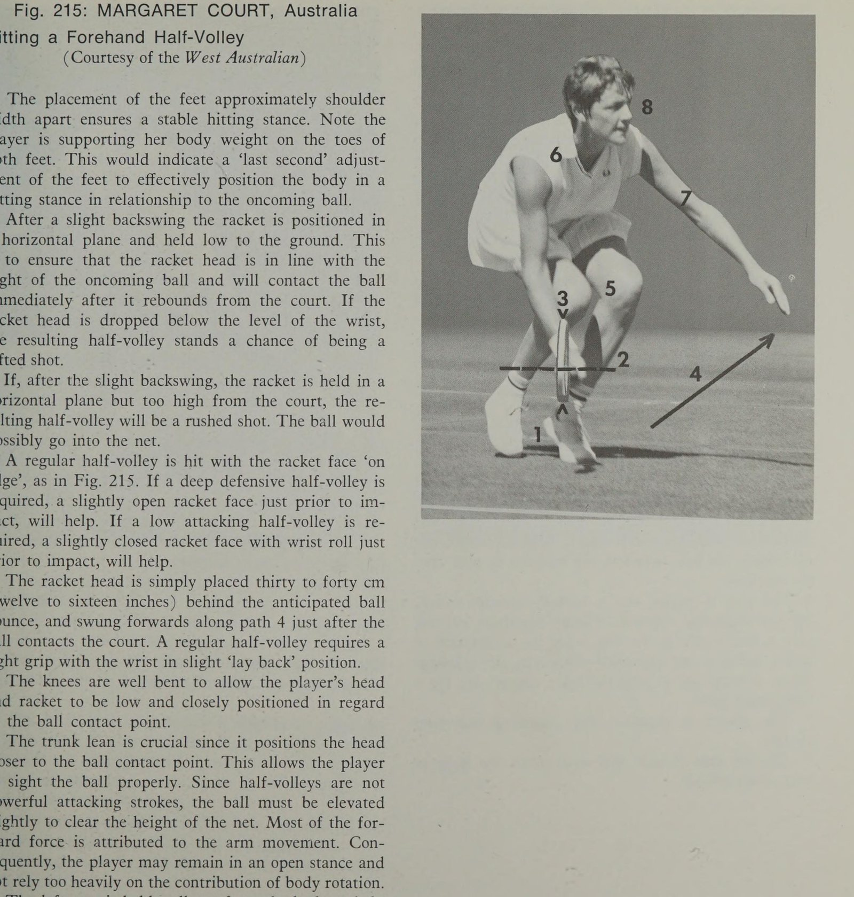
Hình 203. Hình 204.
ghi bàn quá nhanh sau cú giao bóng (serve) của anh ấy. (Để giúp chống lại tình huống này nếu nó được sử dụng liên tục, đối tác của người giao bóng (server) có thể đặt mình ở vị trí xa lưới hơn một chút.) Nếu đấu thủ nam đối phương liên tục cướp quả trả giao bóng của đối tác nữ của bạn, hãy khuyến khích cô ấy đánh một cú lốp bóng trả giao bóng xuống con hẻm. Thỉnh thoảng đánh lái bên lề là một chiến thuật tốt nhưng tỷ lệ bắn thấp. Một cú lốp bóng có sức mạnh bất kỳ, đánh xuống vạch sẽ giành được một điểm nếu nam đối phương rời khỏi sân của mình với hy vọng chặn được quả giao bóng. Đó là một chiến thuật hữu ích nếu thỉnh thoảng đánh một cú về phía rìa sân mà nam đối phương đang che chắn. Nó đặc biệt hiệu quả nếu anh ta có xu hướng săn trộm những cú đánh trúng đối tác của mình. Sau đây là những gợi ý được đề xuất cho các tình huống khác nhau:
(a) (Xem Hình 205.) Nếu cả hai người chơi đối phương đều ở vị trí cách đều nhau với lưới, cú công bóng hoặc cú lốp bóng tiếp theo phải được đánh về phía hoặc qua người chơi nữ. Lưu ý rằng người chơi nam B đã đánh một cú công bóng thuận tay tới người chơi đối thủ c (dọc theo đường 1). Người chơi c nên tung cú vô lê về phía người chơi A (dọc theo đường 2).
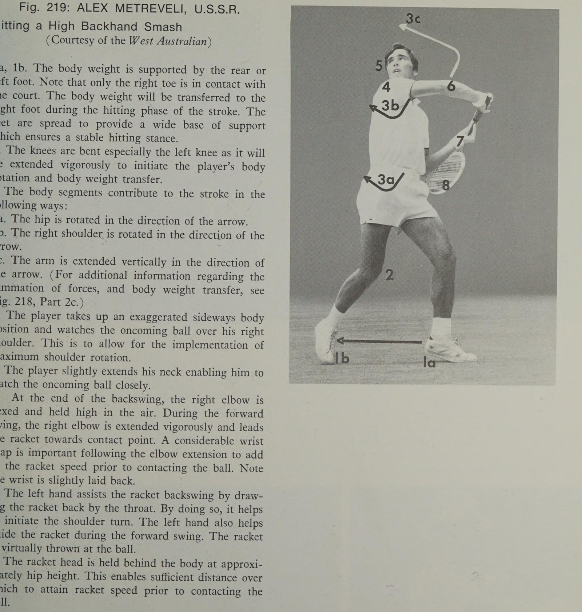
(b) Cầu thủ nữ không nên cố gắng đánh hoặc liên tục cố gắng đánh vô-lê về phía tay vợt nam đối phương. Một 'người chiến thắng' có thể làm nên điều kỳ diệu cho cái tôi nhưng tỷ lệ phần trăm cho thấy đội đó thua ba trận trong quá trình đó.
(c) Khi buộc phải thực hiện một cú lốp bóng phòng thủ cao, hãy đảm bảo bóng tiếp đất tốt vào khu vực sân mà tay vợt nữ đối phương đang che chắn. (Điều này có thể gây ra sự do dự về việc ai sẽ thực hiện nó hoặc hy vọng sẽ buộc người chơi nữ phải thực hiện cú đập.)
(d) Giả sử cả hai tay vợt đối phương bị buộc phải áp dụng các vị trí phòng thủ ở đường cuối sân. Ở cơ hội đầu tiên, đội của bạn phải thực hiện cú đánh tiếp cận về phía tay vợt nữ đối phương và tiến về phía trước để chiếm vị trí lưới thuận lợi.
(e) Người chơi nữ phải ở vị trí gần lưới trong khi đối tác của mình đang giao bóng. Động thái này sẽ ngăn cản đối phương đánh trả theo hướng của cô ấy. Nếu đối phương tấn công về phía cô ấy, cô ấy sẽ ở vị trí tốt hơn để đảm bảo thực hiện cú vô lê thành công. Nếu tay vợt nữ bắt vô lê kém thì nên chơi gần lưới hơn để ít có nguy cơ sút trượt. Nếu cô ấy không nhanh nhẹn lắm, đối tác nữ nên ở gần đường biên đôi hơn. Để tạo thành một pha phối hợp đôi nam nữ tốt, đối tác nữ phải có khả năng tung cú vô lê và đập bóng một cách tự tin. Một đội đôi nam nữ có cả ph Net
Bài Học Đẳng Cấp Từ Các Huyền Thoại & Bảng Thuật Ngữ Toàn Diện
8. Chúng ta có thể học được gì từ phần giới thiệu của các nhà vô địch Mười bốn bức ảnh hành động sau đây của các tay vợt quốc tế đã được phân tích và đưa ra các nhận xét liên quan về kỹ thuật (những bức ảnh này được đề cập chi tiết hơn trong chương về cơ sinh học). Các nhận xét được giới hạn ở các kỹ thuật cụ thể được nhấn mạnh trong mỗi bức ảnh và không nhằm mục đích phân tích toàn bộ nét vẽ. Chương này sẽ khuyến khích người đọc xem xét một cách phân tích các bức ảnh tennis có thể trở thành công cụ hỗ trợ học tập có giá trị, khiến chúng trở thành nguồn đánh giá cho việc quan sát quan trọng về các kỹ thuật và phong cách khác nhau. Các ví dụ cho biết lượng thông tin mà người quan sát có thể thu được từ các bức ảnh. Ở cuối chương có thêm sáu cảnh hành động để người đọc xem xét.
Hình 206: KAZUKO SAWAMATSU, Nhật Bản
Đánh một cú công bóng thuận tay thông thường (Được phép của Tây Úc) la, 1b. ‘trọng lượng cơ thể anh ấy đã chuyển từ chân phải, la, sang chân trái, 1b. Lưu ý:
(1) Chỉ có ngón chân phải tiếp xúc với mặt sân, còn toàn bộ bàn chân trái đặt vững chắc trên mặt sân để đỡ trọng lượng cơ thể.
(ii) Bàn chân dang rộng bằng vai để tạo ra một bệ đỡ rộng đảm bảo tư thế đánh bóng ổn định, (iit) Ngón chân phải tiếp xúc với mặt sân nhằm mục đích ổn định và giúp bắt đầu chuyển động nhanh của cơ thể về phía cú đánh tiếp theo.
2. Đầu gối trái cong khi nhận trọng lượng cơ thể, điều này giúp đảm bảo:
(i) chuyển trọng lượng kéo dài (1a đến 1b), (ii) tăng độ dài của cú vung đầu vợt theo hướng đánh dự định, (iii) đường đi ngang của vợt ngang bằng với điểm tiếp xúc của bóng.
3. Điểm tiếp xúc bóng ngang bằng với bàn chân trước. Các phần cơ thể góp phần vào cú đánh theo những cách sau. 4a. Hông được xoay theo hướng mũi tên. 4b. Vai được xoay theo hướng mũi tên. 4c. Cánh tay gập ngang theo hướng mũi tên. Để đạt được hiệu quả sử dụng tối đa các phần cơ thể khi vuốt bóng, các chuyển động 4a, 4b và 4c phải diễn ra theo đúng trình tự. Chúng cũng phải hoạt động trong quá trình chuyển trọng lượng cơ thể từ la sang 1b. Ví dụ: nếu 4c xảy ra trước khi trọng lượng cơ thể chuyển từ la sang 1b, hoặc trước 4a và 4b, thì cú đánh sẽ chỉ được đánh bằng cánh tay. Nếu các chuyển động 4a, 4b và 4c xảy ra đúng thời điểm nhưng trước khi trọng lượng cơ thể chuyển từ 1a sang 1b thì chuyển động cơ thể về phía trước ít đã góp phần tạo ra cú đánh.
5. Tay siết chặt vợt trong quá trình vung vợt về phía trước. Cổ tay được khóa và ở tư thế nằm ngửa (mở rộng), giúp đảm bảo điểm tiếp xúc bóng sớm. Đầu vợt ngang bằng hoặc cao hơn cổ tay một chút. Vị trí vợt này giúp loại bỏ:
(i) nét hất, nét nâng cao; và cả (ii) vung đầu vợt phía dưới hoặc ngang qua đường bay của quả bóng đang đến gần. J
6. Mặt vợt 'ở rìa' trong quá trình vung vợt về phía trước và được giữ ở cùng độ cao với điểm tiếp xúc bóng. Điều này giúp đảm bảo một cú vung vợt mượt mà và kéo dài. Cú đánh sau phải đặt vợt ở phía sau - cơ thể để có đủ thời gian và khoảng cách để đạt được - tốc độ vợt trước khi tiếp xúc với bóng. —
7. Trong khi vung vợt về phía trước, vợt được giữ cách cơ thể một khoảng bằng toàn bộ cánh tay. Điều này đảm bảo đòn đánh dài với điểm tựa ở khớp vai, do đó cho phép tạo ra tốc độ vợt lớn hơn.
8. Cầu thủ thể hiện sự tập trung tốt bằng cách quan sát bóng thật kỹ.
9. Cổ và hông gập về phía trước để đặt đầu gần điểm tiếp xúc bóng hơn. Điều này giúp người chơi nhìn bóng đúng cách. ~ :
10. Cánh tay trái được giữ cách xa cơ thể để giúp đạt được tư thế đánh cân bằng. _
Hình 207: KAZUKO SAWAMATSU, Nhật Bản
Đánh một cú công bóng thuận tay cao (Được phép của Tây Úc) Những sửa đổi sau đây là cần thiết khi đánh _một quả bóng nảy cao ở phía thuận tay.
1. Việc uốn cong đầu gối không rõ rệt vì chuyển động vợt ngang thường phải diễn ra ở độ cao ngang vai hoặc đầu. Một đầu gối phóng đại. uốn cong sẽ buộc người chơi phải đánh bóng theo đường đi xuống của nó hoặc ở một vị trí khó xử trên độ cao đầu. _ 2. Thế đứng của cơ thể ‘cởi mở’ và thẳng đứng hơn vì rất khó thực hiện thành công động tác xoay cơ thể khi đánh bóng có độ nảy cao. Tư thế mở cho phép vung tay không hạn chế.
3. Đối với các cú đánh trên mặt đất, việc vung vợt về phía sau diễn ra ở mức điểm tiếp xúc bóng dự kiến để đảm bảo một cú vung vợt trơn tru, đòi hỏi phải điều chỉnh ở mức tối thiểu. ; z
4. Đầu được đặt gần phương thẳng đứng hơn để người chơi có thể nhìn thấy bóng một cách chính xác.
Hình 208: KEN ROSEWALL, Australia
Đánh một cú công bóng trái tay cắt lát (Được phép của Tây Úc) la, 1b. Trọng lượng cơ thể sẽ chuyển từ chân trái la, sang chân phải 1b. Lưu ý rằng tại thời điểm chụp ảnh:
(1) Trọng lượng cơ thể gần như được hỗ trợ hoàn toàn bởi bàn chân trái (1a). Ngón chân phải (1b) là bộ phận duy nhất của bàn chân phải tiếp xúc với sân.
(ii) Bàn chân dang rộng để tạo chỗ dựa rộng rãi theo hướng chuyển động dự định. Điều này đảm bảo tư thế đánh ổn định. 2a. Hông sẽ được xoay theo hướng mũi tên. 2b. Vai sẽ được xoay theo hướng mũi tên. 2c. Cánh tay sẽ được mở rộng theo chiều ngang theo hướng mũi tên. Để đạt được hiệu quả sử dụng tối đa các phần cơ thể khi vuốt bóng, các chuyển động 2a, 2b và 2c phải diễn ra theo đúng trình tự. Chúng cũng phải hoạt động trong quá trình chuyển trọng lượng từ 1a sang 1b.
3. Cầu thủ đã 'cuộn' vào tư thế nghiêng người với vai phải hướng về phía lưới. Người chơi đang nhìn qua vai mình vào quả bóng đang tới. Vị trí này cho phép xoay vai tối đa.
4. Trong khi vung vợt về phía trước, vợt sẽ được giữ cách cơ thể một khoảng bằng toàn bộ cánh tay với điểm tựa ở khớp vai. Điều này đảm bảo đòn bẩy đánh dài và do đó cho phép tạo ra tốc độ vợt lớn hơn. Bởi vì cẳng tay được mở rộng ở khuỷu tay trong quá trình vung bóng về phía trước, nên người chơi có thể dễ dàng duy trì cánh tay thẳng trong quá trình thực hiện cú đánh tiếp theo. Tuy nhiên, trong quá trình vung vợt về phía trước sau khi tiếp xúc với bóng để thực hiện cú công bóng thuận tay, cẳng tay có xu hướng uốn cong tự nhiên ở khuỷu tay. Điều này làm cho việc duy trì một cuộc theo dõi vũ trang thẳng kéo dài trở nên khó khăn hơn.
5. Bàn tay siết chặt cán vợt trong quá trình vung vợt về phía trước để đảm bảo sự tiếp xúc chắc chắn giữa bóng và vợt. Mông vợt hướng về vùng tiếp xúc bóng; điều này đảm bảo rằng đầu vợt thẳng hàng với đường bay của quả bóng đang đến gần. Đầu vợt ngang bằng hoặc cao hơn cổ tay. Điều này giúp loại bỏ:
(i) nét hất, nét nâng cao; và cả (ii) vung đầu vợt theo đường bay của quả bóng đang đến gần.
6. Tay trái hỗ trợ việc vung vợt về phía sau bằng cách kéo cổ vợt về phía sau. Khi làm như vậy, nó cũng giúp bắt đầu việc xoay vai. Tay trái cũng giúp hướng dẫn vợt trong quá trình vung vợt về phía trước. Sau đó, nó được giữ cách xa cơ thể để giúp đạt được tư thế đánh cân bằng. .
7. Hướng vung vợt về phía trước dọc theo đường gãy. Vợt và cánh tay di chuyển như một đơn vị duy nhất. Vợt vung xuống từ phía trên khu vực tiếp xúc bóng và tạo ra một đường cắt vào bóng. Khi áp dụng lát cắt, quả bóng trượt trên dây và ‘treo’ trên dây trong thời gian dài hơn. Điều này làm tăng khả năng kiểm soát cú đánh.
8. Cắt thêm bằng cách vung vợt úp mặt xuống từ khu vực tiếp xúc bóng bằng một cú đánh. mặt vợt 'mở'.
9. Cổ của tay vợt hơi nghiêng về phía trước, đặt đầu gần điểm tiếp xúc bóng hơn. Cái này. giúp người chơi nhìn thấy quả bóng
10. Điểm tiếp xúc bóng ở độ dài bằng sải tay và cách chân phải khoảng 30 cm (một foot).
Hình 209: CHRISTINE MATISON, Úc
Đánh một cú công bóng trái tay thông thường (Được phép của Sunday Independent ) la.-1b. Trọng lượng cơ thể được đỡ bởi chân trái, la, nhưng đang trong quá trình chuyển sang chân phải, 1b. Lưu ý:
(1) Bàn chân phải chuẩn bị đặt xuống sân để nhận trọng lượng cơ thể. Việc sử dụng hiệu quả kỹ thuật 'xoay người' đòi hỏi bàn chân phải phải tiếp xúc với sân, từ đó đảm bảo tư thế đánh ổn định cho phép thực hiện 'xoay người' có kiểm soát.
(ii) Cơ thể nghiêng về hướng đánh dự định để đảm bảo chuyển trọng lượng tối đa.
(iii) Bàn chân dang rộng để tạo ra một chỗ dựa rộng rãi theo hướng chuyển động dự kiến. Điều này giúp đạt được tư thế đánh ổn định.
2. Đầu gối phải co lại khi nhận trọng lượng cơ thể giúp đảm bảo:
(i) chuyển trọng lượng kéo dài (1a đến 1b); (ii) tăng độ dài của cú vung đầu vợt theo hướng đánh dự định; (iii) rằng cú xoay vợt ngang ở cùng mức với điểm tiếp xúc bóng.
3. Cổ tay bị khóa và tay phải siết chặt cán vợt trong quá trình vung vợt về phía trước để đảm bảo 'sự tiếp xúc chắc chắn giữa bóng và vợt.
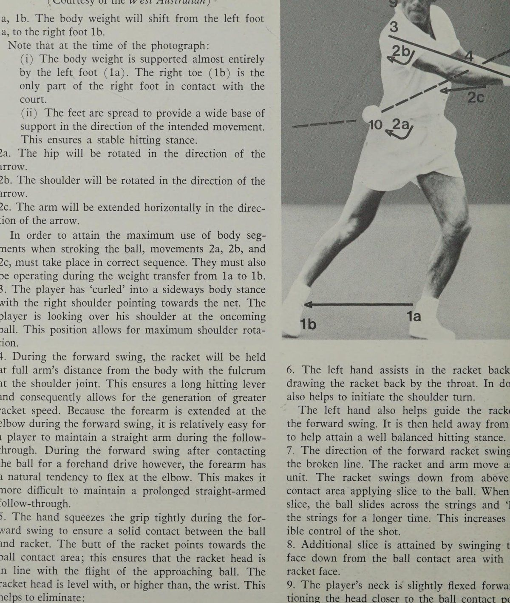
4. Mặt vợt hơi ‘mở’ để giúp tạo ra những đường cắt vào bóng và đảm bảo cú đánh sâu. Đầu vợt cao hơn cổ tay giúp tránh:
(i) vung đầu vợt ngang qua đường bay của quả bóng đang đến gần.
(ii) đánh một cú đánh cao, có độ dốc.
5. Trong khi vung vợt về phía trước, vợt được giữ cách cơ thể một khoảng bằng toàn bộ cánh tay. Điều này đảm bảo đòn bẩy đánh dài và do đó cho phép tạo ra tốc độ vợt lớn hơn. Điểm tựa nằm ở khớp vai. | :
- 6a. Hông được xoay theo hướng mũi tên. 6b. Vai được xoay theo hướng mũi tên. 6c. Cánh tay được mở rộng theo chiều ngang theo hướng mũi tên. Để đạt được hiệu quả sử dụng tối đa các phần cơ thể khi vuốt bóng, các động tác 6a, 6b và 6c phải diễn ra theo đúng trình tự và trong giai đoạn chuyển trọng lượng cơ thể.
7. Tay trái giúp hướng dẫn cú vung vợt về phía trước. Sau đó, nó được giữ cách xa cơ thể để giúp đạt được tư thế đánh cân bằng.
8. Cổ của người chơi hơi nghiêng về phía trước. Điều này đặt đầu gần điểm tiếp xúc bóng hơn và giúp người chơi nhìn bóng đúng cách.
9. Cầu thủ đã ‘cuộn tròn’ vào tư thế nghiêng người với vai phải hướng về phía lưới. Người chơi nhìn qua vai này để nhìn quả bóng đang tới. Vị trí này cho phép xoay vai tối đa. CNTT
Hình 210: EVONNE GOOLAGONG, Úc
Thực hiện cú giao bóng (serve) đầu tiên bằng phẳng (Được phép của Sunday Independent)
1. Chân trái duỗi mạnh để đẩy cơ thể lên trên nhằm đạt được độ cao tối đa có thể và đảm bảo điểm tiếp xúc bóng cao. Mặc dù cả hai chân đều được duỗi ra đồng thời, nhưng chân trái đóng vai trò chính vì trọng lượng cơ thể chuyển sang chân trước khi duỗi chân. Việc duỗi chân xảy ra cùng lúc đầu vợt bắt đầu nâng lên sau khi mô tả một vòng phía sau lưng.
2. Cơ thể nghiêng về phía trước vào lúc duỗi chân để có thể đẩy cơ thể lên trên và về phía trước trong một chuyển động nhịp nhàng. Điều này cho phép chuyển động nhanh chóng liên tục về phía lưới.
3. Khi chân trái kết thúc giai đoạn duỗi chân, chân phải vung về phía trước, theo hướng mũi tên. Nó tiếp đất trên sân để hấp thụ trọng lượng cơ thể và ngăn người chơi ngã sấp mặt. Sau khi hấp thụ trọng lượng cơ thể, chân phải duỗi ra để tiếp tục đưa tay vợt vào lưới.
4. Cột sống được uốn cong để kết hợp một mức độ uốn cong nhất định của cột sống trong động tác giao bóng. Vị trí cơ thể cong này có thể đạt được bằng một trong hai cách:
(i) bằng cách giơ cao cánh tay trái trong giây lát sau khi đẩy bóng; hoặc (ii) đẩy hông trái về phía trước khi bóng được đẩy lên không trung. (Hầu hết những người chơi hàng đầu đều sử dụng đồng thời cả hai phương pháp này.)
5. Vòng vợt sau lưng diễn ra như một chuyển động liên tục nhịp nhàng. Khuỷu tay uốn cong và cho phép đầu vợt thả ra phía sau lưng. Đầu vợt tập trung tốc độ trong vòng giật phía sau lưng và cuối cùng được đẩy vào quả bóng bằng động tác ném.
6. Khuỷu tay dẫn đầu trong động tác ném. Nó phải cho phép duỗi tối đa ở khuỷu tay, và do đó tăng tốc độ vợt ngay trước điểm va chạm. Khuỷu tay cũng phải được đặt ở vị trí cao và dọc theo đầu ngay trước điểm va chạm để đảm bảo bóng tiếp xúc với cánh tay ở trạng thái căng hoàn toàn. 7a. Hông được xoay theo hướng mũi tên. 7b. Vai đang quay theo hướng mũi tên. 7c. Cánh tay uốn cong theo chiều mũi tên. Để đạt được mức sử dụng tối đa các phần cơ thể trong động tác giao bóng, các chuyển động 7a, 7b và 7c phải diễn ra theo đúng trình tự. Họ cũng phải hoạt động trong giai đoạn duỗi chân của chuyển động. v2 Nói cách khác, vật đang được đẩy lên trên 7 và về phía trước, đồng thời cũng quay trong thời gian này. { Trong ảnh, động tác 7a và 7b gần như đã hoàn thành, động tác 7c đã hoàn thành được nửa chừng. Lưu ý rằng:
(1) Giai đoạn duỗi chân đang hoạt động (2). một (ii) Giai đoạn gập cột sống 4, đang hoạt động cùng lúc với giai đoạn gập dọc của cánh tay. —
8. Cổ hơi duỗi ra, nhờ đó đặt đầu ở vị trí thuận lợi để quan sát bóng kỹ. .
9. Việc đẩy bóng vào khu vực đánh diễn ra dọc theo đường gãy. Quỹ đạo này đảm bảo rằng ; điểm tiếp xúc cách cơ thể khoảng ba mươi cm (một foot) ở phía trước và ba mươi cm (một foot) ở bên phải cơ thể. Việc tiếp xúc với bóng dọc theo đường này sẽ khiến người chơi ngã về phía trước sau khi tiếp xúc với bóng và di chuyển về phía lưới theo một chuyển động mượt mà. ‘ee * chiều cao mở rộng cho điểm va chạm và được giữ khá tôi để cho phép sử dụng khả năng uốn cong cổ tay tối đa. —
Hình 211: GARY PENBERHY, Úc
Đánh một cú vô lê thuận tay thông thường (Được phép của Tây Úc) Lưu ý rằng người chơi thuận tay trái. la, 1b. Trọng lượng cơ thể được chuyển từ chân trái 1a sang chân phải 1b. Lưu ý:
(1) Bàn chân phải đặt vững chắc trên sân và chịu phần lớn trọng lượng cơ thể.
(ii) Cầu thủ đã sải bước dài bằng chân phải, từ đó định vị mình càng xa về phía trước càng tốt. Điều quan trọng là phải liên hệ với những cú vô lê càng sớm càng tốt để:
(a) Đánh bóng khi nó ở vị trí cao trên không và do đó thực hiện một cú vô lê tấn công thay vì thực hiện cú đánh như một cú lốp bóng phòng thủ trên cao.
(b) Xem khu vực sân đối phương phía sau sân
- bóng bằng cách sử dụng tầm nhìn ngoại vi.
(c) Ném bóng vào góc càng rộng càng tốt.
(d) Tận dụng tối đa khả năng xoay người trong cú vô lê. (Tiếp xúc với bóng ngang bằng hoặc phía sau cơ thể sẽ hạn chế chuyển động của cánh tay.)
(iii) Bàn chân dang rộng để tạo bệ rộng : hỗ trợ đảm bảo thế đánh ổn định.
2. Đầu gối phải uốn cong khi nhận trọng lượng cơ thể. Điều này đảm bảo rằng:
(i) Kiểm soát bóng được nâng cao. Với đầu của tay vợt gần bóng hơn và điểm tiếp xúc, anh ta có thể nhìn thấy bóng hiệu quả hơn.
(ii) Có sự chuyển trọng lượng kéo dài từ la sang 1b.
(iii) Vợt được đặt đúng vị trí ngang tầm với đường bay của quả bóng đang đến gần.
3. Cơ thể nghiêng vào trong cú đánh, giúp đảm bảo việc chuyển trọng lượng cơ thể được hiệu quả. Xoay vai trái bắt đầu chuyển động về phía trước của vợt.
4. Cổ tay ở tư thế nằm ngửa (mở rộng) để điểm tiếp xúc bóng ở phía trước cơ thể. Nếu không có cổ tay ngả ra sau, điểm tiếp xúc của bóng sẽ ở bên cạnh cơ thể, khiến cú vô lê chỉ đơn thuần là một cánh tay. cú đánh, Động tác vung vợt về sau ngắn cần thiết khi đánh cú vô lê thuận tay phải được bắt đầu bằng tư thế ngả cổ tay. _ Điều này sẽ giữ vợt ở phía trước cơ thể, ngăn cản xu hướng vung vợt khi thực hiện cú vô lê và đảm bảo điểm tiếp xúc bóng sớm. Nếu động tác vung vợt bắt đầu ở vai, thì vợt lùi lại thường đặt vợt ở phía sau cơ thể khiến người chơi vung vợt khi đánh tôi bắt vô lê hoặc chạm bóng quá muộn. 4 5. Vợt được giữ ở góc 45 độ so với phương thẳng đứng, Điều này cho phép bóng được đấm một cách tự tin đến đường chéo sân (cross-court) vì vợt có thể được xoay một cách an toàn theo hướng này trong khoảng cách xấp xỉ 90 cm (ba feet). Bằng cách thực hiện cú vô lê với vợt được đặt thẳng đứng, sẽ có quá nhiều cú vô lê được đánh vào lưới hoặc vượt ra ngoài đường cuối sân. Điều này là do mặt vợt hướng sâu về phía đường cuối sân chỉ khoảng ba mươi cm (một foot). Sáu mươi cm (hai feet) còn lại được chia cho cú vô lê ngoài sân hoặc vào lưới.
6. Mặt vợt ‘mở’, một góc 45 độ. Mép dưới của đầu vợt tạo ra xoáy xuống cho bóng.
7. Đầu vợt được đấm xuyên qua quả bóng theo hướng mũi tên. Đường vợt đi xuống này, kết hợp với mặt vợt 'mở' tạo ra độ xoáy xuống đáng kể cho quả bóng. Bóng có xu hướng treo trên dây lâu hơn một chút. Điều này làm tăng khả năng kiểm soát và cho phép người chơi thực hiện cú vô lê của mình một cách chính xác. Nếu cần một cú vô lê với tốc độ nhanh hơn, mặt vợt có thể hơi khép lại.
8. Lưu ý điểm tiếp xúc của bóng nằm ở phía trước cơ thể.
9. Đầu được đặt ở vị trí sao cho người chơi có thể nhìn thấy bóng một cách chính xác. Người chơi phải có cảm giác như đang nhìn bóng qua dây vợt. Kỹ thuật này sẽ giúp đạt được khả năng kiểm soát tốt hơn khi thực hiện cú vô lê, vì đầu gần và phù hợp với hành động hơn; cụ thể là điểm tiếp xúc của bóng.
Hình 212: JOHN HUNT, Úc
Đánh một cú vô lê thuận tay kéo dài (Được phép của Tây Úc)
1. Cầu thủ buộc phải căng ra và đánh một cú vô lê thuận tay rất rộng, do đó cơ sở hỗ trợ của anh ta bị giới hạn ở bàn chân trái. (Đầu gối gập nhẹ giúp hấp thụ lực của trọng lượng cơ thể lên bàn chân trái.) Để bù đắp cho sự mất ổn định này, cổ tay phải được giữ cứng hơn trong suốt cú đánh.
2. Điểm tiếp xúc bóng ở phía trước cơ thể. (Xem giải thích ở Hình 211, la, (11).)
3. Cánh tay thẳng tại điểm tiếp xúc để đảm bảo đòn đánh dài và do đó cho phép tạo ra tốc độ vợt lớn hơn.
4. Đường vợt đi xuống, kết hợp với mặt vợt 'mở', tạo ra độ xoáy xuống đáng kể cho bóng.
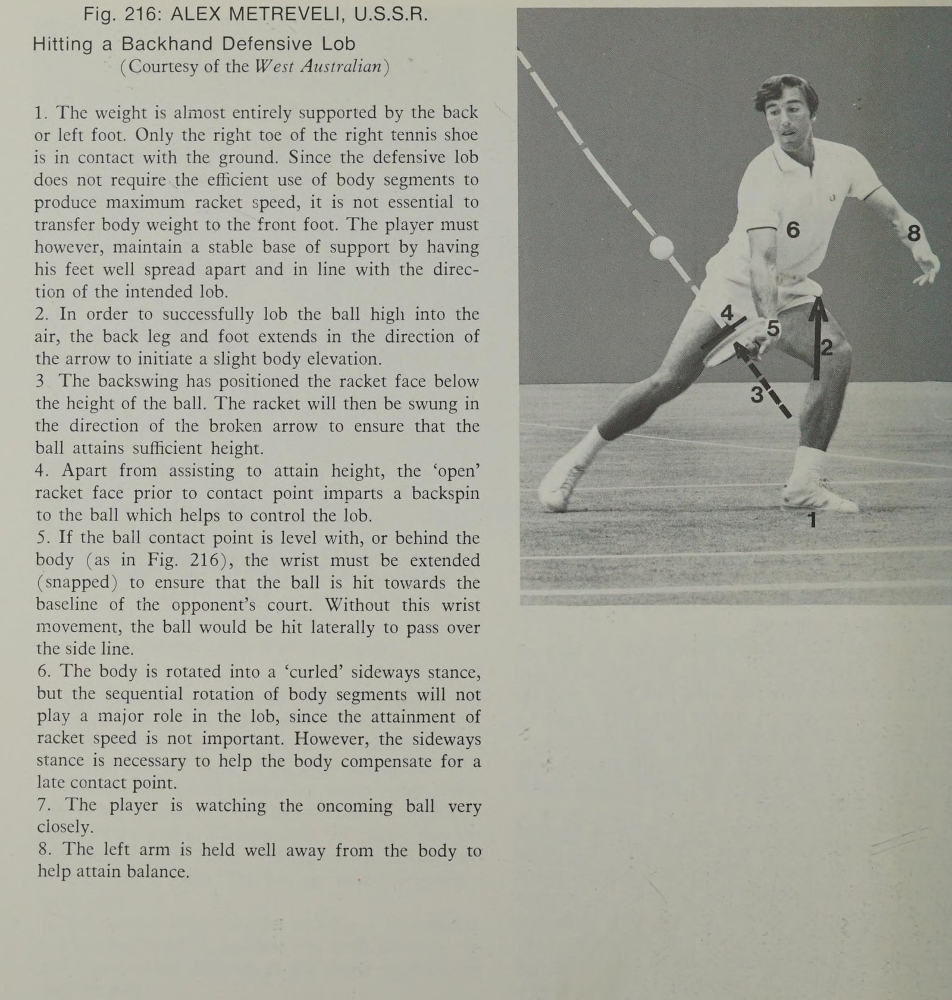
5. Mép dưới của mặt vợt dẫn toàn bộ mặt vợt.
6. Điểm 4 và 5 đảm bảo bóng có xu hướng treo trên dây lâu hơn một chút. Điều này làm tăng khả năng kiểm soát và cho phép người chơi thực hiện cú vô lê với độ chính xác cao hơn.
7. Bóng bật lại dọc theo đường 7 với tốc độ và khả năng kiểm soát đáng kể với điều kiện:
(1) cổ tay bị căng khi va chạm; (ii) cổ tay được đặt ra sau; (iii) vợt ‘mở’; (iv) đường đi của vợt dọc theo 4.
8. Đầu của người chơi và vợt của anh ta ở gần nhau tại điểm va chạm. Điều này nhằm đảm bảo rằng người chơi đã nhìn thấy bóng đúng cách.
9. Cổ của tay vợt hơi cong để đặt đầu sao cho tay vợt có thể quan sát bóng thật kỹ.
10. Cánh tay trái đưa ra xa khỏi cơ thể giúp người chơi giữ thăng bằng.
Hình 213: WANARO N’DOGRELLA, Pháp
Đánh một cú vô lê căng thuận tay (Được phép của người Tây Úc) Lưu ý rằng đối với cú vô lê này, tay vợt đang duỗi rộng hơn nhiều so với trường hợp của tay vợt trong Hình 212.
1. Như trong Hình 212, người chơi buộc phải đánh vào một điểm tựa rất không ổn định, cụ thể là chân trái. Việc uốn cong đầu gối nhẹ giúp hấp thụ hiệu quả lực của trọng lượng cơ thể dồn lên bàn chân trái.
2. Hông trái được xoay hoàn toàn về phía trước để cho phép người chơi đạt được tầm vợt xa hơn mà vẫn duy trì động tác chân đúng kỹ thuật. (Tuy nhiên, tầm với của vợt sẽ lớn hơn nếu người chơi xoay hông phải về phía trước và dồn trọng lượng cơ thể này lên bàn chân phải.)
3. Chưa có nỗ lực nào được thực hiện để đạt được vị trí vai 'đóng'. Vai phải đẩy mạnh về phía quả bóng nhằm cố gắng đạt được tầm xa hơn.
4. Cú đánh này cho phép tối thiểu động tác backswing vì người chơi đã cố gắng đạt được đòn bẩy dài nhất có thể. Do đó anh ta sẽ khó đạt được một cú đánh mạnh.
5. Vì sự cần thiết của tầm với vợt tối đa, ‘Nhiều lực được khuyến nghị của cơ thể như xoay hông, xoay vai, chuyển trọng lượng và ngả cổ tay đã bị hy sinh. Một phương pháp để đạt được lực nảy bóng mạnh hơn trong tình huống này là có ~ một mặt vợt 'ở rìa' khi tiếp xúc với bóng. Điều này sẽ đảm bảo rằng lực bật lại không bị mất do bóng ‘treo’ trên dây như trường hợp khi tiếp xúc bóng với mặt vợt mở.
6. Vì vị trí ngả sau của cổ tay đã được hy sinh để có tầm tiếp cận xa hơn nên bóng được tiếp xúc trực tiếp dọc theo cơ thể. Để tiếp xúc với bóng ở vị trí này mà vẫn đảm bảo một cú vô lê chắc chắn, người chơi phải có khả năng cầm bóng đặc biệt chặt khi tiếp xúc bóng. Trong trường hợp cực đoan, có thể cần phải 'bật cổ tay' để đạt được tốc độ bóng.
7. Mắt tập trung vào quả bóng. Hay quả bóng được dùng để tập trung vào mắt? |
8. Tay trái đưa ra xa khỏi cơ thể để giúp giữ thăng bằng. Điều này đặc biệt quan trọng khi một tay vợt buộc phải duỗi rộng và có thể có tư thế cơ thể không ổn định. 4 NHƯ
Hình 214: TÒA ÁN MARGARET, Úc
Đánh một cú vô lê thuận tay thấp (Được phép của Tây Úc)
1. Đầu gối được uốn cong tốt để đầu và vợt của người chơi ở vị trí thấp và gần với điểm tiếp xúc với bóng. Lý tưởng nhất là đầu của người chơi phải thẳng hàng với đường bay của quả bóng đang đến gần. Cú đánh này thường được thực hiện như một cú vô lê chạm, phòng thủ, do đó không cần thiết phải xoay cơ thể để đóng góp nhiều vào cú đánh. Do đó, người chơi có thể duy trì tư thế 'mở', chủ yếu dựa vào cánh tay để đạt được tốc độ vợt. Bàn chân dang rộng để đảm bảo tư thế ổn định.
2. Cơ thể nghiêng về phía trước, do hông và đầu gối gập, rất quan trọng vì nó giúp đặt đầu gần điểm tiếp xúc bóng hơn. Điều này cho phép người chơi quan sát bóng một cách hiệu quả.
3. Tay trái đưa ra ngoài cơ thể để giữ thăng bằng.
4. Cầu thủ đang quan sát bóng thật kỹ.
5. Bóng tiếp xúc tốt ở phía trước cơ thể để tránh kiểu đánh chật chội. (Xem giải thích ở hình ZA Lyla, aie)
6. Đầu vợt hơi hạ xuống, để ở vị trí thấp hơn chiều cao của cổ tay. Điều này là cần thiết vì bóng phải được đánh theo hướng hướng lên trên để qua lưới. Nếu tay vợt đối phương ở quá gần lưới, tay vợt đó có thể thực hiện cú lốp bóng vô lê một cách hiệu quả. Cú đánh này được thực hiện bằng cách mở mặt vợt (7), siết chặt cổ tay và — đấm mạnh xuyên qua quả bóng theo hướng mũi tên (8). Nếu đấu thủ đối phương ở vị trí sân trung tâm trên đường giao bóng, đấu thủ này có thể tung cú vô lê thấp vào chân đối phương một cách hiệu quả. Cú đánh này được thực hiện với cách cầm thoải mái hơn, vẫn duy trì - mặt vợt mở, nhưng đường vợt ngang hơn một chút trước điểm tiếp xúc bóng.
Hình 215: TÒA ÁN MARGARET, Úc
Thực hiện cú vô lê nửa thuận tay (Được phép của Tây Úc)
1. Vị trí của hai chân cách nhau khoảng rộng bằng vai đảm bảo tư thế đánh bóng ổn định. Lưu ý người chơi đang đỡ trọng lượng cơ thể của mình lên các ngón chân của cả hai chân. Điều này cho thấy sự điều chỉnh 'giây cuối cùng' của bàn chân để định vị cơ thể một cách hiệu quả trong tư thế đánh bóng liên quan đến quả bóng đang tới.
2. Sau một cú vung nhẹ về phía sau, vợt được đặt ở vị trí nằm ngang và giữ thấp so với mặt đất. Điều này nhằm đảm bảo rằng đầu vợt thẳng hàng với đường bay của quả bóng đang tới và sẽ tiếp xúc với quả bóng ngay sau khi nó bật ra khỏi sân. Nếu đầu vợt hạ xuống dưới mức cổ tay, thì cú vô lê nửa quả có khả năng trở thành một cú đánh cao. ., : Nếu, sau cú vung nhẹ về phía sau, vợt được giữ trong một mặt phẳng nằm ngang nhưng quá cao so với mặt sân, kết quả là cú đánh nửa vô lê sẽ là một cú đánh vội vàng. Bóng có thể sẽ đi vào lưới.
3. Một nửa cú vô lê thông thường được đánh với mặt vợt 'trên _ edge', như trong Hình 215. Nếu cần một cú vô lê phòng thủ sâu, thì mặt vợt hơi mở ngay trước khi va chạm sẽ hữu ích. Nếu cần một cú vô lê tấn công thấp, mặt vợt hơi khép lại và cuộn cổ tay ngay trước khi tiếp bóng sẽ hữu ích. _ 4, Đầu vợt chỉ cần đặt từ ba mươi đến bốn mươi cm (mười hai đến mười sáu inch) phía sau điểm nảy bóng dự kiến, và vung về phía trước dọc theo đường 4 ngay sau khi bóng tiếp xúc với sân. Một cú vô-lê nửa vòng thông thường đòi hỏi phải nắm chặt cổ tay ở tư thế 'nằm ngửa' một chút.
5. Đầu gối được uốn cong tốt để đầu và vợt của người chơi ở vị trí thấp và gần với điểm tiếp xúc với bóng. 6: Độ nghiêng của thân người là rất quan trọng vì nó đặt đầu _ gần điểm tiếp xúc bóng hơn. Điều này cho phép người chơi nhìn bóng đúng cách. Vì cú vô lê nửa vòng không phải là cú đánh tấn công mạnh nên bóng phải được nâng lên một chút để vượt qua độ cao của lưới. Phần lớn lực về phía trước là do chuyển động của cánh tay. Do đó, người chơi có thể giữ tư thế cởi mở và không phụ thuộc quá nhiều vào sự đóng góp của việc xoay cơ thể.
7. Tay trái đưa ra xa khỏi cơ thể để giúp giữ thăng bằng.
8. Người chơi đang quan sát thật kỹ quả bóng đang tới. \ . Nằm
Hình 216: ALEX METREVEU) Liên Xô:
Đánh một cú lốp bóng phòng thủ trái tay
- (Được phép của Tây Úc)
1. Trọng lượng gần như được hỗ trợ hoàn toàn bởi lưng hoặc chân trái. Chỉ có mũi giày bên phải của giày tennis bên phải tiếp xúc với mặt đất. Vì cú lốp bóng phòng thủ không yêu cầu sử dụng hiệu quả các phần cơ thể để tạo ra tốc độ vợt tối đa nên không cần thiết phải chuyển trọng lượng cơ thể sang chân trước. Tuy nhiên, người chơi phải duy trì một điểm tựa ổn định bằng cách dang rộng hai chân và phù hợp với hướng của cú lốp bóng dự định.
2. Để lốp bóng lên cao thành công, chân sau và bàn chân duỗi ra theo hướng mũi tên để bắt đầu nâng cao cơ thể một chút.
3. Cú đánh sau đã đặt mặt vợt ở dưới độ cao của bóng. Sau đó vợt sẽ được vung theo hướng mũi tên gãy để đảm bảo bóng đạt đủ độ cao.
4. Ngoài việc hỗ trợ đạt được độ cao, mặt vợt 'mở' trước điểm tiếp xúc còn tạo ra một xoáy xuống cho bóng giúp kiểm soát cú lốp bóng.
5. Nếu điểm tiếp xúc bóng ngang bằng hoặc phía sau cơ thể (như trong Hình 216), cổ tay phải được mở rộng (bắn) để đảm bảo bóng được đánh về phía cuối sân đối phương. Nếu không có chuyển động cổ tay này, bóng sẽ bị đánh theo chiều ngang để vượt qua đường biên.
6. Cơ thể được xoay thành tư thế 'cong' sang một bên, nhưng việc xoay tuần tự các đoạn cơ thể sẽ không đóng vai trò chính trong cú lốp bóng, vì việc đạt được tốc độ vợt không quan trọng. Tuy nhiên, tư thế nghiêng sang một bên là cần thiết để giúp cơ thể bù đắp cho điểm tiếp xúc muộn.
7. Người chơi đang quan sát rất kỹ quả bóng đang tới.
8. Cánh tay trái được giữ cách xa cơ thể để giúp giữ thăng bằng.
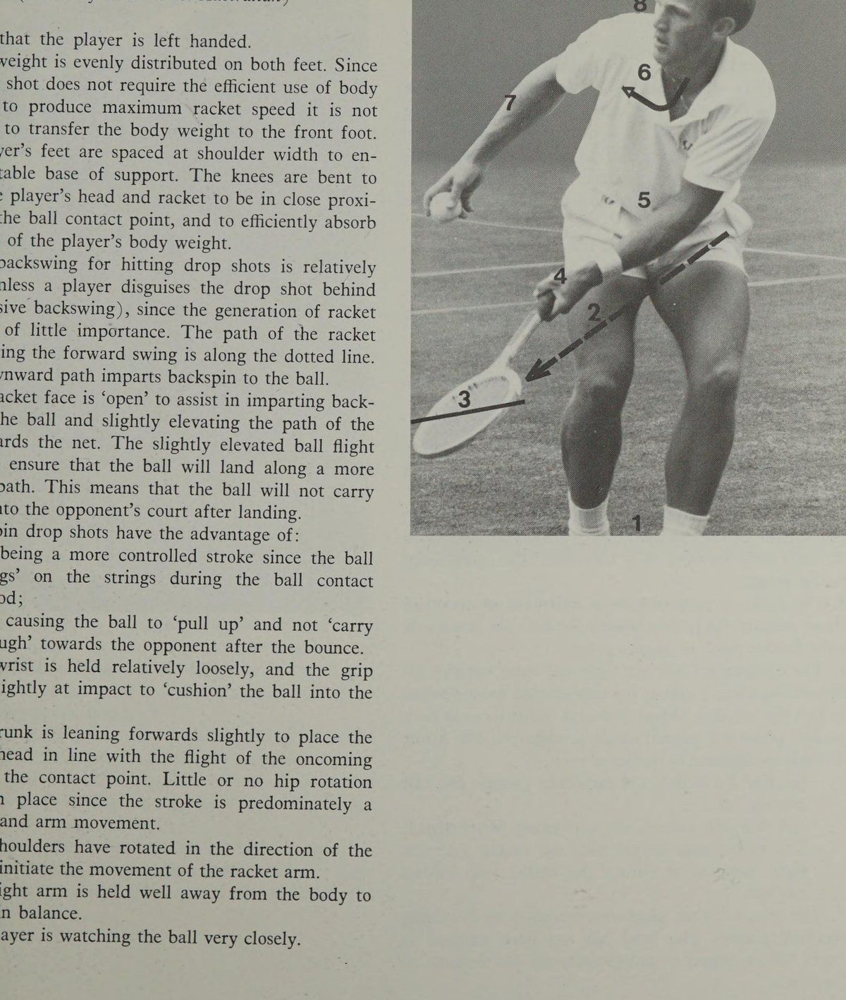
Hình 217: TONY ROCHE, Úc
Thực hiện cú đánh thuận tay (Được phép của Tây Úc) Lưu ý rằng người chơi thuận tay trái.
1. Trọng lượng được phân bố đều trên cả hai chân. Vì cú đánh rơi không yêu cầu sử dụng hiệu quả chuyển động xoay cơ thể để tạo ra tốc độ vợt tối đa nên không nhất thiết phải chuyển trọng lượng cơ thể sang chân trước. Hai chân của người chơi đặt rộng bằng vai để đảm bảo một chỗ dựa vững chắc. Đầu gối được uốn cong để cho phép đầu và vợt của người chơi ở gần điểm tiếp xúc với bóng và hấp thụ hiệu quả lực từ trọng lượng cơ thể của người chơi.
2. Cú đánh lùi để đánh các cú đánh thả tương đối ngắn (trừ khi người chơi ngụy trang cú đánh sau một cú đánh lùi rộng), vì việc tạo ra tốc độ vợt không mấy quan trọng. Đường đi của đầu vợt trong quá trình vung vợt về phía trước dọc theo đường chấm. Đường đi xuống này truyền độ xoáy xuống cho quả bóng.
3. Mặt vợt ‘mở’ để hỗ trợ truyền độ xoáy ngược cho bóng và nâng nhẹ đường đi của bóng về phía lưới. Đường bay của bóng hơi cao sẽ giúp đảm bảo bóng sẽ tiếp đất theo đường thẳng đứng hơn. Điều này có nghĩa là bóng sẽ không bay quá xa phần sân đối phương sau khi chạm đất. Những cú thả bóng xoáy xuống có ưu điểm là:
(i) là một cú đánh được kiểm soát nhiều hơn vì bóng ‘treo’ trên dây trong thời gian tiếp xúc bóng; (ii) khiến bóng bị ‘kéo lên’ và không ‘bay qua’ về phía đối phương sau khi nảy.
4. Cổ tay được giữ tương đối lỏng lẻo và tay cầm hơi thả lỏng khi tiếp xúc để 'đệm' quả bóng lên không trung.
5. Thân người hơi nghiêng về phía trước để đặt đầu của đấu thủ thẳng hàng với đường bay của bóng tới và điểm tiếp xúc. Ít hoặc không có chuyển động xoay hông vì cú đánh chủ yếu là chuyển động của vai và cánh tay.
6. Vai đã xoay theo hướng mũi tên để bắt đầu chuyển động của cánh tay vợt.
7. Cánh tay phải được giữ cách xa cơ thể để giúp giữ thăng bằng. _
8. Người chơi đang quan sát bóng rất kỹ.
Hình 218: LESLIE HUNT, Úc
Đánh một cú đập trên cao (Được phép của Thời báo Chủ nhật) la., 1b. Trọng lượng cơ thể đã chuyển từ chân phải, la, sang chân trái, 1b. Lưu ý rằng:
(i) Chỉ có ngón chân phải tiếp xúc với mặt đất, trong khi toàn bộ bàn chân trái đặt vững chắc trên sân để đỡ trọng lượng cơ thể.
(ii) Bàn chân dang rộng để tạo điểm tựa rộng, đảm bảo tư thế đánh bóng ổn định. Các phần cơ thể góp phần vào cú đánh theo những cách sau: 2a. Hông được xoay theo hướng mũi tên. 2b. Vai được xoay theo hướng mũi tên. 2c. Cánh tay uốn cong theo chiều mũi tên. Để đạt được hiệu quả sử dụng tối đa các phần cơ thể khi đập bóng, các chuyển động 2a, 2b và 2c phải diễn ra theo đúng trình tự. Chúng cũng phải hoạt động trong quá trình chuyển trọng lượng cơ thể từ la sang 1b. Ví dụ: nếu 2c xảy ra trước 2a hoặc 2b, hoặc trước khi trọng lượng cơ thể chuyển từ 1a sang 1b, thì cú đập chỉ được thực hiện bằng cánh tay. Nếu các chuyển động 2a, 2b và 2c xảy ra đúng thời điểm, nhưng trước khi trọng lượng cơ thể chuyển từ la sang 1b, thì chuyển động cơ thể về phía trước rất ít đã góp phần tạo ra cú đập bóng.
3. Vợt được đẩy vào bóng bằng chuyển động ném quá tay và được giữ lỏng để cho phép cổ tay uốn cong tối đa trước điểm va chạm.
4. Continental Service Grip đã được sử dụng để thực hiện cú đập bóng vì nó cho phép uốn cong cổ tay không hạn chế. Trên thực tế, cú đập gần như giống hệt với cú giao bóng (serve) ở cả điểm tiếp xúc và cách tạo cú đánh nói chung. Sự khác biệt chính so với giao bóng là:
(1) Đối với cú đập bóng, đối phương đẩy bóng lên không trung. ; (ii) Đối với cú đập bóng, cú đánh sau được rút ngắn. Tay cầm vợt chỉ cần nhấc vợt qua vai phải để bắt đầu vòng vợt phía sau lưng.
5. Cầu thủ thể hiện sự tập trung tốt bằng cách quan sát bóng thật kỹ. Đầu không được phép hạ xuống để người chơi có thể sớm nhìn thấy kết quả của cú đập.
Hình 219: ALEX METREVELI, Liên Xô
Đánh một cú đập trái tay cao ae (Được phép của Tây Úc) la, 1b. Trọng lượng cơ thể được hỗ trợ bởi chân sau hoặc chân trái. Lưu ý chỉ có ngón chân phải tiếp xúc với sân. Trọng lượng cơ thể sẽ được chuyển sang chân phải trong giai đoạn đánh của cú đánh. _ Chân được dang rộng để tạo chỗ dựa rộng + đảm bảo tư thế đánh ổn định. __
2. Đầu gối cong, đặc biệt là đầu gối trái vì nó sẽ được duỗi ra mạnh mẽ để bắt đầu cơ thể của người chơi _ xoay và chuyển trọng lượng cơ thể. Các phần cơ thể góp phần vào cú đánh theo những cách sau: 3a. Hông được xoay theo hướng mũi tên. tôi
30. Vai phải i quay theo hướng mũi tên. _ 3c, Cánh tay duỗi thẳng theo hướng mũi tên. (Để biết thêm thông tin về: tổng hợp lực và chuyển trọng lượng cơ thể, xem Beeris: 218, Phần 2c.)
4. Cầu thủ thực hiện tư thế nghiêng người quá mức và quan sát quả bóng đang tới qua vai phải của mình. Điều này cho phép thực hiện xoay vai tối đa.
5. Cầu thủ hơi vươn cổ ra để _ quan sát kỹ quả bóng đang tới.
6. Khi kết thúc _backswing, khuỷu tay phải uốn cong và giơ cao trong không khí. Trong khi vung vợt về phía trước, khuỷu tay phải duỗi mạnh và dẫn vợt về phía điểm tiếp xúc. Một cú búng cổ tay đáng kể là điều quan trọng sau khi duỗi khuỷu tay để tăng tốc độ vợt trước khi tiếp xúc với bóng. Lưu ý cổ tay hơi ngả về phía sau.
7. Tay trái hỗ trợ việc vung vợt về phía sau bằng cách kéo cổ vợt về phía sau. Làm như vậy sẽ giúp _ bắt đầu xoay vai. Tay trái cũng giúp vợt chuyển động về phía trước. Vợt “—ae,CUC ee ; tại Đầu vợt được đặt phía sau cơ thể ở độ cao xấp xỉ BP. Điều này cho phép có đủ khoảng cách trên i221
Các ví dụ bổ sung Sáu bức ảnh sau đây được trình bày. để người đọc phân tích: :
Hình 220: Ken Rosewall, thực hiện cú lốp bóng thuận tay. (Bởi lịch sự của Tây Úc.)
Hình 221: Evonne Goolagong, thực hiện cú giao bóng (serve) thứ hai.
(Theo lịch sự của Sunday Independent.)
Hình 222: Leslie Hunt, thực hiện cú vô lê thuận tay. (Bởi lịch sự của Leslie Hunt.)
Hình 223: Evonne Goolagong, căng bóng trái tay cú đột phá. (Theo lịch sự của Sunday Independent.)
Hình 224: Leslie Hunt, đánh một cú thuận tay (forehand)- cú đánh. (Được phép của Leslie Hunt.)
Hình 225: Ken Rosewall, đánh một cú trái tay (backhand)- cú đánh. (Theo lịch sự của Tây Úc.)
ace Một cú giao bóng (serve) có lực mạnh hoặc ở vị trí khiến người nhận không thể tiếp xúc với bóng. Ưu điểm ở đây là tỉ số khi người chủ đã giành được điểm sau khi deuce. lợi thế ra Đây là tỷ số khi người nhận đã giành được điểm sau khi thua. trò chơi trên toàn sân Trò chơi trên toàn sân là khả năng của người chơi thực hiện thành thạo tất cả các cú đánh tennis, cảm thấy tự tin như nhau ở đường cuối sân và trên lưới. Khu vực sân (rộng 44 feet) được bổ sung vào cả hai bên đường biên đơn để mở rộng diện tích sân cho trận đấu đôi. American twist Một kỹ thuật giao bóng trong đó người tung bóng lên không sẽ đưa bóng qua đầu người giao bóng (server). Đường vợt hướng lên trên do đó tạo ra độ xoáy cực lớn cho quả bóng. Khi tiếp đất, bóng nảy cao hơn và rộng hơn nhiều so với bình thường. vô-lê góc Một quả bóng được đánh trước khi nảy lên và sau khi tiếp xúc, đi theo một đường xuyên qua sân, thường xuyên qua đối phương. cú đánh tiếp cận Một cú đánh được thực hiện bởi một tay vợt ngay trước khi anh ta chạy về phía lưới. Cú sút có thể là cú vô lê hoặc lốp bóng, nhưng thường là cú sút sâu vào góc. Điều này cho phép người đánh có nhiều thời gian để chiếm một vị trí thuận lợi gần lưới. sân sau Khu vực sân giữa khu vực giao bóng và vạch cuối sân. tay sau Đối với người chơi thuận tay phải, đây là cú đánh được thực hiện ở bên tay trái, trong đó cánh tay phải kéo ngang cơ thể. vị trí gãi lưng Một điểm trong cú vung giao bóng nơi đầu vợt được vòng ra sau lưng và treo đối xứng xuống phần nhỏ của lưng. Đây là một chuyển động xoay của quả bóng được áp dụng cho quả bóng bằng đường đi xuống với mặt vợt thẳng đứng hoặc đường đi vợt ngang với mặt vợt mở. Khi tiếp đất bóng nảy cao hơn bình thường. backswing Chuyển động lùi ban đầu của vợt trước điểm tiếp xúc bóng. Nó cho phép tính thời gian thích hợp và tích lũy tốc độ vợt. đế hỗ trợ Vị trí của bàn chân của người chơi trên bề mặt sân giúp duy trì sự cân bằng của cơ thể xoáy xuống trong hẻm hoặc chuyển động cần thiết để đánh bóng. Đường ranh giới phía sau ở hai đầu sân. trò chơi cơ bản Loại chiến lược được ưa thích bởi người chơi có cú đánh mặt đất xuất sắc và do đó sẽ chơi từ vạch cuối sân hoặc khu vực sân sau. người đánh bóng cơ bản (Ngược lại với 'dinker') Một người chơi cố gắng chơi một trò chơi quyền lực một cách vô điều kiện bằng cách đánh bóng mạnh đến mức mắc nhiều lỗi. trận đấu lớn Một thương hiệu tennis hấp dẫn chủ yếu là giao bóng nhanh, những cú vô lê sắc nét và những cú đập mạnh. Một tay vợt chơi ‘trận đấu lớn’ có lối chơi tấn công. bóng bị chặn Một cú đánh với tốc độ đầu vợt rất nhỏ. Phần lớn tốc độ bóng sau khi tiếp xúc là do tốc độ bóng trước khi tiếp xúc. Một cuộc dạo chơi; người chơi được quyền vào vòng tiếp theo của giải đấu mà không cần thi đấu. Điều này xảy ra khi không có đủ người chơi để tham gia rút thăm và quyền tạm biệt thường được cấp cho những người chơi hạt giống trước. súng thần công Một cú giao bóng (serve) cực kỳ mạnh mẽ, phẳng thường đánh xuống giữa sân. điểm đánh dấu ở giữa Một đường thẳng dài 4 inch, chia đôi vạch cuối sân bằng nhau. Phần mở rộng tưởng tượng của đường này gặp đường dịch vụ trung tâm. : tâm bộ gõ Phần trung tâm của mặt vợt nơi tiếp xúc giữa bóng và dây là hiệu quả nhất xét về tốc độ bật bóng và kiểm soát bóng. Đường giao cầu trung tâm Đường chia đôi khu vực sân giao bóng thành hai bên trái và phải. dây đeo trung tâm Đây thường là một dây đeo vải chạy dọc quanh lưới ở trung tâm và tạm biệt được neo xuống đất. Nó cho phép lưới vẫn căng ở độ cao chính xác. thay đổi tốc độ Một thao tác chiến thuật trong đó người chơi thay đổi tốc độ các cú đánh của mình; ví dụ từ những cú đánh mạnh mẽ tấn công đến những cú đánh phòng thủ đánh chậm hoặc ngược lại. sặc Để giữ tay cầm gần đầu hơn. của _ vợt chứ không phải ở cuối hoặc 'mông'. nghẹt thở Một người chơi căng thẳng đến mức khiến trận đấu của anh ta bị ảnh hưởng rõ rệt. Ngoài ra: Một người chơi cầm vợt lên cao dọc theo tay cầm được cho làm nghẹt vợt. cú đánh chặt Người chơi đánh bóng theo đường vợt hướng xuống có góc nhọn. Khi tiếp xúc bóng, một cú đánh chặt sẽ tạo ra độ xoáy ngược quá mức cho bóng. backswing vòng tròn Chuyển động lùi của vợt trong đó một 'vòng' hoặc hình bán nguyệt được mô tả trước cú vung về phía trước và điểm tiếp xúc bóng cuối cùng. Kiểu xoay ngược này đảm bảo chuyển động liên tục của đầu vợt và do đó tạo ra khả năng tạo ra cú xoay đầu vợt lớn hơn. hình thức cổ điển Các kỹ thuật vuốt bóng được chấp nhận nhiều nhất (theo ý kiến đa số của các chuyên gia tennis). Mặt vợt kín Vị trí của vợt trong đó mép trên của mặt vợt nghiêng về phía trước so với quả bóng đang tới. tư thế khép kín (Ví dụ: thuận tay phải của người thuận tay phải.) Một tư thế cực kỳ nghiêng sang một bên trong đó vai trái và đường tưởng tượng giữa hai bàn chân hướng vuông góc với lưới. nghiêng cổ tay Phần mở rộng của bàn tay ở cổ tay. Động tác này đặt đầu vợt xa hơn về phía sau cổ tay. (Còn được gọi là 'nằm ngửa cổ tay'.) Cách cầm kiểu lục địa Một cách cầm nằm giữa kiểu cầm thuận tay phía đông và kiểu cầm trái tay phía đông. Hầu hết bàn tay đều ở phía trên cán vợt khi cầm vợt ở mép. Cách cầm này được sử dụng phổ biến nhất khi giao bóng. cú đánh chéo sân Một quả bóng được đánh theo đường chéo trên sân. Một cú đánh đưa bóng sâu vào phần sân đối phương trong vòng một hoặc hai feet tính từ đường cuối sân. cú lốp bóng phòng thủ Một cú đánh cao lên không trung và đi sâu vào phần sân đối phương. Cú đánh này thường được thực hiện để giúp người chơi giành lại vị trí thuận lợi trên sân. deep shot deuce Điểm số khi mỗi người chơi hoặc đội giành được ba điểm trong một trận đấu. dink Một cú đánh chậm, cắt góc để đưa bóng đi ngang qua sân, giữ bóng ở mức thấp khi đi qua lưới. dinker (ngược lại với 'basher') Một tay vợt cố gắng vô điều kiện để chơi một trò chơi phòng thủ chậm, an toàn bằng cách chỉ trả bóng .. qua lưới, dựa vào đối thủ của mình để mắc lỗi. lỗi kép Hai lỗi giao bóng liên tiếp từ một ô giao cầu. : cú đánh kép Bóng được tiếp xúc với vợt hai lần trở lên riêng biệt trong một lần cố gắng đánh bóng. cú đánh dọc biên Một quả bóng được đánh dọc theo một đường song song và gần với đường biên. drive volley Một cú vô lê được thực hiện bằng một cú xoay người chạm đất. Cú chạm đất được thực hiện như một cú cắt nhẹ, chậm khiến bóng đi qua lưới. Khi tiếp đất, bóng vẫn ở gần lưới. cú vô lê Đây là cú đánh thả cho tất cả các mục đích thực tế, ngoại trừ việc nó được đánh như một cú vô lê chứ không phải như một cú đánh nền. điểm kiếm được Một người chơi giành được một điểm do chơi tốt chứ không phải do lỗi của đối thủ. Quả giao bóng không vào đúng sân giao bóng; một dịch vụ bất hợp pháp, ví dụ: lỗi ở chân. cú giao bóng (serve) phẳng Thường là cú giao bóng (serve) đầu tiên ‘đại bác’ nhanh được đánh với ít hoặc không có độ xoáy. cú đánh phẳng Một cú đánh đưa bóng qua lưới với ít hoặc không có độ xoáy. Xảy ra lỗi dịch vụ nếu:
(a) người chơi chạm vào đường cuối sân hoặc khu vực sân trước khi tiếp xúc với bóng khi giao bóng; (b) tay vợt đi hoặc chạy trước khi tiếp xúc với bóng; (c) một tay vợt bước qua vạch giữa sân để sang nửa giao bóng kia trước khi chạm bóng. sân trước Khu vực sân giữa lưới và đường giao bóng cuối. thuận tay (đối với người chơi thuận tay phải) Cú đánh dùng để đánh bóng ở phía bên phải của cơ thể. Phần cán vợt được thiết kế để cầm vợt. Ngoài ra, vị trí tay khi cầm vợt. trò chơi trên mặt đất Một phong cách chơi cơ bản kết hợp các cú công bóng thuận tay và trái tay. Half volley Một cú đánh trong đó vợt tiếp xúc với bóng ngay sau khi bóng bật ra khỏi mặt sân. đầu (của vợt) Phần gần tròn của vợt, chứa các dây. giữ giao bóng Trò chơi sẽ thuộc về người chơi hoặc đội giao bóng. trong Bóng rơi trên vạch hoặc bên trong khu vực thi đấu hợp pháp. để cho một quả giao bóng chạm lưới nhưng tiếp tục xuyên qua lưới để hạ cánh vào đúng sân giao bóng. Một lượt chơi được chơi lại. Thuật ngữ này cũng được dùng để chỉ việc 'phát lại' trong trường hợp vở kịch bị gián đoạn bởi những ảnh hưởng bên ngoài. giữa sân (No-Man's-Land ) Khu vực sân trung tâm phía trước một thước và phía sau vạch giao bóng cuối hai thước. mặt phẳng dọc giữa Mặt phẳng này, khi nhìn từ phía trước, về mặt giải phẫu sẽ chia đôi tay vợt thành lỗi đánh rơi lỗi bám bàn chân hai nửa tương đương. Ví dụ, một mắt, một cánh tay, một chân nằm ở mỗi bên của mặt phẳng giữa. Một lối chơi tấn công trong đó người chơi cố gắng tiếp cận sân trước với ý tưởng tung cú vô lê và đập bóng. cú vô lê tấn công Một cú vô lê tấn công được đánh từ trên lưới. mặt vợt trên mép Mặt vợt được đặt theo chiều dọc; nghĩa là cả cạnh trên và cạnh dưới của vợt đều nằm trong cùng một mặt phẳng thẳng đứng. Mặt vợt mở Mép trên của vợt nghiêng về phía sau so với bóng đang tới. tư thế mở Người chơi quay mặt vào lưới. Các đường tưởng tượng giữa vai của tay vợt và giữa hai bàn chân của anh ta đều song song với lưới. tầm nhìn ngoại vi Tầm nhìn của người chơi nằm ngoài phạm vi trực tiếp của anh ta. Nói cách khác, những gì người chơi có thể nhìn thấy ‘từ khóe mắt’ trong khi vẫn nhìn thẳng về phía trước. nguyên tắc vật lý Các định luật vật lý liên quan đến trò chơi mạng cơ thể con người và nghiên cứu về chuyển động. poach Một tình huống xảy ra trong nội dung đánh đôi khi một đấu thủ di chuyển qua sân để chặn cú đánh về phía đồng đội của mình. tập hợp các cú đánh liên tục của người chơi trước khi điểm kết thúc. nghỉ giao bóng Người chơi hoặc đội nhận sẽ thắng một trò chơi cụ thể. cổ vợt (của vợt) Phần giao nhau giữa cán vợt và đầu vợt. Quả bóng quay ngược chiều kim đồng hồ khi nhìn từ bên cạnh. Nó được thực hiện tới bóng bằng đường đi lên của vợt với mặt vợt thẳng đứng hoặc đường đi ngang của vợt với mặt vợt đóng. Khi tiếp đất, quả bóng bật lại thấp hơn và bay xa hơn bình thường. topspin volley Một cú đánh trong đó bóng được tiếp xúc trước khi nó nảy trên sân. volley-lob Một cú vô lê đưa bóng qua đầu đối phương.